CONTENTS
Chapter No. |
CHAPTER |
Page No. |
MONTH |
1 |
1 |
|
|
1.1 |
Introduction |
1 |
June |
1.2 |
Set |
2 |
|
1.3 |
Representation of a Set |
3 |
|
1.4 |
Types of Sets |
6 |
|
1.5 |
Set Operations |
12 |
|
1.6 |
Properties of Set Operations |
19 |
|
1.7 |
De Morgan’s Laws |
24 |
|
1.8 |
Application on Cardinality of Sets: |
29 |
|
2 |
41 |
|
|
2.1 |
Introduction |
41 |
July |
2.2 |
Rational Numbers |
42 |
|
2.3 |
Irrational Numbers |
45 |
|
2.4 |
Real Numbers |
55 |
|
2.5 |
Radical Notation |
57 |
|
2.6 |
Surds |
60 |
|
2.7 |
Rationalisation of Surds |
68 |
|
2.8 |
Scientific Notation |
70 |
|
3 |
78 |
|
|
3.1 |
Introduction |
78 |
August |
3.2 |
Polynomials |
81 |
|
3.3 |
Remainder Theorem |
92 |
|
3.4 |
Algebraic Identities |
97 |
|
3.5 |
Factorisation |
102 |
September |
3.6 |
Division of Polynomials |
108 |
|
3.7 |
Greatest Common Divisor (GCD) |
114 |
|
3.8 |
Linear Equation in Two Variables |
116 |
|
4 |
138 |
|
|
4.1 |
Introduction |
138 |
July |
4.2 |
Types of Angles |
139 |
August |
4.3 |
Quadrilaterals |
144 |
October |
4.4 |
Parts of a Circle |
159 |
November |
4.5 |
Properties of Chords of a Circle |
162 |
|
4.6 |
Cyclic Quadrilaterals |
170 |
|
4.7 |
Practical Geometry |
174 |
|
5.1 |
185 |
October |
|
5.2 |
Devising a Coordinate System |
187 |
|
5.3 |
Distance between any Two Points |
193 |
|
5.4 |
The Mid-point of a Line Segment |
203 |
|
5.5 |
Points of Trisection of a Line Segment |
208 |
November |
5.6 |
Section Formula |
210 |
|
5.7 |
The Coordinates of the Centroid |
214 |
|
6 |
222 |
|
|
6.1 |
Introduction |
222 |
December |
6.2 |
Trigonometric Ratios of Some Special Angles |
228 |
|
6.3 |
Trigonometric Ratios for Complementary Angles |
233 |
|
6.4 |
Method of using Trigonometric Table |
235 |
|
7 |
248 |
|
|
7.1 |
Introduction |
248 |
January |
7.2 |
Heron’s Formula |
249 |
|
7.3 |
Application of Heron’s Formula in Finding Areas of Quadrilaterals |
251 |
|
7.4 |
Surface Area of Cuboid and Cube |
253 |
|
7.5 |
Volume of Cuboid and Cube |
258 |
|
8 |
266 |
|
|
8.1 |
Introduction |
266 |
February |
8.2 |
Collection of Data |
267 |
|
8.3 |
Measures of Central Tendency |
269 |
|
8.4 |
Arithmetic Mean |
269 |
|
8.5 |
Median |
278 |
|
8.6 |
Mode |
284 |
|
9 |
291 |
|
|
9.1 |
Introduction |
291 |
March |
9.2 |
Basic Ideas |
292 |
|
9.3 |
Classical Approach |
295 |
|
9.4 |
Empirical Approach |
296 |
|
9.5 |
Types of Events |
299 |
|
ANSWERS |
305 |
|
|
Captions used in this Textbook
எண்ணன்ப ஏனை எழுத் தன்ப இவ்விரண்டும் கண்ணன்ப வாழும் உயிர்க்கு -குறள் 392
Numbers and letters, they are known as eyes to humans, they are. Kural 392
Learning Outcomes
To transform the classroom processes into learning centric with a set of benchmarks
Note
To provide additional inputs for students in the content
Activity / Project
To encourage students to involve in activities to learn mathematics
ICT Corner
To encourage learner’s understanding of content through application of technology
Thinking Corner
To kindle the inquisitiveness of students in learning mathematics. To make the students to have a diverse thinking
Points to Remember
To recall the points learnt in the topic
Multiple Choice Questions
To provide additional assessment items on the content
Progress Check
Self-evaluation of the learner’s progress
Exercise
To evaluate the learners’ in understanding the content
“The essence of mathematics is not to make simple things complicated but to make complicated things simple” -S. Gudder
Let's use the QR code in the textbooks! How?
• Download the QR code scanner from the Google PlayStore/ Apple App Store into your smartphone
• Open the QR code scanner application
• Once the scanner button in the application is clicked, camera opens and then bring it closer to the QR code in the textbook.
• Once the camera detects the QR code, a url appears in the screen. Click the url and go to the content page.
SYMBOLS
= equal to
≠ not equal to
< less than
< less than or equal to
> greater than
> greater than or equal to
≈ equivalent to
∪ union
∩ intersection
U universal Set
∈ belongs to
∉ does not belong to
⊂ proper subset of
⊆ subset of or is contained in
⊄ not ⊄ not a proper subset of
a subset of or is not contained in
A’ (or) Ac complement of A
∅ (or) { } empty set or null set or void set
n(A) number of elements in the set A
P(A) power set of A
Ʃ summation
|||ly similarly
∆symmetric difference
N natural numbers
W whole numbers
Z integers
R real numbers
∆ triangle
∠ angle
⊥ perpendicular to
|| parallel to
⇒ implies
∴ therefore
∵ since (or) because
| | absolute value
≈ approximately equal to
| (or) : such that
≡ (or) ≅, congruent
≡ identically equal to
Π pi
± plus, or minus
P(E) probability of an event E
A set is a many that allows itself to thought of as a one
-Georg Cantor

Georg Cantor (AD (CE) 1845 - 1918)
The theory of sets was developed by German mathematician Georg Cantor. Today it is used in almost every branch of Mathematics. In Mathematics, sets are convenient because all mathematical structures can be regarded as sets.
Learning Outcomes
In our daily life, we often deal with collection of objects like books, stamps, coins, etc. Set language is a mathematical way of representing a collection of objects. Let us look at the following pictures. What do they represent? Here, Fig 1.1 represents a collection of fruits and Fig. 1.2 represents a collection of house-hold items.
We observe in these cases, our attention turns from one individual object to a collection of objects based on their characteristics. Any such collection is called a set.


A set is a well-defi ned collection of objects.
Here “well-defined collection of objects” means that given a specific object it must be possible for us to decide whether the object is an element of the given collection or not.
The objects of a set are called its members or elements.
For example,
1. The collection of all books in a District Central Library.
2. The collection of all colours in a rainbow.
3. The collection of prime numbers.
We see that in the adjacent box, statements (1), (2), and (4) are well defi ned and therefore they are sets. Whereas (3) and (5) are not well defi ned because the words good and beautiful are difficult to agree on. I might consider a student to be good and you may not. I might consider the Jasmine is the beautiful flower, but you may not. So, we will consider only those collections to be sets where there is no such ambiguity.
Therefore (3) and (5) are not sets.
Which of the following are sets?
1. Collection of Natural numbers.
2. Collection of English alphabets.
3. Collection of good students in a class.
4. Collection of States in our country.
5. Collection of beautiful flowers in a garden.
Activity - 1 Discuss and give as many examples of collections from your daily life situations, which are sets and which are not sets.
Note
For example, the collection 1,2,3,4,5,6,7,8, … as well as the collection 1, 3, 2, 4, 5, 7, 6, 8, … are the same though listed in different order. Since it is necessary to know whether an object is an element in the set or not, we do not want to list that element many times.
Notation
A set is usually denoted by capital letters of the English Alphabets A, B, P, Q, X, Y, exatra
The elements of a set is written within curly brackets “{ }” double oppastafey empty set double oppastafey bracket "{ }"
If x is an element of a set A or x belongs to A, we write x belongs to A.
If x is not an element of a set A or x does not belongs to A, we write x not belongs A.
For example,
A is equal to set bracket of set bracket of 2,3,5,7
Consider the set A = {2,3,5,7} then
2 is an element of A; we write 2∊A 2 belongs to A
5 is an element of A; we write 5∊A 5 belongs to A
6 is not an element of A; we write 6∉A 6 does not belongs to A
Example 1.1
Consider the set A = {Ashwin, Murali Vijay, Vijay Shankar, Badrinath}.
A is equal to set bracket of Ashwin, Murali Vijay, Vijay Shankar, Badrinath.
Fill in the blanks with the appropriate symbol belongs to or not belongs to
Romen letter 1 Murali Vijay DASH DASH DASH A.
Romen letter 2 Ashwin DASH DASH DASH A.
Romen letter 3 Badrinath DASH DASH DASH A.
Romen letter 4 Ganguly DASH DASH DASH A.
Romen letter 5 Tendulkar DASH DASH DASH A
Solution
Romen letter 1 Murali Vijay belongs to A.
Romen letter 2 Ashwin belongs to A
Romen letter 3 Badrinath belongs to A
Romen letter 4 Ganguly does not belong to A.
Romen letter 5 Tendulkar does not belong to A.
The collection of odd numbers can be described in many ways:
(1) “The set of odd numbers” is a fine description, we understand it well.
(2) It can be written as {1, 3, 5, …} set bracket of 1,3,5,...
(3) Also, it can be said as the collection of all numbers x where x is an odd number.
All of them are equivalent and useful. For instance, the two descriptions “The collection of all solutions to the equation x minus 5 is equal to 3 and set bracket of 8 refer to the same set.
A set can be represented in any one of the following three ways or forms:
In descriptive form, a set is described in words.
For example,
(i) The set of all vowels in English alphabets.
(ii) The set of whole numbers.
In set builder form, all the elements are described by a rule.
For example,
Romen letter 1 A = {x : x is a vowel in English alphabets}
A is equal to set bracket of x such that x is a vowel in English alphabets
Romen letter 2 B = {x|x is a whole number} B is equal to set bracket of x such that x is a whole number
Note
The symbol ‘:’ or ‘|’ stands for “such that”.
A set can be described by listing all the elements of the set.
For example,
Example 1.2
Romen letter 1 A = {a, e, i, o, u} A is equal to set bracket of a , e , i, o, u
Romen letter 2 B = {0,1,2, 3,…} B is equal to set bracket of 0, 1, 2, 3,
Can this form of representation be possible always?
Note
Three dots (…) in the example (ii) is called ellipsis. It indicates that the pattern of the listed elements continues in the same manner.
Write the following sets in respective forms.
Serial No |
Descriptive form |
Set builder form |
Roster form |
1 |
The set of all natural numbers less than 10 |
|
|
2 |
|
{x : x is a multiple of 3, x ∊ N Set bracket of x such that X is a multiple of 3, x belongs to N
|
|
3 |
|
|
{2,4,6,8,10} Set bracket of 2, 4, 6, 8, 10
|
4 .The set of all days in a week |
|
|
|
5 |
|
|
{…-3,-2,-1,0,1,2,3…} Set bracket of ...minus 3, minus 2, minus 1, 0, 1, 2, 3...} |
Example 1.2
Write the set of letters of the following words in Roster form
Solution
1. ASSESSMENT
X= {A, S, E, M, N, T} X is equal to set bracket of A, S, E, M, N, T
2. PRINCIPAL
Y={P, R, I, N, C, A, L} Y is equal to set bracket of P, R, I, N, C, A, L
Exercise 1.1
1. Which of the following are sets?
Romen letter 1 The collection of prime numbers up to 100.
Romen letter 2 The collection of rich people in India
Romen letter 3 The collection of all rivers in India.
Romen letter 4 The collection of good Hockey players.
2. List the set of letters of the following words in Roster form.
Romen letter 1 INDIA
Romen letter 2 PARALLELOGRAM
Romen letter 3 MISSISSIPPI
Romen letter 4 CZECHOSLOVAKIA
3. Consider the following sets A = {0, 3, 5, 8}, B = {2, 4, 6, 10} and C = {12, 14,18, 20}. A is equal to set bracket of 0,3,5, 8 B is equal to set bracket of 2, 4, 6, 10 and C is equal to set bracket of 12, 14,18, 20)
(a) State whether True or False:
Romen letter 1 18 ∊ C 18 belongs to c
Romen letter 2 16 ∉A 6 not belongs to A
Romen letter 3 14 ∉C 14 not belongs to C
Romen letter 4 10 ∊B 10 belongs to B
Romen letter 5 5∊B 5 belongs to B
Romen letter 6 0 ∊B 10 0 belongs to B 10
(b) Fill in the blanks:
Romen letter 1 3 ∊ belongs to DASH 3
Romen letter 2 14 ∊ belongs to DASH 14
Romen letter 3 18 DASH belongs to B
Romen letter 4 4 DASH belongs to B
4. Represent the following sets in Roster form.
Romen letter 1 A is equal to the set of all even natural numbers less than 20.
Romen letter 2 B is equal to set bracket of y such that y is equal to 1 by 2n, n belongs to N, n less than or equal to 5}
{y: y = 1/2n , n ∊ N, n ≤ 5}
Romen letter 3 C = {x : x is perfect cube, 27 < x < 216} C is equal to set bracket of x such that x is perfect cube , 27 less than x less than 216
Romen letter 4 D = {x : x ∊ Z, –5 < x ≤ 2} ) D is equal to set bracket of x such that x belongs to Z, minus 5 lesser than x lesser than equal to 2
5. Represent the following sets in set builder form.
Romen letter 1 B is equal to the set of all Cricket players in India who scored double centuries in One Day Internationals.
Romen letter 2 C is equal to , , ,... 21 32 43 $.
Romen letter 3 D is equal to The set of all Tamil months in a year.
Romen letter 4 E is equal to The set of odd Whole numbers less than 9.
6. Represent the following sets in descriptive form.
Romen letter 1 P is equal to set bracket of January, June, July
Romen letter 2 Q is equal to set bracket of 7,11,13,17,19,23,29
Romen letter 3 R is equal to set bracket of x is equal to set bracket of x such that x belongs to N, x less than 5}x belongs to N greater than x less than 5
Romen letter 4 S = is equal to set bracket of x {x : x is a consonant in English alphabets}
Exercise 1.1 answers
2. (i) {I, N, D, A} (ii) {P, A, R, L, E, O, G, M} (iii) {M, I, S, P} (iv) {C, Z, E, H, O, S, L, V, A, K, I}
3. (a) (i) True (ii) True (iii) False (iv) True (v) False (vi) False (b) (i) A (ii) C (iii) g (iv)!
4. (i) A = {2, 4, 6, 8, 10, 12, 14, 16, 18} (ii) B = {1/2, 1/4 , 1/6 , 1/8 , 1/10 } (iii) C = {64, 125} (iv) D = { -4,-3,-2,-1, 0,1, 2}
5. (i) B = {x: x is an Indian player who scored double centuries in One Day International}
(ii) C =: { x : x= n/ n + 1, n∊N. (iii) D = {x : x is a Tamil month in a year}
6. (i) P = The set of English months starting with letter ‘J’
(ii) Q = The set of Prime numbers between 5 and 31
(iii) R = The set of natural numbers less than 5
There is a very special set of great interest: the empty collection ! Why should one care about the empty collection? Consider the set of solutions to the equation x power 2 plus 1 It has no elements at all in the set of Real Numbers. Also consider all rectangles with one angle greater than 90 degrees. There is no such rectangle and hence this describes an empty set.
So, the empty set is important, interesting and deserves a special symbol too.
A set consisting of no element is called the empty set or null set or void set.
It is denoted by ∅ or { }.
Thinking Corner
Are the sets {0} Null Set {set bracket empty} and {∅} Empty Set {∅} empty sets?
For example,
Romen letter 1 A={x : x A is equal to set bracket of x such that x is an odd integer and divisible by 2}
A={ } or ∅
Romen letter 2 The set of all integers between 1 and 2.
A set which has only one element is called a singleton set.
For example, A = {x : 3 < x < 5, x∊N } A is equal to set bracket of x: 3 less than x less than5, X and N}
Romen letter 2 The set of all even prime numbers.
A set with finite number of elements is called a finite set.
Note
An empty set has no elements, so Q is a finite set.
For example,
1. The set of family members.
2. The set of indoor/outdoor games you play.
3. The set of curricular subjects you learn in school.
4. A = {x : x is a factor of 36} A is equal to set bracket of x: such that x is 36 factor
A set which is not finite is called an infinite set.
Thinking Corner
Is the set of natural numbers a finite set?
For example,
To discuss further about the types of sets, we need to know the cardinality of sets.
Cardinal number of a set : When a set is finite, it is very useful to know how many elements it has. The number of elements in a set is called the Cardinal number of the set. The cardinal number of a set A is denoted by n(A)
Example 1.3
If A is equal to set bracket of {1,2,3,4,5,7,9,11}, find n(A). n nside bracket of A close bracket
Solution
A = {1,2,3,4,5,7,9,11}
A is equal to set bracket of 1, 2, 3, 4, 5 ,7, 9, 11
Since set A contains 8 elements, n(A) = 8. n of (A) is equal to 8.
Thinking Corner
If A = {1, b, b, {4, 2}, {x, y, z}, d, {d}}, then n(A) is DASH.
Two finite sets A and B are said to be equivalent if they contain the same number of elements. It is written as A ≈ B.
If A and B are equivalent sets, then n(A) = n(B) n of A equal to n of B
Thinking Corner
Let A={x : x A is equal to set bracket of x such that x is a colour in national flag of India} and B={Red, Blue, Green}. B is equal to set bracket of Red, Blue, Green. Are these two sets equivalent?
For example,
Consider A = { ball, bat} and B = {history, geography}.
Here A is equivalent to B because n(A) = n(B) = 2. n of A equal to n of B Equal to 2
Example 1.4
Are P = { x : –3 ≤ x ≤ 0, x } and Q = The set of all prime factors of 210, equivalent sets? P is equal to set bracket of x such that minus 3 less than or equal to x less than or equal to ≤0, x belongs to Z}
Solution
P = {–3, –2, –1, 0}, P is equal to set bracket of minus 3, minus 2, minus 1, 0 The prime factors of 210 are 2,3,5,and 7 and so, Q = {2, 3, 5, 7} Q is equal to set bracket of 2 , 3 , 5 , 7
n(P) =4 and n(Q) = 4. n of P is equal to 4 and n of (Q) is equal to 4Therefore, P and Q are equivalent sets.
Two sets are said to be equal if they contain exactly the same elements, otherwise they are said to be unequal.
In other words, two sets A and B are said to be equal, if
Romen letter 1 every element of A is also an element of B
Romen letter 2vevery element of B is also an element of A
For example,
Consider the sets A = {1, 2, 3, 4} A is equal to set bracket of 1,2,3,4and B = {4, 2, 3, 1} B is equal to set bracket of 4, 2,3,1
Since A and B contain the same elements, A and B are equal sets.
Thinking Corner
Are the sets ∅, {0}, {∅} equal or equivalent? ∅, set bracket of zero }, set bracket of null ∅}
Note
If A and B are equal sets, we write A = B. A is equal to B.
If A and B are unequal sets, we write A≠B. A not equal to B.
A set does not change, if one or more elements of the set are repeated.
For example, if we are given
A={a, b, c} A is equal to set bracket of a, b, c and B={a, a, b, b, b, c} B is equal to set bracket of a, a, b, b, b, then, we write B = { a, b, c, }. B is equal to set bracket of a, b, c Since, every element of A is also an element of B and every element of B is also an element of A, the sets A and B are equal.
Example 1.5
Are A = {x : x ! N, 4 ≤ x ≤ 8} A is equal to set bracket of x is equal to x term N, 4less than x less than 8 and B = { 4, 5, 6, 7, 8} B is equal to set bracket of 4,5,6,7, 8 equal sets?
Solution
A = { 4, 5, 6, 7, 8},
B = { 4, 5, 6, 7, 8}
A is equal to set bracket of 4, 5 , 6, 7, 8,
B is equal to set bracket of 4, 5 , 6, 7, 8
A and B are equal sets.
Note
Equal sets are equivalent sets, but equivalent sets need not be equal sets. For example, if A = { p,q,r,s,t} and B= { 4,5,6,7,8}. Here n(A)=n(B), so A and B are equivalent but not equal.
A Universal set is a set which contains all the elements of all the sets under consideration and is usually denoted by U.
For example,
Romen letter 1 If we discuss about elements in Natural numbers, then the universal set U is the set of all Natural numbers. U={x : x ∈}. U is equal to set bracket of x such that x belongs to N .
Romen letter 2 If A is equal to set bracket of earth, mars, Jupiter, then the universal set U is the planets of solar system.
Let A and B be two sets. If every element of A is also an element of B, then A is called a subset of B. We write A⊆B. A subset of B
Thinking Corner

A ⊆ B is read as “A is a subset of B”
Thus A ⊆ B, if a ∊A implies a ∊ B.
If A is not a subset of B, we write A M B
Clearly, if A is a subset of B, then n(A) ≤ n(B).
Since every element of A is also an element of B, the set B must have at least as many elements as A, thus n(A) ≤ n(B).
The other way is also true. Suppose that n(A) > n(B), then A has more elements than B, and hence there is at least one element in A that cannot be in B, so A is not a subset of B.
For example,
1 ⊆{1,2,3} (ii) {2,4} ∉{1,2,3} set bracket of [1] subset of {set bracket of 1,2,3}
2 set bracket of 2,4 not a subset of set bracket of 1,2,3}
Example 1.6
Insert the appropriate symbol ⊆or ⊆ in each blank to make a true M statement.
Romen letter 1 {10, 20, 30} DASH {10, 20, 30, 40} set bracket of 10, 20, 30) dash _ set bracket of 10, 20, 30, 40
Romen letter 2 { p, q, r} DASH {w, x, y, z}
set bracket of p, q, r dash set bracket of w, x, y, z
Solution
Romen letter {10, 20, 30} DASH {10, 20, 30, 40}
Since every element of {10, 20, 30} is also an element of {10, 20, 30, 40}, we get {10, 20, 30} ⊆ {10, 20, 30, 40}.
Romen letter {p, q, r} DASH {w, x, y, z}
Since the element p belongs to {p, q, r} but does not belong to {w, x, y, z}, shows that {p, q, r} ⊆ {w, x, y, z}.
Activity-3
Discuss with your friends and give examples of subsets of sets from your daily life situation.
Example 1.7
Write all the subsets of A is equal to set bracket of a, b.
Solution
A= {a,b} A is equal to set bracket of a, b
Subsets of A are empty set , set bracket of a, set bracket of b , set bracket of a, comma b) .
∅,{a}, {b} and {a, b}.
Note
If A⊆B and B⊆A, then A=B.
A subset of B and B subset of A then A is equal to B
In fact, this is how we defined equality of sets. Empty set is a subset of every set.
This is not easy to see ! Let A be any set. The only way for the empty set to be not a subset of A would be to have an element x in it but with x not in A. But how can x be in the empty set ? That is impossible. So, this only way being impossible, the empty set must be a subset of A. (Is your head spinning? Think calmly, explain it to a friend, and you will agree it is alright !)
Every set is a subset of itself. (Try and argue why?)
Let A and B be two sets. If A is a subset of B and A≠B, A not equal to B then A is called a proper subset of B and we write A ⊆ B. A proper set of B
For example,
If A is equal to set bracket of 1,2,5 and B is equal to set bracket of 1,2,3,4,5 then A is a proper subset of B i.e.. A ⊆ B. A proper set of B.
Two sets A and B are said to be disjoint if they do not have common elements.
In other words, if
if A∩B=∅, A intersection B is equal to empty set
then A and B are said to be disjoint sets.
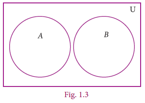
Example 1.8
Verify whether A={20, 22, 23, 24} A is equal to set bracket of 20, 22, 23, 24 and B={25, 30, 40, 45 B is equal to set bracket of 25, 30, 40, 45 are disjoint sets.
Solution
A = {20,22, 23, 24} , B={25, 30, 40, 45} A is equal to set bracket of 20, 22, 23, 24 , B is equal to set bracket of 25 , 30 , 40 , 45
A∩B = {20,22, 23, 24} ∩ {25, 30, 40, 45}
= { }
A intersection B is equal to empty set
A is equal to set bracket of 20,22, 23, 24}, B is equal to set bracket of 25, 30, 40, 45
AB is equal to set bracket of 20,22, 23, 24 intersection 25, 30, 40, 45} is equal to set bracket
Since A∩B = ∅, A and B are disjoint sets.
Note
If A∩B≠ ∅, A intersection B is not equal to ∅ empty set then A and B are said to be overlapping sets. Thus if two sets have at least one common element, they are called overlapping sets.
The set of all subsets of a set A is called the power set of ‘A’. It is denoted by P(A).
For example,
Romen letter 1 If A={2, 3}, A is equal to set bracket of1,2,3 then find the power set of A.
The subsets of A are ∅ , {2},{3},{2,3}.
The power set of A,
P(A) = {∅ ,{2},{3},{2,3}}
Romen letter 2 If A = {∅ , {∅}}, then the power set of A is { ∅ , {∅ , {∅}}, {∅} , {{∅}} }.
P of A is equal to whole set bracket of empty set . set bracket of 2 set bracket of 3}, set bracket of 2,3
Romen letter 2 A is equal to set bracket of empty set, set bracket of empty set}, A bar constant( empty set empty set . set bracket of empty set set bracket of empty set comma ,{ set bracket of empty set },{ set bracket of empty set empty set
An important property.
We already noted that n(A) # n[P(A)]. n of A less than n or equal to n multiply [P of (A) ] But how big is P(A) ? Think about this a bit, and see whether you come to the following conclusion:
Romen letter 1 If n(A) = m, then n[P(A)] = 2m x is equal to set bracket of a,b,c,x, y, z . , n of (X) is equal to 6
n of A is equal to m எனில், n multiply P of (A) is equal to 2 power m
Romen letter 2 The number of proper subsets of a set A is n[P(A)]–1 = 2m–1. n of [ P ( of A ) ] minus 1 is equal to 2 power m minus 1.
Example 1.9 Find the number of subsets and the number of proper subsets of a set X={a, b, c, x, y, z}. X is equal to set bracket of a , b , e x , y , z
Solution Given X={a, b, c, x, y, z}. x is equal to set bracket of a, b, c, x, y, z Then, n(X) =6
The number of subsets = n[P(X)] = 26 = 64
The number of proper subsets = n[P(X)]-1 = 26–1
n multiply [P of (X)] is equal to 2 power 6 is equal to 64 – 1 = 63
Thinking Corner
Every set has only one improper subset. Verify this fact using any set.
Exercise 1.2
1. Find the cardinal number of the following sets.
Romen letter 1 M = {p, q, r, s, t, u} M is equal to set bracket of p, q, r, s, t, u}
Romen letter 2 P = {x : x = 3n+2, n∈Z and x< 15} P is equal to set bracket of x such that x is equal to 3n plus 2, n belongs to Z மற்றும் x less than 15}
Romen letter 3 Q = {y : y = 4/3n , n ∈Nand 2 < n ≤5} Q is equal to set bracket of y such that y is equal to 4 down 3n, n term N and 2 less than or equal to ≤5}
Romen letter 4 R = {x : x is an integers, x∈and –5 ≤ x <5} R is equal to set bracket of x such that x is an integer, x belongs to Z and minus 5 less than or equal to x less than 5}
Romen letter 5 S = The set of all leap years between 1882 and 1906. ) S is equal to 1882 from1906 to (Leap year) set
Answer 1. (i) n(M) = 61. (i) n(M) = 6 (ii) n(P) =5 (iii) n(Q) = 3 (iv) n(R) = 10 (v)
2. Identify the following sets as finite or infinite.
Romen letter 1 X = is equal to The set of all districts in Tamilnadu.
Romen letter 1 Y = is equal to The set of all straight lines passing through a point.
Romen letter 1 A = is equal to { x : x ∈Zand x <5}
Romen letter 1)B = is equal to { x : x2–5x+6 = 0, x ∈N}
ANSWER ; . (i) finite (ii) infinite (iii) infinite (iv) finite
3. Which of the following sets are equivalent or unequal or equal sets?
Romen letter 1 A = The set of vowels in the English alphabets.
B = The set of all letters in the word “VOWEL”
Romen letter 2 C = {2,3,4,5} D = { x : x ∈W, 1< x<5} C is equal to set bracket of 2,3,4,5}, D is equal to set bracket of x such that x term W, 1 less than x less than 5}
Romen letter 3 X = { x : x is a letter in the word “LIFE”} Y = { F, I, L, E}
Romen letter 4 G = { x : x is a prime number and 3 < x < 23} H = { x : x is a divisor of 18}
ANSWER i) Equivalent sets (ii) Unequal sets (iii) Equal sets (iv) Equivalent sets
4. Identify the following sets as null set or singleton set.
Romen letter 1 A = {x : x ∈N, 1 < x < 2}
Romen letter 2 B = The set of all even natural numbers which are not divisible by 2
Romen letter 3 C = {0}.
Romen letter 4 D = The set of all triangles having four sides.
ANSWER 4. (i) null set (ii) null set (iii) singleton set (iv) null set
5. State which pairs of sets are disjoint or overlapping?
Romen letter 1 A = {f, i, a, s} and B={a, n, f, h, s} A is equal to set bracket of f,i,a,s) and B is equal to set bracket of a, n, f,h, s}
Romen letter 1 C = {x : x is a prime number, x >2} and D ={x:x is an even prime number}
Romen letter 2 E = {x : x is a factor of 24} and F={x : x is a multiple of 3, x < 30}
ANSWER 5. (i) overlapping (ii) disjoint (iii) overlapping
6. If S = {square, rectangle, circle, rhombus, triangle}, list the elements of the following subset of S.
Romen letter 1 The set of shapes which have 4 equal sides.
Romen letter 2 The set of shapes which have radius.
Romen letter 3 The set of shapes in which the sum of all interior angles is 180o.
Romen letter 4 The set of shapes which have 5 sides.
7. If A = {a, {a, b}}, write all the subsets of A.
Answer 7. { }, {a}, {a, b}, {a, {a, b}}
8. Write down the power set of the following sets:
Romen letter 1 A = {a, b} (ii) B = {1, 2, 3} (iii) D = {p, q, r, s} (iv) E = ∅
Romen letter 1 A is equal to set bracket of a, b
Romen letter 2 B is equal to set bracket of 1, 2,3
Romen letter 3 D is equal to set bracket of p, q,r, s
Romen letter 4 E is equal to empty set
ANS(i) {{ }, {a}, {b}, {a, b}}
(ii) {{ }, {1}, {2}, {3}, {1, 2}, {1, 3}, {2, 3}, {1, 2, 3}}
(iii) {{ }, {p}, {q} {r}, {s}, {p, q}, {p, r}, {p, s}, {q, r}, {q, s}, {r, s}, {p, q, r}, {p, q, s}, {p, r, s}, {q, r, s}, {p, q, r, s}} (iv) P(E)= {{ }}
9. Find the number of subsets and the number of proper subsets of the following sets.
Romen letter 1 W = {red, blue, yellow} Romen letter 2 X = { x2 : x ∈N, x2 ≤ 100}.
Romen letter 1 W is equal to set bracket of red, blue, yellow
Romen letter 2 X is equal to set bracket of x power 2 such that : x N ,x square less than 100}.
Answer (i) 8, 7 (ii) 1024, 1023
10. Romen letter 1 If n(A) = 4, find n[P(A)]. n of A is equal to 4 n multiply [ P of (A) ]
Romen letter 2 If n(A)=0, find n[P(A)]. n of A is equal to 0 எனில் n [ P ( of A) ]
Romen letter 3 If n[P(A)] = 256, find n(A). n [ P of (A) ] is equal to 256 எனில் n of A
Answer 10. (i) 16 (ii) 1 (iii) 8
We started with numbers and very soon we learned arithmetical operations on them. In algebra we learnt expressions and soon started adding and multiplying them as well, writing (x2+2),(x-3) etc. Now that we know sets, the natural question is, what can we do with sets, what are natural operations on them?
When two or more sets combine together to form one set under the given conditions, then operations on sets can be carried out. We can visualize the relationship between sets and set operations using Venn diagram.
John Venn was an English mathematician. He invented Venn diagrams which pictorially represent the relations between sets. Venn diagrams are used in the field of Set Theory, Probability, Statistics, Logic and Computer Science.
The Complement of a set A is the set of all elements of U (the universal set) that are not in A.
It is denoted by A′ or Ac. In symbols A′= {x : x∈U, x∉A}
A' complements is equal to set bracket of x such that X belongs to U, x not equal to A }
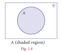
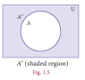
For example,
If U is equal to set bracket of all boys in a class U is equal to set bracket of all boys in a class and A is equal to set bracket of boys who play Cricket, then complement of the set A is A′= {boys who do not play Cricket}. complement of A is equal to set bracket of boys who do not play Cricket
Example 1.10
If U = {c, d, e, f, g, h, i, j} and A = { c, d, g, j} , find A′.
Solution
U = {c, d, e, f, g, h, i, j}, A = {c, d, g, j}
A′ ={e, f, h, i}
U is equal to set bracket of c,d,e, f,g,h,i, j}, A is equal to set bracket of c,d,g,j}
A’ complement is equal to set bracket of e,f,h,i
Note
(A′)′ = A
U′ = ∅
∅′= U
(A complement whole power complement ) ′ is equal to A
U′ complement is equal to empty set
∅ complement of empty set ′ is equal to U
The union of two sets A and B is the set of all elements which are either in A or in B or in both. It is denoted by A∪B and read as A union B.
In symbol, A∪B = {x : x ∈A or x∈B} A union B is equal to set bracket of x such that X A and X B}
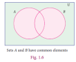
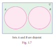
For example,
If P ={Asia, Africa, Antarctica, Australia} P is equal to set bracket of Asia, Africa, Antarctica, Australia and Q = {Europe, North America, South America}, q is equal to set bracket of Europe, North America, South America then the union set of P and Q is P∪Q = {Asia, Africa, Antarctica, Australia, Europe, North America, South America}.
Note
• A∪A = A
• A∪∅ = A
A union A is equal to A
A union empty set ∅ is equal to A
• A∪U = U where A is any subset of universal set U
• A ⊆ A∪B and B ⊆ A∪B A subset of A∪B and B subset of A∪B
• A∪B = B∪A A Union of Two Sets B is equal to B Union of Two Sets A (union of two sets is commutative)
Example 1.11
If P={m, n} P is equal to set bracket of m, n and Q= {m, i, j}, Q is equal to set bracket of m, i, j} then, represent P and Q in Venn diagram and hence find P∪Q. P union of Q
Solution
Given P={m, n} and Q= {m, i, j} P is equal to set bracket of m, n and Q is equal to set bracket of m, i, j}
From the Venn diagram, P∪Q={n, m, i, j}. P union of Q is equal to set bracket of n, m, I ,j
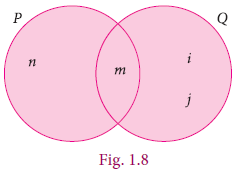
The intersection of two sets A and B is the set of all elements common to both A and B. It is denoted by A∩B and read as A intersection B.
In symbol , A∩B={x : x∈A and x∈B}
A intersection B is equal to set bracket of x such that x belongs to A and belongs to B
Intersection of two sets can be represented by a Venn diagram as given below
For example,
If A = {1, 2, 6}; B = {2, 3, 4}, then A∩B = {2} A is equal to set bracket of 1,2,6}; B is equal to set bracket of 2,3, 4}because 2 is common element of the sets A and B.
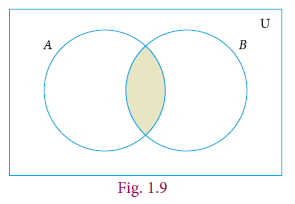
Example 1.12 Let A = {x : x is an even natural number and 1< x ≤ 12} and
B = { x : x is a multiple of 3, x ∈N and x≤12} be two sets. Find A∩B.
A is equal to set bracket of x such that x even number and1 less than x less than or equal to 12},
B is equal to set bracket of x such that X bar 3, x element N and x less than or equal to 12} A intersection B .
Solution
Here A = {2, 4, 6, 8, 10, 12} and B = {3, 6, 9, 12}
A∩B = {6, 12}
Example 1.13
If A = {2, 3} and C = { }, find A∩C.
A is equal to set bracket of 2, 3 and C is equal to set bracket of } but A intersection C
Solution
There is no common element and hence A∩C ={ }
Note
Note
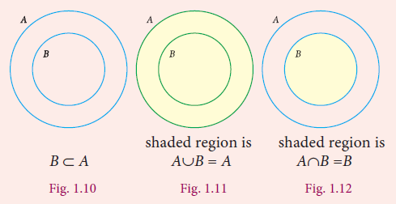
(a) Minimum of n(A∪B) = max{p, q} (A union B) is equal to minimum set bracket of p,q}
(b) Maximum of n(A∪B) = p + q maximum of n(A union B) is equal to P plus q
(c) Minimum of n(A∩B) = 0 minimum n of A intersection B) is equal to 0
(d) Maximum of n(A∩B) = min{p, q}(A intersection B) is equal to குறைந்தபட்சம் set bracket of p,q}
Let A and B be two sets, the difference of sets A and B is the set of all elements which are in A, but not in B. It is denoted by A–B or A\B and read as A difference B.
In symbol, A–B = { x : x ∈ A and x ∉ B}
B–A = { y : y ∈ B and y ∉ A}.
A minus B is equal to set bracket of x such that x element A and x not belongs to B}
B belongs to A is equal to set bracket of y such that y element B and y belongs to A}.
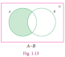
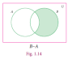
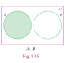
note
Example 1.14
If A={–3, –2, 1, 4} and B= {0, 1, 2, 4}, find (i) A–B (ii) B–A.
A is equal to minus set bracket of minus 3,minus 2,1,4} and B is equal to set bracket of 0,1,2,4} ,
( 1b) A minus B ( 2) B minus A
Solution
A–B ={–3, -2, 1, 4} – {0, 1, 2, 4} = { -3, -2}
B–A = {0, 1, 2, 4} –{–3, -2, 1, 4} = { 0, 2}
The symmetric difference of two sets A and B is the set (A–B)∪(B–A). It is denoted by AΔB.
AΔB={ x : x ∈ A–B or x ∈ B–A}
Note
Example 1.15
If A = {6, 7, 8, 9} and B={8, 10, 12}, find AΔB.
Solution
A–B = {6, 7, 9}
B–A = {10, 12}
AΔB = (A–B)∪(B–A) = {6, 7, 9}∪{10,12}
AΔB = {6, 7, 9, 10, 12}.
Aminus B is equal to set bracket of 6,7,9)
Bminus A is equal to set bracket of 10, 12} such that
A symmetric difference B is equal to (A minus B) ∪(B minus A) ) is equal to set bracket of 6, 7,9} union set bracket of 10,12}
A symmetric difference B is equal to set bracket of 6,7,9,10, 12}.
Thinking Corner
(A-B) = (A–B)∩ (B–A)?
Example 1.16
Represent AΔB through Venn diagram.
Solution
AΔB= (A–B) ∪ (B–A)
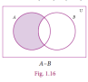
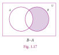
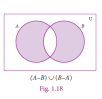
Note
Example 1.17
From the given Venn diagram, write the elements of
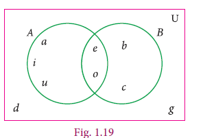
Solution
(iii) A–B = {a, i, u}
(iv) B–A = {b, c}
(vii) B′ = {a, d, g, i, u}
U = {a, b, c, d, e, g, i, o, u}
A is equal to set bracket of a, e, i, o, u}
B is equal to set bracket of b, c, e, o}
A minus B is equal to set bracket of a, i, u}
B minus A is equal to set bracket of b, c}
A dash is equal to set bracket of b, c, d, g}
B dash is equal to set bracket of a, d, g, i, u}
U is equal to set bracket of a, b, c, d, e, g, i, o, u}
Example 1.18
Draw Venn diagram and shade the region representing the following sets
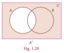
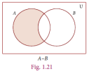
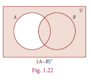
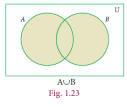
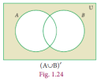
Exercise 1.3
1. Using the given Venn diagram, write the elements of
A (ii) B (iii) A∪B (iv) A∩B
(v) A–B (vi) B–A (vii) A′ (viii) B′
U
Romen letter 1 A Romen letter 2 B Romen letter 3 A union B Romen letter 4 (iv) A intersection B
Romen letter 5 A minus B Romen letter 6 B minus A Romen letter 7 (vii) A complement (viii) B complement
Romen letter 9 U
1. (i) {2, 4, 7, 8, 10} (ii) {3, 4, 6, 7, 9, 11} (iii) {2, 3, 4, 6, 7, 8, 9, 10, 11}
(iv) {4, 7} (v) {2, 8, 10} (vi) {3, 6, 9, 11}
(vii) {1, 3, 6, 9, 11, 12} (viii) {1, 2, 8, 10, 12}
Romen letter 9 {1, 2, 3, 4, 6, 7, 8, 9, 10, 11, 12}
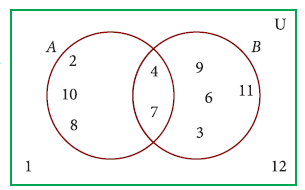
Fig. 1.25
2. Find A∪B, A∩B, A–B and B–A for the following sets.
A = {2, 6, 10, 14} and B={2, 5, 14, 16}
A = {a, b, c, e, u} and B={a, e, i, o, u}
A = {x : x ∈N, x ≤ 10} and B={x : x ∈W, x < 6}
A = Set of all letters in the word “mathematics” and
B = Set of all letters in the word “geometry”
Romen letter 1 A is equal to set bracket of 2, 6, 10, 14 and B is equal to set bracket of 2, 5, 14, 16}
Romen letter 2 A is equal to set bracket of a, b, c, e, u and B is equal to set bracket of a, e, i, o, u}
Romen letter 3 A is equal to set bracket of x such that x உ N, x less than or equal to 10} and B is equal to set bracket of x such that x belongs to W, x less than 6}
Romen letter 4 A is equal to Set of all letters in the word “mathematics” and
B is equal to ‘Set of all letters in the word “geometry”
Answer 2. (i) {2, 5, 6, 10, 14, 16}, {2, 14}, {6, 10}, {5, 16}
(ii) {a, b, c, e, i, o, u}, {a, e, u}, {b, c}, {i, o}
(iii) {0, 1, 2, 3, 4, 5, 6, 7, 8, 9, 10}, {1, 2, 3, 4, 5}, {6, 7, 8, 9, 10,}, {0}
(iv) {m, a, t, h, e, i, c, s, g, o, r, y}, {e, m, t,}, {a, h, i, c, s}, {g, o, r, y}
3. If U={a, b, c, d, e, f, g, h}, A={b, d, f, h} and B={a, d, e, h}, U is equal to set bracket of a, b, c, d, e, f, g, h}, A is equal to set bracket of b, d, f, h} மற்றும் B is equal to set bracket of a, d, e, h } find the following sets.
A′ (ii) B′ (iii) A′∪B′ (iv) A′∩B′ (v) (A∪B)′
(A∩B)′ (vii) (A′)′ (viii) (B′)′
Romen letter 1 (i) A complement Romen letter 2 (ii) B complement Romen letter 3 (iii) A complement union B complement Romen letter 4′ (iv) A complement intersecton B complement Romen letter 5 (v) (A union B) whole complement Romen letter 6 (vi) (A intersecton B) ′ Romen letter7 (vii) (A complement ) of complement ′ Romen letter 8 (viii) (B complement of complement
Answer i) {a, c, e, g} (ii) {b, c, f, g} (iii) {a, b, c, e, f, g} (iv) {c, g} (v) {c, g}
(vi) {a, b, c, e, f, g} (vii) {b, d, f, h} (viii) {a, d, e, h}
4. Let U={0, 1, 2, 3, 4, 5, 6, 7}, A={1, 3, 5, 7} and B={0, 2, 3, 5, 7}, U is equal to set bracket of 0, 1, 2, 3, 4, 5, 6, 7}, A is equal to set bracket of 1, 3, 5, 7} and B is equal to set bracket of 0, 2, 3, 5, 7}find the following sets.
(i) A′ (ii) B′ (iii) A′∪B′ (iv)A′∩B′ ( v)(A∪B)′
(vi) (A∩B)′ (vii) (A′)′ (viii) (B′)′
Romen letter 1(i) A complement Romen letter 2(ii) B complement Romen letter 3 (iii) A complement union B complement Romen letter 4 (iv) A complement intersection B complement Romen letter 5(v) (A union B)whole complement Romen letter 6 (vi) (A intersection B whole complement ) ′ Romen letter 7 (vii) (A complement of complement )(viii) (B complement h of complement ′
Answer (i) {0, 2, 4, 6} (ii) {1, 4, 6} (iii) {0, 1, 2, 4, 6} (iv) {4, 6} (v) {4, 6}
(vi) {0, 1, 2, 4, 6} (vii) {1, 3, 5, 7} (viii) {0, 2, 3, 5, 7}
5. Find the symmetric difference between the following sets.
(i) P = {2, 3, 5, 7, 11} and Q={1, 3, 5, 11}
(ii) R = {l, m, n, o, p} and S = {j, l, n, q}
(iii) X = {5, 6, 7} and Y={5, 7, 9, 10}
(i) P is equal to set bracket of 2, 3, 5, 7, 11 and Q is equal to set bracket of 1, 3, 5, 11 }
(ii) R is equal to set bracket of l, m, n, o, p and S is equal to set bracket of j, l, n, q }
(iii) X is equal to set bracket of 5, 6, 7 and Y is equal to set bracket of 5, 7, 9, 10 }
Answer (i) {1, 2, 7} (ii) {m, o, p, q, j} (iii) {6, 9, 10}
6. Using the set symbols, write down the expressions for the shaded region in the following
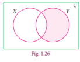
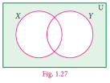
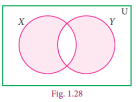
Answer i) Y–X (ii) (X∪ Y)’h(iii) (X -Y) ∪(Y- X)
7. Let A and B be two overlapping sets and the universal set be U. Draw appropriate Venn diagram for each of the following,
(i) A∪B (ii) A∩B (iii) (A∩B)′ (iv) (B–A)′ (v) A′∪B′ (vi) A′∩B′
(vii) What do you observe from the Venn diagram (iii) and (v)?
(i) A dash (ii) B dash (iii) A dash union B dash (iv) A dash intersecton B dash (v) (A union B)whole dash (vi) (A intersecton B whole dash ) ′ (vii) (A dash of dash )(viii) (B Dash of dash
Answer


(vii) (A∩B) ′ = A′∪B′
It is an interesting investigation to find out if operations among sets (like union, intersection, etc) follow mathematical properties such as Commutativity, Associativity, etc., We have seen numbers having many of these properties; whether sets also possess these, is to be explored.
We first take up the properties of set operations on union and intersection.
In set language, commutative situations can be seen when we perform operations. For example, we can look into the Union (and Intersection) of sets to find out if the operation is commutative.
Let A = {2,3,8,10} and B = {1,3,10,13} be two sets.
Then A∪B = {1,2,3,8,10,13} and B∪A = {1,2,3,8,10,13}
From the above, we see that A∪ B =B∪ A This is called Commutative property of union of sets.
Now, A∩B={3,10} and B∩ A ={3,10} and. Then, we see that A∩ B =B∩ A.
A is equal to set bracket of 2, 3, 8, 10 and B is equal to set bracket of 1, 3, 10, 13 be two sets
Then A union of B is equal to set bracket of 1, 2, 3, 8, 10, 13 and B union A is equal to set bracket of 1, 2, 3, 8, 10, 13 }
From the above, we see that A union B is equal to B union A
This is called Commutative property of union of sets.
Now, A intersection B is equal to set bracket of 3, 10 and B intersection A is equal to set bracket of 3, 10}
and. Then, we see that A intersection B is equal to B intersection A .
This is called Commutative property of intersection of sets.
Commutative property: For any two sets A and B
(i) A∪ B =B∪ A
(ii) A∩ B =B∩ A
Romen letter 1 (i) A union B is equal to B union A
Romen letter 2 (ii) A intersection B is equal to B intersection A
Example 1.19 A = { b,e,f, g} B = { c,e,g,h} A is equal to set bracket of b, e, f ,g} மற்றும் B is equal to set bracket of c, e, g, h}
(i)A ∪B={ b,c,e,f, g,h} ---------------1 A union B is equal to set bracket of { b, c, e, f, g, h
B∪ A={ b,c,e,f, g,h}-------------------2 B union A is equal to set bracket of { b, c , e , f, g, h}
From (1) and (2) we have A ∪B=B ∪A. A union B is equal to B union A.
It is verified that union of sets is commutative.
(ii) A∩B={e,g}... (3) A intersection B is equal to set bracket of { e, g
B∩A={e,g}... (4) B intersection A is equal to set bracket of{ e, g
From (3) and (4) we get,
It is verified that intersection of sets is commutative.
NOTE
Recall that subtraction on numbers is not commutative. Is set difference commutative? We expect that the set difference is not commutative as well. For instance, consider A={a,b,c}B={ b,c,d}. A difference B= set bracket { a} B- difference A= set bracket { d} ; we see that A difference B is not equal to B minus A
A is equal to set bracket of a,b,c, B is equal to set bracket of b,c,d if A minus B is equal to set bracket of a}, B minus A is equal to set bracket of d}; from we get A minus B not equal to B minus A
Now, we perform operations on union and intersection for three sets.
Let A ={-1,0,1,2},B ={-3,0,2,3}and C = {0,1,3,4} be three sets.
Now, B∪ C = {-3,0,1,2,3,4 }
A∪ (B∪ C) = {-1,0,2}∪ {-3,0,1,2,3,4 }
= {-3,-1,0,1,2,3,4}... (1)
Then, A∪ B = {-3,-1,0,1,2,3 }
(A∪ B)∪C= {-3,-1,0,1,2,3}∪ {0,1,3,4}
= {-1,-1,0,1,2,3,4}... (2)
From (1) and (2), A ∪(B∪C)=(A∪ B) ∪C.
This is associative property of union among sets A, B, and C.
Now, B∩ C = {0,3 }
(A∩ B) ∩C={ -1,0,1,2}∩{0,3}
= { 0} ... (3)
Then, A∩ B = {0,2}
( A∩ B)∩C= {0,2}∩ {0,1 ,3 4} 020134
= { 0} ... (4)
From (3) and (4),A ∩(B∩ C)=(A ∩B)∩C .
This is associative property of intersection among sets A, B and C.
Associative property: For any three sets A, B and C
(i) A ∪(B∪C)=(A∪ B) ∪C
(ii)A ∩(B∩ C)=(A ∩B)∩C
A is equal to set bracket of minus {1, 0, 12 },B is equal to set bracket of minus 3,0,2,3} and C is equal to set bracket of 0, 1,3,4} be three sets.
Now B union C is equal to set bracket of minus 3,0,1,2,3,4 }
A union (B union C) is equal to set bracket of minus 1,0,2}∪ set bracket of minus 3,0,1,2,3,4 }
is equal to set bracket of minus 3,minus 1,0,1,2,3,4}... (1)
let A union B is equal to set bracket of minus 3,minus 1,0,1,2,3 }
(A union B) union C is equal to set bracket of minus 3,minus 1,0,1,2,3}∪ set bracket of 0,1,3,4}
is equal to set bracket of minus 3,minus 1,0,1,2,3,4}... (2)
From 1 and 2 we get A union of (B union C) is equal to (A union B) union of C.
This is associative property of union
Le B intersection C is equal to set bracket of 0,3 }
(A intersection B) intersection C is equal to set bracket of minus 1,0,1,2} intersecton {0,3}
is equal to set bracket of 0} . .. (3)
After A intersection B is equal to set bracket of 0,2}
(A intersection B) of intersection C is equal to set bracket of 0,2} intersection set bracket of 0,1, 3 4} 020134
is equal to set bracket of 0} . .. (4)
(3) and (4) we get A intersection of (B intersection C) is equal to (A intersection B) of intersection C.
This is associative property of intersection among sets A, B and C.,
Box news
Associative property:
Associative property: For any three sets A, B and C
1. A union of (B union C) is equal to (A union B) of union C
2. A intersection of (B intersection C) is equal to (A intersection B) of intersection C
Example 1.20
If A= {-1/2, 0, 1/4, 3/4, 2} , B = {0, ¼, ¾, 2, 5/2 } and C = {− ½, ¼, 1, 2, 5/2 } then verify A ∩(B∩ C) =(A ∩B)∩C
Solution
Now, ( B∩ C)={ 1/4, 2, 5/2}
A∩ ( B∩ C) = { ¼,2} ... (1)
Then, A ∩B = {0, ¼, ¾, 2}
(A ∩B) ∩ C= { ¼,2} (2)
From (1) and (2), it is verified that A ∩ (B∩ C) = (A ∩B )∩ C
NOTE
The set difference in general is not associative that is,
(A–B)–C≠A–(B–C).
But, if the sets A, B and C are mutually disjoint then the set difference is associative
that is, (A–B)–C=A–(B–C).
Exercise 1.4
1.If P = {1,2,5,7,9} Q = {2,3,5,9,11} R = {3,4,5,7,9} S = {2,3,4,5,8} P is equal to set bracket of 12,5,7,9}, Q is equal to set bracket of 2,3,5,9,11}, R is equal to set bracket of 3,4,5,7,9} andS is equal to set bracket of 2,3,4,5,8}
(i) (P∪ Q) ∪R
(ii)(P ∩Q)∩ S
(iii)(Q ∩S)∩ R
(i) (P union Q) of union R
(ii) (P intersection Q) of intersection S
(iii) (Q intersection S) of intersection R
Answer 1. (i) {1,2,3,4,5,7,9,11} (ii) {2,5} (iii) {3,5}
2.Test for the commutative property of union and intersection of the sets
P = { x : x is a real number between 2 and 7} and
Q = { x : x is a rational number between 2 and 7}.
3.If A = {p,q,r,s}, B = {m,n,q,s,t} and C = {m,n,p,q,s}, A is equal to set bracket of p,q,r,s}, B is equal to set bracket of m,n,q,s,t} and C is equal to set bracket of m,n,p,q,s}, then verify the associative property of union of sets.
4.Verify the associative property of intersection of sets for
A ={-11,√2,√5,7},B={√3,√5,6,13} and C={√2,√3√5,9} A is equal to set bracket of minus 11,root 2,root 5,7},B is equal to set bracket of root 3,root 5,6,13} and C is equal to set bracket of root 2,root 3root 5,9}
5.If A={x:x=2n,n∊W and n<4},and B={x:x=2n,n∊N and n≤4}and C{0,1,2,5,6}, A is equal to set bracket of x:x is equal to 2 power n,n belongs to W and n less than or equal to 4},B is equal to set bracket of x such that x is equal to 2n ,n belongs to N and n less than or equal to 4} and C{ is set bracket of 0,1,2,5,6},then verify the associative property of intersection of sets.
In lower classes, we have studied distributive property of multiplication over addition on numbers. That is,ax(b+c)=(axb)+(axc) In the same way we can define distributive properties on sets.
Distributive property:
For any three sets A, B and C
(i) (A∩ B) ∪ C-(A∩ B) ∪(A∩ C) [Intersection over union]
(ii) A∪( B∩ C)=(A∪ B) ∩(A∪ C) [Union over intersection]
Example 1.21
If A = {0,2,4,6,8},B={x : x is a prime number and x < 11} and C = {x : x ∊N and 5 ≤x<9 } then verify A∪( B∩ C)=(A∪ B) ∩(A∪ C).
A is equal to set bracket of 0,2,4,6,8 camma B is equal to set bracket of x such that 3 Is a prime number and x less than 11} and C is equal to set bracket of x such that x belongs to N and 5 less than x less than 9 then, A union of open B intersection C close bracket is equal to open A union B close bracket intersection open A union C close bracket
Solution
Given A = {0,2,4,6,8}, B = {2,3,5,7} and C = {5,6,7,8}
A is equal to set bracket of 0 , 2 ,4 ,6, 8 comma B is equal to set bracket of 2,3,5,7 comma C is equal to set bracket of 5,6,7, 8
First, we find B∩ C ={ 5,7}, A∪( B∩ C) = { 0,2,4,5,6,7,8}... (1)
Next, A∪ B {0,2,3,4,5,6,7,8}, A∪ C = {0,2,4,56,7,8}
Then, (A∪ B) ∩(A∪ C)= {0,2,4,5,67,8}... (2)
From (1) and (2), it is verified that A∪( B∩ C)= (A∪ B) ∩(A∪ C) A union (B intersection C) is equal to (A union B) intersection (A union C)
Example 1.22 Verify A∩ (B∪ C)=(A∩ B)∪(A∩ C) using Venn diagrams.
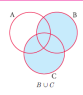
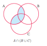
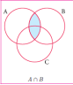
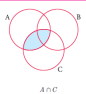
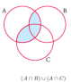
Augustus De Morgan (1806 – 1871) was a British mathematician. He was born on 27th June 1806 in Madurai, Tamilnadu, India. His father was posted in India by the East India Company. When he was seven months old, his family moved back to England. De Morgan was educated at Trinity College, Cambridge, London. He formulated laws for set difference and complementation. These are called De Morgan’s laws.
These laws relate the set operations union, intersection and set difference.
Let us consider three sets A, B and C as A = {-5,-2,1,3} B = {-3,-2,0,3,5} and C = {-2,-1,0,4,5}
Now,B∪C= {-3,-2,-1,0,3,4,5}
A is equal to set bracket of minus 5 comma minus 2 comma1 comma 3, B is equal to set bracket of minus 3,minus 2 0,3,5 and C is equal to set bracket of minus 2 minus 1,0,4, 5
A-(B∪C)=(-5,1) ------- (1)
Then, A-B={-5,1}and A-C={-5,1,3}
(A-B) ∪( A-C)={-5,1,3}... (2)
(A-B) ∩ ( A-C)={--5,1}... (3)
From (1) and (2), we see that
A-(B∪C)≠(A-B) ∪ (A-C)
But note that from (1) and (3), we see that
A-(B∪C)=( A-B) ∩ (A-C)
Now, (B∩C)={-2,0,5}
A-(B∩C)={-5,1,3}... (4)
From (3) and (4) we see that
A-(B∩C)≠(A-B) ∩ (A-C) A minus open bracket B intersection C close not equal to open bracket A minus B close intersection open bracket A minus C close bracket
But note that from (2) and (4), we get A-(B∩C)= (A-B) ∪ (A-C) A minus bracket open B intersection c is equal to bracket open A minus B close bracket union open bracket A minus C close bracket
De Morgan’s laws for set difference : For any three sets A, B and C
(i) A-(B∪C)=( A-B) ∩ (A-C)
(ii) (ii) A-(B∩C)= (A-B) ∪ (A-C)
Romen letter 1 A minus (B union C) is equal to (A minus B) intersection (A minus C)
Romen letter 2 A minus of (B intersection C) is equal to (A minus B) union (A minus C)
Thinking corner
(A-B ) ∪(A-C) ∪(A∩B)=--------------
A difference of B Union A difference of C Union of A intersection \\
Example 1.23 Verify A difference of (B union C) is equal to (A difference B) intersection (A difference of C) using Venn diagrams.
Solution
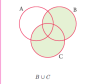
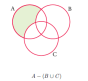
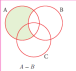
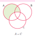
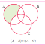
Figure 1 and 2 A minus open B union C bracket close is equal to open A minus B close bracket intersection open A minus C close bracket
Example 1.24 If P = {x : x∊W and 0 < x < 10}, Q = {x : x = 2n+1, n∊W and n<5} and R = {2,3,5,7,11,13}then verify P- (Q∩R)=(P-Q) ∪ (P-R)
P is equal to set bracket of x such that x belongs to W and 0 less than x less than 10 comma Q is equal to set bracket of x such that x is equal to 2n plus 1, n belongs to W and n less than 5 and R is equal to set bracket of 2,3,5,7,11,13 if ,P minus open bracket Q intersection R close bracket is equal to open P minus Q close union open P minus R close bracket
Solution
The roster form of sets P, Q and R are P= {1,2,3,4,5,6,7,8,9}Q= {1,3,5,7,9}
and R = { 2,3,5,7,11,13}
First, we find (Q∩R) = {3,5,7 }
Then, P-( Q∩R) ={1,2,4,6,8,9}... (1)
P is equal to set bracket of 1,2,3,4,5,6,7,8,9 comma Q is equal to set bracket of 1,3,5,7,9 and R is equal to set bracket of 2,3,5,7,11,13
Q intersection R is equal to set bracket of 3,5,7
P minus open Q intersection R close bracket is equal to set bracket of 1,2,4,6,8,9}. .. (1)
Next, P–Q ={2,4,6,8 P minus Q is equal to set bracket of 2,4,6,8 and
P–R ={1,4,6,8,9} P minus Q is equal to set bracket of 2,4,6,8 P minus R is equal to set bracket of 1,4,6,8,9
and so, (P-Q) ∪ (P-R)={ 1,24,6,8,9}... (2) P minus Q union P minus R is equal to set bracket of 1,24,6,8,9
Hence from (1) and (2), it is verified that P-( Q∩R)=( P-Q) ∪ (P-R) , P minus open Q intersection R close bracket is equal to open P minus Q close bracket union open P minus R)
x equal to 2n plus 1
n equal to 0 x is equal to 2 of zero plus one is equal to o plus 1 equal to 1
n equal to 1 x is equal to 2 of 1 plus one is equal to 2 plus 1 equal to 3
n equal to 2 x is equal to 2 of 2 zero plus one is equal to 4 plus 1 equal to 5
n equal to 3 x is equal to 2 of 3zero plus one is equal to 6 plus 1 equal to 7
n equal to 4 x is equal to 2 of 4 zero plus one is equal to 8 plus 1 equal to 9
Therefore x takes values 1, 3, 5, 7 and 9
These laws relate the set operations on union, intersection and complementation.
Let us consider universal set U={0,1,2,3,4,5,6}, A={1,3,5} and B={0,3,4,5}.
Now, AU B = { 0,1,3,4,5}
Then, (AU B)’ = {2,6}.....(1)
Next, A’ = {0,2,4 ,6} and B’ = {1,2,6}
Then, A’UB’= {2,6}.....(2)
From (1) and (2), we get (AU B)’=A’∩B’
Also, A∩ B = {3,5}
(A∩ B)’ = {0,1,2,4,6}.....(3)
A’ = {0,2,4 ,6} and B’ = {1,2,6}
AU’B’ = {0,1,2,4,6}.....(4)
From (3) and (4), we get (A∩ B)’=A’UB’
U is equal to set bracket of 0, 1, 2, 3, 4, 5, 5,, A is equal to set bracket of 1, 3, 5 and B is equal to 0.3,4,5
A union B is equal to set bracket of 0 1 3 4 5
A union B whole dash is equal to st bracket of 2, 6 equation 1
next , A dash is equal to set bracket of 0,2,4,6 and B dash is equal to set bracket of1,2,6 equation 2
From 1 and 2 A union B whole dash is equal to A dash intersection b dash
A intersection B is equal to set bracket of 3, 5
A intersection B whole dash is equal to set bracket of 0,1,2,4,6 equation 3
A dash is equal to set bracket of 0,2,4,6 and B dash is equal to set bracket of 1,2,6
A dash union B dash is equal to 0,1,2,4,6 equation 4
equation 3 and 4 we get A intersection B whole dash is equal to A dash union B dash
Thinking Corner
A difference of B=A dash intersection B dash
Thinking Corner
(A-B) whole bracket union B-A’ dash whole bracket
De Morgan’s laws for complementation: Let ‘U’ be the universal set containing finite sets A and B. Then (i) (AU B)’=A’∩B’
(ii) A intersection B) whole bracket dash =A dash union B dash
Example 1.25 Verify (AUB)’=A’∩B’ using Venn diagrams. A union B whole dash is equal to Acomplement of A intersection complement Of B
Solution
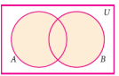
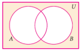
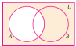
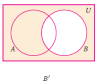
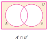
From 1 and 2 above it is verified open bracket A union B close bracket is equal to A; complement intersection B complement
Example 1.26 If U ={x:x∊Z,-2≤x≤10},
A={x:x=2p+1,p∊Z ,-1≤p≤4},B={x:x=3q+1,q∊Z ,-1≤q≤4}
U is equal to set bracket of x such that x belongs to Z,minus 2l less than or equal to x less than or equal to zero },
A is equal to set bracket of x such that x is equal to 2 plus 1,p belongs to Z, minus 1 less than or equal to 2p less than or equal to 4},B is equal to set bracket of x such that x is equal to 3q plus 1,q belongs to Z, minus 1 less than or equal to q less thanb or equal to 4}
verify De Morgan’s laws for complementation.
Solutions
Given U = {-2,-1,0,1,2,3,4,5,6,7,8,9,10}
A = {-11,3,5,7,9}and B = {-2,1,4,7,10}
U is equal to set bracket of minus 2, minus 1, 0, 1, 2, 3, 4, 5, 6, 7, 8, 9, 10}
A is equal to set bracket of minus 11 , 3, 5, 7, 9 } and B is equal to set bracket of minus 21, 4, 7, 10}
Law (i) (A∪B)’ = A’∩B’
Now, A∪B = { -2,-1,1,3,4,5,7,9,10}
(A∪B)’= {0,26,8}------ (1)
Thinking Corner
A∪(A∪B)’=
Then, A’= {-2,0,2,4,6,8,10}and B’= {-1,0,2,3,5,6,8,9}
A’∩B’= {0,2,6,8}..... (2)
From (1) and (2), it is verified that (A∪B)’ = A’∩B
From (1) and (2), it is verified that’(A union B) whole complement ’ is equal to A’ complement intersection B complement
Law (ii) (A∪ B)’=A’∪B’
Now, A∩ B = {1,7}
(A∩ B )’ = {-2,-1,0,2,3,4,5,6,8,9,10}..... (3)
Then, A’∪B’ = {-2,-1,0,2,3,4,5,6,8,9,10}..... (4)
From (3) and (4), it is verified that (A∪ B)’=A’∪B’
equation (3) and (4) it is verified that (A intersection B) is equal to A complement union B complement
Exercise 1.5
A-B
B-C (iii) AB(iv) A’∪B’ (v) (B∪ C)’
A-(B∪ C) (vii) A-(B∩ C)
Romen letter 1 (i) A minus B Romen letter 2 (ii) B minus C Romen letter 3 (iii) AB Romen letter 4 (iv) A’∪B’ Romen letter 5 (v) (B∪ C) ’ Romen letter 6 (vi) A minus (B ∪ C) Romen letter 7 (vii) A minus (B intersection C)
Answer 1. (i) {3,4,6} (ii) {-1,5,7} (iii) {-3,0,1,2,3,4,5,6,7,8}
(iv) {-3,0,1,2} (v){ 1,2,4,6} (vi) {4,6} (vii) {-1,3,4,6
2.If K={ a,b,d,e,f}, L={ b,c,d,g}and M={ a,b,c,d,h}, then find the following:
K is equal to set bracket of a, b , c ,d ,e, f}, L is equal to set bracket of b, c, d, g ) மற்றும் M is equal to set bracket of a , b ,c , d, h} then find the followin(i) K 1.∪ (L∩ M) K union of (L intersection M)
2. K∩( L ∪M) K intersection (L union M)
3. (K∪ L) ∩ (K∪ M) (K union L) intersection (K union M)
4. (K∩L) ∪ (K∩ M) ( K intersection L) union (K intersection M
and verify distributive laws.
Answer 2. (i) {a,b,c,d,e,f } (ii) {a,b,d } (iii) { a,b,c,d,e,f } (iv) {a, b, d }
3. If A={ x: x∊Z, -2<x≤4},B={x : x ∈W, x ≤ 5}, C = {-4,-1,0,2,34} then verify
A∪ (B∩ C)=(A∪ B) ∩ (A∪ C)
A is equal to set bracket of x such that x belongs to Z, minus 2 less than x less than or equal to 4}, B is equal to set bracket of x such that x belongs to W, x less than or equal to 5}, and C is equal to set bracket of minus 4,minus 1,0,2,34}
then verify A union (B intersection C) is equal to (A union B) intersection (A union C) .
4.Verify A∩ (B∩ C)=(A∪ B) ∩ (A∪ C) using Venn diagrams.
Verify A intersection (B intersection C) is equal to (A union B) intersection (A union C) using Venn diagrams.
5.If A = { b,c,e,g,h} B = {a,c,d,g,i} and C = {a,d,eg,h} then show that A- (B∩ C)=(A- B) ∩ (A-C)
A is equal to set bracket of b , c , e , g , h B is equal to set bracket of a, c, d, g, I and C is equal to set bracket of a , d ,e ,g ,h} then show that, A minus of (B intersection C) is equal to (A minus B) intersection (A minus C)
6.If A = {x : x = 6n, n∊W and n<6}, B = {x : x = 2n, n∊N and 2<n≤9} and C = {x : x = 3n, n∊N and 4≤n<10}, then show that A-(B∩ C)=(A-B) ∪ (A-C)
7.If A = {–2,0,1,3,5}, B = {–1,0,2,5,6} and C = {–1,2,5,6,7}, A is equal to set bracket of minus 2, 0, 1, 3, 5 comma B is equal to set bracket of minus 1, 0, 2, 5, 6 comma and C is equal to set bracket of minus 1, 2, 5, 6, 7 if show that A minus (B union C) is equal to (A minus B) intersection (A minus C)then show that A- (B∪ C)=(A- B) ∩ (A-C)
8.If A = {y : y = (a + 1)/ 2 , a∊W and a ≤ 5}, B = {y : y =(2n-1)/2, n∊W and n < 5} and C ={-1,-1/2,1,3/2,2}, then show that A- (B∪ C)=(A- B) ∩ (A-C).
A is equal to set bracket of y: such that y is equal to (a plus 1) by 2,
a belongs to W and a less than or equal to 5} , B is equal to set bracket of y: such that y is equal to ( 2n minus 1) by 2, n belongs to W and n less than 5} and C is equal to set bracket of minus 1,minus 1 by 2, 1 ,3 by 2,2} then show that, A minus (B union C) is equal to (A minus B) intersection (A minus C)
9.Verify A- (B∩ C)=(A- B) ∪ (A-C) A minus of (B intersection C) is equal to (A minus B) union (A minus C) using Venn diagrams.
10.If U = {4,7,8,10,11,12,15,16}, A={7,8,11,12} and B = {4,8,12,15} U is equal to set bracket of 4, 7, 8, 10, 11, 12, 15, 16 comma A is equal to set bracket of 7, 8, 11, 12 and B is equal to set bracket of 4, 8, 12, 15 then verify De Morgan’s Laws for complementation.
11.Verify (A∩ B)’=A’UB’ (A intersection B) whole dash is equal to A dash union B’ dash using Venn diagrams.
We have learnt about the union, intersection, complement and difference of sets.
Now we will go through some practical problems on sets related to everyday life.
Results :
If A and B are two finite sets, then
(i) n(A∪B) = n(A)+n(B)– n(A∩B)
(ii) n(A–B) = n(A) – n(A∩B)
(iii) n(B–A) = n(B)– n(A∩B)
(iv)n(A′) = n(U) – n(A)
(i) n of (A union B) is equal to n of A plus n of (B) minus n of (A intersection B)
(ii) n of (A minus B) is equal to n of A minus n of (A intersection B)
(iii) n of (B minus A) is equal to n of (B) minus n of (A intersection B)
(iv) n of (A dash) is equal to n of (U) minus n of A
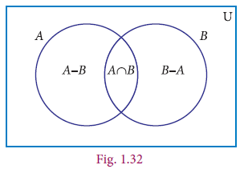
Note
A and B are disjoint sets then, n of (A union B) is equal to n of A plus n of (B)
Example 1.27
From the Venn diagram, verify that n(A∪B) = n(A)+n(B) – n(A∩B)
Solution From the Venn diagram,
A = {5, 10, 15, 20}
B = {10, 20, 30, 40, 50,}
Then A∪B = {5, 10, 15, 20, 30, 40, 50}
A∩B = {10, 20}
n(A) = 4, n(B) = 5, n(A∪B) = 7, n(A∩B) = 2
n(A∪B) = 7 (1)
n(A)+n(B)–n(A∩B) = 4+5–2
=7 (2)
From (1) and (2), n(A∪B) = n(A)+n(B)–n(A∩B).
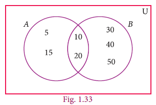
A is equal to set bracket of 5, 10, 15, 20
B is equal to set bracket of 10, 20, 30, 40, 50,
Let A union B is equal to set bracket of 5, 10, 15, 20, 30, 40, 50}
A intersection B is equal to set bracket of 10, 20 such that
n of A is equal to 4 comma n of (B) s equal to 5, of (A union B) is equal to 7, n of (A intersection B) is equal to 2
n of (A union B) is equal to 7 equation 1
n of A plus n of (B) minus n of A intersection B is equal to 4 plus 5 minus 2 is equal to 7 equation 2
equation (1) and (2) we get it is proved that n of (A union B) is equal to n of A plus n of (B) minus n of (A intersection B)
Example 1.28
If n(A) = 36, n(B) = 10, n(A∪B)=40, and n(A′)=27 find n(U) and n(A∩B).
Solution n(A) = 36, n(B) =10, n(A∪B)=40, n(A′)=27
(i) n(U) = n(A)+n(A′) = 36+27 = 63
(ii) n(A∩B) = n(A)+n(B)–n(A∪B) = 36+10-40 = 46-40 = 6
(A) is equal to 36, (B) is equal to 10, n of (A intersection B) is equal to 40, n of (A dash ') is equal to 27
(i) n of (U) is equal to n of A plus n of A is equal to 36 plus 27 is equal to 63
(ii) n of (A intersection B) is equal to n of A plus n of (B) minus n of (A union B) is equal to 36 plus 10 minus 40 is equal to 46 minus 40 is equal to 6
Activity-4
Fill in the blanks with appropriate cardinal numbers.
S.No. |
n(A) n of A |
n(B) N of (B) |
n(A∪B) n of A union B |
n(A∩B) n of (A intersection B) |
n(A–B) n of (A minus B) |
n(B–A) n of (B minus A) |
1 |
30 |
46 |
65 |
|
|
|
2 |
20 |
|
55 |
10 |
|
|
3 |
50 |
65 |
|
25 |
|
|
4 |
50 |
|
70 |
|
|
|
Example 1.29 Let A={b, d, e, g, h} and B = {a, e, c, h}. Verify that n(A–B) = n(A)–n(A∩B).
A is equal to set bracket of b, d, e ,g h and B is equal to set bracket of a, e, c, h then, verify that n of (A minus B) is equal to n of A minus n of A intersection B
Solution
A = {b, d, e, g, h}, B = {a, e, c, h}
A – B = {b, d, g}
n(A–B) = 3 ... (1)
A ∩ B = {e, h}
n(A ∩ B) = 2 , n(A) = 5
n(A) – n(A∩B) = 5-2
= 3 ... (2)
Form (1) and (2) we get n(A–B) = n(A)–n(A∩B).
A is equal to set bracket of b, d, e, g .h camma
B is equal to set bracket of a, e, c, h
A minus B is equal to set bracket of b, d, g
n of (A minus B ) is equal to 3 equation 1
A intersection B is equal to set bracket of e, h
n of (A intersection B) is equal to 2, n of A is equal to 5
n of A minus n of (A intersection B) is equal to 5 minus 2 is equal to 3 equation 2
equation (1) and (2) we get
it is proved that n of (A minus B) is equal to n of A minus n of (A intersection B)
Example 1.30
In a school, all students play either Hockey or Cricket or both. 300 play Hockey, 250 play Cricket and 110 play both games. Find
(i) the number of students who play only Hockey.
(ii) the number of students who play only Cricket.
(iii) the total number of students in the school.
Solution:
Let H be the set of all students who play Hockey and C be the set of all students who play Cricket.
Then n(H) = 300, n of (H) is equal to 300, n of (C ) is equal to 250 n(C) = 250 and n(H ∩ C) = 110 n of (H intersection C) is equal to 110
Using Venn diagram,
From the Venn diagram,
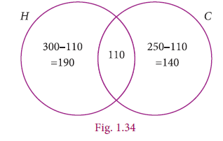
(ii) The number of students who play only Cricket Equal 140
(iii) The total number of students in the school = 190+110+140 =440 is equal to 190 plus 110 plus 140 is equal to 440
Aliter
(i) The number of students who play only Hockey
n(H–C ) = n(H) – n(H∩C)
= 300 –110 = 190
n o f (H minus C) is equal to n of (H) minus n of (H intersection C)
is equal to 300 minus 110 is equal to 190
(ii) The number of students who play only Cricket
n(C–H ) = n(C) – n(H∩C)
n of (C minus H) is equal to n of (C ) minus n( of H intersection C)
is equal to 250 minus 110 is equal to 140
= 250 – 110 = 140
(iii) The total number of students in the school
n(HUC) = n(H) + n(C) – n(H∩C)
= 300+250 – 110 = 440
(H union G) is equal to n of (H) plus n of (C ) minus n of (H intersection c)
is equal to 300 plus 250 minus 110 is equal to 440
Example 1.31
In a party of 60 people, 35 had Vanilla ice cream, 30 had Chocolate ice cream. All the people had at least one ice cream. Then how many of them had,
(i) both Vanilla and Chocolate ice cream. ,
(ii) only Vanilla ice cream.
Solution:
Let V be the set of people who had Vanilla ice cream and C be the set of people who had Chocolate ice cream.
Then n(V) = 35, n(C) = 30, n(VC) = 60,
Let x be the number of people who had both ice creams.
From the Venn diagram
35 – x + x +30 – x = 60
65 – x = 60
x= 5
35 minus X plus X plus 30 minus x is equal to 60
65 minus X is equal to 60
x is equal to 5
Hence 5 people had both ice creams.
(i) Number of people who had only Vanilla ice cream is equal to 35 difference of x
= 35– 5 = 30 35 minus 5 is equal to 30
(ii) Number of people who had only Chocolate ice cream is equal to 30 difference of x
Equal to 30 minus 5 is equal to 25
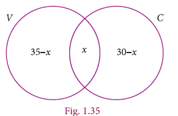
We have learnt to solve problems involving two sets using the formula n(A∪ B)=n(A)+n(B)-n(A∩ B)
n of A union B is equal to n of A plus n of B minus n of ( A intersection B)
Suppose we have three sets; we can apply this formula to get a similar formula for three sets.
For any three finite sets A, B and C
n(A∪ B∪ C)= n(A)+n(B)+n(C)-n(A∩B)-n(B∩C)-n(A∩C)+n(A∩B∩C)
n of bracket open (A union B union C) close bracket is equal to n of (A) plus n of (B) plus n of (C ) minus n of bracket open (A intersection B) bracket close minus n of (B intersection C) minus n of bracket open (A intersection C) close bracket plus n of bracket open (A intersection B intersection C) bracket close
Note
Let us consider the following results which will be useful in solving problems using Venn diagram. Let three sets A, B and C represent the students. From the Venn diagram,
Number of students in only set A =a , only set B= b, only set C= c .
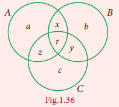
Example 1.32 In a college, 240 students play cricket, 180 students play football, 164 students play hockey, 42 play both cricket and football, 38 play both football and hockey, 40 play both cricket and hockey and 16 play all the three games. If each student participate in at least one game, then find (i) the number of students in the college (ii) the number of students who play only one game.
Solution Let C, F and H represent sets of students who play Cricket, Football and Hockey respectively
Then, n(C) , = 240 ,n(F) , =180 n(H) , = 164 n(C∩ F) = 42 n(F∩ H) = 38 n(C∩H) = 40
N(C∩ F∩ H)= 16
n of (C) , is equal to 240, n of (F) , is equal to 180 not (H) , is equal to 164 n of (C intersection F) is equal to 42
n of (F intersection H) is equal to 38 n of C intersection H) is equal to 40, n of (C intersection F intersection H) is equal to 16
Let us represent the given data in a Venn diagram.
(i) The number of students in the college
= 174+26+116+22+102+24+16 = 480
n of (C) , is equal to 240, n of (F) , is equal to 180 not (H) , is equal to 164 n of (C intersection F) is equal to 42
n of (F intersection H) is equal to 38 n of C intersection H) is equal to 40,nof (C intersection F intersection H) is equal to 16
(ii) The number of students who play only one game
= 174+116+102 = 392
is equal to 174 plus 116 plus 102 is equal to 392
![In given Venn diagram 1.37 three circles representing Cricket,Foot ball and Hockey are drawn by intersecting each other.In circle C 240 minus within bracket 26 plus16 plus 2
4 is equal to 174 is given. In circle F 180 minus within bracket 26 plus 16 plus 22 is equal to 116 is given.In circle H 164 minus within bracket 24 plus 16 plus 22 is equal to 102 is given.In common intersecting part C and F 26 is given. In common intersecting part between F and H 22 is given.In common intersecting part between H and C 24 is given.In common intersecting part between C,F and H 16 is given.](images/image-18.png)
Example 1.33 In a residential area with 600 families 35 owned scooter, 13 owned car, 14 owned bicycle, 120 families owned scooter and car, 86 owned car and bicycle while 90 families owned scooter and bicycle. If 2 15 of families owned all the three types of vehicles, then find (i) the number of families owned at least two types of vehicles. (ii) the number of families owned no vehicle.
Solution Let S, C and B represent sets of families who owned Scooter, Car and Bicycle respectively.
Given, n(U)= 600 n(S)= 3/5X 600= 360
n(C)= 1/3X 600= 200 n(B)= 1/4X 600= 150
n(S∩C∩B)=2/15X600=80
n of (U) 600;
n of (S) is equal to 3 by 5 ,multiply 600 is equal to 360
n of (C) is equal to 1 by 3 multiply 600 is equal to 200
n of (B) is equal to 1 by 4 multiply 600 is equal to 150
n of (S intersection C intersection B) is equal to 2 by 15 multiply 600 is equal to 80
From Venn diagram,
(i) The number of families owned at least two types of vehicles = 40+6+10+80 = 136
(ii) The number of families owned no vehicle
= 600 – (owned at least one vehicle)
= 600-(230+ 40 +74+ 6 +54 +10 +80) = 600-494
= 106
is equal to 600 minus in bracket 230 plus 0 plus 74 plus 6 plus 54 plus 10 plus 80 close brackets
is equal to 600 minus 191 is equal to 106
![In the given Venn diagram 1.38 three circles representing Scooter,Car and bicycle are drawn by intersecting each other.In circle S 360 minus inside the bracket 40 plus 80 plus 10 is equal to 230 is given. In circle C 200 minus within bracket 40 plus 80 plus 6 is equal to 74 is given. In circle B 150 minus within bracket 10 plus 80 plus 6 is equal to 54 is given.In the common intersecting part between circles S and C 40 is given.In the common intersecting part between circles C and B 6 is given.In the common intersecting part between circles B and S 10 is given.In the common intersecting part between circles S,C and B 80 is given.](images/image-19.png)
Example 1.34
In a group of 100 students, 85 students speak Tamil, 40 students speak English, 20 students speak French, 32 speak Tamil and English, 13 speak English and French and 10 speak Tamil and French. If each student knows at least any one of these languages, then find the number of students who speak all these three languages.
Solution Let A, B and C represent sets of students who speak Tamil, English and French
respectively.
Given, n(A U B U C)=100, n(A)=85, n(B)=40, n(C)=20
n(A∩B)=32, n(B∩C)=13, n(A∩C)=10
We know that n(A∪ B∪ C)= n(A)+n(B)+n(C)-n(A∩B)-n(B∩C)-n(A∩C)+n(A∩B∩C)
100 = 85+40+20-32-13-10)-n(A∩B∩C)
Then,
n(A∩B∩C)=100-90=10
Therefore, 10 students speak all the three languages.
n of set bracket of A union B union C is equal to n of A plus n of B plus n of C minus n(A intersection B) minus n set bracket of B intersection C minus n set bracket of A intersection C plus n set bracket of A intersection B intersection C
100 is equal to 85 plus 40 plus 20 minus 32 minus 13 minus 10) minus n set bracket of A intersection B intersection C
Then,
N A intersection B intersection C) is equal to 100minus 90 is equal to 10
Therefore, 10 students speak all the three languages.
Example 1.35 A survey was conducted among 200 magazine subscribers of three different magazines A, B and C. It was found that 75 members do not subscribe magazine A, 100 members do not subscribe magazine B, 50 members do not subscribe magazine C and 125 subscribe at least two of the three magazines. Find
Romen letter 1 Number of members who subscribe exactly two magazines.
Romen letter 2 Number of members who subscribe only one magazine.
Solution
Total number of subscribers = 200
Magazine |
Do not subscribe |
Subscribe |
A |
75 |
125 |
B |
100 |
100 |
C |
50 |
150 |
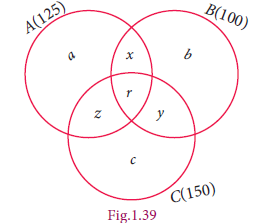
From the Venn diagram,
Number of members who subscribe only one magazine =a+b+ c
Number of members who subscribe exactly two magazines =x+y+z
and 125 members subscribe at least two magazines.
That is, x+ y+ z= 125... (1)
Now, n(A∪B∪C) =200 n(A) = 125, n(B) = 100, n(C) = 150, n(A∩B) = x + r
n(B∩C) = y + r, n(A∩C) = z + r, n(A∩B∩C) = r
We know that,
n(A∩B∩C) = n(A)+ n(B)+ n(C)– n(A∩B) – n(B∩C)– n(A∩C)+ n(A∩B∩C)
200 = 125+100+150–x–r–y–r–z–r+r
= 375–(x+y+z+r)–r [x+y+z+r=125]
= 375–125–r
200 = 250–r
r=50
From (1) x+y+z+r +50=125
We get, x+y+z = 75
n of (A union B union C) is equal to 200, n of A is equal to 125, n of (B) is equal to 100, n of C is equal to 150,
n of (A intersection B) is equal to x plus r
n of (B intersection C) is equal to y plus r, n of (A intersection C) is equal to z plus r, n of (A intersection B intersection C) is equal to r
n of (A intersection B intersection C) is equal to n of A plus n(B) plus n of (C ) minus n of A intersection B) minus n of (B intersection C) minus n of (A intersection C) plus n of (A intersection B intersection C)
200 is equal to 125 plus 100 plus 150minus x minus r minus y minus r minus z minus r plus r
is equal to 375 minus of (x plus y plus z plus r) minus r multiply bracket of [x plus y plus z plus r is equal to 125]
is equal to 375 minus 125 minus r
200 is equal to 250 minus r
r is equal to 50
From equation (1) x plus y plus z plus r plus 50 is equal to 125
x plus y plus z is equal to 75
Therefore, number of members who subscribe exactly two magazines = 75.
From Venn diagram,
(a+ b+ c)+( x+y+z+r )= 200 ... (2)
substitute (1) in (2), ) a+b+c+125=200
a+b+c=75
bracket open a plus b plus c bracket close plus (x plus y plus x plus 1) is equal to 200 equation 2
equation (1) substitute (2) ,
a plus b plus c plus 125 is equal to 200
a plus b plus c is equal to 75
Therefore, number of members who subscribe only one magazine is equal to 75.
Exercise 1.6
1. (i) If n(A) = 25, n(B) = 40, n(A∪B) = 50 and n(B′) = 25 , find n(A∩B) and n(U).
(ii) If n(A) = 300, n(A∪B) = 500, n(A∩B) = 50 and n(B′) = 350, find n(B) and n(U).
Romen letter 1 n of A is equal to 25, n of B is equal to 40, n of A union B is equal to 50 and n of B dash is equal to 25 IF, n of A intersection B AND n of (U) is
Romen letter 2 If n of A is equal to 300, n of A union B is equal to 500, n of A intersection B is equal to 50 AND n of B′ dash is equal to 350 IF, n of B AND n of U
U is equal to set bracket of x such that x component N, x less than or equal to 10}, A is equal to set bracket of 2 , 3 ,4 ,8, 10} and B is equal to set bracket of 1, 2, 5, 8, 10}எனில், that n(A union B) is equal to n of A plus n of (B) – minus n of (A intersection B)
3. Verify n(A∪ B∪ C)= n(A)+n(B)+n(C)-n(A∩B)-n(B∩C)-n(A∩C)+n(A∩B∩C)
for the following sets.
n of A union B union C is equal to n of A plus n(B) plus n of C minus n A intersection B minus n of B intersection C minus n of A intersection C plus n of (A intersection B intersection C)
Romen letter 1 A={ a,c,e,f, h},B={ c,d,e,f} and C={a,b,c,f} ,,,
Romen letter 2 A = {1,3,5}, B = { 2,3,5,6},and C = { 1,5,6,7}
Romen letter 1
A is equal to set bracket of a , c , e ,f, h },B is equal to set bracket of c,d,e,f} and
C is equal to set bracket of a, b ,c, f
Romen letter 2 A is equal to set bracket of 1,3,5},
B is equal to set bracket of 2,3,5,6}, and C is equal to set bracket of 1, 5 ,6,7
4. In a class, all students take part in either music or drama or both. 25 students take part in music, 30 students take part in drama and 8 students take part in both music and drama. Find
Romen letter 1 The number of students who take part in only music.
Romen letter 2 The number of students who take part in only drama.
Romen letter 3 The total number of students in the class.
5. In a party of 45 people, each one likes tea or coffee or both. 35 people like tea and 20 people like coffee. Find the number of people who
(i) like both tea and coffee. (ii) do not like Tea. (iii) do not like coffee.
6. In an examination 50% of the students passed in Mathematics and 70% of students passed in Science while 10% students failed in both subjects. 300 students passed in both the subjects. Find the total number of students who appeared in the examination, if they took examination in only two subjects.
7. A and B are two sets such that n(A–B) = 32 + x, n(B–A) = 5x and n(A∩B) = x. n of A minus B is equal to 32 plus x n of B minus A is equal to 5x and n of A intersection B is equal to x Illustrate the information by means of a Venn diagram. Given that n(A) = n(B), n of A is equal to n of (B), then x calculate the value of x.
8. Out of 500 car owners investigated, 400 owned car A and 200 owned car B, 50 owned both A and B cars. Is this data correct?
9. In a colony, 275 families buy Tamil newspaper, 150 families buy English newspaper, 45 families buy Hindi newspaper, 125 families buy Tamil and English newspapers, 17 families buy English and Hindi newspapers, 5 families buy Tamil and Hindi newspapers, and 3 families buy all the three newspapers. If each family buy at least one of these newspapers then find
(i) Number of families buy only one newspaper
(ii) Number of families buy at least two newspapers
(iii) Total number of families in the colony.
10. A survey of 1000 farmers found that 600 grew paddy, 350 grew ragi, 280 grew corn, 120 grew paddy and ragi, 100 grew ragi and corn, 80 grew paddy and corn. If each farmer grew at least any one of the above three, then find the number of farmers who grew all the three.
11. In the adjacent diagram, if n( U)= 125 n(U) is equal to 125, y is two times of x and z is 10 more than x, then find the value of x ,y and z.
![In the given Venn diagram n of universal set is equal to 125 three circles are drawn by intersecting each other .In first circle letter `x` is given. In second circle letter `y` is given.In the third circle letter`z` is given. In the common part of intersecting between first two circles 4 is given.Like the same the common intersecting area between second and third circles 17 is given. 6 is given in the common intersecting part between circles three and one. 3 is given in the common intersecting area of three circles.5 is given in the universal set part.](images/image-21.png)
12. Each student in a class of 35 plays at least one game among chess, carrom and table tennis. 22 play chess, 21 play carrom, 15 play table tennis, 10 play chess and table tennis, 8 play carrom and table tennis and 6 play all the three games. Find the number of students who play (i) chess and carrom but not table tennis (ii) only chess (iii) only carrom (Hint: Use Venn diagram) 13. In a class of 50 students, each one come to school by bus or by bicycle or on foot. 25 by bus, 20 by bicycle, 30 on foot and 10 students by all the three. Now how many students come to school exactly by two modes of transport?
Answer
1. (i) 15, 65 (ii) 250, 600 4. (i) 17 (ii) 22 (iii) 47
5. (i) 10 (ii) 10 (iii) 25 6. 1000 7. 8 8. Not correct
9. (i) 185 (ii) 141 (iii) 326 10. 70
11. x = 20, y = 40 , z = 30
12. (i) 5 (ii) 7 (iii)8
13. 5
Exercise 1.7
Multiple Choice Questions
1. Which of the following is correct?
(1 {7} ∈ {1,2,3,4,5,6,7,8,9,10}
(2) 7 ∈ {1,2,3,4,5,6,7,8,9,10}
(3) 7 ∉ {1,2,3,4,5,6,7,8,9,10}
(4) {7} M {1,2,3,4,5,6,7,8,9,10}
1. set bracket of 7 elements set bracket of 1,2,3,4,5,6,7,8,9,10}
2. 7 belongs to set bracket of 1,2,3,4,5,6,7,8,9,10
3. 7 not belongs to set bracket of 1,2,3,4,5,6,7,8,9,10
4. set bracket of 7 subset set bracket of 1,2,3,4,5,6,7,8,9,10}
2. The set P = {x | x ∈Z , –1< x < 1} is a P is equal to set bracket of x such that x component Z, minus 1 less than x less than 1
(1) Singleton set
(2) Power set
(3) Null set
(4) Subset
3. If U ={x | x ∈N, x < 10} and A = {x | x ∈N, 2 ≤ x < 6} then (A′)′ u is equal to set bracket of x such that x belongs to N, x less than 10} and A is equal to set bracket of x such that x component N, 2 less than or equal to x less than 6}) then (A complement of complement ′
(1) {1, 6, 7, 8, 9} set bracket of 1 , 6 , 7 , 8 , 9
(2) {1, 2, 3, 4} set bracket of 1 , 2 , 3 , 4
(3) {2, 3, 4, 5} set bracket of 2 , 3 , 4 ,5
(4) { } empty set
4. If B⊆ A then n(A∩B) is
(1) n(A–B) n of (A minus B)
(2) n(B) n of B
(3) n(B – A) n of B minus A
(4) n(A) n of A
5. If A = {x, y, z} A is equal to set bracket of x, y, z then the number of non- empty subsets of A is
(1) 8
(2) 5
(3) 6
(4) 7
6. Which of the following is correct?
(1) ∅ ⊆ {a, b}
(2) ∅ ∈ {a, b}
(3) {a} ∈ {a, b}
(4) a ⊆ {a, b}
(1) empty set subset of set bracket of a, b
(2) empty set belongs to set bracket of a, b
(3) set bracket of a belongs to set bracket of a, b
(4) a subset of set bracket of a, b
7. If A∪B = A∩B, then A∪B is equal to A intersection B
(1) A≠B A not equal to B
(2) A = B A is equal to B
(3) A ⊂ B A proper set B
(4) B ⊂ A B proper set A
8. If B – A is B, then A∩B A intersection B is
(1) A
(2) B
(3) U
(4) ∅
9. From the adjacent diagram n[P(AΔB)] is U = _ {: x x x <10} n of [P of (A symmetric difference of B
(1) 8
(2) 16
(3) 32
(4) 64
10. If n(A) = 10 n of A is equal to10 and n(B) = 15, n of (B) is equal to 15, then the minimum and maximum number of elements in A ∩ B is
(1) 10,15
(2) 15,10
(3) 10,0
(4) 0,10
11. Let A = {∅} and B = P(A), then A∩B is A is equal to set bracket of empty set} and B is equal to P(A) then A intersection B is
(1) { ∅, {∅} } set bracket of empty set, set bracket of empty set
(2) {∅} set bracket of empty set
(3) ∅ empty set
(4) {0} set bracket of empty set
12. In a class of 50 boys, 35 boys play Carrom, and 20 boys play Chess then the number of boys play both games is
(1) 5
(2) 30
(3) 15
(4) 10.
13. If U = {x : x ∈ N, x <10}, A = { 1,2,3,5,8} and B = {2,5,6,7,9} n (A UB)’ is
U is equal to set bracket of x such that x belongs to N, and x less than 10, A is equal to set bracket of 1 ,2 ,3, 5, 8 and B is equal to set bracket of 2,5,6,7,9 if then
n of [ (A union B) complement ’], is
(1) 1
(2) 2
(3) 4
(4) 8
14. For any three sets P, Q and R, P-( Q∩R)is
(1) P-(Q∪ R)
(2) (P∩Q)-R
(3) (P-Q) ∪(P-R)
(4) (P-Q)∩(P-R)
(1) P minus (Q union R)
(2) (P intersection Q) of minus R
(3) (P minus Q) union (P minus R)
(4) ( P minus Q) intersection (P minus R)
15. Which of the following is true?
(1) A- B=A∩B A minus B is equal to A intersection B
(2) A -B=B-A A minus B is equal to B minus A
(3) (A∪ B)’=A’∪ B’ A union whole dash ’ is equal to A dash union B dash ’
A intersection whole dash ’ is equal to A dash union B dash
(4) (A∩ B)’=A’∪ B’
A union B) whole dash ’ is equal to A dash union B dash ’
16. If n(A∪ B∪ C) = 100,n(A) = 4x,n(B) = 6x,n(C) = 5x,n(A∩ B) =20,n(B∩ C) = 15,n(A∩ C) = 25 and n(A∩ B∩ C)= 10 and , then the value of x is
(1) 10
(2) 15
(3) 25
(4) 30
17. For any three sets A, B and C,(A-B ) ∩(B-C)is equal to
(1) A only (2) B only (3) C only (4)
18. If J = Set of three-sided shapes, K = Set of shapes with two equal sides and L = Set of shapes with right angle, then J∩ K∩ L J intersection K intersection L is
(1) Set of isosceles triangles
(2) Set of equilateral triangles
(3) Set of isosceles right triangles
(4) Set of right-angled triangles
19. The shaded region in the Venn diagram is
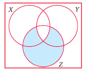
(1) Z –(X ∪Y) Z minus (X union Y)
(2) (X∪ Y) ∩Z 2) (X union Y) intersection of Z
(3) Z –(X∩ Y) 3) Z minus of (X intersection Y)
(4) Z∪ (X∩ Y) 4) Z union of (X intersection Y)
20. In a city, 40% people like only one fruit, 35% people like only two fruits, 20% people like all the three fruits. How many percentages of people do not like any one of the above three fruits?
(1) 5
(2) 8
(3) 10
(4) 15
Answer
Exercise 1.7
1. (2) 2. (1) 3. (3) 4. (2) 5. (4) 6. (1) 7. (2) 8. (4) 9. (3) 10. (4)
11. (2) 12. (1) 13. (1) 14. (3) 15. (4) 16. (1) 17. (4) 18. (3) 19. (3) 20. (1)
Points to Remember
Romen letter 3 Roster form.
A and B are overlapping.
For any two sets A and B,
A ∪B= B∪ A _
A∩ B =B ∩A
A union B is equal to B union A
A intersection B is equal to B intersection A
Associative Property
For any three sets A, B and C
A ∪(B ∪ C)=(A ∪ B) ∪C ; A∩( B∩ C)=(A∩ B)∩C
A union of in bracket B union C is equal to in bracket A union B union C ;
A intersection in bracket B intersection C is equal to in bracket A intersection B intersection C
For any three sets A, B and C
A ∪(B ∪ C)=( A∩ B) ∪ ( A∩C ) [Intersection over union]
A ∪(B ∩ C)=( A∪ B) ∩ ( A∪C ) [Union over intersection]
A union of in bracket B union C is equal to in bracket A union B union C ;
A intersection in bracket B intersection C is equal to in bracket A intersection B intersection C
De Morgan’s Laws for Set Difference
For any three sets A, B and C
A-(B∪ C)=(A-B) ∩ (A-C)
Consider an Universal set and A, B are two subsets, then
(A∪ B)’=A’∩B’;( A∩ B)’=A’∪B’
Romen letter 1 If A and B are any two sets, then
n(A∪B) = n(A)+n(B)–n(A∩B)
n in bracket A union B is equal to n of A plus n of B minus n of in bracket A intersection B
Romen letter 2 If A, B and C are three sets, then
n(A∪ B∪ C)= n(A)+n(B)+n(C)-n(A∩B)-n(B∩C)-n(A∩C)+n(A∩B∩C)
n in bracket A union B union C is equal to n of A plus n of B plus n of C minus n of (A intersection B) minus n of in bracket B intersection C minus n of in bracket A intersection C plus n of in bracket A intersection B intersection C
“When I consider what people generally want in calculating, I found that it always is a number” - Al-Khwarizmi


Al-Khwarizmi (A D (CE) 780 - 850)
Al-Khwarizmi, a Persian scholar, is credited with identification of surds as something noticeable in mathematics. He referred to the irrational numbers as ‘inaudible’, which was later translated to the Latin word ‘surdus’ (meaning ‘deaf ’ or ‘mute’). In mathematics, a surd came to mean a root (radical) that cannot be expressed (spoken) as a rational number.
Learning Outcomes
Numbers, numbers, everywhere!
You have learnt about many types of numbers so far. Now is the time to extend the ideas further.

When you want to count the number of books in your cupboard, you start with 1, 2, 3, … and so on. Th ese counting numbers 1, 2, 3, … , are called Natural numbers. You know to show these numbers on a line (see Fig. 2.1).

We use N to denote the set of all Natural numbers.
N = { 1, 2, 3, … } N equal to set bracket of 1,2,3,...
If the cupboard is empty (since no books are there). To denote such a situation, we use the symbol 0. Including zero as a digit you can now consider the numbers 0, 1, 2, 3, … and call them Whole numbers. With this additional entity, the number line will look as shown below

We use W to denote the set of all Whole numbers. W = { 0, 1, 2, 3, … } w is equal to set bracket of 0 1,2,3, infinityCertain conventions lead to more varieties of numbers. Let us agree that certain conventions may be thought of as “positive” denoted by a ‘+’ sign. A thing that is ‘up’ or ‘forward’ or ‘more’ or ‘increasing’ is positive; and anything that is ‘down’ or ‘backward’ or ‘less’ or ‘decreasing’ is “negative” denoted by a ‘–’ sign. You can treat natural numbers as
positive numbers and rename them as positive integers; thereby you have enabled the entry of negative integers –1, –2, –3, …. Minus 1 comma minus 2 comma minus 3 Note that –2 minus 2 is “more negative” than –1 minus 1. Therefore, among –1 and –2, you find that –2 minus 2 is smaller and –1 minus 1 is bigger. Are –2 minus 2 and –1minus 1 smaller or greater than –3? Minus 3 question mark Th ink about it. Th e number line at this stage may be given as follows:

We use Z to denote the set of all Integers.
Z= { …, –3, –2, –1, 0, 1, 2, 3, … }.
Z equal to set bracket of minus 3, minus 2, minus 1, 0, 1, 2, 3,….
When you look at the figures Figure 2.2 and figure 2.3 above, you are sure to get amused by the gap between any pair of consecutive integers. Could there be some numbers in between?
You have come across fractions already. How will you mark the point that shows 21 on Z question mark It is just midway between 0 and 1. In the same way, you can plot , , , 2 3 1 41 51 43 ... etc. These are all fractions of the form ba where a and b are integers with one restriction that b ≠ 0. b is equal to 0 bracket open Why question mark bracket close If a fraction is in decimal form, even then the setting is same.
Because of the connection between fractions and ratios of lengths, we name them as Rational numbers. Here is a rough picture of the situation:

A rational number is a fraction indicating the quotient of two integers, excluding division by zero.
Since a fraction can have many equivalent fractions , there are many possible forms for the same rational number. Thus , 1by3 comma 2by 8 comma 8 by 24 all these denote the same rational number.
Consider a comma b where a > b a greater than b and their AM Arithmetic Mean a greater than b a plus b by 2 given by a +b/ 2. Is this AM a rational number question mark Let us see.
If a = p/q a is equal to p by q open bracket p, q integers and q≠ 0 q not equal to 0 close bracket; b = r/s b is equal to r by s open r, s integers and s≠ 0 snot equal to 0 close bracket comma, then ,
a+ b/2= p/q+r/s/ 2=ps+qr/2qs a plus b by 2 is equal to p by q plus r by s whole divided by 2 is equal to ps plus qr by 2qs
which is a rational number.
We have to show that this rational number lies between a and b.
a minus bracket of (a plus b/ 2) is equal to 2a minus a minus b / 2 is equal to a minus b//2 greater than 0 because a greater than b.
a-(a+b/2)=2a-a-b/2=a-b/2 which is > 0 since a>b.
a minus bracket of open bracket a plus b by 2 close bracket is equal to 2a minus a minus b /by 2 is equal to a minus b/ by2 greater than 0 because a greater than b.
Therefore, a>(a+b/2) ... ) a greater than open a plus b by 2 close bracket----- 1
(a+b/2)-b=a+b-2b/2=a-b/2 which is > 0 since a>b.
a plus b by 2 minus b is equal to a plus b minus 2b by 2 is equal to a minus b by 2 which is greater than 0 since a greater than b.
Therefore, (a+b/2)>b... (2) (a plus b by 2) greater than b
From (1) and (2) we see that a >(a+b/2)>b, a greater than open a plus b ன் by 2 close bracket greater than b, which can be visualized as follows:

Thus, for any two rational numbers, their average/mid-point is rational. Proceeding similarly, we can generate infinitely many rational numbers.
Example 2.1
Find any two rational numbers between
½ and 2/3
1 by 2 and 2/3
Solution 1
A rational number between 1/2 and 2/3 = 1/2(1/2+2/3)=1/2(3+4/6)=1/2(7/6)=7/12
1/2 and 2/3 is equal to is equal to 1 by 2 bracket of 1 by 2 plus 2 by 3 is equal to 1 by 2 bracket of 3 plus 4 by 6 close bracket is equal to 1 by 2 bracket of 7 by 6 close bracket is equal to 7 by 12
A rational number between 1/2 and 7/12 = 1/2(1/2+7/12)=1/2(6+7/12)=1/2(13/12)=13/24
1/2 and 7/12 is equal to is equal to 1 by 2 bracket of 1 by 2 plus 7 by 12 close bracket is equal to 1 by 2 bracket of 6plus 7 whole divided by 12 close bracket is equal to 1 by 2 bracket of 13 by 12 is equal to 13 by 24
Hence two rational numbers between 1/2 and 2/3 are 7/12 and 13/24 (of course, there are many more!)
There is an interesting result that could help you to write instantly rational numbers between any two given rational numbers.
Result
If p/q and r/s are any two rational numbers such that p/q<r/s , p by q lesser than r by s then p+r/q+s p plus r by q plus s is a rational number, such that p/q < p+r/q+s < r/s p divided by q less than p plus r divided by q plus s less than r divide by s
Let us take the same example: Find any two rational numbers between 1/2 and 2/3
Solution 2
1/2 < 2/3 gives ½<1+ 2/2+ 3<2/3 or ½< 3/5<2/3 gives ½<1+ 3/2+ 5<3/5<2/3or ½< 4/7<3/5<5/8<2/3
1 by 2 less than 2 by 3 gives 1 by 2 less than 1 plus 2 divided by 2 plus 3 less than 2 by 3 or 1 by 2 less than 3 by 5 less than 2 by 3 gives 1 by 2 less than 1plus 3 divided by 2plus 5 less than 3 by 5 less than 2 by 3 or 1 by 2 less than 4 by 7 less than 3 by 5 less than 5 by 8 less than 2 by 3
Solution 3
Any more new methods to solve? Yes, if decimals are your favourites, then the above example can be given an alternate solution as follows:
1/2 = 0.5 and 2/3 = 0.66...
1 divided by 2 is equal to 0.5 and 2 divided by 3 is equal to 0.66 and so on.
1 divided by 2 and 2 divided by 3 – in between rational national. 0.51 comma 0.57 comma 0.58 and so on.
Hence rational numbers between 21 and 32 can be listed as 0.51, 0.57,0.58,…
Solution 4
There is one more way to solve some problems. For example, to find four rational numbers between 4/9 4 divided by 9 and 3/5 3 divided by 5, note that the LCM of 9 and 5 is 45; so, we can write 4/9 = 20/45 and 3/5 = 27/45. 4 divided by 9 is equal to 20 divided by 45 and 3 divided by 5 is equal to 27 divided by 45
Therefore, four rational numbers between 4/9 4 divided by 9 and 3/5 3 divided by 5 are 21/45,22/45,23/45,24/45,... 21 divided by 45, 22 divided by 45, 23 divided by 45, 24 divided by 45 and so on
Exercise 2.1

2. Find any three rational numbers between -7/11and 2/11.
3. Find any five rational numbers between Romen letter 1 ¼ and 1/5 Romen letter 2 0.1 and 0.11 Romen letter 3 –1 and –2
1 comma 1 by 4 1 by 5 2 comma 0.1 and 0.11 3 comma minus 1 and minus 2
ANSWERS
Exercise 2.1
1. D 2. - 6/ 11, -5/ 11, 4 /11,……. 1/11
3. (i) 9/40,19/80,39/160,79/ 320,159/640; The given answer is one of the answers. There can be many more answers
(ii) 0.101, 0.102, ... 0.109 The given answer is one of the answers. There can be many more answers
You know that each rational number is assigned to a point on the number line and learnt about the denseness property of the rational numbers. Does it mean that the line is entirely filled with the rational numbers and there are no more numbers on the number line? Let us explore.

Consider an isosceles right-angled triangle whose base and height are each 1 unit long. Using Pythagoras theorem, the hypotenuse can be seen having a length √12+12=√2(see Fig. 2.6 ). square root of 1 power 2 plus 1 power 2 equal to square root of 2 figure two point six Greeks found that this is neither a whole number nor an ordinary fraction. The belief of relationship between points on the number line and all numbers was shattered! √2 was called an irrational number.
An irrational number is a number that cannot be expressed as an ordinary ratio of two integers
GOLDEN RATIO (1 ratio 1.6)
The Golden Ratio has been heralded as the most beautiful ratio in art and architecture.

Take a line segment and divide it into two smaller segments such that the ratio of the whole line segment (a+b) bracket open a plus b to segment a is the same as the ratio of segment a to the segment b.
This gives the proportion a+b/a= a/b a plus b by a equal a by b
Notice that ‘a’ is the geometric mean of a+b and b. a plus b and b
Examples
1. Apart from √2 , square root of 2 comma one can produce a number of examples for such irrational numbers. Here are a few: √5, √7, 2√3 comma….. square root of 5, square root of 7, 2 square root of 3, and so on
2. π , the ratio of the circumference of a circle to the diameter of that same circle, is another example for an irrational number.
3. e, also known as Euler’s number, is another common irrational number.
4. The golden ratio, also known as golden mean, or golden section, is a number often stumbled upon when taking the ratios of distances in simple geometric figures such as the pentagon, the pentagram, decagon and dodecahedron, etc., it is an irrational number.
Where are the points on the number line that correspond to the irrational numbers question mark As an example, let us locate 2 on the number line. This is easy.
Remember that 2 is the length of the diagonal of the square whose side is 1 unit How question mark Simply construct a square and transfer the length of one of its diagonals to our number line. see Fig.2.).

Squares on grid sheets can be used to produce irrational lengths.
Here are a few examples:

We draw a circle with centre at 0 on the number line, with a radius equal to that of diagonal of the square. This circle cuts the number line in two points, locating on the right of 0 and – minus on its left. Open bracket You wanted to locate; you have also got a bonus in minus bracket close
You started with Natural numbers and extended it to rational numbers and then irrational numbers. You may wonder if further extension on the number line waits for us. Fortunately, it stops and you can learn about it in higher classes.
Representation of a Rational number as terminating and non-terminating decimal helps us to understand irrational numbers. Let us see the decimal expansion of rational numbers.
If you have a rational number written as a fraction, you get the decimal representation by long division. Study the following examples where the remainder is always zero.


Note
These show that the process could lead to a decimal with finite number of decimal places. They are called terminating decimals.
Can the decimal representation of a rational number lead to forms of decimals that do not terminate? The following examples (with non-zero remainder) throw some light on this point.
Example 2.2
Represent the following as decimal form
Romen letter 1 minus 4 by 11
Romen letter 2 11 by 75
The reciprocals of Natural Numbers are Rational numbers. It is interesting to note their decimal forms. See the first ten. |
||
S.No. |
Reciprocal |
Decimal Representation |
1 |
1/1=0.1 1 by 1 is equal to 0.1 |
Terminating |
2 |
½=0.5 1 by 2 is equal to 0.5 |
Terminating |
3 |
1/3=0. 1 by 3 is equal to 0. 3 bar |
Non-terminating Recurring |
4 |
¼=0. 25 1 by 4 is equal to 0. 25 |
Terminating |
5 |
½=0. 5 1 by 4 equal to 0. 5 |
Terminating |
6 |
1/6=0. 1 1 by 6 is equal to bar 0. 1 |
Non-terminating Recurring |
7 |
1/7=0. 1 by 7 is equal to 0.142857 whole bar 0. |
Non-terminating Recurring |
8 |
1/8=0.125 1 by 8 is equal to 0.125 |
Terminating |
9 |
1/9=0. 1 by 9 is equal to 0.1 bar 0. |
Non-terminating Recurring |
10 |
1/10=0.1 1 by 10 is equal to 0.1 |
Terminating |


A rational number can be expressed by
Romen letter 1 either a terminating
Romen letter 2 or a non-terminating and recurring (repeating) decimal expansion.
The converse of this statement is also true.
That is, if the decimal expansion of a number is terminating or non-terminating and recurring, then the number is a rational number.
Note
In this case the decimal expansion does not terminate!
The remainders repeat again and again! We get non-terminating but recurring block of digits.
In the decimal expansion of the rational numbers, the number of repeating decimals is called the length of the period of decimals.
For example,
(i) 25/7=3.= has the length of the period of decimal = 6
(ii) 27/110=0. 2 = has the length of the period of decimal = 2
Romen letter 1 25 by 7 is equal to 3. 571428 whole bar
Equal has the length of the period of decimal is equal to 6
Romen letter 3 27 by 110 is equal to 0. 2 bar of 45
Equal has the length of the period of decimal is equal to 2
Example 2.3 Express the rational number in recurring decimal form by using 1/27 the recurring decimal expansion of. Hence write 31 in recurring decimal form. 59/27
Solution
We know that 1/3 = 0.
Therefore1/ 27= 1/9X1/3=1/9X 0.333…= 0.point037037=0.
Also, 59/27= 2=2+5/27
=2+(5X1/27)
=2+(5X0.)=2+(5X0.037037037…)=2+0.185185…=2.185185…=2.
1 by 3 is equal to 0. 3 bar 0.
1 by 27 is equal to 1 by 9 multiply 1 by 3 is equal to 1 by 9 multiply 0.333… is equal to 0.037037 is equal to 0.037 whole bar 0., 59 by 27 is equal to 2 2 multiply 5 by 27is equal to 2 plus 5 by 27
is equal to 2plus bracket open 5 multiply 1 by 27 bracket close
is equal to 2plus 5 multiply 0.point037 whole bar (5X0.) is equal to 2plus (5X0.037037037…) is equal to 2plus 0.point185185… is equal to 2.point185185… is equal to 2. 185 whole bar 2.
Let us now try to convert a terminating decimal, say 2.945 as rational number in the fraction form.
2.945 = 2 + 0.945
2.point945 = 2 +9/10 +4/100+5/1000
2. point 945 is equal to 2 plus 0.945
2. point 945 is equal to 2 plus 9 by 10 plus 4 by 100 plus 5 by 1000
= 2+ 900/1000+40/1000+5/1000 (making denominators common)
= 2 += 2945/1000 or 589/200 which is required
(In the above, is it possible to write directly 2.945 = 2945/1000 ?)
is equal to 2 plus 900 by 1000 plus 40 by 1000 plus 5 by 1000 making denominators common
is equal to 2 plus 945 by 1000 is equal to 2945 by 1000 or 589 by 200
In the above, is it possible to write directly 2.945 = 2945/1000 2.945 is equal to 2945 by 1000
Example 2.4 Convert the following decimal numbers in the form of p/q where p and q are integers and q≠0: (i) 0.35 (ii) 2.176 (iii) – 0.0028
Convert the following decimal numbers in the form of P by q where p and q are integers and q is not equal to 0: Romen letter 1 0.35 Romen letter 2 2.176 Romen letter 3 minus 0.0028
Solution
(i) 0.35 = 35/100 = 7/20
(ii) 2.176 = 2176/1000 = 272/125
–0.0028 = -28/10000 = -7/2500
Romen letter 1 0.35 is equal to 35 by 100 is equal to 7 by 20
Romen letter 2 2.176 is equal to 2176 by1000 is equal to 272 by 125
Romen letter 3 minus 0. point 0028 is equal to minus 28 by 10000 is equal to minus 7ன் கீழ் 2500
It was very easy to handle a terminating decimal. When we come across a decimal such as 2.4, we get rid of the decimal point, by just divide it by 10.
Thus 2.4 = 24/10 , which is simplified as 12/5 . But, when we have a decimal such as 2., the problem is that we have infinite number of 4s and hence will need infinite number of 0s in the denominator. For example,
2.4 = 2+
2.44 = 2 +
2.4 is equal to 2 plus 4 divided by 10
2.44 is equal to 2 plus 4 divided by 10 plus 4 divided by 100
How tough it is to have infinite 4’s and work with them. We need to get rid of the infinite sequence in some way. The good thing about the infinite sequence is that even if we pull away one , two or more 4 out of it, the sequence still remains infinite.
Let x = 2....(1)
Then, 10x = 24. ...(2)
Let x equal to 2. Bar 4 equation 1
10 x is equal to 24. Bar 4
[When you multiply by 10, the decimal moves one place to the right, but you still have infinite 4s left over).
Subtract the first equation from the second to get,
9x = 24. – 2.= 22
9 x is equal to 24.4 bar minus 2. 4 bar is equal to 22 (Infinite 4s subtract out the infinite 4s and the left out is
24 – 2 = 22)
x =22/ 9, the required value.
9x is equal to 22
24 – 2 is equal to 22
x is equal to 22 by 9, , the required value
We use the same exact logic to convert any number with a non-terminating repeating part into a fraction.
Example 2.5 Convert the following decimal numbers in the form of p/q(p,q∈Z and q≠0)
(i) 0. (ii) 2. (iii) 0. 4 (iv) 0.5
Solution
(i) Let x = 0.= 0.3333… (1)
(Here period of decimal is 1, multiply equation (1) by 10)
10 x = 3.3333... (2)
(2) – (1): 9 x = 3 or x = 1/3
(ii) Let x = 2.= 2.124124124… (1)
(Here period of decimal is 3, multiply equation (1) by 1000.)
1000 x = 2124.124124124… (2)
(2)–(1): 999 x = 2122 x = 2122/999
(iii) Let x = 0. 4= 0.45555… (1)
(Here the repeating decimal digit is 5, which is the second digit after the decimal point, multiply equation (1) by 10)
10 x = 4.5555… (2)
(Now period of decimal is 1, multiply equation (2) by 10)
100 x = 45.5555… (3)
(3) – (2): 90 x = 41 or x = 41/90
(iv) Let x = 0.5= 0.5686868… (1)
(Here the repeating decimal digit is 68, which is the second digit after the decimal point, so multiply equation (1) by 10)
10 x = 5.686868… (2)
(Now period of decimal is 2, multiply equation (2) by 100)
1000 x = 568.686868… (3)
(3) – (2): 990 x = 563 or x = 563/990.
Let x is equal to 0.3 bar is equal to 0.333333 equation 1
Here period of decimal is 1, multiply equation 1 by 10
10 x is equal to 3.3333.... equation 2
equation 2 minus equation (1) : 9x is equal to 3 or x is equal to 1 by 3
x is equal to 2.124 whole bar is equal to 2.124124124…… equation 1
(Here the repeating decimal digit is 68, which is the second digit after the decimal point, so multiply equation 1 by 1000
1000 x is equal to 2124.124124124 equation 2
equation 2 equation 1 ) : 999 x is equal to 2122 X is equal to 2122 by 999
x is Equal to 0.45 bar is Equal to 0.45555 equation 1.
Multiply 10 by equation 1
10 x is equal to 4.5555 equation 2 .
Now period of decimal is 1 comma multiply equation 1 by 100
100 x is equal to 45.5555 equation 3
equation 3 minus equation 2) 90x is equal to 41 மற்றும் x is equal to 41 ன் கீழ் 90
(iv) Let x is equal to 0.5 bar of 68 0.5 is equal to 0.5686868… சமன்பாடு (1)
Equation 1 multiply by 10
10 x is equal to 5.686868... equation 2
Now period of decimal is 2 comma multiply equation 2 by 100
1000 x is equal to 568.686868.. equation 3
equation 3 minus equation 2
990x is equal to 563 or x is equal to 563 by 990
Note
To determine whether the decimal form of a rational number will terminate or non - terminate, we can make use of the following rule
If a rational number , p/q, q ≠0 can be expressed in the form p/ 2m5n , where p∈ Z and , m,n∈ W, then rational number will have a terminating decimal expansion. Otherwise, the rational number will have a non- terminating and recurring decimal expansion
1=0. point 9999…..
7=6. point 9999…..
3.7=3. point 6999…..
1 equal to 0. point 9999
7 is equal to 6. point 9999
3.7 is equal to 3. point 699999
The pattern suggests that any terminating decimal can be represented as a non-terminating and recurring decimal expansion with an endless block of 9’s.
Example 2.6 Without actual division, classify the decimal expansion of the following numbers as terminating or non – terminating and recurring.
(i) 13/64 (ii) -71/125 (iii) 43/375 (iv) 31/400
1 comma 13 by 64 2 comma minus 71 by 125 3 comma 43 by 375 4 comma 31 by 400
Solution
(a)13/64 =13/26 , So 13/64 has a terminating decimal expansion.
(b) -71/125 =-71/53, So -71/125 has a terminating decimal expansion.
(c) 43/375 = 43/31X53, So 43/375 has a non – terminating recurring decimal expansion.
(d) 31/400= 31/24X 52, So 31/400 has a terminating decimal expansion.
a comma 13 by 64 is equal to 13 by 2 power 6, so comma,13 by 64 has a terminating decimal expansion.
b comma minus 71 by 125 is equal to minus 71 by 5 power 3, எனவே, minus 71ன் கீழ் 125 64 has a terminating decimal expansion. .
c comma 43 by 375 is equal to 43 by 3 power1 multiply 5 power 3, so, 43 by 375 has a non -terminating decimal expansion.
D comma 31 by 400 is equal to 31 by 2 power 4 multiply 5 power 2, so ,31 by 400 has a terminating decimal expansion.
Example 2.7 Verify that 1 = 0.
Solution
Let x = 0. = 0. point 99999… (1)
(Multiply equation (1) by 10)
10 x = 9. point 99999… (2)
Subtract (1) from (2)
9x = 9 or x =1
Thus, 0. = 1
1 is equal to 0 point bar 9
solution
x is equal to 0. bar 9 is equal to 0.99999 equation 1
Multiply equation 1 by 10
10 x is equal to 9.99999… equation 2
Subtract 1 from 2
9x is equal to 9 or x is equal to 1
0.bar 9 is equal to 1
Exercise 2.2
1. Express the following rational numbers into decimal and state the kind of decimal expansion
(i) 2/7 (ii)-5 (iii) 22/3 (iv) 327/200
Romen letter 1 2 by 7 Romen letter 2 minus 5 3 by 11 Romen letter 3 22 by 3 Romen letter 4 327 by 200
2. Express 1 by13 in decimal form. Find the length of the period of decimals.
3. Express the rational number 1 by 33 in recurring decimal form by using the recurring decimal expansion of 1 by11. Hence write 71by 33 in recurring decimal form.
4. Express the following decimal expression into rational numbers.
(i)0. (ii) 2. (iii) –5.132
(iv) 3.1 (v) 17.2 (vi) -21.213
Romen letter 1 0.bar 24 Romen letter 2 2.bar327 Romen letter 3 minus 5.132
Romen letter 4. 1 bar 7 Romen letter 5 17.2 bar of 15 Romen letter 6 minus 2.1213 bar of 7
5. Without actual division, find which of the following rational numbers have terminating decimal expansion.
(i) (ii) (iii) 4 (iv)
Romen letter 1 7 by 128
Romen letter 2 21 by 15
Romen letter 3 4 multiply 9 by 35
Romen letter 4 219 by 2200
Exercise 2.2 answers
1. (i) 0.2857142..., Non terminating and recurring (ii) -5., Non terminating and recurring
(iii) 7. Non terminating and recurring (iv) 1.635, Terminating
2. 0. point 076293, 6
3. 0. point 0303, 2.15
4. (i) 24/99 (ii) 2325/999 (iii) 1283/250 (iv) 143/45 (v) 5681/330
(vi)-190924/ 9000
5. (i) Terminating (ii) Terminating (iii) Non terminating (iv) Non terminating
It can be shown that irrational numbers, when expressed as decimal numbers, do not terminate, nor do they repeat. For example, the decimal representation of the number π starts with 3.14159265358979..., but no finite number of digits can represent π exactly, nor does it repeat.
Consider the following decimal expansions:
(iii) 12.230223300222333000…
(iv) √2 = 1.4142135624…
Romen letter 1 0 point 1 0 1 1 0 0 1 1 1 0 0 0 1 1 1 1 …
Romen letter 2 3 point 0 1 2 0 1 2 1 2 0 1 2 1 2 1 2 …
Romen letter 3 1 2 . point2 3 0 2 2 3 3 0 0 2 2 2 3 3 3 0 0 0 …
Romen letter 4 root 2 is equal to 1 . 4 1 4 2 1 3 5 6 2 4…
Are the above numbers terminating (or) recurring and non- terminating? No… They are neither terminating, nor nonterminating and recurring. Hence they are not rational numbers. They cannot be written in the form of p/q ,where p, q , ∈Z and q ≠0. They are irrational numbers.
A number having non- terminating and non- recurring decimal expansion is an irrational number.
Example 2.8 Find the decimal expansion of. √3 root 3
We often write root 2 equal 1.414, root 3 equal 1.732, pi equal 3.14 etc. These are only approximate values and not exact values. In the case of the irrational number π, we take frequently 22/7 (which gives the value 3.(142857) ̅) pi is equal to 3.141 to be its correct value but in reality these are only approximations. This is because, the decimal expansion of an irrational number is non-terminating and non-recurring. None of them gives an exact value!
Solution

Thus, by division method, √3 = 1.7320508…
It is found that the square root of every positive non perfect square number is an irrational number. √2, √3, √5, √6, √7 , … root 2, root 3, root 5, root 6, root 7, …are all irrational numbers.
Example 2.9 Classify the numbers as rational or irrational:
Romen letter 1 root 10
Romen letter 2 root 49
Romen letter 3 0.025
Romen letter 4 0.7bar 6
Romen letter 5 2 . 5 0 5 5 0 0 5 5 5 ...
Romen letter 6 root 2 by 2
Solution
(i) √10 root 10 is an irrational number ( since 10 is not a perfect square number).
(ii) √49 = 7 = 7/1 , root 49 equal 7 equal 7 by 1 a rational number(since 49 is a perfect square number).
(iii) 0.025 is a rational number (since it is a terminating decimal).
(iv) 0. 7= 0.7666…. is a rational number ( since it is a non – terminating and recurring decimal expansion).
(v) 2.505500555…. is an irrational number ( since it is a non – terminating and non–recurring decimal).
(vi) √2/2 = √2 /√2X √2 =1/√2 root 2 by 2 is equal to root 2 by root 2 multiply root 2 is equal to 1 by root 2 is an irrational number ( since 2 is not a perfect square number).
Note
The above example(vi) it is not to be misunderstood as p/q form, because both p and q must be integers and not an irrational number.
Example 2.10 Find any 3 irrational numbers between 0.12 and 0.13.

Solution
Three irrational numbers between 0.12 and 0.13 are 0.12010010001…, 0.12040040004…, 0.12070070007…
Note
We state (without proof) an important result worth remembering.
If ‘a’ is a rational number and √b is an irrational number then each one of the following is an irrational number:
(i) a + √b ; (ii) a – √b ; (iii) a√b ; (iv) a/√b ; (v) √b/a.
Romen letter 1 a plus root b ; Romen letter 2 a minus root b ; Romen letter 3 aroot root b ; Romen letter 4 a by root b ; Romen letter 5 root b by a.
For example, when you consider the rational number 4 and the irrational number √5 , then 4 + √5 , 4 – √5 , 4√ 5 , 4/√5 , √5/4 ... 4 plus root 5, 4 –root 5, 4root 5, 4 by root 5, root 4 by 5 root 5 by 4. .. are all irrational numbers.
Example 2.11 Give any two rational numbers lying between 0.5151151115…. and 0.5353353335…
Solution Two rational numbers between the given two irrational numbers are 0.5152 and 0.5352
Example 2.12
Find whether x and y are rational or irrational in the following.
(i) a=2+√3, b=2-√3; x= a+ b,y= a- b
(ii) a=√2+7, b=√2-7; x= a+ b,y= a- b
(iii) a=√75, b=√3; x=ab,y=a/b
(i) a is equal to 2 plus root 3, b is equal to 2minus root 3; x is equal to a plus b,y is equal to a minus b
(ii) a is equal to root 2 plus 7, b is equal to root 2minus 7; x is equal to a plus b, y is equal to a minus b
(iii) a is equal to root 75, b is equal to root 3; x is equal to ab, y is equal to a is divided b
a is equal to root 18, b is equal to root 3; x is equal to ab,y is equal to a is divided by b
Note
From these examples, it is clear that the sum , difference, product, quotient of any two irrational numbers could be rational or irrational.
Solution
Romen letter 1 Given that a=2+√3, b=2-√3;
a is equal to 2 plus root 3, b is equal to 2minus root 3; x is equal to a plus b,y is equal to a minus b
x = a + b = (2 + √3 ) +(2 – √3 ) = 4 , a rational number.
y = a – b = (2 + √3 ) – (2– √3 ) = 2 √3 , an irrational number.
x is equal to a plus b is equal to bracket 2 plus root 3 plus in bracket 2 minus root root 3 is equal to 4, a rational number. .
y is equal to a –minus b is equal to bracket 2 plus root 3) minus bracket 2minus root root 3 is equal to 2 root 3, , an irrational number
romen letter 2Given that a = √2 +7 , b = √2 –7
x = a + b = ( √2 +7 ) +( √2 –7) = 2√ 2 , an irrational number.
y = a – b = ( √2 +7 )–( √2 –7) = 14 , a rational number.
a is equal to root 2 plus plus 7, b is equal to root root 2 –minus 7 given
x is equal to a plus b is equal to (root 2 plus 7) plus (root 2 –minus 7) is equal to 2 root2, an irrational number..
y is equal to a –minus b is equal to ( root 2 plus 7) minus ( root2 –minus 7) is equal to 14, a rational number.
Romen letter 3 Given that a = √75 , b = √3
x = ab = √75X √3=√75X3=√5X5X3X3=5X3=15, a rational number.
y = a/b= √75/√ 3=√ 75/3= √25= 5, rational number.
Romen letter 4 Given that a = √18 , b = √3
x = ab = √18X√3=√18X3= √6X 3X3X3=3√6 , an irrational number.
y = a/b= √18/√3=√ 6, an irrational number.
a is equal to root18, b is equal to root 3
x is equal to ab is equal to root 18 multiply root3 is equal to root 18X multiply 3 is equal to root square root of 6X multiply 3X multiply 3X multiply 3 is equal to 3root 6, rational number.
y is equal to a by b is equal to root 18 by root 3 is equal to root6, an irrational number
Example 2.13 Represent√9.3 square root of 9 point 3 on a number line.
Solution

Exercise 2.3
1. Represent the following irrational numbers on the number line.
(i) √3 (ii) √4.7 (iii) √6.5
Romen letter 1 root 3
Romen letter 2 root 4.7
Romen letter 3 root 6.5
2. Find any two irrational numbers between
(i) 0.3010011000111…. and 0.3020020002…. (ii) 6/7 and 12/13 and (iii) √2 and√3
3. Find any two rational numbers between 2.2360679….. and 2.236505500….
Romen letter 1 0.3010011000111…. மற்றும் 0.3020020002….
Romen letter 2 6 by 7 and 12 by13
Romen letter 3 root 2 and root 3
3.2.2360679 and 2.236505500
Exercise 2.3 answers
2. (i) 0.301202200222..., 0.301303300333... (ii) 0.8616611666111 ..., 0.8717711777111 ... (iii) 1.515511555..., 1.616611666...
3. 2.2362, 2.2363
The real numbers consist of all the rational numbers and all the irrational numbers.
Real numbers can be thought of as points on an infinitely long number line called the real line, where the points corresponding to integers are equally spaced.

Any real number can be determined by a possibly infinite decimal representation, (as we have already seen decimal representation of the rational numbers and the irrational numbers).
Visualisation through Successive Magnification.
We can visualise the representation of numbers on the number line, as if we glimpse through a magnifying glass.
Example 2.14 Represent 4.point863 on the number line.
Solution
4.863 lies between 4 and 5(see Fiureg. 2.9)
(i) Divide the distance between 4 and 5 into 10 equal intervals.
(ii) Mark the point 4.8 which is second from the left of 5 and eighth from the right of 4
(iii) 4.86 lies between 4.8 and 4.9. Divide the distance into 10 equal intervals.
(iv) Mark the point 4.86 which is fourth from the left of 4.9 and sixth from the right of 4.8
(v) 4.863 lies between 4.86 and 4.87. Divide the distance into 10 equal intervals.
(vi) Mark point 4.863 which is seventh from the left of 4.87 and third from the right of 4.86.
![Picture 2.9 shows 4.863 in number line.
This number line shows from negative number 3 to positive number 7.
Divide the space between 4 and 5 equally into 10 parts.
Eighth section from 4 to the right or second section from 5 to the left is marked as the second section as 4.8.
4.86 is between 4.8 and 4.9.
Divide the distance into 10 equal parts.
Section 4.86isplaced sixth place right towards 4.8 or section 4.86 is marked as fourth place left of 4.9.
(v) 4.863 is between 4.86 and 4.87. Divide the inner part into 10 equal parts.4.863 is marked in the third place after 4.86 in the right side or seventh place after 4.7 in the left.](images/image-43.png)
Fig. 2.9
Example 2.15 Represent 3.on the number line upto 4 decimal places.
Solution
3.= 3.45454545…..
= 3.4545 ( correct to 4 decimal places).
The number lies between 3 and 4

Fig. 2.10
Exercise 2.4
1. Represent the following numbers on the number line.
(i)5.348 (ii) 6.6 upto 3 decimal places. (iii) 4. 4upto 4 decimal places.
Note
It is worth spending some time on the concepts of the ‘square root’ and the ‘cube root’, for better understanding of surds.
Let n be a positive integer and r be a real number. If rn = x, then r is called the nth root of x and we write
= r
The symbol n√ (read as nth root) is called a radical; n is the index of the radical (hitherto we named it as exponent); and x is called the radicand.
What happens when n = 2? Then we get r 2 = x, so that r is , our good old friend, the square root of x. Thus is written as √16 , and when n =3, we get the cube root of x, namely . For example, 3 is cube root of 8, giving 2. (Is not 8 = 23?)
How many square roots are there for 4? Since (+2)×(+2) = 4 and also (–2)×(–2) = 4, we can say that both +2 and –2 are square roots of 4. But it is incorrect to write that √4=±2. This is because, when n is even, it is an accepted convention to reserve the symbol for the positive nth root and to denote the negative nth root by –. Therefore, we need to write √4=2 and -√4=2
When n is odd, for any value of x, there is exactly one real nth root. For example, and
Thinking corner
Which one of the following is false?
(1)The square root of 9 is 3 or –3.
(2)√9=3
(3) -√9=-3
(4) √9=±3
Consider again results of the form r =
In the adjacent notation, the index of the radical (namely n which is 3 here) tells you how many times the answer (that is 4) must be multiplied with itself to yield the radicand.
To express the powers and roots, there is one more way of representation. It involves the use of fractional indices.
We write x1/n.
With this notation, for example


Observe in the following table just some representative patterns arising out of this new acquaintance:
Power |
Radical Notation |
Index Notation |
Read as |
26=64
|
2=6√64 2 is equal to 6th root of 64 |
2=641/6 2 equal to 64 power 1 by 6 |
2 is the 6th root of 64 |
25=32 |
2=5√32 2 is equal to 5th root of 32 |
2=321/5 |
2 is the 5th root of 32 |
24=16 |
2=4√16 2 is equal to 4th root of 16 |
2=161/4 |
2 is the 4th root of 16 |
23=8 |
2=3√8 2 is equal to cube root of 8 |
2=81/3 |
2 is the cube root of 8 meaning 2 is the 3rd root of 8 |
22=4 |
2=2√4 2 is equal to square root of 4 or 2 is equal to root 4 |
2=41/2 |
2 is the square root of 4 meaning 2 is the 2nd root of 4 |
Example 2.16 Express the following in the form 2n :
(i)8 (ii) 32 (iii) 1 4 (iv) 2 (v) 8.
Solution
Meaning of , (where and are Positive Integers) We interpret either as the root of the power of or as the power of
the root of . In symbols, or or
Example 2.17
Find the value of (i) 815/4 (ii) 64 -2/ 3
Solution
Exercise 2.5
1. Write the following in the form of 5n:
(i) 625 (ii) 1/5 (iii) √5 (iv) √125
2. Write the following in the form of 4n:
(i) 16 (ii) 8 (iii) 32
3. Find the value of (i) 491/2 (ii) (243)2/5 (iii) 9-3/2 (vi) (64/125)-2/3
4. Use a fractional index to write:
(i) √5 (ii) 2√7 (iii) (3√49)5 (iv) (1/3√100)7
5.Find the 5th root of
(i) 32 (ii) 243 (iii) 100000 (iv) 1024 /3125
Having familiarized with the concept of Real numbers, representing them on the number line and manipulating them, we now learn about surds, a distinctive way of representing certain approximate values.
Can you simplify √4 and remove the √ symbol? Yes, one can replace √4 by the number 2. How about √1/9 ? It is easy; without √ symbol, the answer is 1/3. What about √0.01 ?. This is also easy, and the solution is 0.1
In the cases of √4 , √1/9 and √0.01., you can resolve to get a solution and make sure that the symbol √ is not seen in your solution. Is this possible at all times?
Consider √18. Can you evaluate it and also remove the radical symbol? Surds are unresolved radicals, such as square root of 2, cube root of 5, etc.
They are irrational roots of equations with rational coefficients.
A surd is an irrational root of a rational number. n a is a surd, provided n n _ , 1, ‘a’ is rational.
Examples : √2 is a surd. It is an irrational root of the equation x2 = 2. (Note that x2 – 2 = 0 is an equation with rational coefficients. √2 is irrational and may be shown as 1.4142135… a non-recurring, non-terminating decimal).
3√3 (which is same as 31/3 ) is a surd since it is an irrational root of the equation x3 – 3 = 0. ( √3 is irrational and may be shown as 1.7320508… a non-recurring, non-terminating decimal).
You will learn solving (quadratic) equations like x2 – 6x + 7 = 0 in your next class. This is an equation with rational coefficients and one of its roots is 3+√2 , which is a surd.
Is √1/25 a surd? No; it can be simplified and written as rational number 1/5. How about
4√16/81 ? It is not a surd because it can be simplified as 2/3.
The famous irrational number Π is not a surd! Though it is irrational, it cannot be expressed as a rational number under the √ symbol. (In other words, it is not a root of any equation with rational co-efficients).
Why surds are important? For calculation purposes we assume approximate value as √2=1.414 , √3=1.732 and so on.
(√2)2=(1.414)2=1.99936≠2; (√3)2=(1.732)2 =3.999824≠3.
Hence, we observe that √2 and √3 represent the more accurate and precise values than their assumed values. Engineers and scientists need more accurate values while constructing the bridges and for architectural works. Thus, it becomes essential to learn surds.
Progress check
1. Which is the odd one out? Justify your answer.
(i) √36, √50/98, √1, √1.44, 5√32, √120
(ii) √7, √48, 3√36, √5+√3, √1.21, √ 1/10
root of 36, whole root of 50 divided by 98, root 1, root of 1 point 44., 5th root of 32 , root of 120
root of 7, root of 48, cube root of 36, root 5 plus root 3, root of 1 point 21, whole root of 1 is divided by 10
2. Are all surds irrational numbers? - Discuss with your answer.
3. Are all irrational numbers surds? Verify with some examples.
The order of a surd is the index of the root to be extracted. The order of the surd n√a is n. What is the order of 5√99? It is 5.
Surds can be classified in different ways:
(i) Surds of same order : Surds of same order are surds for which the index of the root to be extracted is same. (They are also called equiradical surds).
For example, √x,a3/2,2√m are all 2nd order (called quadratic) surds.
3√5, 3√(x-2),(ab)1/3 are all 3rd order (called cubic) surds.
√3,3√10,3√6and 82/5 are surds of different order.
(ii) Simplest form of a surd : A surd is said to be in simplest form, when it is expressed as the product of a rational factor and an irrational factor. In this form the surd has
(a) the smallest possible index of the radical sign.
(b) no fraction under the radical sign.
(c) no factor is of the form an, where a is a positive integer under index n.
Example 2.18
Can you reduce the following numbers to surds of same order ?
(i) √3 (ii) 4√3 (iii) 3√3
Solution (i) √3 = 31/2 ( ii) 34 =31/4 (iii) 3√3 = 31/3
= 36/12 = 33/12 =34/12
= 12√36 = 12√33 =12√34
= 12√729 = 12√27 =12√81.
i) root 3 is equal to 3 power 1/ 2
is equal to 3 power 6/12
is equal to 12th root of 3 / 6
is equal to 12th root of 729
(ii) 4th root of 3 is equal to 3 power1/ 4
is equal to 3 bar 3/12
is equal to 12th root of 3 / 3
is equal to 12th root of 27
The last row has surds of same order.
Example 2.19
1. Express the surds in the simplest form: i) √8 ii) 3√192
2. Show that 3√7> 4√5. cube root of 7 is greater than 4th root of 5
Solution
1. (i) √8= √4X2= 2√2
(ii) 3√192=3√ 4X 4X X4 X3=4
2.3√7= 12√74=12√2401
4√5=51/4= 53/12=12√53= 12√125
12√2401> 12√125
Therefore, 3√7> 4√5.
For example, 5√3 , 2 , 3 are mixed surds.
Example 2.20 Arrange in ascending order: 3√2,2√4,4√3
Solution
The order of the surds 3√2,2√4 and 4√3 are 3, 2, 4.
L.C.M. of 3, 2, 4 = 12.
3√2=(21/3)= (24/12 )=12√24=12√16;
2√4=(41/2)= (46/12 )=12√46=12√4096;
4√3=(31/12)= (33/12 )=12√33=12√27;
The ascending order of the surds 3√2,2√4,4√3 is 12√16<12√27<12√4096that is, 3√2, 4√3,2√4.
For positive integers m, n and positive rational numbers a and b, it is worth remembering the following properties of radicals:
S.No |
Radical Notation |
Index Notation |
1 |
(n√a)n =a=n√an |
(a)n =a =(an)1/n |
2 |
n√a x n√b =n√ab |
aX b1/n |
3 |
m√ n√ a=mn√a= n√ m√a |
(a1/n)1/m =a1/mn =(a1/m)1/n |
4 |
n√a/ n√b= n√(a/b) |
a b1/n |
1 |
Bracket of nth root of a whole power n is equal to a equal to nth root of a power n |
Bracket of a power 1 by n whole power equal to a equal to a power n whole power 1 by n |
2 |
Nth root of a multiplication nth root of b is equal to nth root ab |
a power 1 by n multiply b power 1 by n equal to ab whole power n |
3 |
Mth root of nth root of a equal to m. int nth root of a equal to n th root mth root of a |
A power 1 by n whole power 1 by m is equal to a power 1 divide by mn. is equal to 1 divided by a power m whole power 1 by n
|
4 |
Nth root a divided by nth root of b is equal to whole nth root of a by b |
A power 1 by n divided by b power 1 by n is equal to a by b whole power 1 by n
|

We shall now discuss certain problems which require the laws of radicals for simplifying.
Example 2.21 Express each of the following surds in its simplest form (i) 3√108 (ii) 3√(1024)-2 and find its order, radicand and coefficient.
Solution

= 3√33X 4
= 3√33X3√4 (Laws of radicals - ii)
= 3×3√4 ( Laws of radicals- i)
order = 3; radicand = 4; coefficient = 3cube root of 108 is equal to whole cube root of 27 multiply 4
is equal to whole cube root of 3 power 3 multiply 4
is equal to whole cube root of 3power 3 multiply 3 root 4 (law 2)
is equal to 3× multiply cube root of 4 (law1 )
வரிசை is equal to 3; base is equal to 4; coefficient is equal to 33

= (3√(23X23X23X2)) -2 [Laws of radicals - (i)]
= (3√23X3√23 X3√23X3√2)-2 [Laws of radicals – (ii)]
= (2X2X2X3√2)-2 [Laws of radicals – (i)]
= (8X3√2)-2 = (1/8)2X(1/3√2)2
= (1/64)
order= 3 ; radicand = 14 ; coefficient = 1 64
(These results can also be obtained using index notation).
Note
Consider the numbers 5 and 6. As 5 =√25 and 6=√36
Therefore, √26, √27, √28, √29, √30, √31, √32, √33, √34, and √35 are surds between 5 and 6.
Consider 3√2 =√32 X2= √18, 2√3 = √ 22X 3=√12
Therefore, √17, √15, √14, √13 are surds between 2√3 and 3√2.
(i) Addition and subtraction of surds : Like surds can be added and subtracted using the following rules:
ac( a±c), where b>0
ac(a±c) , a multiply nth root b plus or minus c nth root of b is equal to bracket of a plus or minus c nth root of b, b greater than zero
Example 2.22
Solution(i) 3√7 +5√7 = (3+5) √7 = 8√7. Th e answer is irrational.
Example 2.23 Simplify the following: (i) √63 -√175+√ 28 (ii) 2+
Solution
= 3√7- 5√7+2√7
= (3√7-2√7)-5√7
= 5√7- 5√7
= 0
=2+
=2+
=4+15
=(4+15-16) =3
is equal to 3root 7 minus 5root 7 plus 2root 7
is equal to (3root 7 minus 2 root 7) minus 5root 7
is equal to 5 root 7 minus 5 root 7
is equal to 0
ii) 2 cube root of 40 plus 3 cube root of 625 minus 4 cube root of 320
is equal to 2 cube root of 8 multiply 5 plus 3 cube root of 125 multiply 5 minus 4 cube root of 64 multiply 5 2
is equal to 2 cube root of 2 power 3 multiply 5 plus 3 multiply 5 cube root of 5 mInus 4 multiply 4 cube root of 5 2
is equal to 4 cube root off 5 plus 15 cube root of 5 minus cube root of 5 4plus 15
is equal to (4plus 15 minus 16) equal to 3 cube root of 5
Multiplication and division of surds Like surds can be multiplied or divided by using the following rules:
Multiplication property of surds |
Division property of surds |
(i) n√a x n√b=n√ab
|
(iii) n√a / n√b = n√a/b |
(ii) an√b X cn√d=acn√bd
where b,d>0 |
(iv)a n√b/c n√d= (a/c) n√(b/d) where b,d>0 |
Multiplication property of surds |
Division property of surds |
(i) Nth root of a multiply nth root of b is equal to nth root of ab A nth root of b multiply c nth root of d equal to acnth root of bd let b,d greater than 0 |
(iii) Nth root of a divide by nth root of b equal to whole nth root of a divide b (iv) A nth root of divide by c nth root of d equal to a divide by c multiply nth root of b by d let b,d greater than 0 |
Example 2.24 Multiply 3√40 and 3√16.
Solution 3√40X3√16=(3√2X 2X2X 5)X(3√ 2X 2X 2X 2)
=(2X3√5)X(2X3√2)=4X(3√2X3√5) =4 ×3√2X5
=
cube root of 40 multiply cube root of 16 is equal to (bracket of whole cube root of 2 multiply 2 multiply 2 multiply 5) multiply (cube root of 2 multiply 2 multiply 2 multiply 2)
is equal to (2 multiply cube root of 5) multiply (2 multiply cube root of 2) is equal to 4 multiply (cube root of 2 multiply cube root of 5) is equal to 4 × multiply cube root of 2X multiply 5
is equal to 4 cube root of 10
Example 2.25
Compute and give the answer in the simplest form: 2√72 X 5√32 X 3√50
Let us simplify
√72=√36x2=6√2
√32=√16x2=4√2
√50=√25x2=5√2
Solution
2√72 X 5√32 X 3√50=(2x6√2)X(5X4√2)X(3X5√2)
=2X5X3X6X4X5X√2X√2X√2
=3600X2√2
=7200√2
2root of 72 multiply 5root of 32 multiply 3root of 50 is equal to (bracket of 2 multiply 6 root of 2 multiply bracket of 5 multiply 4 root of 2 multiply bracket of 3 multiply 5 root of 2
is equal to 2 multiply 5 multiply 3 multiply 6 multiply 4 multiply 5 multiply root 2 multiply root 2 multiply root 2
is equal to 3600 multiply 2root of 2
is equal to 7200 root of 2
root 72 equal to root of 36 multiply2 equal to 6 root of 2
root 32 equal to root of 16 multiply2 equal to 4 root of 2
root 50 equal to root of 25 multiply2 equal to 5 root of 2
Example 2.26 Divide 9√8 by 6√6.
Solution
/ 81/9 /61/6 (Note that 18 is the LCM of 6 and 9)
= 82/18 /63/18 (How?)
= (82/63)1/6 (How ?)=(8x8/6x6x6)1/18
=(8/27)1/18=((2/3)3)1/18 =(2/3)1/6= 6√ 2/3
Activity-1
Is it interesting to see this pattern ?
√4 4/ 15= 4 √4/ 15 = and √5 5/ 24= 5√ 5/24 = Verify it. Can you frame 4 such new surds?
Activity-2
Take a graph sheet and mark O,A,B,C as follows,

In the square OABC,
OA = AB = BC = OC = 1unit
Consider right angled ∆OAC
AC = √12+ 12
= √2 unit [By Pythagoras theorem]
The length of the diagonal (hypotenuse)
AC =√ 2 , which is a surd.
Consider the following graphs:


Let us try to find the length of AC in two different ways :
AC = AD+ DE+EC
(diagonals of units squares)
= √2+√2+√2
AC = 3√2units AC = √OA2+ OC2=√ 32 +√32
= √9+ √9
AC = √18 units
Are they equal? Discuss. Can you verify the same by taking different squares of different lengths?
Exercise 2.6
(i) 5√3 +18√3 -2√3 (ii) -
(iii) 3√75 +5√48 -√243 (iv) 5 2 -3
2.Simplify the following using multiplication and division properties of surds:
(i) √3 X√5 X√2 (ii) √35 / √7 (iii) X X
(iv) (7√a- 5√b) (7√a +5b) (v) (√225/ 729 -√ 25/144) /√16/81
3.If √2= 1.414, √3=1.732, √5= 2.236, √10= 3.162, then find the values of the following correct to 3 places of decimals.
(i) √40-√20 (ii) √300+√90-√8
4.Arrange surds in descending order : (i) (ii) 2√ , 3√ , √
5.Can you get a pure surd when you find
(i) the sum of two surds
(ii) the difference of two surds
Justify each answer with an example.
6.Can you get a rational number when you compute
(i) the sum of two surds
(ii) the difference of two surds
Justify each answer with an example.
Exercise 2.6 answer
1.(i) 21 √3 (ii) 33√5 (iii) 26 √3 (iv) 83 √5
2. (i) √30 (ii) √5 (iii) 30 (iv) 49a-25b (v) 5/16
3.(i) 1.852 (ii) 23.978
4. (i) 3√5> 6√3> 9√4 (ii) √√3 >2√3√5>3√4√ 7
5. (i) yes (ii) yes (iii) yes (iv) yes
6. (i) yes (ii) yes (iii) yes (iv) yes
Rationalising factor is a term with which a term is multiplied or divided to make the whole term rational.
Examples:
(i) √3 is a rationalising factor of √3 (since √3 × √3 = the rational number 3)
(ii) 7√54 is a rationalising factor of 7√ 53 (since their product = 7√ 57 =5 , a rational)
Thinking Corner
1. In the example (i) above, can √12 also be a rationalising factor? Can you think of any other number as a rationalising factor for √3 ?
2. Can you think of any other number as a rationalising factor for 7√53 in example (ii) ?
3. If there can be many rationalising factors for an expression containing a surd, is there any advantage in choosing the smallest among them for manipulation?
Progress Check Identify a rationalising factor for each one of the following surds and verify the same in each case: (i) √18 (ii) 5√12 (iii) 3√49 (iv) 1/√ 8
Can you guess a rationalising factor for 3+√2 + ? Th is surd has one rational part and one radical part. In such cases, the rationalising factor has an interesting form.
A rationalising factor for 3+√2 + is 3-√2. You can very easily check this.
(3+√2 )(3-√2)= (3)2-(√2)2
=9-2
=7 ,. a rational
What is the rationalising factor for a+ √b where a and b are rational numbers? Is it a- √b ? Check it. What could be the rationalising factor for √a +√b where a and b are rational numbers? Is it √a- √b ? Or, is it -√a+√b ? Investigate.
Surds like a+√b + and a-√b are called conjugate surds. What is the conjugate of b a +? It is − +b a. You would have perhaps noted by now that a conjugate is usually obtained by changing the sign in front of the surd!
Example 2.27 Rationalise the denominator of (i) 7/√14 (ii) 5+√3/ 5-√3
Solution (i) Multiply both numerator and denominator by the rationalising factor √14.
7/√14= 7/ 14 X√14/√14 =7√14/14 =√14/2
=(52+( √3)2 +2X5x√3)/25-3
=25+3+10√3/22 =28+10√3/22=2X[14+5√3]/22
= 14+5√3/11
Exercise 2.7
(i) 1/√50
(ii) 5/3√5
(iii) √75/√18
(iv) 3√5/√6
2 Rationalise the denominator and simplify
(i) √48 +√32/ √27 -√18 (ii) 5√3+ √2 /√3 +√2
(iii) 2√6- √5 /3√5- 2√6 (iv) √5/(√ 6+ 2)- √5/ √6- 2
3.Find the value of a and b if √7-2/ √7+ 2=a√7+b
If x = √5+ 2, then find the value of x2+1/ x2
Exercise 2.7 answer
1. (i) 56943x1011 (ii) 200057x103 (iii) 60x10-7 (iv) 9000002x104
2. (i) 3459000 (ii) 56780 (iii) 0.0000100005 (iv) 0.0000002530009
3. (i) 144x1028 (ii) 80x10-60 (iii) 2.5x1036
4.(i) 7.0x109 (ii) 9.4605284x1015km (iii) 9.1093822x10-31kg
5. (i) 1.505x108 (ii) 1.5522x1017 (iii) 1.224x107 (iv) 1.9558x10-1
Suppose you are told that the diameter of the Sun is 13,92,000 km and that of the Earth is 12,740 km, it would seem to be a daunting task to compare them. In contrast, if 13,92,000 is written as 1.392 ×106 and 12,740 as 1.274×104, one will feel comfortable. This sort of representation is known as scientific notation.
Since 1. 392.106/ 1.274.104≃ 14 /13. 102 ≃ 108
≃You can imagine 108 Earths could line up across the face of the sun.
Scientific notation is a way of representing numbers that are too large or too small, to be conveniently written in decimal form. It allows the numbers to be easily recorded and handled.


Here are steps to help you to represent a number in scientific form:
(i) Move the decimal point so that there is only one non-zero digit to its left.
(ii) Count the number of digits between the old and new decimal point. This gives ‘n’, the power of 10.
(iii)If the decimal is shift ed to the left , the exponent n is positive. If the decimal is shifted to the right, the exponent n is negative.
Expressing a number N in the form of N = a×10n where, 1< a<10 and ‘n’ is an integer is called as Scientific Notation.
The following table of base 10 examples may make things clearer:
Decimal notation |
Scientific notation |
100 |
1 x 102 |
1,000 |
1 x 103 |
10,000 |
1 x 104 |
1,00,000 |
1 x 105 |
10,00,000 |
1 x 106 |
1,00,00,000 |
1 x 107 |
Decimal notation |
Scientific notation |
0.01 |
1 x 10-2 |
0.001 |
1 x 10-3 |
0.0001 |
1 x 10-4 |
0.00001 |
1 x 10-5 |
0.000001 |
1 x 10-6 |
0.0000001 |
1 x 10-7 |
Let us look into few more examples.
Example 2.28 Express in scientific notation (i) 9768854 (ii) 0.04567891 (iii) 72006865.48
Solution

The decimal point is to be moved six places to the left. Therefore n = 6.

The decimal point is to be moved two places to the right. Therefore n =−2.

The decimal point is to be moved seven places to the left. Therefore n = 7.
The reverse process of converting a number in scientific notation to the decimal form is easily done when the following steps are followed:
(i) Write the decimal number.
(ii) Move the decimal point by the number of places specified by the power of 10, to the right if positive, or to the left if negative. Add zeros if necessary.
(iii) Rewrite the number in decimal form.
Example 2.29 Write the following numbers in decimal form: (i) 6.34 x 104
(ii) 2.00367 x10-5
Solution (i) 6. 34x 104
 = 63400
= 63400
(ii) 2.00367 x10-5

= 00000200367.
(i) If the indices in the scientific notation of two numbers are the same, addition (or subtraction) is easily performed.
Example 2.30 Th e mass of the Earth is 5.97×1024 kg and that of the Moon is 0.073 ×1024 kg. What is their total mass?
Solution Total mass = 5.97×1024 kg + 0.073 ×1024 kg
= (5.97 + 0.073) ×1024 kg
= 6.043 ×1024 kg
Example 2.31 Write the following in scientific notation : (i) (50000000)4
Solution
(i) (50000000)4=( 5.0x 107)4
= (5. 0)4x(107)4
= 625.0x1028
= 6.25x102x1028
= 6.25x1030
(ii) (0. 00000005)3= (5.0 x 10-8)3
=(5.0)3x(10-8)3
=(125.0)×(10)− 24
= 1.25X102X 10-24
= 1.5X10-22.
(iii) (300000)3 x (2000)4
= (3.0x105)3 x (2.0x103)4
= (3.0)3 x (105)3 x (2.0)4 x (103)4
= (27.0)3 X(1015 )x (16.0) x (1012 )
=(2.7x101) X(1015 )x (1.6x101) x (1012)
(iv) (4000000)3 /(0.00002)4
= (4.0x106)3 / (2.0x10-5)4 .
= (4.0)3 x (106)3 / (2.0)4 x (10-5)4
=(64.0) X(1018 )/ (16.0) x 10-20
=4x1018x10+20
=4.0x1038
Thinking Corner
1. Write two numbers in scientific notation whose product is 2. 83104.
2. Write two numbers in scientific notation whose quotient is 2. 83104.
Exercise 2.8
(i) 569430000000 (ii) 2000.57
(iii) 0.0000006000 (iv) 0.0009000002
Romen letter 1 569430000000 Romen letter 2 2000.57
Romen letter 3 0.0000006000 Romen letter 4 0.0009000002
2.Write the following numbers in decimal form:
(i) 3.459x 106 (ii) 5.678x104
(iii) 1.00005x 10-5 × − (iv) 2.530009 x10-7
Romen letter 1 3.459 multiply 10 power 6
Romen letter 2 5.678 multiply 10 power 4
Romen letter 3 1.00005x multiply 10 power minus 5
Romen letter 4 2.530009 x multiply 10 power minus 7
3.Represent the following numbers in scientific notation:
(i) (300000)2x(20000)4 (ii) (0.000001)11/ (0.005)3
(iii){ (0.00003)6x (0.00005)}/ {(0.009)3x(0.05)2}
Romen letter 1 (300000) power 2 multiply 20000 power 4 Romen letter 2 (0.000001) 11ன் கீழ் (0.005) 3
Romen letter 3 0.0000 power 6x(0.00005) } by {(0.009) 3x(0.05) power2}
4.Represent the following information in scientific notation:
(i) Th e world population is nearly 7000,000,000.
(ii) One light year means the distance 9460528400000000 km.
(iii) Mass of an electron is 0.000 000 000 000 000 000 000 000 000 00091093822 kg. 5.
(i) The world population is nearly 7000,000,000.
(ii) One light year means the distance 9460528400000000 km.
(iii) Mass of an electron is 0.000 000 000 000 000 000 000 000 000 00091093822 kg. 5.
5.Simplify: (i) (2.75 × 107) + (1.23 × 108) (ii) (1.598×1017) – (4.58 ×1015) (iii) (1.02 × 1010) × (1.20 × 10–3) (iv) (8.41 × 104) / (4.3 × 105)
Activity-3
The following list shows the mean distance of the planets of the solar system from the Sun. Complete the following table. Then arrange in order of magnitude starting with the distance of the planet closest to the Sun.
Planet |
Decimal form (in Km) |
Scientific Notation (in Km) |
Jupiter |
|
7.78 x 108 7.78 multiply 10 power 8 |
Mercury |
58000000 |
|
Mars |
|
2.28 x 108 2.28 multiply 10 power 8 |
Uranus |
2870000000 |
|
Venus |
1008000000 |
|
Neptune |
4500000000 |
|
Earth |
|
1.5 x 108 1.5 multiply 10 power 8 |
Saturn |
|
1.43 x 108 1.43 multiply 10 power 8 |
Exercise 2.9

Multiple Choice Questions
1. If n is a natural number then √n is
(1) always a natural number.
(2) always an irrational number.
(3) always a rational number
(4) may be rational or irrational
2. Which of the following is not true?.
(1) Every rational number is a real number.
(2) Every integer is a rational number.
(3) Every real number is an irrational number.
(4) Every natural number is a whole number.
3. Which one of the following, regarding sum of two irrational numbers, is true?
(1) always an irrational number.
(2) may be a rational or irrational number.
(3) always a rational number.
(4) always an integer.
4. Which one of the following has a terminating decimal expansion?.
(1)5/ 64 (2) 8/9 (3) 14/15 (4) 1/12
5. Which one of the following is an irrational number
(1) √25 (2) √49 (3) 7/11 (4) π
6. An irrational number between 2 and 2.5 is
(1) √11 (2) √5 (3) √2.5 (4) √8
7. The smallest rational number by which 1/3 should be multiplied so that its decimal expansion terminates with one place of decimal is
(1) 1/10 (2) 3/10 (3) 3 (4) 30
8. If 1/7=0. = then the value of 5/7 is
(1) 0. (2) 0. (3) 0. (4) 0.714285
9. Find the odd one out of the following.
(1) √32 x√2 (2) √27/√3 (3) √72x √8 (4) √54 /√18
10. 0. 0.3 + =
(1) 0.6 (2) 0. 0(3) 0.6 (4) 0.68
11. Which of the following statement is false?
(1) The square root of 25 is 5 or −5 (3) √25= 5
(2) −√25=- 5 (4) √2=5± 5
12. Which one of the following is not a rational number?
(1) √ 8/18 (2) 7/3 (3) √ 0.01 (4) √13
13. √27+ √12 =
(1) √39 (2) 5√6 (3) 5√3 (4) 3√5
14. If √80=k√5, then k=
(1) 2 (2) 4 (3) 8 (4) 16
15. 4√7x2√3 =
(1) 6√10 (2) 8√21 (3) 8√10 (4) 6√21
16. When written with a rational denominator, the expression 2√3/ 3√2 can be simplified as
(1) √2/3 (2) √3/2 (3) √6/3 (4) 2/3
17. When (2√5- √2)2 is simplified, we get
(1) 4√5+ 2√2 +(2) 22-4√10 (3) 8-4√10 (4) 2√10-2
18. (0.000729)-3/4x(0.09)-3/4 = DASH
(1) 103/ 33 (2) 105/35 (3) 102/32 (4) 106/ 103
19. If √9x =3√92 ,then x = DASH
(1) 2/3 (2) 4/3 (3) 1/3 (4) 5/3
20. The length and breadth of a rectangular plot are 5×10 power 5 and 4 multiply 10 power4 metres respectively. Its area is DASH.
(1) 9×101 m2 (2) 9×109 m2 (3) 2×1010 m2 (4) 20×1020 m2
9 multiply 10 power 1 m square
9 multiply 10 power 9 m square
2 multiply 10 power 10 m square
20 multiply 10 power 20 m square
Answer Exercise 2.8
1. (4) 2. (3) 3. (2) 4. (1) 5. (4) 6. (2) 7. (2) 8. (2) 9. (4) 10. (1)
11. (4) 12. (4) 13. (4) 14. (2) 15. (2) 16. (3) 17. (2) 18. (4) 19. (2) 20. (3)
Points to Remember


In real life, I assure you, there is no such things as Algebra. - Fran Lebowitz
Diophantus
Diophantus of Alexandria an Alexandrian Hellenistic mathematician who lived for about 84 years, was born between A.D(C.E) 201 and A.D(C.E) 215. Diophantus was the author of a series of books called Arithmetica. His texts deal with solving algebraic equations. He is also called as “the father of algebra”.
Learning Outcomes
• To understand the classification of polynomials and to perform basic operations.
• To evaluate the value of a polynomial and understand the zeros of polynomial.
• To understand the remainder and factor theorems.
• To use Algebraic Identities in factorisation.
• To factorise a quadratic and a cubic polynomial.
• To use synthetic division to factorise a polynomial.
• To find GCD of polynomials.
• Able to draw graph for a given linear equation.
• To solve simultaneous linear equations in two variables by Graphical method
and Algebraic method
• To understand consistency and inconsistency of linear equations in two variables.
Why study polynomials?
This chapter is going to be all about polynomial expressions in algebra. These are your friends, you have already met, without being properly introduced! We will properly introduce them to you, and they are going to be your friends in whatever mathematical journey you undertake from here on.
(a+1)2=a2+2a+1
Bracket open a plus 1 whole power 2 is equal to a power 2 plus 2 a plus 1
Now that’s a polynomial. Th at does not look very special, does it? We have seen a lots of algebraic expressions already, so why to bother about these? Th ere are many reasons why polynomials are interesting and important in mathematics. For now, we will just take one example showing their use. Remember, we studied lots of arithmetic and then came to algebra, thinking of variables as unknown numbers. Actually, we can now get back to numbers and try to write them in the language of algebra.
Consider a number like 5418. It is actually 5 thousand 4 hundred and eighteen.
Write it as: 5 X 1000 + 4 X 100 + 1 X 10 + 8 5 multiply 1000 plus 4 multiply 100 plus 1 multiply 10 plus 8
which again can be written as: 5 X 103 + 4 X 102 + 1 X 101 + 8 5 multiply 10 powers 3 plus 4 multiply 10 power 2 plus 1 multiply 10 10 power 1 plus 8
Now it should be clear what this is about. Th is of the form 5x3 + 4x2 + x + 8, 5 x power 3 plus 4 x power 2 plus x plus 8 comma which is a polynomial. How does writing in this form help? We always write numbers in decimal system, and hence always x = 10. Then what is the fun? Remember divisibility rules? Recall that a number is divisible by 3 only if the sum of its digits is divisible by 3. Now notice that if x divided by 3 gives 1 as remainder, then it is the same for x2, x3, x power 2 , x power 3 etc. They all give remainder 1 when divided by 3. So, you get each digit multiplied by 1, added together, which is the sum of digits. If that is divisible by 3, so is the whole number. You can check that the rule for divisibility by 9, or even divisibility by 2 or 5, can be proved similarly with great ease. Our purpose is not to prove divisibility rules but to show that representing numbers as polynomials shows us many new number patterns. In fact, many objects of study, not just numbers, can be represented as polynomials and then we can learn many things about them.

In algebra we think of x2, 5x2–3, 2x+7 etc as functions of x. We draw pictures to see how the function varies as x varies, and this is very helpful to understand the function. And now, it turns out that a good number of functions that we encounter in science, engineering, business studies, economics, and of course in mathematics, all can be approximated by polynomials, if not actually be represented as polynomials. In fact, approximating functions using polynomials is a fundamental theme in all of higher mathematics and a large number of people make a living, simply by working on this idea.

Polynomials are extensively used in biology, computer science, communication systems... the list goes on. The given pictures (Fig. 3.1, 3.2 & 3.3) may be represented as a quadratic polynomial. We will not only learn what polynomials are but also how we can use them like in numbers, we add them, multiply them, divide one by another, etc.,
Observe the given figures.
 Fig 3.3
Fig 3.3


The total area of the above 3 figures is x xy y 422 2 + + , we call this expression as an algebraic expression. Here for different values of x and y we get different values of areas. Since the sides x and y can have different values, they are called variables. Thus, a variable is a symbol which can have various numerical values.
Variables are usually denoted by letters such as x, y, z, etc. In the above algebraic expression, the numbers 4, 2 are called constants. Hence the constant is a symbol, which has a fixed numeric value.
Constants
Any real number is a constant. We can form numerical expressions using constants and the four arithmetical operations.
Examples of constant are 1, 5, minus 32, 73, minus root 2, 8.432, 1000000 and so on.
Variables
The use of variables and constants together in expressions give us ways of representing a range of numbers, one for each value of the variable. For instance, we know the expression 2Πr, it stands for the circumference of a circle of radius r. As we vary r, say, 1cm, 4cm, 9cm etc, we get larger and larger circles of circumference 2Π, 8Π, 18Π etc.,
The single expression 2Πr is a short and compact description for the circumference of all these circles. We can use arithmetical operations to combine algebraic expressions and get a rich language of functions and numbers. Letters used for representing unknown real numbers called variables are x, y, a, b and so on.
Algebraic Expression
An algebraic expression is a combination of constants and variables combined together with the help of the four fundamental signs.
Examples of algebraic expression are
X3-4x2+8x-1, 4xy2+3x2y-5/4xy+9,5x2-7x+6
X cube minus 4 x y power 2 plus 8 x minus 5 by 4 x y plus 9 comma 5 x power 2 minus 7 x plus 6
Coefficients
Any part of a term that is multiplied by the variable of the term is called the coefficient of the remaining term.
For example,
X2+5x-24 x power 2 plus 5x minus 24 is an algebraic expression containing three terms. The variable of this expression is x, coefficient of x2 is 1, the coefficient of x is 5 and the constant is –24 (not 24).
Activity-1
Write the Variable, Coefficient and Constant in the given algebraic expression
Expression |
x + 7 |
3y – 2 |
5x2 |
2xy +11 |
21 - p +7 |
-8 +3a |
Variable |
X |
|
|
X,y |
|
|
Coefficient |
1 |
|
|
|
-1/2 |
|
constant |
7 |
|
|
|
|
-8 |
A polynomial is an arithmetic expression consisting of variables and constants that involves four fundamental arithmetic operations and non-negative integer exponents of variables.
Polynomial in One Variable
An algebraic expression of the form p(x)=anxn+an-1xn-1+….+a2x2+a1x+a0 is called Polynomial in one variable x of degree ‘n’ where a0,a1,a2,…..an are constants (an ≠ 0) and n is a whole number.
In general polynomials are denoted by
f(x),g(x),p(t),q(z) and r(x) and so on.
f of x comma g of x comma p of t comma q of z r of bracket x
Note
The coefficient of variables in the algebraic expression may have any real numbers, whereas the powers of variables in polynomial must have only non-negative integral powers that is, only whole numbers. Recall that a0 = 1 for all a.
For example,
S.No |
Given expression |
Polynomial / not a polynomial |
Reason |
1 |
4y3+2y2+3y+6 4 y cube plus 2 y power 2 plus 3 y plus 6
|
Polynomial |
Non- negative integral power |
2 |
4x-4+5x4 4 x power minus 4 plus 5 x power 4 |
Not a polynomial |
One of the powers is negative (–4) |
3 |
m2+4/5 m+8 M power 2 plus 4 by 5 m plus 8 |
Polynomial |
Non- negative integral power |
4 |
√5y2 Root 5 y power 2 |
Polynomial |
Non- negative integral power |
5 |
2r2+3 r-1+1/ r 2 r power 2 plus 3 r minus one plus 1 by r |
Not a polynomial |
One of the power is negative 1/r =r-1 |
6 |
8+√q 8 plus root q |
Not a polynomial |
power of q is fraction (√q = q1/2 ) |
7 |
√8 P2+5 p-7 Root 8 p power 2 plus 5 p minus 7 |
Polynomial |
Non- negative integral power |
8 |
5n4/6+6n-1 5 n power 4 by 5 plus 6 n minus 1 |
Not a polynomial |
One of the power of n is a fraction 4/5 |
Standard Form of a Polynomial
We can write a polynomial p(x) in the decreasing or increasing order of the powers of x. This way of writing the polynomial is called the standard form of a polynomial.
For example: (i) x x x 84796 4 3 2 + - - + (ii) 5 – 3y + 6y2 + 4y3 – y4
Degree of the Polynomial
In a polynomial of one variable, the highest power of the variable is called the degree of the polynomial.
In case of a polynomial of more than one variable, the sum of the powers of the variables in each term is considered and the highest sum so obtained is called the degree of the polynomial.
For example:(i)
8x4+4x3-7x2-9x+6 (ii)5-3y+6y2+4y3-y4
Romen letter 1 x power 4 plus 4 x power 3 minus 7x power 2 minus 9x plus 6
Romen letter 2 5 minus 3y plus 6y power 2 plus 4y power 3 –minus y power 2
Activity-2
Write the following polynomials in standard form.
S.No |
Polynomial |
Standard Form |
1 |
5m4 -3m+7m2+8 5 m power 4 minus 3 m plus 7 m power 2 plus 8 |
|
2 |
2/3y+8y3-12+√5y2 2 multiply 2 by 3 y plus 8 y power 3 minus 12 plus root 5 y power 2 |
|
3 |
12p2-8p5-10p4-7 |
|
This is intended as the most significant power of the polynomial. Obviously when we write x2+5x the value of x2 becomes much larger than 5x for large values of x. So, we could think of x2 + 5x being almost the same as x2 for large values of x. So, the higher the power, the more it dominates. That is why we use the highest power as important information about the polynomial and give it a name.
Example 3.1 Find the degree of each term for the following polynomial and also find the degree of the polynomial 6ab8+ 5a2b3c2-7ab+4b2c+2
6 a b power 8 plus 5 a power 2 b power 3 c power 2 minus 7 a b plus 4 b power 2 c plus 2
Solution Given polynomial is 6ab8+ 5a2b3c2-7ab+4b2c+2
6 a b power 8 plus 5 a power 2 b power 3 c power 2 minus 7 a b plus 4 b power 2 c plus 2
Degree of each of the terms is given below.
6ab8 has degree (1+8) = 9
5a2 b3 c2 has degree (2+3+2) = 7
7ab has degree (1+1) = 2
4b2c has degree (2+1) = 3
Th e constant term 2 is always regarded as having degree Zero.
The degree of the polynomial 6ab8+ 5a2b3c2-7ab+4b2c+2
=the largest exponent in the polynomial
= 9
Solution; The degree of the polynomial 6 a b power 8 plus 5 a power 2 b power 3 c power 2 minus 7 a b plus 4 b power 2 c plus 2 is 9
A very Special Polynomial
We have said that coefficients can be any real numbers. What if the coefficient is zero? Well, that term becomes zero, so we won’t write it. What if all the coefficients are zero? We acknowledge that it exists and give it a name.
It is the polynomial having all its coefficients to be zero.
g(t)=0t4+0t2-0t , h(p)=0p2+0
G of t equal 0 t power 4 plus 0 t power 2 minus 0 power t, h of p equal 0 p power 2 minus 0 p plus 0
From the above example we see that we cannot talk of the degree of the zero polynomial, since the above two have different degrees but both are zero polynomial. So, we say that the degree of the zero polynomial is not defi ned. Th e degree of the zero polynomial is not defined
Types of Polynomials
(i) Polynomial on the basis of number of terms
|
||
MONOMIAL |
A polynomial having one term is called a monomial Examples : 5, 6m, 12ab 5 comma 6 m comma 12 a b |
|
BINOMIAL |
A polynomial having two terms is called a Binomial Examples : 5x+3, 4a-2,10p+1 5 x plus 3 comma 4 a minus 2 comma 10 p plus 1 |
|
TRINOMIAL |
A polynomial having three terms is called a Trinomial Example : , 4x2+8x- 12, 3a2+4a+10 4x power 2 plus 8 x minus 12 3 a power 2 plus 4 a plus 10
|
|
(ii) Polynomial based on degree
|
|
CONSTANT |
A polynomial of degree zero is called constant polynomial Examples : 5,-7,2/3,√ 5 5 comma minus 7 comma 2 by 3 comma root 5 |
LINEAR |
A polynomial of degree one is called linear polynomial Examples : 410x- 7 410 x minus 7 |
QUADRATIC |
A polynomial of degree two is called quadratic polynomial Example : 2√ 5x2+8x+4 2 root 5 x power 2 plus 8 x minus 4 |
CUBIC |
A polynomial of degree three is called cubic polynomial Example :12y3,6m3-7m+4 12 y power 3 comma 6 m power 3 minus 7 m plus 4 |
Example 3.2 Classify the following polynomials based on number of terms.
S.No |
Polynomial |
Number of Terms |
Type of polynomial based of terms |
1 |
5t3 +6t+8t2 5 t power 3 plus 6 t plus 8t power 2 |
3 Terms |
Trinomial |
2 |
y-7 Y minus 7 |
2 Terms |
Binomial |
3 |
2/3r4 2 by 3 r power 4 |
1 Term |
Monomial |
4 |
6y5 +3y-7 6y power 5 plus 3ymminus 7 |
3 Terms |
Trinomial |
5 |
8m2+7m2 |
Like Terms. So,,it is 15m2 which is 1 term only |
Monomial |
Example 3.3 Classify the following polynomials based on their degree.
S.No |
Polynomial |
Degree |
Type |
1 |
3√4z+7 3 root 4 z plus 7 |
Degree one |
Linear polynomial |
2 |
Z3-z2+3 X power 3 minus x power 2 plus 3 |
Degree three |
Cubic Polynomial |
3 |
√7 root 7 |
Degree zero |
Constant Polynomial |
4 |
y2 -√8 Y power 2 root 8 y |
Degree two |
Quadratic Polynomial |
We now have a rich language of polynomials, and we have seen that they can be classified in many ways as well. Now, what can we do with polynomials? Consider a polynomial on x.
We can evaluate the polynomial at a particular value of x. We can ask how the function given by the polynomial changes as x varies. Write the polynomial equation p(x) = 0 and solve for x. All this is interesting, and we will be doing plenty of all this as we go along. But there is something else we can do with polynomials, and that is to treat them like numbers! We already have a clue to this at the beginning of the chapter when we saw that every positive integer could be represented as a polynomial.
Following arithmetic, we can try to add polynomials, subtract one from another, multiply polynomials, divide one by another. As it turns out, the analogy between numbers and polynomials runs deep, with many interesting properties relating them. For now, it is fun to simply try and define these operations on polynomials and work with them.
Addition of Polynomials Th e addition of two polynomials is also a polynomial.
Note Only like terms can be added. 3x2 + 5x2 gives 8x2 but unlike terms such as 3x2 and 5x3 when added gives 3x2 + 5x3, a new polynomial.
Example 3.4 If p(x)=4 x2-3x+2 x3 +5 and q(x)= x2 +2x+4 then find p(x)+q(x)
P of x equal 4 x power 2 minus 3 x plus 2x power 3 plus 5
Q of x equal x power 2 plus 2x plus 4
P of x plus q of x
Solution
Given Polynomial |
Standard form
|
p(x)=4 x2-3x+4 x3 +5 4 x power 2 minus 3 x plus 2x power 3 plus 5
|
2x3 +4 x2 -3x+5 2 x power 3 plus 4 x power 2 minus 3 x plus 5 |
q(x)= x2 +2x+4 Q of x equal x power 2 plus 2x plus 4
|
x2 +2x+4 X power 2 plus 2 x plus 4 |
P(x)+q(x)=2x3+5x2-x+9 P of x plus q of x equal to 2 is equal to 2 x power 3 plus 5 x power 2 minus x plus 9
|
|
We see that p(x) + q(x) is also a polynomial. Hence the sum of any two polynomials is also a polynomial.
Subtraction of Polynomials The subtraction of two polynomials is also a polynomial.
Note Only like terms can be subtracted. 8x2 – 5x2 gives 3x2 but when 5x3 is subtracted from 3x2 we get, 3x2 –5x3, a new polynomial.
Example 3.5 +
If P(x)=4X2-3x+2X2+5 and q(x)= X2+2x+x , then find p(x)-q(x)
P(x) = 4x2 – 3x + 2x3 + 5 and q(x) = x2 + 2x + 4 and, p(x) + q(x)
P of x equal 4 x power 2 minus 3 x plus 2x power 3 plus 5
Q of x equal x power 2 plus 2x plus 4
P of x plus q of x
Solution
Given Polynomial |
Standard form
|
p(x)=4 x2-3x+2 x3 +5 P of x equal 4 x power 2 minus 3x plus 2 x power 3 plus5 |
2x3+4x2 -3x+5 2 x power 3 plus 4 x power 3 minus 3 x plus 5 |
q(x)= x2 +2x+4 q of x equal x power 2 plus 2x plus 2 x plus 4 |
x2 +2x+4 x power 2 plus 2x plus 4 |
P(x) - q(x)=2x3+3x2 -5x+1 P of x minus q of x equal 2 multiply x power 3 plus 3 x power 2 minus 5x plus 1 |
|
We see that p(x) – q(x) is also a polynomial. Hence the subtraction of any two polynomials is also a polynomial.
Multiplication of Two Polynomials
Divide a rectangle with 8 units of length and 7 units of breadth into 4 rectangles as shown below, and observe that the area is same, this motivates us to study the multiplication of polynomials.

5 3
5 |
3 |
30 |
18 |
1
6
For example, considering length as (x+1) and breadth as (3x+2) the area of the rectangle can be found by the following way.

Hence the area of the rectangle is = 3x2 + 3x + 2x + 2 = 3x2 + 5x + 2
3 x power 2 plus 5 x plus 2
Example 3.6 Find the product (4x – 5) 4X minus 5 and (2x2 + 3x – 6). ) 2x power 2 plus 3x minus 6
Solution
To multiply (4x – 5) and (2x2 + 3x – 6) distribute each term of the first polynomial to every term of the second polynomial. In this case, we need to distribute the terms 4x and –5. Then gather the like terms and combine them:
(4x – 5) (2x2 + 3x – 6)=
=8x3+12x2-24x-10x2-15x+30
=8x3+2x2-39x+30
Equal 8x power 3 plus 2x power 2 minus 39 x plus 30
Aliter: You may also use the method of detached coefficients:
2 +3 -6
+4 -5
–10 – 15 +30
8 12 –24
8 +2 –39 +30
(4x –5) (2x2+3x–6) = 8x3 + 2x2 – 39x + 30
Solution ; bracket open 4 x minus 5 bracket close bracket open 2 x power 2 plus 3 x minus 6 bracket close equal 8 x power 3 pl us 2 x power 2 minus 39 x plus 30
Exercise 3.1
1. Which of the following expressions are polynomials. If not give reason:
(i) 1/x2+3x+4 Romen letter 1 1 by x power 2 plus 3 x minus 4
(ii) x2(x-1) Romen letter 2 x power 2 in bracket x minus 1 close bracket
(iii) 1/x(x+5) romen letter 3 1 by x power 2 in bracket x plus 5 close bracket
(iv) 1/x-2+1/x-1+ 7 ) romen letter 4 1 by x power minus 2 plus 1 by x power minus 1 plus 7
(v) √5 x3+√3x2+√2 romen letter 5 root 5 x power 2 plus root 3 x 3 x plus 2
(vi) m2-3√m +7m -10 romen letter 6 m power 2 minus 3 root m plus 7m minus 10
Answer 1. (i) not a polynomial (ii) polynomial (iii) not a polynomial
(iv) polynomial (v) polynomial (vi) not a polynomial
2. Write the coefficient of x 2 and x in each of the following polynomials.
(i) 4+2/5x2-3x romen letter 1 4 plus 2 by 5 x power 2 minus 3 x
(ii)6-2x2+3x3-√7x romen letter 2 6 minus 2 x power 2 plus 3 x power 3 minus root 7 x
(iii) Πx2-x+2 romen letter 3 x power 2 minus x plus 2
(iv) √3x2+√2x + 0.5 romen letter 4 root 3 x power 2 plus root 2 x plus 0.5
(v) x2-7/2x +8 Romen letter 5 x power 2 minus 7 by 2 x plus 8
Answer 2. Coefficient of x2 Coefficient of x
(i) 52 –3
(ii) –2-√ 7
(iii) –1
(iv) 3 2
(v) 1 -7/2
3. Find the degree of the following polynomials.
(i) 1-√2y2+y 7 romen letter 1 1 minus root 2 y power 2 plus y power 7
(ii) x3-x4+6x6/x2 romen letter 2 x power 3 minus x power 4 plus 6x power 6 is divided by x power 2
(iii) x3(x2+x) romen letter 3 x power 3 in bracket x power 2 plus x close bracket
(iv) 3x4+9x2+27x6 romen letter 4 3 x power 4 plus 9 x power 2 plus 27 x power 6
(v)2√5p4-8p4/√3+2p2/7 romen letter 5 2 root 5 p power 4 minus 8 p power 3 by root 3 plus 2 2 p power 2 by 7
Answer 3. (i) 7 (ii) 4 (iii) 5 (iv) 6 (v) 4
4. Rewrite the following polynomial in standard form.
(i) x -9+ √7x3+ 6x2 x minus 9 plus root 7 x power 3 plus 6 x power 2
(ii) √2x2-7/2x4+x-5x3 romen letter 2 root 2 x power 2 minus 7 by 2 x power 4 plus x minus 5 x power 3
(iii) 7x3-6/5x2+4x-1 romen letter 3 7 x power 3 minus 6 by 5 x power 2 plus 4 x minus 1
(iv) y2+√5y3-11-7/3y+9y4 romen letter 4 y power 2 plus 5 root y power 3 minus 11 minus 7 by minus 3 plus 9 y power 4
Answer 4. Descending order Ascending order
(i) √7x3+6x2+x-9 -9+x+6x2+ √7x3
(ii) -7/ 2x4-5x3+2√2x2+x x+2√2x2-5x3-7/ 2x4
(iii) 7x3-6/5x2+4x-1 -1+4x-6/5x2+7x3
(iv) 9y4+√5y3+y2-7/3y-11 -11-7/3y+y2+√5y3+9y4
5. Add the following polynomials and find the degree of the resultant polynomial.
(i) p (x)= 6x2-7x+2 q(x)= 6x3-7x+15 Romen letter 1 p of x equal to 6 x power 2 minus 7 x plus 2 q of x equal to 6 x power 3 minus 7 x plus 15
(ii) h(x)= 7x3-6x+1 f(x)= 7x2+17x-9 romen letter 2 h of x equal to 7 x power 3 minus 6 x plus 1 f of x equal to 7 x power 2 plus 17 x minus 9
(iii) f(x)= 16x4-5x2+9 g(x)=-6x3+7x2 -15 romen letter 2 f of x equal to 16 x power 4 minus 5 x power 2 plus 9 g of x equal to minus 6 x power 3 plus 7 x minus 15
ANSWER 5. (i) 6x3+6x2–14x+17, 3 (ii) 7x3+7x2+11x–8, 3 (iii) 16x4–6x3–5x2+7x–6, 4
6. Subtract the second polynomial from the first polynomial and find the degree of the resultant polynomial.
(i) p(x)= 7x2 +6x-1 q(x)=6x- 9 romen letter 1 p of x equal to 7 x power 2 plus 6 x minus 1 q of x equal to 6 x minus 9
(ii) f(y)= 6y2-7y+2 g(y)=7y+y3 romen letter 2 f of y equal to 6 y power 2 minus 7 y plus 2 g of y equal to 7 y plus y power
(iii) h(z)= z5-6z2+z f(z)=6z2+10z-7 romen letter 3 h of z equal to z power 5 minus 6 z power 4 plus z f of z equal to 6 z power 2 plus 10 z minus 7
Answer (i) 7x2+8, 2 (ii) –y3+6y2–14y+2, 3 (iii) z5–6z4–6z2–9z+7, 5
7. What should be added to 2x3+6x2-5x+8 to get 3x3-2x2+6x+15? 2 x power 3 plus 6 x power 2 minus 5 x plus 8 to get 3x power 3 minus 2 x power 2 plus 6 x plus 15
Answer 7. x3–8x2+11x+7
8. What must be subtracted from 2x4+4x2-3x+7 to get 3x3-x2+2x+1? 2 x power 4 plus 4 x power 2 minus 3 x plus 7 To get 3 x power 3 minus x power 2 plus 2 x plus 1
Answer 8. 2x4–3x3+5x2–5x+6
9. Multiply the following polynomials and find the degree of the resultant polynomial:
(i) p(x)= x2-9 q(x)= 6x2+7x-2 p of x equal to x power 2 minus 9 q of x equal to 6 x power 2 plus 7 x minus 2
ii) f(x)= 7x+2 g(x)=15x+9 f of x equal to 7 x plus 2 g of x equal to 7 x plus 2
(iii) h(x)= 6x2-7x+1 f(x)= 5x-7 h of x equal to 6 x power 2 minus 7 x plus 1 f of x equal to 5x minus 7
Answer 9. (i) 6x4+ 7x3–56x2–63x+18, 4 (ii) 105x2–33x–18, 2 (iii) 30x3–77x2+54x–7, 3
10. The cost of a chocolate is Rs. (x + y) in bracket x plus y bracket close and Amir bought (x + y) in bracket x plus y bracket close chocolates. Find the total amount paid by him in terms of x and y. If x =10, y =5 find the amount paid by him.
Answer 10. x2+y2+2xy, ₹225
11. The length of a rectangle is (3x+2) units and its breadth is (3x–2) units. Find its area in terms of x. What will be the area if x = 20 units?
Answer 11. 9x2–4,3596 sq. units
12. p(x) is a polynomial of degree 1 and q(x) is a polynomial of degree 2. What kind of the polynomial p(x) × q(x) is ?
Answer cubic polynomial or polynomial of degree 3
Consider the two graphs given below. The first is linear, the second is quadratic. The first intersects the X axis at one point (x = –3) and the second at two points (x = -1 and x = 2). They both intersect the Y axis only at one point. In general, every polynomial has a graph, and the graph is shown as a picture (since we all like pictures more than formulas, don’t we?). But also, the graph contains a lot of useful information like whether it is a straight line, what is the shape of the curve, how many places it cuts the x-axis, etc.


In general, the value of a polynomial p(x) at x=a, denoted p(a), is obtained by replacing x by a, where a is any real number.
Notice that the value of p(x) can be zero for many possible values of x as in the second graph 3.8. So, it is interesting to ask, for how many values of x, does p(x) become zero, and for which values ? We call these values of x, the zeros of the polynomial p(x).
Once we see that the values of the polynomial are what we plot in the graph of the polynomial, it is also easy to notice that the polynomial becomes zero exactly when the graph intersects the X-axis.
The number of zeros depends on the line or curves intersecting x-axis.
For Fig. 3.7, Number of zeros is equal to 1
For Fig. 3.8, Number of zeros is equal to 2
Value of a Polynomial
Value of a polynomial p(x) at x=a is p(a) obtained on replacing x by a(a∈R)
For example,
Consider f(x)= x2+3x-1.
The value of f(x) at x = 2 is f(2) = 22+3(2)–1 = 4+6-1 = 9.
Zeros of Polynomial
(i) Consider the polynomial p(x) = 4x3 –6x2 + 3x –14
p of x equal to 4x power 3 minus 6 x power 2 plus 3 x minus 14
The value of p(x) at x = 1 is p(1) = 4(1)3 – 6(1)2 + 3(1) – 14
= 4 – 6 + 3 – 14
= –13
Then, we say that the value of p(x) at x = 1 is – 13.
If we replace x by 0, we get p(0) = 4(0)3 – 6(0)2 + 3(0) –14
= 0 – 0 + 0 – 14
= –14
we say that the value of p(x) at x = 0 is – 14.
The value of p(x) at x = 2 is p(2) = 4(2)3 – 6(2)2 + 3(2) – 14
= 32 – 24 + 6 – 14
= 0
Since the value of p(x) at x = 2 is zero, we can say that 2 is one of the zeros of p(x) where p(x) = 4x3 –6x2 + 3x –14.
p of x equal to 4x power 3 minus 6 x power 2 plus 3 x minus 14 consider the polynomial x substitute x value 1 minus 13 substitute x value 1 minus 14 x substitute x value 2
0 became a solution
Roots of a Polynomial Equation
In general, if p(a) = 0 we say that a is zero of polynomial p(x) or a is the root of polynomial equation p(x) = 0
Example 3.7 If f(x)= x2-4x+3, then find the values of f(1), f(-1),f(2),f(3).
f of x equal x power 2 minus 4 x plus 3 then find, f(1) , f(-1) , f(2) , f(3) . f of 1 comma f of minus 1 comma f of 2 comma f of 3 comma
Also find the zeros of the polynomial f(x).
Solution
f(x)= x2-4x+3

Since the value of the polynomial f(x) at x = 1 and x = 3 is zero, as the zeros of polynomial f(x) are 1 and 3.
Example 3.8 Find the Zeros of the following polynomials.
(i) f(x) = 2x + 1 (ii) f(x) = 3x–5
Romen letter 1 f of x equal 2 x plus 1
Romen letter 2 f of x equal 3 x minus 5
Solution
f(-1/ 2)=2(-1/2-(-1/2)) = 2(0) = 0
Since f(-1/ 2)= 0, x = 1/2 - is the zero of f(x)
= f(5/3)= 3( 5/3-5/3) = 3(0) = 0
Since f (5/3)=0, x = 5/3 is the zero of f(x)
Example 3.8 solution is given by
f of minus 1 by 2 equal 3 x minus 5 x equal 1/2 is the zero of f of x
f of 5 by 3 equal to 0 x equal 5 /3 is the zero of f of x
Example 3.9
Find the roots of the following polynomial equations.
Romen letter 1 5 x minus 3
Romen letter 2 minus 7 minus 4 x equal 0
Solution (i) 5x – 3 = 0 (or) 5x = 3
Then, x = 3/5
Simplify x equal 3 divided by 5
(or) 4x = – 7 Then, x = 7/-4=-7/4
Simplify x equal minus 7 divided by 4
Example 3.10 Check whether –3 and 3 are zeros of the polynomial x2 – 9
x power 2 minus 9
Solution
Let f(x) = x2 – 9 x power 2 minus 9
Then, f(–3) = (–3)2 – 9 = 9 – 9 = 0
f(+3) = 32 – 9 = 9 – 9 = 0
solution minus 3 and 3 are zeros of the polynomial 9 x power 2 minus 9
Note
1 A zero of a polynomial can be any real number not necessarily zero.
2 A non-zero constant polynomial has no zero.
3 By convention, every real number is zero of the zero polynomial
Exercise 3.2
1. Find the value of the polynomial f(y)=6y-3y2+3
(i) y = 1 (ii) y = –1 (iii) y = 0 2.
Romen letter 1 y equal 1 Romen letter 2 y equal minus 1 Romen letter 3 y equal 0
2.If p(x) = x2–2√2x +1, find p(2√2). P of x equal x power 2 minus 2 root 2 x plus 1 எனில் p bracket 2 root 2 bracket close
3.Find the zeros of the polynomial in each of the following :
p(x) = x – 3 romen letter 1 p of x is equal to x minus 3
p(x) = 2x + 5 romen letter 2 p of x is equal to 2 x plus 5
q(y) = 2y – 3 when a ≠0 romen letter 3 q of y is equal to 2 y minus 3
(iv) f(z) = 8z romen letter 4 f of z is equal to 8 z
(v) p(x) = ax romen letter 5 p of x is equal to a x
(vi) h(x)=ax+b, a ≠0 ,a,b∈ R. romen letter 6 h of x equal to a x plus b ais not equal to 0
4.Find the roots of the polynomial equations.
(i) 5x – 6 = 0 (ii) x +3 = 0
(iii) 10x + 9 = 0 (iv) 9x – 4 = 0
1 . 5x minus 6 equal 0 2. x plus 6 equal 0 3. .10 x plus 9 equal 0 4. 9x minus 4 equal 0
5. Verify whether the following are zeros of the polynomial indicated against them, or not.
(i) p(x)= 2x-1,x=1/2 romen letter 1 p of x equal 2x minus 1 , x is equal to 1 divided 2
(ii) p(x)= x3-1,x=1 romen letter 2 p of x equal x power 3 minus 1 , x is equal to 1
(iii) , p(x)= ax+b,x=-b/a (iv) p(x)= (x+3)(x-4),x=-3 romen letter 3 p of x equal a x plus b , x is equal to minus b divided a
6. Find the number of zeros of the following polynomials represented by their graphs.


In this section , we shall study a simple and an elegant method of finding the remainder.
In the case of divisibility of a polynomial by a linear polynomial we use a well-known theorem called Remainder Theorem.
Significance of Remainder theorem : It enables us to find the remainder without actually following the cumbersome process of long division.
If a polynomial p(x) of degree greater than or equal to one is divided by a linear polynomial (x–a) then the remainder is p(a), where a is any real number.
Note
(i) If p(x) is divided by (x+a), then the remainder is p(– a)
(ii) If p(x) is divided by (ax–b), then the remainder is p( b/a )
(iii)If p(x) is divided by (ax+b), then the remainder is p(–b/a )
Example 3.11
S.No |
Question |
Solution |
Hint |
1 |
Find the remainder f(x)=x3+3x2+3x+1 is divided by x+1 F of x equal x power 3 plus 3x power 2 plus 3x plus 1
|
f(x)=x3+3x2+3x+1 f(-1)=(-1)3+3(-1)2+3(-1)+1=-1+3-3+1=0 Hence, the remainder is 0 F of minus 1 என F of x equal x power 3 plus 3x power 2 plus 3x plus 1 பி of |
g(x)=x+1 g(x)=0 x+1=0 x=-1 |
2 |
Check whether f(x)=x3-x+1 is a multiple of g(x)=2-3x f of x equal x power 3 minus x plus 1 is a multiple of g of x equal 2 minus 3 x |
f(2/3)=(2/3)3-(2/3)+1 =8/27-2/3+1 =(8-18+27)/27=17/27≠0 f (x) is not multiple of g(x) F of 2 by 3 equal 2 by 3 whole 3 minus 2 by 3 plus 1
|
g(x)=2-3x =0 Gives x=2/3 G of x equal 2 minus 3 x equal |
3 |
Find the remainder when f(x) = x3–ax2 + 6x – a is divided by (x – a) |
We have f(x) = x3–ax2 + 6x – a f(a)=a3-a(a)2+6a-a=a3-a3+5a=5a Hence the required remainder is 5a F of x equal x power 3 minus a x power 2 plus 6 x minus a Simplify value 0
|
Let g(x)=x-a g(x)=0 x-a=0 x=a G of x equal x minus a G of x equal o if x equal to a
|
4 |
For what value of k is the polynomial 2x4+ 3x3+ 2kx2+ 3x+6 exactly divisible by (x + 2) ? 2 x power 4 plus 3 x power 3 plus 2 k x power 2 plus 3 x plus 6 exactly divisible by x plus 2 |
Let f(x)= 2x4+ 3x3+ 2kx2+ 3x+6 f of x equal 2 x power 4 plus 3 x power 3 plus 2 k x power 2 plus 3 x plus 6 If f(x) is exactly divisible by (x+2), then the remainder must be zero i.e.., f(–2) = 0 i.e., 2(–2)4 + 3(–2)3 + 2k(–2)2 + 3(–2)+6=0 2(16) + 3(–8) + 2k(4) –6 + 6=0 32–24 + 8k = 0 8k = –8 , k = –1 Hence f(x) is exactly divisible by (x–2) when k = –1 |
Let g(x)=x+2 g(x)=0 x+2=0 x=-2 G of x equal x plus 2 If x equal to minus 2
|
Example 3.12 Without actual division , prove that f(x) = 2x4-6x3+3x2+3x-2
f of x equal to 2 x power 4 minus 6 x power 3 plus 3 x power 2 plus 3 x minus 2
is exactly divisible by x2 –3x + 2 x power 2 minus 3 x plus 2
Solution :
Let f(x) = 2x4-6x3+3x2+3x-2
f of x equal to 2 x power 4 minus 6 x power 3 plus 3 x power 2 plus 3 x minus 2
g(x) = x2-3x+2 g of x is equal to x power 2 minus 3 x plus 2
= x2-2x-x+2
= x(x-2)-1(x-2) = (x-2)( x-1)
bracket open x minus 2 bracket close bracket open x minus 1 bracket close
we show that f(x) is exactly divisible by (x–1) and (x–2) using remainder theorem
f(1) = 2(1)4-6(1)3+3(1)2+3(1)-2= 2 – 6 + 3 + 3 – 2 = 0
f of 1 is equal to zero
f(2) = 2(2)4-6(2)3+3(2)2+3(2)-2= 32 – 48 + 12 + 6 – 2 = 0
f of 1 is equal to zero
∴f(x) is exactly divisible by (x – 1) (x – 2)
i.e., f(x) is exactly divisible by x2 –3x + 2
If p (x)is divided by (x-a) in bracket x minus a with the remainder p (a)= 0 , then (x-a) is a factor of p (x). Remainder Theorem leads to Factor Theorem.
3.3.1 Factor Theorem
If p (x)is a polynomial of degree n≥ 1and ‘a’ is any real number then
(i) p (a) = 0 implies (x-a) is a factor of p (x).
(ii) (x-a) is a factor of p (x) implies p(a)= 0.
romen letter 1 p of in bracket a equal 0 implies (x-a) in bracket x minus a என்பது p(x) p of x
romen letter 2 in bracket x minus a is a factor of p of x is a factor of, p of a equal 0
Proof
If p (x) is the dividend and (x-a) is a divisor, then by division algorithm we write, p(x)=(x-a)q(x)+p(a) p of x equal in bracket x minus a q of x plus p of a where q of x is the quotient and p (a) is the remainder.
In this case p(a)= (a-a) g( a)
= 0X g (a)
=0
Hence, p(a)= 0,when (x-a) is a factor of p (x).
Thinking Corner
For any two integers a (a≠0) and b, a divides b if b = ax, for some integer x.
Thinking Corner
For any two integers a (a≠0) and b, a divides b if b = ax, for some integer x.
Note
( x-a)is a factor of p( x), if p(a) = 0 (x–a = 0, x = a)
(x + a) is a factor of p (x), if p(–a) = 0 (x+a = 0, x = –a)
(ax+b) is a factor of p (x), if p(-b/a)=0 ( ax+ b=0,ax=- b,x=- b/a)
(ax–b) is a factor of p (x), if p(b/ a)=0 ( ax-b=0,ax=b, = b/a )
(x–a) (x–b) is a factor of p(x), if p(a) = 0 and p(b) = 0 (x- a=0 or x-b=0 x=a or x=b)
Example 3.13 Show that (x+2 ) is a factor of x3-2x+20
To find the zero of x+2; put x + 2 = 0 we get x = –2
Solution
Let p(x)= x3-4x2-2x+20 P of x equal x power 3 minus 4 x power 2 minus 2 x plus 20
By factor theorem, (x+2) is factor of p(x),if p(-2)=0
p(-2)= (-2)3-4(-2)2-2(-2)+20
=-8-4(4)-2(-2)+20
P(-2)=0
P of minus 2 equal 0
Therefore, (x+2) is a factor of x3- 4x2-2x+20
Example 3.13 solution (x + 2) x plus 2 is a factor of x3-4x2-2x+20 x power 3 minus 4 x power 2 minus 2 x plus 20
Example 3.14 Is ( 3x-2) a factor of 3x3+x2-20x+12?
Solution Let p(x) = 3x3+x2-20x-12
By factor theorem, (3x-2) is a factor, if p(2/3)= 0
P(2/3) = 3(2/3)3+(2/3)2-20(2/3)+12
= 3(8/27)+(4/9)2-20(2/3)+12 = 8/9 +4/9-120/9+108/9
P(2/3) =(120-120/9) = 0
Therefore,(3-2x) is a factor of 3x3+x2-20x+12 3 x power 3 plus x power 2 minus 20 x plus 12
To find the zero of 3x–2; put 3x –2 = 0 3x = 2 we get x = 2/3
X value 2 divided by 3
Progress Check
1. (x+3) open bracket x plus 3 close is a factor of p(x), p of x comma if p(_) = 0
2. (3–x) open bracket 3 minus x close is a factor of p(x), p of x comma if p(_) = 0
3. (y–3) open bracket y minus 3 close is a factor of p(y), p of y comma if p(_) = 0
4. (–x–b) open bracket minus x minus b is a factor of p(x), p of x comma if p(_) = 0
5. (–x+b) open bracket minus x plus b close is a factor of p(x), p of x comma if p(_) = 0
Example 3.15 Find the value of m, if (x-2) is a factor of the polynomial 2x3-6x2+mx+4
Solution Let p(x) = 2x3-6x2+mx+4 P of x equal 2 x power 3 minus 6 x power 2 minus m x plus 4
By factor theorem, (x-2) is a factor of p(x) , if p(2) =0
p(2) = 0
2(2)3-6(2)2+m(2)+4= 0
2(8)-6(4)+2m+ 4=0
−4+2m = 0
m = 2
To find the zero of x–2; put x – 2 = 0 we get x = 2
Exercise 3.3
ANSWER 1. p(x) is not a multiple of g(x)
2. By remainder theorem, find the remainder when, p(x) is divided by g(x) where,
(i) p(x) = x3-2x2-4x-1;g(x)=x+1 p of x equal to x power 3 minus 2x power 2 minus 4xminus 1 g of x equal to x plus 1
(ii) p(x) = 4x3-12x2+14x-3;g(x)=2x-1 p of x equal to 4 x power minus 12 x power 2 plus 14x minus 3 g of x equal to 2 x minus 1
(iii) p(x) = x3-3x2+4x+50;g(x)=x-3 p of x equal to x power 3 minus 3 x power 2 plus 4x plus 50 g of x equal to x minus 3
ANSWER (i) Remainder: 0 (ii) Remainder : 3/2 (iii) Remainder : 62
3. Find the remainder when 3x3-4x2+7x-5 3x power 3 minus 4x power 2 plus 7x minus 5 is divided by (x+3) in bracket x plus 3
ANSWER 3. Remainder: –143 4. Remainder: 2019 5. K = 8
4. What is the remainder when x2018 +2018 x power 2018 plus 2018 is divided by x–1 X minus 1
ANSWER . Remainder: 2019
5. For what value of k is the polynomial p(x)= 2x3-Kx2+3x+10 exactly divisible by (x–2)
ANSWER . K = 8
6. If two polynomials 2x3 + ax2 + 4x – 12 and x3 + x2 –2x+ a leave the same remainder when divided by (x – 3), find the value of a and also find the remainder.
ANSWER a = –3, Remainder: 27
7. Determine whether (x-1) is a factor of the following polynomials:
i) x3+5x2-10x+4 ii) x4+5x2-5x+1
ANSWER (i) (x -1) is a factor (ii) (x -1)is not a factor
8. Using factor theorem, show that (x-5) is a factor of the polynomial
2x3-5x2-28x+15 2x power 3 minus 5x power 2 minus 28x plus 15
ANSWER 8. (x -5)is a factor of p(x)
9. Determine the value of m, if (x+3) x plus 3 is a factor of x3-3x2-mx+24. x power 3 minus 3x power 2 minus mx plus 24
ANSWER m = 10
10. If both (x-2)and x(x −1/2) are the factors of ax2+5x+b, a x power 5 plus 5 x plus b comma then show that a= b.
11. If (x-1) divides the polynomial kx3-2x2+25x-26 kx power 3 minus 2 x power 2 plus 25 x minus 26 without remainder, then find the value of k.
ANSWER k = 3
12. Check if (x+2) and (x-4) are the sides of a rectangle whose area is x2-2x-8 x power 2 minus 2 x minus 8 by using factor theorem.
ANSWER Yes
An identity is an equality that remains true regardless of the values chosen for its variables.
We have already learnt about the following identities:
(1)(a+b)2≡a2+2ab+b2
(2)(a-b)2≡a2-2ab+b2
(3)(a+b) (a-b)≡a2-b2
(4)(x+a)(x+b) ≡x2+(a+b)x+ab
(1) (a+b) 2≡a2+2ab+b2
Open Bracket a plus b close whole power 2 equal a power 2 plus 2 a b plus b power 2
(2) (a-b) 2≡a2-2ab+b2
Open Bracket a minus b close whole power 2 equal a power 2 minus 2 a b plus b power 2
(3) (a+b) (a-b) ≡a2-b2
Open Bracket a plus b close Open Bracket a minus b close equal a power 2 minus b power 2
(4) (x+a) (x+b) ≡x2+(a+b) x+ab
Open Bracket x plus a close Open Bracket x plus b close equal x power 2 plus Open Bracket a plus b multiply x plus ab
Note
Romen letter 1 a power 2 plus b power 2 equal in bracket a plus b whole power 2- minus 2ab
Romen letter 2 a2+b2 = (a-b) 2-2ab 1 a power 2 minus b power 2 equal in bracket a plus b whole power 2- minus 2ab
Romen letter 3 a2+1/a2 = (a+1/a) 2-2 a power 2 plus1 by a power 2 equal to within bracket a plus1 by a whole power 2- minus 2
Romen letter 4 a2+1/a2 = (a-1/a) 2+2 a power 2 plus1 by a power 2 equal to within bracket a minus1 by a whole power 2- minus 2
Example 3.16
Expand the following using identities:
Romen letter 1 in bracket 3x plus 4 y whole power minus 2
(ii) (2a-3b)2
Romen letter 1 in bracket 3x plus 4 y whole power minus 2
(iii)(5x+4y)(5x-4y)
Romen letter 3 in bracket 5 x plus 4 y multiply in bracket 5 x plus 4 y
(iv) (m+5)(m-8)
Romen letter 4 in bracket m plus 5 multiply in bracket m minus 8
Solution
(i)(3x+4y)2 (we have (a+b)2≡a2+2ab+b2)put(a=3x,b=4y)
(3x+4y)2=(3x)2+2(3x)(4y)+(4y)2
=9x2+24xy+16y2
(ii)(2a-3b)2 (we have (a-b)2=a2-2ab+b2)put(a=2a,b=3b)
(2a-3b)2 =(2a)2+2(2a)(3b)+(3b)2
=4a2-12ab+9b2
(iii)(5x+4y)(5x-4y) (we have (a+b)(a-b)=a2-b2)put(a=5x,b=4y)
(5x+4y)(5x-4y) =(5x)2-(4y)2
=25x2-16y2
(iv) (m+5)(m-8) (we have (x+a)(x-b)=x2-(a-b)x-ab
(m+5)(m-8) =m2+(5-8)m-(5)(8) put(x=m,a=5,b=8)
=m2-3m-40
(i) (3x+4y) 2 Romen letter 1 in bracket 3x plus 4 y whole power minus 2
We have (a+b) 2≡a2+2ab+b2) ] (a-b) 2 = a2-2ab+b2] Open Bracket a plus b close whole power 2 equal a power 2 plus 2 a b plus b power 2
[a = 3x,b = 4y substitute
(3x+4y) 2 = (3x) 2+2(3x) (4y) +(4y) 2
in bracket 3x plus 4 y whole power minus 2 a equal 3x , b equal 4y எனப் பிரதியிட
9x2+24xy+16y2
(ii) (2a-3b) 2 Romen letter 2 in bracket 2 a minus 3 b whole power minus 2
We have (a-b) 2 = a2-2ab+b2] Open Bracket a plus b close whole power 2 equal a power 2 plus 2 a b plus b power 2
[a = 2a,b = 3b substitute
(2a-3b) 2 = (2a) 2+2(2a) (3b) +(3b) 2
= 4a2-12ab+9b2
(iii) (5x+4y) (5x-4y)
Romen letter 3 in bracket 5 x plus 4 y multiply in bracket 5 x plus 4 y
We have (a+b) (a-b) = a2-b2]
A plus b a minus b equal a power 2 minus b power 2 a equal 5x comma ,b equal 4y substitute
(5x+4y) (5x-4y) in bracket 5 x plus 4 y multiply in bracket 5 x plus 4 y equal 5x whole bracket power 2 minus 4y power 2
= 25x2-16y2
(iv) (m plus 5) (m minus 8)
(x+a) (x-b) = x2-(a-b) x-ab] in bracket x plus a in bracket x plus b equal in bracket x power 2 minus a minus b x minus ab bracket close
(m+5) (m-8) = m2+(5-8) m-(5) (8)
x equal m comma a =equal 5 comma b equal 8 substitute
solution m power 2 minus 3m minus 40

(a+b+c)2 We know that (x+y)2 = x2+2xy+y2
a plus b plus c whole bracke power 2

Put x=a+b,y=c,
Then, (a+b+c)2=(a+b)2+2(a+b)(c)+c2
=a2 +2ab +b2+2ac +2bc +c
= a2+ b2+c2 +2ab +2bc+2ca
Thus, (a+b+c)2≡ a2+ b2+c2 +2ab +2bc+2ca
a plus b plus c whole bracket power 2 equal a power 2 plus b power 2 c power 2 plus 2 a b plus 2 b c plus 2 c a
Example 3.17 Expand a minus b plus c whole power 2 (a-b+c)2
Solution Replacing ‘b’ by ‘-b ’ in the expansion of
(a+b+c)2= a2+b2+c2+ 2ab +2bc+2ca
(a+(-b)+c)2= a2+(-b)2+c2+ 2a(-b) +2(-b)c+2ca
= a2+-b2+c2- 2ab-2bc+2ca
example 3.17 solution a minus b plus c whole power 2 expand a power 2 plus b power 2 plus c power 2 minus 2 a b minus 2 b c plus 2 c a
Example 3.18 Expand (2x+3y+4z)2 In bracket 2x plus 3y plus 4z whole power 2
Solution We know that,
(a+b+c)2= a2+b2+c2+ 2ab +2bc+2ca
Substituting, a=2x,b=3y an c=4z
(2x+3y+4z)2= (2x)2+ (3y)2 +(4z)2 +2(2x)(3y) +2(3y)(4z)+2(4z)(2x) = 4x2+ 9y2+ 16z2 +12xy +24yz+16xz
Example 3.18 solution In bracket 2x plus 3y plus 4z whole power 2 substitute a equal 2x comma b equal 3y c equal 4z answer 4x power 2 plus 9y power 2 plus 16 z power 2 plus 12xy plus 24yz plus 16xz
Progress check
Expand the following and verify :
(a+b+c)2=(-a-b-c)2
(-a+b+c)2=(a-b-c)2
(a-b+c)2=(-a+b-c)2
(a+b-c)2=(-a-b+c)2
In bracket a plus b plus c whole bracket power 2 equal in bracket minus a minus b minus c whole bracket power 2
In bracket a plus b plus c whole bracket power 2 equal in bracket plus a minus b minus c whole bracket power 2
In bracket a minus b plus c whole bracket power 2 equal in bracket minus a plus b minus c whole bracket power 2
In bracket a plus b minus c whole bracket power 2 equal in bracket minus a minus b plus c whole bracket power 2
Example 3.19 Find the area of square whose side length is 3m+2n-4l 3 m plus 2 n minus 4
Solution Area of square = side X side
= (3m+2n-4l)X(3m+2n-4l) = (3m+2n-4l)2
We know that (a+b+c)2≡ a2+ b2+c2 +2ab +2bc+2ca
(3m+2n-4l)2 =(3m)2+(2n)2+(-4l)2+2(3m)(2n)+2(2n)(-4l)+2(-4l)(3m)
=9m2+4n2+16l2+12mn-16ln-24lm
Therefore, Area of square = [ 9m2+4n2+16l2+12mn-16ln-24lm] sq. Units.
3 m plus 2 n minus 4 l find area of a square
a equal 3 m
b equal 2 n
c equal minus 4 substitute the area of square is 9m power 2 plus 4n power 2 plus 16 l power 2 plus 12 m n minus 16 l n minus 24 l m
(x+a)( x+b)( x+c)=[( x+a) (x+b)] (x+c)
=[x2+(a+b)x+ab] (x+c)
= x2x+(a+b)(x)(x)+abx+x2c+(a+b)(x)c+abc
=x3+ax2+bx2+abx+cx2+acx+bcx+abc
=x3+(a+b+c)x2+(ab+bc+ca)x+abc
Thus, (x+a)( x+b)( x+c)= =x3+(a+b+c)x2+(ab+bc+ca)x+abc
x power 3 plus in bracket a plus b plus c x power 2 plus in bracket ab plus bc plus ca x plus abc
Example 3.20
Expand the following:
(i) (x+5)( x+6)( x+4) (ii)(3x-1)(3x+2)(3x-4)
Romen letter 1 in bracket x plus 5 in bracket x plus 6 in bracket x plus 4
Romen letter 2 (3x-1) (3x+2) (3x-4) in bracket 3x minus 1 3x plus 2 3x minus 4
Solution
We know that (x+a)( x+b)( x+c)= x3+(a+b+c)x2+(ab+bc+ca)x+abc------(1)
All in bracket x plus a x plus b x plus c x power 3 plus in bracket a plus b plus c x power 2 plus in bracket ab plus bc plus ca x plus abc
(Replace a by 5 b by 6 c by 4 in (1))
= x3+15x2+74x+120
(ii)(3x-1)(3x+2)(3x-4)= (3x)3+(-1+2-4)(3x)2+(-2-8+4)(3x)+(-1)(2)(-4)
(Replace x by 3x, a by –1, b by 2, c by –4 in (1))
= 27x3+(-3)9x2+(-6)(3x)+8
Example 3.20 solution
a equal 3m
b equal 2n
c equal minus 4l என in bracket x plus 5 in bracket x plus 6 in bracket x plus 4 substitute we get 27x power 3 plus minus 3 bracket close 9x power 2 plus minu6 multiply 3x plus 8
answer 27x power 3 plus minus 3 bracket close 9x power 2 plus minu6 multiply 3x plus 8
3.4.3 Expansion of (x+y)3 and (x-y)3
(x+a)( x+b)( x+c)≡ x3+(a+b+c)x2+(ab+bc+ca)x+abc
substituting a= b= c= yin the identity
we get, (x+y)( x+y)( x+y) =x3+(y+y+y)x2 +(yy+yy+yy)x +yyy
Thus, (x+y)3≡x3+3x2y+3xy2+y3 (or) (x+y)3≡x3+y3 +3xy(x+y)
by replacing y by -y, we get (x-y)3≡x3-3x2y+3xy2-y3 (or) (x-y)3≡x3-y3 +3xy(x-y) =x3+(3y)x2+(3Y2)x+y2
x plus y whole bracket cube and x minus y whole bracket cube expand below
x minus y power 3 identically equal to x power 3 minus 3 x power 2 y plus 3xy power 2 minus y power 2 (or) x minus y whole bracket cube identically equal to x power 3 minus y power 3 plus 3xy in bracket x minus y
Example 3.21 Expand (5a-3b)3
Solution We know that (x-y)3 = x3-3x2y+3xy2-y3
(5a-3b)3 = (5a)3-3(5a)2(3b)+3(5a)(3b)2-(3b)2
=125a3-3(25a2)(3b)+3(5a)(9b2)-(3b)3= 125a3-225a2b+135ab2-27b3
The following identity is also used:
x 3+y3+z3-3 xyz= (x+ y+ z)( x2+ y2+ z2- xy- yz- zx)
We can check this by performing the multiplication on the right-hand side.
Note (i) If (x+y+z) = 0 then x3+ y3+z3=3 xyz then x3+y3+z3=3xyz
Some identities involving sum, difference and product are stated without proof
5a-3b) 3 expand
X power 3 plus y power 3 plus z power 3 minus 3 xyz equal in bracket x plus y plus z in bracket x power 2 plus y power 2 plus z power 2 minus xy minus yz minus zx
Example 3.22
Find the product of (2x+3y+4z)(4x2+9y2+16z2-6xy-12yz-8zx
Solution We know that (a+b+c)(a2+b2+c2-ab-bc-ca)= a3+ b3+ c3-3abc
(2x+3y+4z)(4x2+9y2+16z2-6xy-12yz-8zx)= (2x)3+(3y)3+(4z)3-3(2x)(3y)(4z)
= 8x3+27y3+64z3-72xyz
example 3.22 solution in bracket 2x plus 3y plus 4z multiply in bracket 4 x 2plus 9y2 plus 16z2 minus 6xy minus 12yz minus 8zx the product of 8x power 3 plus 27y power 3 plus 64z power 3 minus 72xyz
Example 3.23
Evaluate 10 power 3 minus 15 power 3 plus 5 power 3 103-153+53
S o l u t ion we know that if a+b+c= 0 , then a3+b3+c3 = 3 abc
(replace a by 10 ,b by –15, c by 5)
Here a+b+c=10−15+5=0
Therefore, 103+(-15)3+53= 3(10)(-15)(5)
103-153+53 = − 2 2 50
Example 3.23 solution
a equal 10
b equal minus 15
c equal 5 substitute
10 power 3 minus 15 power 3plus 5 power 3 equal minus 2 2 50
Exercise 3.4
(ii)1/a+ 1/b+ 1/c (iii) a2+ b2+ c2 (iv) a/bc+b /ac+c/ab
4. Expand: ( 3a- 4b )3 ( ii)( x+1/y)3
5. E valuate the following by using identities: (i) 983 (ii) 10013
6. If ( x +y +z) = 9 n and (xy+yz+zx) = 26 then find the value of x2+y2+z2.
7. Find 27a3 +64 b3 , if 3a+4b=10 and ab=2
8. Find x3-y3, i f x −y=5 and xy=14
9. If a +1/a= 6 , t h e n find the value of a3+1/a3.
10. If x3+1/x3, t h e n find the value of x+1/x and x3+1/x3.
11. I f (y-1/y)3=27, then find the value of y3-1/y3
12. Simplify: (i) (2a+3b+4c)(4a2+9b2+16c2-6ab-12bc-8ca)
(ii)(x-2y+3z)(x2+4y2+9z2+2xy+6yz-3xz)
13. By using identity evaluate the following:
(i) 73 -103 +33 (ii) 1+ 1/ 8- 27/ 8
14. If 2x-3y-4z=0, 2x minus 3y minus 4z equal 0 then find 8x3 -27y3 -64z3. 8x power 3 minus 27y power 3 minus 64 z power 3
Exercise 3.4 ANSWERS
1. (i) x2+4y2+9z2+4 xy+12yz+6xz (ii) p2+4q2+9r2-4pq+12qr-6pr
(iii) 8p3-24p2-14p+60 (iv) 27a3+27a2-18a-8
2.(i) 18,107,210 (ii) −32, −6, +90
3. (i) 14 (ii) 59/70 (iii) 78 (iv) 78/70
4. (i) 27a3 – 64b3 – 108a2b + 144ab2 (ii) x3+1/y3+3x2/y+ 3x/y2
5.(i) 941192 (ii) 1003003001
6. 29
7. 280
8. 335
9. 198
10. +5, +110
11. 36
12. (i) 8a3+27b3+64c3-72abc (ii) x3-8y3+27z3+18xyz
13.(i) −630 (ii) -9/4
14. 72xyz
Factorisation is the reverse of multiplication.
For Example : Multiply 3 and 5; we get product 15.
Factorise 15; we get factors 3 and 5.
For Example : Multiply (x + 2) and (x + 3);
we get product x2+5x+6. Factorise x2+5x+6 ;we get factors (x + 2) and (x + 3).
(x+3)(x+2)
Multiply x(x+2)+3(x+2)
x2+2x+3x+6
x2+5x+6
(x+3)(x+2)
Factorise x(x+2)+3(x+2)
x2+2x+3x+6
x2+5x+6
Thus, the process of converting the given higher degree polynomial as the product of factors of its lower degree, which cannot be further factorised is called factorisation.
Two important ways of factorisation are :
(i)By taking common factor
ab+ ac
axb+axc
a(b+c) factored form
a+b-pa-pb
(a+b)-p(a+b)group in pairs
(a+b)(1-p)factored form
When a polynomial is factored, we “factored out” the common factor.
Example 3.24 Factorise the following: (i) am+ bm+ cm (ii) a3- a2b (iii) 5a-10b-4bc+2ac (iv) x+y-1- xy
Romen letter 1 am plus bm plus cm
Romen letter 2 a power 3 minus a power 2 b
Romen letter 3 5a-10b-4bc+2ac 5a minus 10 b- 4ac plus 2bc
Romen letter 4 x+y-1- xy xplus y minus 1 minus xy
Solutions
(i) am+bm+cm
am+bm+cm
m(a+b+c)factored form
(ii) a3- a2b
a2a- a2b group in pairs
a2x(a-b)factored form
(iii)5a-10b-4bc+2ac
5a-10b+2ac-4bc
5(a-2b)+2c(a-2b)
(a-2b)(5+2c) all in bracket a minus 2b 5 plus 2c
(iv) x+y-1- xy xplus y minus 1 minus xy
(a-b=-(b-a))
x-1+y-xy
(x-1)+y(1-x)
(x-1)-y(x-1)
(x-1)(1-y) all in bracket x-1 1-y
(i)a2+2ab+b2≡(a+b)2
(ii)a2-2ab+b2≡(a-b)2
(iii) a2-b2 ≡(a+b) (a-b)
(iv) a2+ b2+c2 +2ab +2bc+2ca≡ (a+b+c)2
(v)a3+b3≡(a+b)(a2-ab+b2)
(vi) a3-b3≡(a-b)(a2+ab+b2)
(vii)a3+b3+c3-3abc≡(a+b+c)(a2+b2+c2-ab-bc-ca)
Note
(a+b)2+(a-b)2=2(a2+b2); a4-b4=(a2+b2)(a+b)(a-b)
(a+b)2-(a-b)2=4ab; a6-b6=(a=b)(a-b)(a2-ab+b2)( a2+ab+b2)
Progress check
Prove: (i)(a+1/a)2+(a-1/a)2=2(a2+1/a2)
(ii)(a+1/a)2-(a-1/a)2=4
Example 3.25
Factorise the following: (i) 9x2+12xy+4y2 (ii) 25a2-10a+1 + (iii) 36m2-49n2
Solution
(i) 9x2+12xy+4y2 = (3x)2+2(3x)(4y)+2y2 [∴ a2+2ab+b2=(a+b)2]
= (3x +2y )2
(ii) 25a2-10a+1 = (5 a)2 −2(5a )(1)+12
= (5a −1)2 (a2-2ab+b2=(a -b)2
(iii) 36m2-49n2 = (6 m)2 - (7 n)2
= (6m +7n)(6m −7n) (a2-b2=(a+b)(a-b))
(iv)x3- x=x(x2-1)
=x(x2-12)
=x(x+1)(x-1)
(v) x4-16= x4 -24
=( x2 +22)( x2 -22)
=( x2 +4)( x +2)( x -2)
(vi) x2+ y2+ z2- 4xy+12yz-6xz
=(-x)2+(2y)2+(3z)2+2(-x)(2y)+2(2y)(3z)+2 (3z)(-x)
=(-x+2y+3z) 2 (or)(x-2y-3z)2
Example 3.26
Factorise the following: (i) 27x3+ 125y3 (ii) 216m3- 343 n3 (iii) 2 x4 -16xy3
(iv)8x3 +27y3 +64 z3 -72xyz
Solution (i) 27x3+ 125y3 = ( 3x)3+ (5y)3 [ (a3+b3)= (a+b)(a2-ab+b2 )
=(3x+ 5y)((3x)2-(3x)(5y)+(5y)2)
=(3x+ 5y)(9x2-15xy+25y2)
=(6m-7n)((6m)2+(6m)(7n)+(7n)2)
=(6m-7n) )(36m2+42mn+49n2)
= 2x ( x3-(2y)3)[( a3-b3)= (a-b)(a2+ab+b2)]
=2x((x-2y)(x2+(x)(2y)+(2y)2)
=2x(x-2y)(x2+2xy+4y2)
=(2x+3y+4z)(4x2+9y2+16z2-6xy-12yz-8xz)
i) 27x3+ 125y3 = (3x) 3+ (5y) 3 [(a3+b3) = (a+b) (a2-ab+b2)
= (3x+ 5y) ((3x) 2-(3x) (5y) +(5y) 2)
= (3x+ 5y) (9x2-15xy+25y2)
= (6m-7n) ((6m) 2+(6m) (7n) +(7n) 2)
= (6m-7n) ) (36m2+42mn+49n2)
= 2x (x3-(2y) 3) [ a3-b3) = (a-b) (a2+ab+b2]
= 2x((x-2y) (x2+(x) (2y) +(2y) 2)
= 2x(x-2y) (x2+2xy+4y2)
= (2x+3y+4z) (4x2+9y2+16z2-6xy-12yz-8xz)
Romen letter 1 27x power 3 plus 125 y power 3 solution 3x plus 5y (9x power 2 minus 15xy plus 25y power 2
Romen letter 2 216 m power 3 minus 343 n power 3 3 solution 6m minus 7n 36 m power 2 42 mn plus 49n power 2
Romen letter 3 2 x power 4 -16xy power 3 equal 3 solution 2x multiply x minus 2y in bracket x power 2 plus 2xy plus 4y power 2
Romen letter 4 8x power 3 plus 27y power 3 plus 64 z power 3 minus 2xyz 3 தீர்வு 2x plus 3y plus 4z (4xpower 2 plus 9 y power 2 plus 16 z power 2 minus 6xy minus 12yz minus 8xz)
Thinking corner
Check 15 divides the following (i) 20173 + 20183 (ii) 20183 – 19733
Exercise 3.5
1. Factorise the following expressions: (i) 2a2+ 4a2b+ 8a2c (ii) ab-ac-mb-mc
2. Factorise the following: (i) x2+ 4x +4 (ii) 3a2-24ab+48b2 (iii) x5 -16 (iv) m2+1/ m-23 (v) 6- 216 x2 (vi) a2+1/ a2-18
3. Factorise the following: (i) 4x2+ 9y2+ 25z2+ 12xy+ 30yz +20xz
(ii) 25x2+ 4y2+ 9z2- 20xy+ 12yz- 30xz
4. Factorise the following: (i) 8 x3 +125 y3 (ii) 27 x3 -8 y3 (iii) a6 -64
5. Factorise the following: (i) x3 +8 y3 +6xy-1 (ii) l3 -8 m3 – 27n3 -18 lmn
3.point 5.point2 Factorising the Quadratic Polynomial (Trinomial) of the type a x2 +bx +c ,a≠ 0,
The linear factors of a x2 +bx +c will be in the form(kx+ m)and (lx+ n)
Thus, a x2 +bx +c = (kx+ m)and (lx+ n)= klx2+( lm+ kn) x+ mn
Comparing coefficients of x2, x , and constant term c on both sides.
We have, a=kl, b=(lm+ kn) and c = mn, where ac is the product of kl and mn that is, equal to the product of lm and kn which are the coefficient of x. Therefore (klX mn)=(lmxkn).
Steps to be followed to factorise ax2+bx+c :
Step 1 : Multiply the coefficient of x2 and constant term, that is ac.
Step 2 : Split ac into two numbers whose sum and product is equal to b and ac respectively.
Step 3 : The terms are grouped into two pairs and factorise.
Example 3.27
Factorise 2x2+ 15x+ 27
Solution
Compare with a x2 +bx+ c
we get, a=2, b=15, c =27
product ac = 2×27= 54 and sum b = 15 We find the pair 6, 9 only satisfies “b = 15”
Product of numbers ac=54 |
sum of numbers b=15 |
Product of numbers ac=54 |
Sum of numbers b=15 |
1 x 54 |
55 |
-1 x -54 |
-55 |
2 x 27 |
29 |
-2 x -27 |
-29 |
3 x 18 |
21 |
-3 x -18 |
-21 |
6 x 9 |
15 |
-6 x -9 |
-15 |
The required factors are 6 and 9 |
|||
and also “ac = 54”.
we split the middle term as 6x and 9x
2x2 +15x+ 27= 2x2 +6x+9x+ 27
= 2x(x+3) +9(x+3)
=(x+3)(2X+9)
Therefore, (x + 3)and (2x+9) are the factors of 2 x2 +15x+ 27.
Factorise 2x2+ 15x+ 27 we get Therefore, (x + 3)and (2x+9) are the factors of 2 x2 +15x+ 27.
Example 3.28 Factorise 2x2-15x+27
Solution Compare with ax2 +bx+ c
we get, a=2, b=15, c =27
product ac = 2×27= 54 and sum b = -15
we split the middle term as –6x and –9x
2x2 -15x+ 27= 2x2 -6x-9x+ 27
= 2x(x-3) -9(x-3)
=(x-3)(2X-9)
2 x power 2 minus 15 x plus 27 factorixze we get answers
, x minus 3 and 2x minus 9
Therefore, (x -3)and (2x-9) are the factors of 2 x2 -15x+ 27.
Product of numbers ac=54 |
sum of numbers b=15 |
Product of numbers ac=54 |
Sum of numbers b=15 |
1 x 54 |
55 |
-1 x -54 |
-55 |
2 x 27 |
29 |
-2 x -27 |
-29 |
3 x 18 |
21 |
-3 x -18 |
-21 |
6 x 9 |
15 |
-6 x -9 |
-15 |
The required factors are -6 and -9 |
|||
Example 3.29 Factorise 2x2+15x-27
Solution
Compare with ax2 +bx+ c
we get, a=2, b=15, c =-27
product ac = 2×-27= -54 and sum b = 15
we split the middle term as 18x and –3x
2x2 +15x- 27= 2x2 +18x-3x- 27
= 2x(x+9) -3(x+9)
=(x+9)(2X-3)
Therefore, (x +9)and (2x-3) are the factors of 2 x2 +15x- 27.
Product of numbers ac=-54 |
sum of numbers b=15 |
Product of numbers ac=-54 |
Sum of numbers b=15 |
-1 x 54 |
53 |
1 x -54 |
-53 |
-2 x 27 |
25 |
2 x -27 |
-25 |
-3 x 18 |
15 |
3 x -18 |
-15 |
-6 x 9 |
3 |
6 x -9 |
-3 |
The required factors are -3 and 18 |
|||
2 x power 2 plus 15 x minus 27 factorize these are the factors
x plus 9 and 2x minus 3
Example 3.30 Factorise 2x2-15x-27
Compare with ax2 +bx+ c
we get, a=2, b=-15, c =-27
product ac = 2×-27= -54 and sum b = -15
we split the middle term as -18x and 3x
2x2 -15x- 27= 2x2 -18x+3x- 27
= 2x(x-9) +3(x+9)
=(x-9)(2X+3)
Therefore, (x -9)and (2x+3) are the factors of 2 x2 -15x- 27.
2x2-15x-27 2 x power 2 minus 15 x minus 27 factorize we get the factors x minus 9 multiply 2x plus 3
Example 3.31 Factorise (x+y)2+9 (x+y )+20

Solution
Product of numbers ac=-54 |
sum of numbers b=-15 |
Product of numbers ac=-54 |
Sum of numbers b=-15 |
-1 x 54 |
53 |
1 x -54 |
-53 |
-2 x 27 |
25 |
2 x -27 |
-25 |
-3 x 18 |
15 |
3 x -18 |
-15 |
-6 x 9 |
3 |
6 x -9 |
-3 |
The required factors are 3 and 18 |
|||
Let x +y= p, we get p2+ 9p+ 20
Compare with ax2 +bx+ c
we get, a=1, b=9, c =20
product ac = 1×20= 20 and sum b = 9
we split the middle term as 4p and 5p
p2 +9x+ 20= p2 +4p+5p+ 20
= p(p+4) +5(p+4)
=(p+4)(p+5)
Put,p=x+y we get,(x+y)2+9(x+y)+20=(x+y+4)( x+y+5)
Solution X plus y power 2 plus 9 x plus y plus 20
P equal x plus y substitute we get
x plus y plus 9 x plus y plus 20 equal x plus yplus 4 x plus y plus 5
Exercise 3.6
1.Factorise the following:
(i) x2+10x +24
(ii) z2+4z -12
(iii) p2-6p -16
(iv) t2+72 -17t
(v) y2-16y -80
(vi) a2+10a-600
Answer 1.(i) (x+6) (x+4)
(ii) (Z+6) (Z-2)
(iii) (p-8) (p+2)
(iv) (t-9) (t-8)
(v) (y-20) (y+4)
(vi) (a+30) (a-20)
2. Factorise the following:
(i) 2a2+9a +10
(ii) 5 x2-29y-42y2
(iii) 9-18x+ 8x2
(iv) 6 x2+16xy +8y2
(v) 12 x2+36x2y +27y2x2
(vi) (a+b)2+9(a+b)+18
Answer 2. (i) (2a+5) (a+2)
(ii) (x-7y) (5x+6y)
(iii) (2x-3)(4x-3)
(iv) 2(3x+2y)(x+2Y)
(v)3x2(3y+2)2
(vi) (a+b+6) (a+b+3)
4.Factorise the following:
(i) (p-q)2-6(p-q)-16
(ii) m2+2mn -24 n2
(iii) √5 a2+2a-3√5
(iv) a4-3a2 +2
v) 8 m3-2m2n-15mn2
(vi) 1/x2+1/y2+2/xy
answer
(i) (p-q-8) (p-q-2)
(ii) (m+6n) (m-4n) ( iii) (a+√5)( √5a-3)(iv) (a+1)(a-1)(a2-2)
(v) m(4m+5n) (2m-3n)
(vi) (1/x+1/y)2
Let us consider the numbers 13 and 5. When 13 is divided by 5 what is the quotient and remainder.?
Yes, of course, the quotient is 2 and the remainder is 3. We write 13 = (5×2)+3
Let us try.
Divide |
Expressed as |
Remainder |
Divisor |
11 by 4 |
(4×2)+3 |
3 |
4 |
22 by 11 |
(11×2)+0 |
0 |
11 |
Dividend = ( Divisor × Quotient ) + Remainder.
From the above examples, we observe that the remainder is less than the divisor.
Let p(x) and g(x) be two polynomials such that degree of p(x)> degree of g(x) and g(x) ! 0. Then there exists unique polynomials q(x) and r(x) such that
p(x) =g (x)x q(x)+r (x) … (1)
where r(x) = 0 or degree of r(x) < degree of g(x).
The polynomial p(x) is the Dividend, g(x) is the Divisor, q(x) is the Quotient and r(x) is the Remainder. Now (1) can be written as
Dividend = (Divisor × Quotient) + Remainder.
If r(x) is zero, then we say p(x) is a multiple of g(x). In other words, g(x) divides p(x).
If it looks complicated, don’t worry! it is important to know how to divide polynomials, and that comes easily with practice. The examples below will help you.
Example 3.32 Divide by, where x ≠0
Solution
We have
x3-4x2+6 x /x= x3/x-4x2/x+6x/x, x≠0
= x2-4x+6
Example 3.33 Find the quotient and the remainder when (5x2-7x+6) /(x-1)
Solution
(5x2-7x+6) /(x-1)

Example 3.34 Find quotient and the remainder when f(x) is divided by g(x) (i) f(x) = (8x3–6x2+15x–7), g(x) = 2x+1. (ii) f(x) = x4 –3x3 + 5x2 –7, g(x) = x2 + x + 1
solution

Synthetic Division is a shortcut method of polynomial division. The advantage of synthetic division is that it allows one to calculate without writing variables, than long division.
Example 3.35 Find the quotient and remainder when p(x)=( (3x3-2x2-5+7x)) is divided by d(x) = x + 3 using synthetic division.
Solution
Step 1 Arrange dividend and the divisor in standard form.
3x3-2x2-5+7x (standard form of dividend)
x + 3 (standard form of divisor)
Write the coefficients of dividend in the first row. Put ‘0’ for missing term(s).
3 −2 7 −5 (first row)
Step 2 Find out the zero of the divisor. X+3=0 implies x = −3
Step 3 Write the zero of divisor in front of dividend in the first row. Put ‘0’ in the first column of second row.

Step 4 Complete the second row and third row as shown below.

All the entries except the last one in the third row are the coefficients of the quotient. Then quotient is 3x2-11x+40 and remainder is -125.
Example 3.36
Find the quotient and remainder when ( 3x3-4x2-5) is divided by (3x+1) using synthetic division.
Solution
Let p(x) = 3x2-4x2-5, d(x)=(3x+1)
Standard form: p(x) = 3x2-4x2+0x-5and d(x)=(3x+1)

3x2-4x2-5 =(x+1/3)( 3x2-5x-5/9)-(50/9)
3x2-4x2-5=(3x+1)/3X3(3x2-5x-5/9)-(50/9)
=(3x+1)( x2-5/3x-5/9)-(50/9)(since, p(x)=d(x)q(x)+r)
Hence the quotient is (x2-5/3x-5/9) and remainder is -50 /9
Example 3.37
If the quotient on dividing x4+ 10x3 +35x2+50 x+29 by (x + 4) is x3-ax2+bx+6, then find the value of a, b and also remainder.
If the quotient on dividing x power 4 plus 10 x power 3 plus 35x power 2 plus 50 x plus 29 (x + 4) by x plus 4 by is x3-ax2+bx+6, then find the value of a, b and also remainder.
Solution
To find the zero of x+4; put x + 4 = 0 we get x = –4
Let p(x)= x4+ 10x3 +35x2+50 x+29
Standard form = x4+ 10x3 +35x2+50 x+29

quotient x3-6x2+11x+6 is compared with given quotient x3-ax2+bx+6
coefficient of x2 is 6 =−a and coefficient of x is 11 = b
Therefore, a =−6 , b = 11 and remainder= 5.
A equal minus 6 b equal 11 comma 11 and remainder 5
Exercise 3.7
1. Find the quotient and remainder of the following.
(i) (4x3 + 6x2 – 23x +18) / (x+3)
(ii) (8y3 – 16y2 + 16y –15) / (2y–1)
iii (8x3 – 1) / (2x–1)
(iv) (–18z + 14z2 + 24z3 +18) / (3z+4)
Romen letter 1 4 x power 3 plus 6x power 3 minus 23 x plus 18 by x plus 3
Romen letter 2 8y power 3 minus 16y power 2 plus 16y minus 15 by 2y–1
Romen letter 3 8x power 3 minus 1 by 2x minus 1
Romen letter 4 minus 18z plus 14z power 2 plus 24z power 3 plus 18) divided by 3z plus 4
ANSWER 1. (i) Quotient: 4x2–6x–5, Remainder : 33 (ii) Quotient : 4y2–6y+5, Remainder : –10
(iii) Quotient: 4x2+2x+1, Remainder : 0 (iv) Quotient : 8z2–6z+2, Remainder : 10
2. The area of a rectangle is x2 + 7x + 12. If its breadth is (x+3), then find its length.
3. The base of a parallelogram is (5x+4). Find its height, if the area is 25x2–16.
4. The sum of (x+5) observations is (x3+125). Find the mean of the observations.
ANSWER
2. Length: x+4
3. Height: 5x–4
4. Mean: x2–5x+25
5. Find the quotient and remainder for the following using synthetic division:
(i) (x3+ x2-7x-3)/ (x-3)
(ii) (x3+ 2x2-x-4)/ (x+3)
(iii)(3x3-2x2+7x-5)/ (x+3)
(iv) ( 8x4-2x2+6x+5)/ (4x+1)
ANSWER 5. (i) x2+ 4x+5,12 + +, (ii) (x2-1),-2 (iii) 3x2-11x+40, -125 (iv)2x3- x2/2-3x/8 +51 /32, 109/ 32
6. If the quotient obtained on dividing (8x4-2x2+6x-7) by (2x+1) is (4x3+ px2-qx+3), then find p, q and also the remainder.
7. If the quotient obtained on dividing 3x3+ 11x2+34x+106 by x - 3 is 3x2+ax+b), then find a, b and also the remainder.
ANSWER
6. 4x3-2x2+3, p=-2,q=0,remainder=−10
7. a=20, b=94, & remainder=388
In this section, we use the synthetic division method that helps to factorise a cubic polynomial into linear factors. If we identify one linear factor of cubic polynomial p( x) then using synthetic division we can get the quadratic factor of p (x). Further if possible one can factorise the quadratic factor into linear factors.
Note
For any non-constant polynomial p(x), x = a is zero if and only if p(a) = 0
x–a is a factor for p(x) if and only if p(a) = 0 (Factor theorem)
To identify (x – 1) and (x + 1) are the factors of a polynomial
(x–1) is a factor of p(x) if and only if the sum of coefficients of p(x) is 0.
(x+1) is a factor of p(x) if and only if the sum of the coefficients of even power of x, including constant is equal to the sum of the coefficients of odd powers of x
Example 3.38
Romen letter 1 x3-7x2+13x-7 x power 3 minus 7 x power 2 plus 13 x minus 7 க்கு (x-1) in bracket x minus 1
Romen letter 2 x3-7x2+13x+7 x power 3 minus 7 x power 2 plus 13 x plus 7 க்கு (x-1) in bracket x plus 1 -க்கு (x +1)
Solution
Sum of coefficients = 1−7+13−7=0
Thus (x -1) is a factor of p (x)
Sum of coefficients of even powers of x and constant term = 7 + 7 = 14
Sum of coefficients of odd powers of x = 1 + 13 = 14
Hence, (x +1) is a factor of q( x)
Example 3.39
Factorise x3 +13x2+32x+20 into linear factors.
x power 3 plus 13 x power 2 plus 32 plus 20
Solution Let, p(x)= x3 +13x2+32x+20
x power 3 plus 13 x power 2 plus 32 plus 20
Sum of all the coefficients= 1+13+32+20=66≠ 0
Hence, (x -1)is not a factor.
Sum of coefficients of even powers and constant term = 13 + 20 = 33
Sum of coefficients of odd powers = 1 + 32 = 33
Hence, (x +1)is a factor of p(x)
Now we use synthetic division to find the other factors


Example 3.40 Factorise x3 -5x2-2x+24
Solution Let p(x)= x3 -5x2-2x+24
When x = 1,p(1)=1-5-2+ 24= 18≠ 0; (x -1)is not a factor.
When x = –1, p(-1) = -1-5 +2+ 24= 20 ≠0 ; (x+1) is not a factor.
Therefore, we have to search for different values of x by trial-and-error method.
When x = 2 p(2) = 23-5(2)2+24=8-20-4+24= 8≠ 0 Hence, (x–2) is not a factor
When x =−2 p(-2) = (-2)3-5(-2)2 -2(-2) +24 = -8-20+4 +24
p(-2) = 0
Hence, (x+2) is a factor
P of x equal x power 3 – 5 x power 2 minus 2 x plus 24 factorize solution x = 1 then p of 1 equal 18 x minus 1 not a factor
x equal minus 1 எனில் p of minus 1 equal 20 x plus 1 is not a factor
p of plus 1 equal 8 x plus 1 x minus 2 is not a factor
p of minus 1 equal minus 8 x plus 1 x plus 2 is not a factor

Note
Check whether 3 is a zero of x2-7 x+12. If it is not, then check for –3 or 4 or –4 and so on.
Thus, (x+2)( x-3)( x-4) are the factors. Therefore, x3 -5x2-2x2+24 = (x+2)( x-3)( x-4)
Exercise 3.8
1. Factorise each of the following polynomials using synthetic division:
(i) x3 -3x2-10x+24
(ii) 2x3 -3x2-3x+2
(iv) x3 +x2-14x-24
(v) x3 -7x+6
(vi) x3 -10x2-x+10
Romen letter 1 x3 -3x2-10x+24 x power 3 minus 3 x power 2 minus 10 x plus 24
Romen letter 2 2x3 -3x2-3x+2 x power 3 minus 3 x power 2 minus 3 x plus 2
Romen letter 3 -7x+3+4x3 minus 7 x plus 3 plus 4 x power 3
Romen letter 4 x3 +x2-14x-24 x power 3 plus x power 2 minus 14 x minus 24
Romen letter 5 x3 -7x+6 x power 3 minus 7 x plus 6
Romen letter 6 x3 -10x2-x+10 x power 3 minus 10 x power 2 minus x plus 10
Exercise 3.8 SOLUTION
1.(i) (x-2) (x+3)(x-4) (ii) (x+1)(x-2)(2x-1)
(iii) (x-1) (2x-1)(2x+3) (iv) (x+2)(x+3)(x+4)
(v) (x-1) (x-2)(x+3) (vi) (x-1)(x-10)(x+1)
The Greatest Common Divisor, abbreviated as GCD, of two or more polynomials is a polynomial, of the highest common possible degree, that is a factor of the given two or more polynomials. It is also known as the Highest Common Factor (HCF).
This concept is similar to the greatest common divisor of two integers.
For example, Consider the expressions 14xy2 and 42xy. The common divisors of 14 and 42 are 2, 7 and 14. Their GCD is thus 14. The only common divisors of xy2 and xy are x, y and xy; their GCD is thus xy.
14xy2 = 1 × 2 × 7 × x × y × y
42xy = 1 × 2 × 3 × 7 × x × y
Therefore, the required GCD of 14xy2 and 42xy is 14xy.
To find the GCD by Factorisation
(i)Each expression is to be resolved into factors first.
(ii) The product of factors having the highest common powers in those factors will be the GCD.
Example 3.41 Find GCD of the following:
(i) 16x3 y2,24 xy3z
(ii)(y3+1) (y2-1) and
(iii) 2x2-18 and x3-2x-3
Romen letter 1 16x3 y2,24 xy3z 16 x power 3 y power 2 comma x y power 3 z
Romen letter 2 All in bracket y power plus 1 y power minus 1 and
Romen letter 2 2x2-18 and x3-2x-3
Romen letter 3 all in bracket a minus b whole bracket power 2 , b minus c whole bracket power 3 , c minus a whole bracket power 4
Solutions (i) 16x3 y2= 2X2X2X2Xx3 y2 = 24Xx3xy2 =23x2xx2xxxy2
24 xy3z=2x2x2x3xxxy3xz=23x3xxxy3xz=23x3xxxyxy2xz
Therefore, GCD = 23 xy2
(ii) y3+1=y3+13=(y+1)(y2-y+1)
y3-1=y3-13= (y+1)(y-1)
Therefore, GCD = (y+1)
(iii) 2x2-18 = 2(x2-32) = 2(x+3)( x-3)
X2-2x-3=x2-3x+x-3
=x(x-3)+1(x-3)
=(x-3)(x+1)
Therefore, GCD =(x−3)
(iv) ( a-b)2 , (b-c )3 , (c-a )4
There is no common factor other than one.
Therefore, GCD = 1
Exercise 3.9
1. Find the GCD for the following:
(i) p5, p11, p9 , (ii) 4x3,y3,z3
(iii) 9a2b2c3, 15a3b2c4, (iv) 64x8 ,240x6,
(v) ab2c3, a2b3c , a3bc2 (vi) 35x5y3z4, 49x2yz3,149xy2z2
(vii) 25ab3c ,100a2bc ,125 ab
(viii) 3abc,5xyz,7pqr
2. Find the GCD of the following:
(i) (2x+5), (5x+2)
(ii) am+1, am+2, am+3
(iii) 2a2+a, 4a2-1, (iv) 3a2, 5b3, 7c4
(v) x4-1, x2-1 (vi) a3-9ax2,(a-3x)2
Romen letter 1 all in bracket 2x plus 5 comma 5x plus 2
Romen letter 2 am+1, am+2, am+3 a power m plus 1 comma a power m plus 2 comma a m p plus 3
Romen letter 3 2a2+a, 4a2-1, 3a2, 5b3, 7c4 2a power 2 plus a comma 4a power 2 1, 3a2, 5b3, 7c4
Romen letter 4 5b power 3 comma 7c power 4
Romen letter 5 x4-1, x2-1
Romen letter 6 a3-9ax2,(a-3x) 2 a power 3 minus 9 a power 2 comma a minus 3 x whole bracket power 2
SOLUTION
Exercise 3.9
1. (i) p5 (ii) 1 (iii) 3 a2b2c3(iv) 16 x6
(v) abc (vi) 7 xyz2 (vii) 25ab (viii) 1
2. (i) 1 (ii) am+1 (iii) (2a+1) (iv) 1
(v) (X+1) (X-1) (vi) (a-3x)
A linear equation in two variables is of the form ax + by + c = 0 where a, b and c are real numbers, both a and b are not zero (The two variables are denoted here by x and y and c is a constant).
Examples
Linear equation in two variables |
Not a linear equation in two variables. |
2x + y = 4 2x plus y equal 4 |
xy + 2x = 5 (Why?) |
–5x + 1/2 = y minus 5 x plus 1by 2 equal y |
√x +√ y = 25 (Why?) root x plus root y equal 25 |
5x = 35y 5x equal 35y |
x(x+1) = y (Why?) x multiply x+1 equal y |
If an equation has two variables each of which is in first degree such that the variables are not multiplied with each other, then it is a linear equation in two variables (If the degree of an equation in two variables is 1, then it is called a linear equation in two variables).
An understanding of linear equation in two variables will be easy if it is done along with a geometrical visualization (through graphs). We will make use of this resource.
Why do we classify, for example, the equation 2x + y = 4 is a linear equation? You are right; because its graph will be a line. Shall we check it up?
We try to draw its graph. To draw the graph of 2x + y = 4, we need some points on the line so that we can join them. (These are the ordered pairs satisfying the equation).
To prepare table giving ordered pairs for 2x + y = 4. It is better, to take it as
y = 4 – 2x. (Why? How?)
When x = –4, y = 4 – 2(–4) = 4 + 8 = 12
When x = –2, y = 4 – 2(–2) = 4 + 4 = 8
When x = 0, y = 4 – 2(0) = 4 + 0 = 4
When x = +1, y = 4 – 2(+1) = 4 – 2 = 2
When x = +3, y = 4 – 2(+3) = 4 – 6 = −2
x = equal minus 4 when, y = equal 4 minus 2 bracket (-4) = 4 + plus 8 = equal 12
x = equal minus 2 when, y = equal 4 minus 2 bracket (-2) = 4 + plus 4 = equal 8
x = equal 0 when,, y = equal 4 minus 20) = 4 + plus 0 = equal 4
x = equal plus 1 when, y = equal 4 minus 2 bracket (+1) = 4 - 2 = equal 2
x = equal plus 3 when, y = equal 4 minus 2 bracket (+3) = 4 - 6 = equal -2
Thus, the values are tabulated as follows:
x-value |
–4 |
–2 |
0 |
1 |
3 |
y-value |
12 |
8 |
4 |
2 |
–2 |
(To fix a line, do we need so many points? It is enough if we have two and probably one more for verification.)

When you plot the points (−4,12), (−2,8), (0,4), (1,2) and (3,−2), you find that they all lie on a line.
This clearly shows that the equation 2x + y = 4 represents a line (and hence said to be linear).
All the points on the line satisfy this equation and hence the ordered pairs of all the points on the line are the solutions of the equation.
Example 3.42
Draw the graph for the following: (i) y= 3x-1 y equal 3 x minus y
(ii) y=(2/3) x+ 3 y equal to 2 by 3 multiply x plus 3
Solution
(i) Let us prepare a table to find the ordered pairs of points for the line y= 3x-1.
We shall assume any value for x, for our convenience let us take −1, 0 and 1.
When x = −1, y = 3(–1)–1 = –4
When x = 0 , y = 3(0)–1 = –1
When x = 1, y = 3(1)–1 = 2

x |
–1 |
0 |
1 |
y |
–4 |
–1 |
2 |
The points (x,y) to be plotted : y x = _+ 2 3 3x = −3 23 33() −+ x = 0 23 03 () + x = 323 33 () +
(−1, −4), (0, −1) and (1, 2).

(ii) Let us prepare a table to find the ordered pairs of points
for the line.
Let us assume −3, 0, 3 as x values. (why?)
When , y = = 1
When , y = = 3
When , y = = 5
x |
–3 |
0 |
3 |
y |
1 |
3 |
5 |
The points (x,y) to be plotted :
(−3,1), (0,3) and (3,5).

With sufficient background of graphing an equation, now we are set to study about system of equations, particularly pairs of simultaneous equations.
What are simultaneous linear equations? These consists of two or more linear equations with the same variables.
Why do we need them? A single equation like 2x+y =10 has an unlimited number of solutions. The points (1,8), (2,6), (3,4) and many more lie on the graph of the equation, which means these are some of its endless list of solutions. To be able to solve an equation like this, another equation needs to be used alongside it; then it is possible to find a single ordered pair that solves both equations at the same time.
The equations we consider together in such settings make a meaningful situation and are known as simultaneous linear equations.
Real life Situation to understand the simultaneous linear equations
Consider the situation, Anitha bought two erasers and a pencil for ₹10. She does not know the individual cost of each. We shall form an equation by considering the cost of eraser as ‘x’ and that of pencil as ‘y’.
That is 2x + y = 10... (1)
Now, Anitha wants to know the individual cost of an eraser and a pencil. She tries to solve the first equation, assuming various values of x and y.
2 × cost of eraser + 1 × cost of pencil = 10
2(1)+8 =10
2(1.5)+7 =10
2(2)+6 =10
2(2.5)+5 =10
2(3)+4 =10
2 bracket 1 + plus 8 = equal 10
2 bracket 1.5 + plus 7 = equal 10
2 bracket 2 + plus 6 = equal 10
2 bracket 2.5 + plus 5 = equal 10
2(3) + plus 4 = equal 10
Points to be plotted:
X |
1 |
1.5 |
2 |
2.5 |
3 |
… |
Y |
8 |
7 |
6 |
5 |
4 |
… |
She gets infinite number of answers. So, she tries to find the cost with the second equation.
Again, Anitha needs some more pencils and erasers. This time, she bought 3 erasers and 4 pencils, and the shopkeeper received ₹30 as the total cost from her. We shall form an equation like the previous one.
The equation is 3x + 4y = 30...(2)
Even then she arrives at an infinite number of answers.
3 × cost of eraser + 4 × cost of pencil = 30
3(2)+4 (6) = 30
3(4)+4 (4.5) = 30
3(6)+4 (3) = 30
3(8)+4 (1.5) = 30


Points to be plotted :
X |
2 |
4 |
6 |
8 |
--- |
y |
6 |
4.5 |
3 |
1.5 |
--- |
While discussing this with her teacher, the teacher suggested that she can get a unique answer if she solves both the equations together. By solving equations (1) and (2) we have the cost of an eraser as ₹2 and cost of a pencil as ₹6. It can be visualised in the graph.
The equations we consider together in such settings make a meaningful situation and are known as simultaneous linear equations.
Thus, a system of linear equations consists of two or more linear equations with the same variables. Then such equations are called Simultaneous linear equations or System of linear equations or a Pair of linear equations.

Example 3.43
Check whether (5, −1) is a solution of the simultaneous equations x – 2y = 7 and 2x + 3y = 7.
Solution Given x – 2y = 7 …(1)
2x + 3y = 7 …(2)
x minus 2y equal 7 and
2x plus 3y equal 7
When x = 5, y = −1 we get
From (1) x – 2y = 5 – 2(−1) = 5 + 2 = 7 which is RHS of (1)
X minus 2y equal 5 minus 2 multiply minus 1 equal 5 plus 2 equal 7
From (2) 2x + 3y = 2(5) + 3(−1) = 10−3 = 7 which is RHS of (2)
2 X plus 3y equal 2 multiply 5 multiply plus 3 multiply minus 1 equal 10 minus 3 equal 7
Thus, the values x = 5, y = −1 satisfy both (1) and (2) simultaneously. Therefore (5,−1) is a solution of the given equations.
Progress Check Examine if (3,3) will be a solution for the simultaneous linear equations 2x – 5y – 2 = 0 and x + y – 6 = 0 2x minus 5y minus 2 equal 0 and x plus y minus 6 equal 0 by drawing a graph.
x = 5, y = -1 x value 5, y value minus 1 satisfies(5,-1) bracket 5 comma minus 1 is a solution of the above problem
There are different methods to find the solution of a pair of simultaneous linear equations. It can be broadly classified as geometric way and algebraic ways.
Geometric way |
Algebraic ways
|
1. Graphical method |
1. Substitution method 2. Elimination method 3. Cross multiplication method
|
Solving by Graphical Method Already we have seen graphical representation of linear equation in two variables. Here we shall learn, how we are graphically representing a pair of linear equations in two variables and find the solution of simultaneous linear equations.
Example 3.44 Use graphical method to solve the following system of equations: x + y = 5; 2x – y = 4.
Solution Given x + y = 5...(1)
2x – y = 4...(2)
X plus y equal 5
2 x minus y equal 4
To draw the graph (1) is very easy. We can find the x and y values and thus two of the points on the line (1).
When x = 0, (1) gives y = 5.
Thus A(0,5) is a point on the line.
When y = 0, (1) gives x = 5.
Thus B(5,0) is another point on the line.
Plot A and B ; join them to produce the line (1).
To draw the graph of (2), we can adopt the same procedure.
When x = 0, (2) gives y = −4.
Thus P(0,−4) is a point on the line.

When y = 0, (2) gives x = 2. Th us Q(2,0) is another point on the line. Plot P and Q ; join them to produce the line (2). Th e point of intersection (3, 2) of lines (1) and (2) is a solution. Th e solution is the point that is common to both the lines. Here we find it to be (3,2). We can give the solution as x = 3 and y = 2.
Note
It is always good to verify if the answer obtained is correct and satisfies both the given equations.
Example 3.45 Use graphical method to solve the following system of equations: 3x + 2y = 6; 6x + 4y = 8 3.x plus 2y equal 6 ; 6x plus 4y equal 8
Solution Let us form table of values for each line and then fix the ordered pairs to be plotted.
Graph of 3x + 2y = 6
3x plus 2y equal 6
X |
minus2 |
0 |
2 |
Y |
6 |
3 |
0 |
Points to be plotted : (−2,6), (0,3), (2,0)
Graph of 6x + 4y = 8 6 x plus 4 y equal 8
X |
minus2 |
0 |
2 |
Y |
5 |
2 |
minus1 |
Points to be plotted : (−2,5), (0,2), (2,−1)

When we draw the graphs of these two equations, we find that they are parallel, and they fail to meet to give a point of intersection. As a result, there is no ordered pair that can be common to both the equations. In this case there is no solution to the system.
Example 3.46 Use graphical method to solve the following system of equations: y = 2x + 1; −4x + 2y = 2
Solution
Let us form table of values for each line and then fi x the ordered pairs to be plotted. Graph of y = 2x + 1
Graph of −4x + 2y = 2
2y = 4x + 2
y = 2x + 1
all in brackets (minus 2 , minus 3) , (minus 1 , minus 1) , (0 , 1) , (1 , 3) , (2 , 5)
-4x + 2y = 2 graph
Minus 4 x plus 2 y equal 2
2y = 4x+2
y = 2x+1
y equal 2 x plus 1
X |
minus2 |
minus1 |
0 |
1 |
2 |
2x |
minus4 |
minus2 |
0 |
2 |
4 |
1 |
1 |
1 |
1 |
1 |
1 |
Y=2x+1 y equal 2x plus 1
|
minus3 |
minus1 |
1 |
3 |
5 |
Points to be plotted : (−2, −3), (−1, −1), (0,1), (1,3), (2, 5)
all bracket (minus 2 , minus 3) , (minus 1 , minus 1) , (0 , 1) , (1 , 3) , (2 , 5)
X |
minus2 |
minus1 |
0 |
1 |
2 |
2x |
minus4 |
minus2 |
0 |
2 |
4 |
1 |
1 |
1 |
1 |
1 |
1 |
Y=2x+1 Y equal 2x plus 1 |
minus3 |
minus1 |
1 |
3 |
5 |
Points to be plotted : (−2, −3), (−1, −1), (0, 1), (1, 3), (2, 5) all bracket (minus 2 , minus 3) , (minus 1 , minus 1) , (0 , 1) , (1 , 3) , (2 , 5)
Here both the equations are identical; they were only represented in different forms. Since they are identical, their solutions are same. All the points on one line are also on the other! This means we have an infinite number of solutions which are the ordered pairs of all the points on the line.
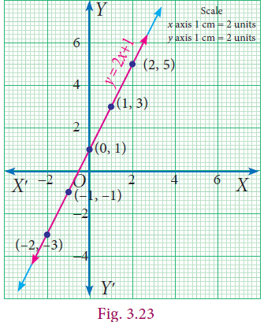
Example 3.47 Th e perimeter of a rectangle is 36 metres, and the length is 2 metres more than three times the width. Find the dimension of rectangle by using the method of graph.
Solution Let us form equations for the given statement.
Let us consider l and b as the length and breadth of the rectangle respectively.
Now let us frame the equation for the first statement.
Perimeter of rectangle = 36
2 (l+b)=36
2 in bracket l plus b
l plus b equal 36/2
l+b=36/ 2
l=18-b... (1) L is equal 18 minus b
b |
minus2 |
4 |
5 |
8 |
18 |
18 |
18 |
18 |
18 |
minusb |
minus2 |
minus4 |
minus5 |
minus8 |
l=18-b L is equal 18 minus b
|
16 |
14 |
13 |
10 |
Points: (2,16), (4,14), (5,13), (8,10)

The second statement states that the length is 2 metres more than three times the width which is a straight line written as l =3b+2... (2)
Now we shall form table for the above equation (2).
b |
2 |
4 |
5 |
8 |
3b |
6 |
12 |
15 |
24 |
2 |
2 |
2 |
2 |
2 |
l=3b+2 l is equal to 3b plus 2 |
8 |
14 |
17 |
26 |
Points: (2,8), (4,14), (5,17), (8,26)
The solution is the point that is common to both the lines. Here we find it to be (4,14). We can give the solution to be b = 4, l = 14.
Verification :
2(l+b) = 36...(1) 2 bracket I plus b equal 36
2(14+4) = 36
2 × 18 = 36
36 = 36 true
l = 3b + 2...(2)
14 = 3(4) +2
14 = 12 + 2
14 = 14 true
2 bracket I plus b equal 36 I = 3b + 2...(2)
l is equal to 3 b plus 2
2(14 plus 4) equal 36 14 equal 3 multiply 4 plus 2
2 multiply 18 equal 36 14 equal 12 + 2
36 equal 36 true 14 equal 14 true
Exercise 3.10
1. Draw the graph for the following
(i) y=2 x (ii) y=4x-1 (iii)y=93/20x+3 (iv) 3x+2 y = 14
1. y = 2 x 2. y = 4x-1 (3 ) y = 93/20x+3 (4 ) 3x+2 y = 14
1. Y equal 2 x 2. Y equal 4 x minus 1 3. y equal 93 by 20x plus 3 4 . 3 x plus 2 y equal 14
2.Solve graphically
(i) x+y=7; x-y=3
(ii)3x+2y=4;9x+6y-12=0
(iii)x/2+y/4=1; x/2+y/4=2
(iv) x-y=0; y+3 = 0
(v)y=2x+1; y+3x-6=0
(vi) x = –3; y = 3
3.Two cars are 100 miles apart. If they drive towards each other they will meet in 1 hour. If they drive in the same direction they will meet in 2 hours. Find their speed by using graphical method.
Some special terminology
We found that the graphs of equations within a system tell us how many solutions there for that system are. Here is a visual summary.


Solving by Substitution Method
In this method we substitute the value of one variable, by expressing it in terms of the other variable to reduce the given equation of two variables into equation of one variable (in order to solve the pair of linear equations). Since we are substituting the value of one variable in terms of the other variable, this method is called substitution method.
The procedure may be put shortly as follows:
Step 1: From any of the given two equations, find the value of one variable in terms of the other.
Step 2: Substitute the value of the variable, obtained in step 1 in the other equation and solve it.
Step 3: Substitute the value of the variable obtained in step 2 in the result of step 1 and get the value of the remaining unknown variable.
Example 3.48 Solve the system of linear equations x y + = 316 and 24 x y − = by substitution method.
Solution
Given x y + = 316... (1)
2x – y = 4... (2)
2x - y = 4. equation 2)
X plus 3y equal 16.. equation 1
2x minus y equal 4. .. equation 2
Step 1 |
Step 2 |
Step 3 |
Step 4 |
From equation (2) 2x −y= 4 –y = 4–2x Y= x − 24...(3) 2x minus y equal 4 minus y equal 4 minus 2x Y equal x minus 24. ..3)
|
Substitute (3) in (1) x+3y= 16 x+3(2x -4) = 16 x+6x-12=16 7x=28 x = 4 x plus 3y equal 16 x plus 3 bracket 2x minus 4 equal 16 x plus 6x minus 12 equal 16 7x equal 28 x equal 4 |
Substitute x = 4 in (3) Y= 2x-4 y =2(4) −4 y = 4 Y equal 2x minus 4 y equal 2 bracket 4 minus 4 y equal 4 |
X=4 and y=4 |
Example 3.49 Th e sum of the digits of a given two-digit number is 5. If the digits are reversed, the new number is reduced by 27. Find the given number.
Solution
Let x be the digit at ten’s place and y be the digit at unit place.
Given that x+ y= 5 …… (1)
|
Tens |
Ones |
Value |
Given Number |
X |
Y |
10x+y 10x plus y |
New Number(after reversal) |
Y |
X |
10y+x 10y plus x |
Verification :
sum of the digits = 5
x + y = 5
4 + 1 = 5
5 = 5 true
Original number – reversed number = 27
41 - 14 = 27
27 = 27 true
Given, Original number − reversing number = 27
(10x+y)-(10y+x) =27
10x-x+y-10 y=27
9x-9y=27
x- y= 3... (2)
Also, from (1), y = 5 – x... (3)
Substitute (3) in (2) to get x –(5-x)=3
x −5 +x = 3
2x =8
x = 4
x = 4
Substituting y x = 4 in (3), we get y=5-x=5-1
y = 1
Thus, 10x+y=10X4+1=40+1=41.
Therefore, the given two-digit number is 41.
Example 3.49 solution x plus 5 equal 5 equation 1
x minus 5 equal 3 equation 2
y equal 5 minus x equation 3
3 equations simplify
x value 4 check progress :5 equal 5 verified Therefore, the given two-digit number is 41.
Exercise 3.11
1.Solve, using the method of substitution
(i) 2x-3y=7;5x+y=9
(ii) 1.5x+0.1y=6.2;3x-0.4y=11.2
(iii) 10% of x+20% of y=24;3x-y=20
(iv) √2x-√3y=1;√3x-√8y=0
.2x minus 3y equal 7 ; 5x plus y equal 9
1.5 x plus 0.1y equal 6.2 ; 3x minus 0.4 y equal 11.2
10% of x plus 20% of y equal 24; 3x minus y equal 20
root 2 x minus root 3 y equal 1; root 3 x minus root 8 y equal 0
ANSWER.(i) (2, −1) (ii) (4,2) (iii) (40,100) (iv) (√8, √3)
2.Raman’s age is three times the sum of the ages of his two sons. After 5 years his age will be twice the sum of the ages of his two sons. Find the age of Raman.
ANSWER 45
3.The middle digit of a number between 100 and 1000 is zero and the sum of the other digit is 13. If the digits are reversed, the number so formed exceeds the original number by 495. Find the number.
ANSWER 409
Solving by Elimination Method Th is another algebraic method for solving a pair of linear equations. Th is method is more convenient than the substitution method. Here we eliminate (i.e., remove) one of the two variables in a pair of linear equations, so as to get a linear equation in one variable which can be solved easily.
The various steps involved in the technique are given below:
Step 1: Multiply one or both of the equations by a suitable number(s) so that either the coefficients of first variable or the coefficients of second variable in both the equations become numerically equal.
Step 2: Add both the equations or subtract one equation from the other, as obtained in step 1, so that the terms with equal numerical coefficients cancel mutually.
Step 3: Solve the resulting equation to find the value of one of the unknowns.
Step 4: Substitute this value in any of the two given equations and find the value of the other unknown.
Example 3.50
Given 4a+3b=65 and a+2b =35 solve by elimination method.
4a plus 3b is equal to 65. equation 1
a plus 2b is equal to 35. equation 2
Solution
Verification :
4a+3b = 65...(1)
4(5)+3(15) = 65
20 + 45 = 65
65 = 65 True
a + 2b = 35...(2)
5 + 2(15) = 35
5+30 = 35
35 = 35 True
Given, 4a+3b=65 .....(1 )
a+2b = 35.....(2 )
4a plus 3b is equal to 65. equation 1
a plus 2b is equal to 35. Equation 2
(2) × 4 gives 4a + 8b = 140
(–) (–) (–)
Already (1) is 4a + 3b = 65
5b = 75 which gives b = 15 Put b = 15 in (2):
a + 2(15) = 35 which simplifies to a = 5.
Thus, the solution is a = 5, b = 15.
a value 5, b value 15. 4a plus 3b is equal to 65. Substitute we get
65 equal 65 true
Example 3.51 Solve for x and y: 8x-3y=5xy, 6x-5y=-2xy by the method of elimination.
Solution
The given system of equations are 8x+3y=5xy...(1)
6x-5y=-2xy...(2)
8x minus 3y equal 5 x y. equation 1
6x minus 5y equal minus 2xy equation 2
Observe that the given system is not linear because of the occurrence of xy term. Also note that if x =0, then y =0 and vice versa. So, (0,0) is a solution for the system and any other solution would have both x≠0 and y≠0.
Let us take up the case where x≠0 y≠0.
Dividing both sides of each equation by xy,
8x/xy-3y/xy= 5xy/xy we get, 8/y- 3/x= 5...(3)
6x/xy-5y/xy=-2xy/xy 6/y- 5/x=-2...(4)
Let a=1/ x, b=1/ y.
(3)&(4) respectively become, 8b-3a=5...(5)
6b-5a=-2...(6)
which are linear equations in a and b.
To eliminate a, we have, (5) X5 40b-15a=25.....(7)
(6)X3 18b-15a=-6.....(8)
Now proceed as in the previous example to get the solution (11/23,22/23).
Thus, the system have two solutions (11/23,22/23)and (0,0).
open bracket 11 by 23 comma 22 by 31 close bracket and open bracket 0 comma 0 close bracket
Exercise 3.12
1.Solve by the method of elimination
(i) 2x–y = 3; 3x + y = 7 (ii) x–y = 5; 3x + 2y = 25
(iii) x/10+y/5=14;x/8+y/6=15 (iv) 3(2x+y)=7xy;3(x+3y)=11xy
(v) 4/x+5y=7 ;3/x+4y=5 (vi) 13x+11y=70;11x+13y=74
6 Bracket 13x plus 11y equal 7 0; 11x plus 3 y equal 74
ANSWERS 1.(i) (2,1) (ii) (7,2) (iii) (80,30) (iv) (1, 3/2)
(v) (1/3, 1) (vi) (2,4)
2.The monthly income of A and B are in the ratio 3:4 and their monthly expenditures are in the ratio 5:7. If each saves ₹ 5,000 per month, find the monthly income of each.
ANSWER (2) ₹30000, ₹40000
3.Five years ago, a man was seven times as old as his son, while five year hence, the man will be four times as old as his son. Find their present age.
Solving by Cross Multiplication Method
ANSWER (3) 75, 15
The substitution and elimination methods involves many arithmetic operations, whereas the cross-multiplication method utilize the coefficients effectively, which simplifies the procedure to get the solution. This method of cross multiplication is so called because we draw cross ways between the numbers in the denominators and cross multiply the coefficients along the arrows ahead. Now let us discuss this method as follows:
Suppose we are given a pair of linear simultaneous equations such as
a1x+ b1y- c1=0...(1)
a2x+ b2y- c2=0...(2)
a1 multiply x plus b1 multiply y plus C1 equal 0. ..(1)
a2 multiply x plus b2 multiply y plus C2 equal 0. .. (2)
such that a1/a2 ≠ b1/b2.We can solve them as follows :
(1) × b2 – (2) × b1 gives b2(a1x+ b1y-c1)-b1(a2x+ b2y-c2)=0
X(a1b1-a2b2)=(b1c1-b2c2)
X=( b1c1-b2c2)/( a1b1-a2b2)
(1) × a2 – (2) × a1 similarly can be considered and that will simplify to
Y=( c1a2-c2a1)/( a1b2-a2b1)
Hence the solution for the system is
X=(b1c2-b2c1)/(a1b2-a2b1),
y=(c1a2-c2a1)/(a1b2-a2b1),
This can also be written as
x/b1c2-b2c1=y/c1a2-c2a1=1/a1b2-a2b1
which can be remembered as
a1/a2 ≠ b1/b2 a1 by a2 is not equal to b1 by b2 given a pair of linear simultaneous equations we get solutions x by b 1 c 2 minus b 2 c 1 equal y by c 1 a 2 minus c 2 a 1 equal 1 by a 1 b 2 minus a 2 b 1

Example 3.52 Solve 3x-4y =10 and 4x+3y=5 3x minus 4y equal10 and 4x plus 3y equal 5 by the method of cross multiplication.
Solution
The given system of equations are
3x-4y=10 -> 3x-4y-10= 0.....(1 )
4x+3y=5 -> 4x+3y-5= 0.....(2 )
For the cross-multiplication method, we write the co-efficients as

Verification :
3x–4y = 10...(1)
3(2)–4(–1) = 10
6 + 4 = 10
10 = 10 True
4x + 3y = 5...(2)
4(2) + 3(–1) = 5
8–3 = 5
5 = 5 True
Example 3.52 explanation 3x minus 4y equal10 and 4x plus 3y equal 5 by the method of cross section solution we get x value 2, y value minus 1 verification 5 equal 5
x/(-4)(-5)-(3)(-10)=y/(-10)(4)-(-5)(3)=1/(3)(3)-(4)(-4)
X/(20)-(-30)=y/(-40)-(-15)=1/(9)-(-16)
X/20+30=y/-40+15=1/9+16
x/50=y/-25=1/25
Therefore, we get x = 50/25 ; y = −25/25
x = 2; y = −1
Thus the solution is x = 2, y = –1.
Example 3.53 Solve by cross multiplication method :
3x+5y =21;
-7x-6y =-49
3x plus 5y minus 21 equal 0;
minus7x minus6y plus49 equal 0
Solution
The given system of equations are 3x+5y =21;
-7x-6y =-49
Now using the coefficients for cross multiplication, we get,
Verification :
3x+5y = 21...(1)
3(7)+5(0) = 21
21 + 0 = 21
21 = 21 True
–7x – 6y = –49...(2)
–7(7) – 6(0) = –49
–49 = –49
–49 = –49 True

x/(5)(49)(-6)(-21)=y/(-21)(-7)-(49)(3)=1/(3)(-6)-(-7)(5)
X/119=y/0=1/17
x/ 119= 1/ 17 , y/0 =1 /17
x = 119 /17 , y = 0 /17
x = 7 , y = 0
example 3.53 answer x value 7 and y value 0 checking progress minus 49 equal minus 49
Note
Here y/0= 1/ 17 = is to mean y = 0/ 17. Th us, y/0 is only a notation, and it is not division by zero. It is always true that division by zero is not defined.
Exercise 3.13
1. Solve by cross-multiplication method
(i) 8x-3y=12; 5x= 2y+7 (ii) 6x+7y-11=0; 5x+ 2y=13 (iii) 2/x+ 3/y=5; 3/x- 1/y+ 9= 0.
. 8x- minus 3y =equal 12; 5x equal = 2y plus+7 (ii) 6x plus +7y- minus11 equal= 0; 5x plus+ 2y equal= 13 (iii) 2/ by x plus+ 3 by/y = equal 5; 3/by x- minus1/ by y plus plus+ 9 equal= 0.
2.Akshaya has 2-rupee coins and 5-rupee coins in her purse. If in all she has 80 coins totalling ₹ 220, how many coins of each kind does she have.
3. It takes 24 hours to fill a swimming pool using two pipes. If the pipe of larger diameter is used for 8 hours and the pipe of the smaller diameter is used for 18 hours. Only half of the pool is filled. How long would each pipe take to fill the swimming pool.
Exercise 3.13 SOLUTION
1.(i) (3,4) (ii) (3, −1) (iii) (– ½,1/3)
(2) Number of 2-rupee coins 60; Number of 5 rupee coins 20
(3) Larger pipe 40 hours; Smaller pipe 60 hours
Consider linear equations in two variables say
a1x+ b1y+ c1=0 ...(1) a1 x plus b1 y plus c1 equal 0
a2x+ b2y+ c2=0 ...(2) a2 x plus b2y plus c2 equal o where a1,a2, b1, b2, c1and c2 are real numbers. Then the system has :
(i) a unique solution if a1/a2 ≠b1,b2 (Consistent) a1 by a2 is not equal to b1 by b2
(ii) an Infinite number of solutions if a1/a2= b1/b2= c1/c2 (Consistent) a1 by a2 is equal to b1 by b2 is equal to c1 by c2
(iii) no solution if a1/a2= b1/b2≠ c1/c2(Inconsistent) a1 by a2 is equal to b1 by b2 is not equal to c1 by c2
Example 3.54 Check whether the following system of equation is consistent or inconsistent and say how many solutions we can have if it is consistent.
(i) 2x – 4y = 7 (ii) 4x + y = 3 (iii) 4x +7 = 2 y x – 3y = –2 8x + 2y = 6 2x + 9 = y
2 x minus 4 y equal 7
X minus 3 y equal minus 2
4 X plus y equal 3
8 x plus 2 y equal 6
4 x plus 7 equal 2 y
2 x plus 9 Equal y
S.No |
Pair of lines |
a1/a2 |
b1/b2 |
c1/c2 |
Compare the ratios |
Graphical representation |
Algebraic interpretation |
(i) |
2x–4y = 7 x – 3y = –2 2 x minus 4 y equal 7 X minus 3 y equal minus 2
|
2/1=2 2 by 1 equal 2 |
-4/-3= 4/3 4 by 3 |
7/-2=-7/2 |
a1/a2 ≠b1/b2 a1 by a2 is not equal to b1 by b2 |
Intersecting lines |
Unique solutions |
(ii) |
4x+y = 3 8x +2y =6 4 X plus y equal 3 8 x plus 2 y equal 6
|
4/8= 1/2 |
½ 1 by 2 |
3/6=1/2 |
a1/a2 =b1/b2=c1/c2 |
Coinciding lines |
Infinite many solutions |
(iii) |
4x+7=2y 2x +9=y 2x +9 = y 4 x plus 7 equal 2 y 2 x plus 9 Equal y |
4/2=2 |
2/1=2 2 by 1 equal 2 |
7/9 |
a1/a2 =b1/b2≠c1/c2 |
Parallel lines |
No solutions |
Example 3.55 Check the value of k for which the given system of equations kx+2y=3; 2x-3y =1 has a unique solution.
Solution
Given linear equations are
Kx+2y=3-----------(1)[ a1x+ b1y+ c1=0 ]
2x-3y =1------------(2)[ a2x+ b2y+ c2=0 ]
Here a1=k, b1=2, a2= 2, b2=-3;
For unique solution we take a1/a2 ≠b1,b2; therefore k/2 ≠2/-3; k ≠4/-3 ,
that is k ≠-equal 4/3.
Example 3.56
Find the value of k, for the following system of equation has infinitely many solutions. 2x-3y=7;(k+2)x-2(2k+1)y=3(2k-1)
Solution
Given two linear equations are
2x-3y=7 [a1x+ b1y+ c1=0 ]
(k+2)x-2(2k+1)y=3(2k-1) [a2x+ b2y+ c2=0]
Here a1=2,b1=-3,a2=(k+2),b2=-(2k+1),c1=7,c2=3(2k-1)
For infinite number of solution, we consider a1/a2=b1/b2=c1/c2
2/k+2=-3/-(2k+1)=7/3(2k-1) -3/-(2k+1)=7/3(2k-1)
2/k+2=-3/-(2k+1) 9/(2k-1)=7(2k+1)
4k+2=3k+6 18k-9=14k+7
k = 4 4k=16
k=4
2 x minus 3 y equal 7 k plus 2 multiply x minus 2 k plus 1 multiply y equal 3 multiply 2 k minus 1 are the solutions has many solutions k value 4
Example 3.57 Find the value of k for which the system of linear equations 859x y + = ; kx y += 1015 has no solution.
Solution Given linear equations are
8x+5y=9 [a1x+ b1y+ c1=0 ]
Kx+10y=15 [a2x+ b2y+ c2=0]
Here a1=8,b1=5,a2=9,b2=10,c1=9,c2=15
For no solution, we know that a1/a2= b1/b2≠ c1/c2 and so, 8 /k=5/10≠9/15
80k =5k
k = 16
Given 8 x plus 5 y equal 9 k x plus 10 y equal 15 for the following system of equation has no solution means a1 value 8 and a1 value 8 and a2 value 9 and b1 value 5 and b2 value 10 and c 2 value 15 and c1 value 9 k value found to be 16
Activity-3
1.Find the value of K for the given system of linear equations satisfying the condition below:
(i)2x+ky=1;3x-5y=7 2x plus Ky equal one 3 x minus 5 y equal 7has a unique solution
(ii)Kx+3y=3;12x+ky=6 kx plus 3y equal three 12 x plus k y equal 6 has no solution
(iii)(k-3)x+3y=k;kx+ky=12 k minus 3 x plus 3y equal k kx plus Ky equal 12has infinite number of solution
2.Find the value of a and b for which the given system of linear equation has infinite number of solutions 3x-(a+1)y=2b-1,5X+(1-2a)y=3b
Activity-4
For the given linear equations, find another linear equation satisfying each of the given condition
Given linear equation |
Another linear equation |
||
Unique solutions |
Infinite many solutions |
No solution |
|
2x+plus 3y=7 |
3x+ plus 4y=8 |
4x+ plus 6y=14 |
6x+ plus 9y=15 |
3x- minus 4y=5 |
|
|
|
y-minus4x=2 |
|
|
|
5y- minus 2x=8 |
|
|
|
Exercise 3.14
Solve by any one of the methods
1.The sum of a two-digit number and the number formed by interchanging the digits is 110. If 10 is subtracted from the first number, the new number is 4 more than 5 times the sums of the digits of the first number. Find the first number.
2.The sum of the numerator and denominator of a fraction is 12. If the denominator is increased by 3, the fraction becomes 1/2. Find the fraction.
3.,ABCD is a cyclic quadrilateral such that ∠A = (4y + 20)° , ∠B = (3y –5)° , ∠C =(4x) ° and D = ∠ (7x + 5) °. Find the four angles.
4,ABCD is a cyclic quadrilateral such that ∠A = (4y + 20) °, angle A Equal bracket 4 y plus 20 bracket close Power degree comma ∠B = (3y –5) °, angle b Equal bracket 3 y minus 5 bracket close Power degree comma ∠C = (4x) ° angle c Equal bracket 4 x bracket close Power degree comma and∠ D = (7x + 5) ° angle D Equal bracket 7 X plus 5 bracket close Power degree comma Find the four angles.
4.On selling a T.V. at 5% gain and a fridge at 10% gain, a shopkeeper gains ₹2000. But if he sells the T.V. at 10% gain and the fridge at 5% loss, he gains Rs.1500 on the transaction. Find the actual price of the T.V. and the fridge.
Two numbers are in the ratio 5 : 6. If 8 is subtracted from each of the numbers, the ratio becomes 4 : 5. Find the numbers.
6. Indians and 4 Chinese can do a piece of work in 3 days. While 2 Indians and 5 Chinese can finish it in 4 days. How long would it take for 1 Indian to do it? How long would it take for 1 Chinese to do it?
ANSWERS Exercise 3.14
Exercise 3.14
1. 64
2. 57
3. ∠A=120 °, ∠B= 70°, ∠c = 60°, ∠D = 110°
4. Price of TV = ₹20000; Price of fridge = ₹10000
5. 40, 48
6. 1 Indian – 18 days; 1 Chinese – 36 days
Exercise 3.15

Multiple choice questions
1. If x3 + 6x2 + kx + 6 is exactly divisible by (x + 2), then k= ?
(1) –6
(2) –7
(3) –8
(4) 11
2. The root of the polynomial equation 2x + 3 = 0 is
(1) 31
(2) – 31
(3) – 23
(4) – 32
3. The type of the polynomial 4–3x3 is
(1) constant polynomial
(2) linear polynomial
(3) quadratic polynomial
(4) cubic polynomial.
4. If x51 + 51 is divided by x + 1, then the remainder is
(1) 0
(2) 1
(3) 49
(4) 50
5. Th e zero of the polynomial 2x+5 is
(1) 25
(2) – 25
(3) 52
(4) – 52
6. Th e sum of the polynomials p(x) = x3 – x2 – 2, q(x) = x2–3x+ 1
(1) x3 – 3x – 1
(2) x3 + 2x2 – 1
(3) x3 – 2x2 – 3x
(4) x3 – 2x2 + 3x –1
7. Degree of the polynomial (y3–2)(y3 + 1) is
(1) 9
(2) 2
(3) 3
(4) 6
8. Let the polynomials be
(A) –13q5 + 4q2 + 12q
(B) (x2 +4 )(x2 + 9)
(C) 4q8 – q6 + 2
(D)-5/7y12+ y3+ y5 Then ascending order of their degree is
(1) A,B,D,C
(2) A,B,C,D
(3) B,C,D,A
(4) B,A,C,D
9. If p (a) = 0 then (x-1) is a DASH of p(x)
(1) divisor
(2) quotient
(3) remainder
(4) factor
10. Zeros of (2-3x) is DASH
(1) 3
(2) 2
(3) 2/ 3
(4) 3 /2
11. Which of the following has x -1 as a factor?
(1) 2x-1
(2) 3x-3
(3) 4x-3
(4) 3x-4
12. If x - 3 is a factor of p (x), then the remainder is
(1) 3
(2) –3
(3) p(3)
(4) p(–3)
13. (x+y )(x2-xy+y2 is equal to
(1) (x+y)3
(2) (x-y)3
(3) x3+ y3
(4) x3- y3
14.(a+b-c)2 is equal to DASH
(1) (a-b+ c)2
(2) (-a-b+ c)2
(3) (a+b+ c)2
(4) (a-b- c)2
15.If (x +5)and (x -3) are the factors of ax2+ bx+ c, then values of a, b and c are
(1) 1,2,3
(2) 1,2,15
(3) 1,2, −15
(4) 1, −2,15
16.Cubic polynomial may have maximum of DASH linear factors
(1) 1
(2) 2
(3) 3
(4) 4
17.Degree of the constant polynomial is DASH
(1) 3
(2) 2
(3) 1
(4) 0
19.Find the value of m from the equation 2x+3y= m. If it’s one solution is x = 2 and
y= −2.
(1) 2
(2) −2
(3) 10
(4) 0
20.Which of the following is a linear equation
(1) x+1/ x= 2
(2) x(x-1)=2
(3) 3x+5=2/3
(4) x3-x=5
21.Which of the following is a solution of the equation 2x-y=6
(1) (2,4)
(2) (4,2)
(3) (3, −1)
(4) (0,6)
22.If (2,3) is a solution of linear equation 2x+3y= k then, the value of k is
(1) 12
(2) 6
(3) 0
(4) 13
23.Which condition does not satisfy the linear equation ax+ by+ c= 0
(1) a≠0 , b = 0
(2) a = 0 , b ≠ 0
(3) a = 0 , b = 0 ,
(4)c ≠0 (4) a ≠0 , b ≠0
24.Which of the following is not a linear equation in two variable
(1) ax+ by+ c= 0
(2) 0x+ 0y+ c= 0
(3) 0x+ by+ c= 0
(4) ax+ 0y+ c= 0
25.The value of k for which the pair of linear equations 4x+6y-1=0 and 2x+ky-7=0 represents parallel lines is
(1) k = 3
(2) k = 2
(3) k = 4
(4) k = −3
26.A pair of linear equations has no solution then the graphical representation is


27.If a1/a2≠b1/b2 where a1x+b1y+ c1=0 and a2x+b2y+ c2=0 then the given pair of
linear equation has DASH solution(s)
(1) no solution
(2) two solutions
(3) unique
(4) infinite
28.If a1/a2 =b1/b2 ≠c1/c2 where a1x+b1y+ c1=0 and a2x+b2y+ c2=0 then the given
pair of linear equation has DASH solution(s)
(1) no solution
(2) two solutions
(3) infinite
(4) unique
29.GCD of any two prime numbers is DASH
(1) −1
(2) 0
(3) 1
(4) 2
30.The GCD of x4- y4 and x2- y2 is
(1) x4- y4
(2) x2- y2
(3) (x+y)2
(4) (x+ y)4
Exercise 3.15 ANSWERS
1. (4) 2. (3) 3. (4) 4. (4) 5. (2) 6. (1) 7. (4) 8. (4) 9. (4) 10. (3)
11. (2) 12. (3) 13. (3) 14. (2) 15. (3) 16. (3) 17. (4) 18. (2) 19. (3) 20. (2)
21. (4) 22. (3) 23. (2) 24. (1) 25. (2) 26. (3) 27. (1) 28. (3) 29. (2)
Points to remember:
Remainder Theorem:
Factor Theorem:
Simultaneous linear equations consists of two or more linear equations with the same variables.


Inspiration is needed in geometry just as much as in poetry. - Alexander Pushkin


Thales (BC (BCE) 624 – 546)
Thales (Pronounced THAYLEES) was born in the Greek city of Miletus. He was known for theoretical and practical understanding of geometry, especially triangles. He used geometry to solve many problems such as calculating the height of pyramids and the distance of ships from the seashore. He was one of the so-called Seven Sagas or Seven Wise Men of Greece and many regarded him as the first philosopher in the western tradition.
Learning Outcomes
In geometry, we study shapes. But what is there to study in shapes, you may ask. Think first, what are all the things we do with shapes? We draw shapes, we compare shapes, we measure shapes. What do we measure in shapes?

Take some shapes like this:
Fig. 4.1 In both of them, there is a curve forming the shape: one is a closed curve, enclosing a region, and the other is an open curve. We can use a rope (or a thick string) to measure the length of the open curve and the length of the boundary of the region in the case of the closed curve.

Curves are tricky, aren’t they? It is so much easier to measure length of straight lines using the scale, isn’t it? Consider the two shapes below.

Now we are going to focus our attention only on shapes made up of straight lines and on closed figures. As you will see, there is plenty of interesting things to do. Fig.4.2 shows an open figure.
Figure. 4.3
We not only want to draw such shapes, we want to compare them, measure them and do much more. For doing so, we want to describe them. How would you describe these closed shapes? (See Fig ure4.3) They are all made up of straight lines and are closed.
Plumbers measure the angle between connecting pipes to make a good fitting. Wood workers adjust their saw blades to cut wood at the correct angle. Air Traffic Controllers (ATC) use angles to direct planes. Carom and billiards players must know their angles to plan their
shots. An angle is formed by two rays that share a common end point provided that the two
rays are non-collinear.


Complementary Angles
Two angles are Complementary if their sum is 90° degree. For example, if ∠ABC=64° degree and ∠DEF=26° degree, then angles ∠ABC and ∠DEF are complementary to each other because angle ∠ABC plus angle ∠DEF =equal 90° degree


Supplementary Angles
Two angles are Supplementary if their sum is 180°. For example, if ∠ABC=110°degree and ∠XYZ=70°
Here ∠ABC + ∠XYZ = 180°
Angle ABC plus Angle XYZ equal 180 degrees
∴∠ABC and ∠XYZ are supplementary to each other
Angle ABC and Angle XYZ are supplementary to each other


Adjacent Angles

Two angles are called adjacent angles if
1) They have a common vertex.
(ii) They have a common arm.
(iii) The common arm lies between the two non-common arms.
Linear Pair of Angles


If a ray stands on a straight line then the sum of two adjacent angle is 180°. We then say that the angles so formed is a linear pair.
∠AOC + ∠BOC=180° Angle AOC plus Angle BOC equal 180 degree
∴∠AOC and ∠BOC Angle AOC and Angle BOC
form a linear pair
∠XOZ + ∠YOZ = 180° Angle XOZ plus Angle YOZ equal 180 degree
∠XOZ and ∠YOZ Angle XOZ and Angle YOZ form a linear pair
Vertically Opposite Angles
If two lines intersect each other, then vertically opposite angles are equal.
In this figure ∠POQ = ∠SOR Angle POQ equal Angle SOR
∠POS = ∠QOR Angle POS equal Angle QOR
Angle POS equal Angle QOR

4.point2.point 1 Transversal

A line which intersects two or more lines at distinct points is called a transversal of those lines.

Case (i) When a transversal intersect two lines, we get eight angles.
In the figure the line l is the transversal for the lines m and n
(i) Corresponding Angles: ∠1 and ∠5 comma ∠2 and ∠6 comma ∠3 and ∠7 comma ∠4 and ∠8
(ii) Alternate Interior Angles: ∠4 and ∠6 comma ∠3 and ∠5
(iii) Alternate Exterior Angles: ∠1 and ∠7 comma ∠2 and ∠8
(iv) ∠4 and ∠5,∠3 and ∠6 are interior angles on the same side of the transversal.
(v) ∠1 and ∠8, ∠2 and ∠7 are exterior angles on the same side of the transversal.
Romen letter 1 Corresponding Angles:∠1 angle 1 comma and ∠5 angle 5 comma ∠2 angle 2 comma and ∠6, angle 6 comma ∠3 angle 3 comma and ∠7, angle 7 comma ∠4 angle 4 comma and angle 8 comma ∠8
Romen letter 2 Alternate Interior Angles: ∠4 angle 4 comma and∠6, angle 6 comma ∠3 angle 3 comma and ∠5 angle 5 comma
Romen letter 3 Alternate Exterior Angles:∠1 angle 1 comma and ∠7, angle 7 comma ∠2 angle 2 comma and ∠8 angle 8 comma
Romen letter 4 angle 4 comma ∠4 and ∠5, angle 5 comma ∠3 angle 3 comma and ∠6 angle 6 comma are interior angles on the same side of the transversal.
Romen letter 5 angle 1 comma ∠1 and ∠8, angle 8 comma ∠2 angle 2 comma and ∠7 angle 7 comma are exterior angles on the same side of the transversal
Case (ii) If a transversal intersects two parallel lines. The transversal forms different pairs of angles.

4.point2point.2 Triangles
Activity 1 1. Take three different colour sheets; place one over the other and draw a triangle on the top sheet. Cut the sheets to get triangles of different colour which are identical. Mark the vertices and the angles as shown. Place the interior angles ∠1, ∠2 and ∠3 angle 1 comma ∠2 angle 2 comma and ∠3 angle 3 comma on a straight line, adjacent to each other, without leaving any gap. What can you say about the total measure of the three angles ∠1, ∠2 and ∠3? ∠1, angle 1 comma ∠2 angle 2 comma and ∠3 angle 3 comma


Can you use the same figure to explain the “Exterior angle property” of a triangle?
If a side of a triangle is stretched, the exterior angle so formed is equal to the sum of the two interior opposite angles. That is d=a+b d equal a pius b (see FigURE 4.14)

4.point2.point3 Congruent Triangles
Two triangles are congruent if the sides and angles of one triangle are equal to the corresponding sides and angles of another triangle.
Rule |
Diagrams |
Reason |
SSS |
|
AB = PQ AB EQUAL PQ BC = QR BC EQUAL QR AC = PR AC EQUAL PR ΔABC ≅ ΔPQR TRIANGLE ABC EQUAL TRIANGLE PQR |
SAS |
|
AB = XY AB EQUAL XY ∠BAC = ∠YXZ Angle BAC EQUAL YXZ AC = XZ AC EQUAL XZ ΔABC ≅ ΔXYZ TRIANGLE ABC Congruent TRIANGLE XYZ |
ASA |
|
∠A = ∠P Angle A equal P AB = PQ AB equal PQ ∠B = ∠Q angle B Equal angle Q ΔABC ≅ ΔPQR TRIANGLE ABC Congruent TRIANGLE PQR |
AAS |
|
∠A = ∠M angle A Equal angle M ∠B = ∠N angle B Equal angle N BC = NO BC Equal NO TRIANGLE ΔABC ≅ Congruent TRIANGLE ΔMNO TRIANGLE ABC Congruent TRIANGLE MNO
|
RHS |
|
∠ACB = ∠PRQ = 90°(R) 90°( H ) angle ACB equal angle PRQ equal 90 degree செ AB = PQ hypotenuse (H) AB equal PQ AC = PR (S) ΔABC ≅ ΔPQR TRIANGLE ABC Congruent TRIANGLE mno |
Exercise 4.1


ANSWER 1. (i) 70 degree Congruent TRIANGLE (ii) 288° degree (iii) 89° degree
ANSWER 2. 30° degree, 60° degree, 90° 5. 80° degree, 85 ° degree, 15 ° degree
3. Consider the given pairs of triangles and say whether each pair is that of congruent triangles. If the triangles are congruent, say ‘how’; if they are not congruent say ‘why’ and also say if a small modification would make them congruent:


4. ΔABC and ΔDEF are two triangles in which
AB=DF, angle ∠ACB=70°, angle ∠ABC=60°; angle ∠DEF=70° and angle ∠EDF=60°.
Prove that the triangles are congruent.
Triangle ABC and Triangle DEF are two triangles in which AB equal DF and L∠ACB equal70°, angle ABC equal 60°, angle DEF equal 70° and angle EDF = 60° Prove that the triangles are congruent
5. Find all the three angles of the ΔABC

Activity 2
Four Tamil Nadu State Transport buses take the following routes. The first is a one-way journey, and the rest are round trips. Find the places on the map, put points on them and connect them by lines to draw the routes. The places connecting four different routes are given as follows.

1. Nagercoil, Tirunelveli, Virudhunagar, Madurai
(ii) Sivagangai, Puthukottai, Thanjavur, Dindigul, Sivagangai
(iii) Erode, Coimbatore, Dharmapuri, Karur, Erode
(iv) Chennai, Cuddalore, Krishnagiri, Vellore, Chennai
You will get the following shapes.


Label the vertices with city names, draw the shapes exactly as they are shown on the map without rotations.
We observe that the first is a single line, the four points are collinear. The other three are closed shapes made of straight lines, of the kind we have seen before. We need names to call such closed shapes, we will call them polygons from now on.

Fig. 4.20
How do polygons look? They have sides, with points at either end. We call these points as vertices of the polygon. The sides are line segments joining the vertices. The word poly stands for many, and a polygon is a many-sided figure.
How many sides can a polygon have? One? But that is just a line segment. Two ? But how can you get a closed shape with two sides? Three? Yes, and this is what we know as a triangle. Four sides?
Note
Concave polygon: Polygon having any one of the interior angle greater than 180o
Convex Polygon: Polygon having each interior angle less than 180 degree
(Diagonals should be inside the polygon)
Squares and rectangles are examples of polygons with 4 sides, but they are not the only ones. Here (Fig. 4.20) are some examples of 4-sided polygons. We call them quadrilaterals.
1. A parallelogram is a quadrilateral in which opposite sides are parallel and equal.
2. A rhombus is a quadrilateral in which opposite sides are parallel and all sides are equal.
3. A trapezium is a quadrilateral in which one pair of opposite sides are parallel.
Draw a few parallelograms, a few rhombuses (correctly called rhombii, like cactus and cacti) and a few trapeziums (correctly written trapezia).


The great advantage of knowing properties of quadrilateral is that we can see the relationships among them immediately.
For “not necessarily the other way” mathematicians usually say, “the converse is not true”. A smart question then is: just when is the other way also true? For instance, when is a parallelogram also a rectangle? Any parallelogram in which all angles are also equal is a rectangle. (Do you see why?) Now we can observe many more interesting properties. For instance
Note
You know bi-cycles and tricycles? When we attach bi or tri to the front of any word, they stand for 2 (bi) or 3 (tri) of them. Similarly, quadri stands for 4 of them. We should really speak of quadri-cycles also, but we don’t. Lateral stands for sideways, thus quadrilateral means a 4-sided figure. You know trilaterals; they are also called triangles !
After 4 ? We have: 5 – penta, 6 – hexa, 7 – hepta, 8 – octa, 9 – nano, 10 – deca. Conventions are made by history. Trigons are called triangles, quadrigons are called quadrilaterals. Continuing in the same way we get pentagons, hexagons, heptagons, octagons, nanogons and decagons. Beyond these, we have 11-gons, 12-gons etc. Perhaps you can draw a 23-gon !
ce, we see that a rhombus is a parallelogram in which all sides are also equal.
When all sides of a quadrilateral are equal, we call it equilateral. When all angles of a quadrilateral are equal, we call it equiangular. In triangles, we talked of equilateral triangles as those with all sides equal. Now we can call them equiangular triangles as well!
We thus have:
A rhombus is an equilateral parallelogram.
A rectangle is an equiangular parallelogram.
A square is an equilateral and equiangular parallelogram.
Here are two more special quadrilaterals, called kite and isosceles trapezium.


Progress Check
Answer the following question.
Romen letter 1 Are the opposite angles of a rhombus equal?
Romen letter 2 A quadrilateral is a DASH if a pair of opposite sides are equal and parallel.
Romen letter 3 Are the opposite sides of a kite equal?
Romen letter 4 Which is an equiangular but not an equilateral parallelogram?
Romen letter 5 Which is an equilateral but not an equiangular parallelogram?
Romen letter 6 Which is an equilateral and equiangular parallelogram?
Romen letter 7 DASH is a rectangle, a rhombus and a parallelogram.
Activity 3
Step – 1: Cut out four different quadrilaterals from coloured glazed papers.

Step – 2: Fold the quadrilaterals along their respective diagonals. Press to make creases. Here, dotted line represent the creases.


Step – 3: Fold the quadrilaterals along both of their diagonals. Press to make creases.

Fig. 4.26
We observe that two imposed triangles are congruent to each other. Measure the lengths of portions of diagonals and angles between the diagonals.
Also do the same for the quadrilaterals such as Trapezium, Isosceles Trapezium and Kite.
From the above activity, measure the lengths of diagonals and angles between the diagonals and record them in the table below:
S.No |
Name of the quadrilateral |
Length along diagonals |
Measure of angles |
||||||||
AC |
BD |
OA |
OB |
OC |
OD |
ANGLEAOB |
ANGLEBOC |
angleCOD |
∠DOA |
||
1 |
Trapezium |
|
|
|
|
|
|
|
|
|
|
2 |
Isosceles Trapezium |
|
|
|
|
|
|
|
|
|
|
3 |
Parallelogram |
|
|
|
|
|
|
|
|
|
|
4 |
Rectangle |
|
|
|
|
|
|
|
|
|
|
5 |
Rhombus |
|
|
|
|
|
|
|
|
|
|
6 |
Square |
|
|
|
|
|
|
|
|
|
|
7 |
Kite |
|
|
|
|
|
|
|
|
|
|
Activity 4

Angle sum for a polygon
Draw any quadrilateral ABCD.
Mark a point P in its interior.
Join the segments PA, PB, PC and PD.
You have 4 triangles now.
How much is the sum of all the angles of the 4 triangles question mark
How much is the sum of the angles at P question mark
Can you now find the ‘angle sum’ of the quadrilateral ABCD?
Can you extend this idea to any polygon question mark
Thinking Corner
If there is a polygon of n sides (n ≥ 3) comma ,n greater than equal 3 then the sum of all interior angles is (n–2) X 180° n minus 2 multiply 180
Name |
Diagram |
Sides |
Angles |
Diagonals |
Parallelogram |
|
Opposite sides are parallel and equal |
Opposite angles are equal and sum of any two adjacent angles is 180° |
Diagonals bisect each other. |
Rhombus |
|
All sides are equal and opposite sides are parallel |
Opposite angles are equal and sum of any two adjacent angles is 180° degree |
Diagonals bisect each other at right angle. |
Trapezium |
|
One pair of opposite sides are parallel |
The angles at the ends of each non-parallel sides are supplementary |
Diagonals need not be equal |
Isosceles Trapezium |
|
One pair of opposite sides are parallel and non-parallel sides are equal in length. |
The angles at the ends of each parallel sides are equal. |
Diagonals are of equal length. |
Kite |
|
Two pairs of adjacent sides are equal |
One pair of opposite angles are equal |
1. Diagonals intersect at right angle. 2. Shorter diagonal bisected by longer diagonal 3. Longer diagonal divides the kite into two congruent triangles |
Note
(i) A rectangle is an equiangular parallelogram.
(ii) A rhombus is an equilateral parallelogram.
(iii) A square is an equilateral and equiangular parallelogram.
(iv) A square is a rectangle, a rhombus and a parallelogram.
Progress Check
1. State the reasons for the following.
(i) A square is a special kind of a rectangle.
(ii) A rhombus is a special kind of a parallelogram.
(iii) A rhombus and a kite have one common property.
(iv) A square and a rhombus have one common property.
2.What type of quadrilateral is formed when the following pairs of congruent triangles are joined together?
(i) Equilateral triangle.
(ii) Right angled triangle.
(iii) Isosceles triangle.
3. Identify which ones are parallelograms and which are not.

4.Which ones are not quadrilaterals?

5. Identify which ones are trapeziums and which are not.

We can now embark on an interesting journey. We can tour among lots of quadrilaterals, noting down interesting properties. What properties do we look for, and how do we know they are true?
For instance, opposite sides of a parallelogram are parallel, but are they also equal? We could draw any number of parallelograms and verify whether this is true or not. In fact, we see that opposite sides are equal in all of them. Can we then conclude that opposite sides are equal in all parallelograms? No, because we might later find a parallelogram, one which we had not thought of until then, in which opposite sides are unequal. So, we need an argument, a proof.
Consider the parallelogram ABCD in the given Fig. 4.28. We believe that AB =equal CD and AD =equal BC AB equal CD and AD equal BC, but how can we be sure? We know triangles and their properties. So, we can try and see if we can use that knowledge. But we don’t have any triangles in the parallelogram ABCD.

This is easily taken care of by joining AC. (We could equally well have joined BD, but let it be AC for now.) We now have 2 triangles ADC and ABC with a common side AC. If we could somehow prove that these two triangles are congruent, we would get AB = CD and AD = BC, AB equal CD and AD equal BC which is what we want!

Is there any hope of proving that DADC and DABC are congruent question mark.There are many criteria for congruence, it is not clear which one is relevant here.
So far we have not used the fact that ABCD is a parallelogram at all. So, we need to use the facts that AB plus DC and AD plusBC to show that DADC and DABC are congruent. From sides being parallel we have to get into some angles being equal. Do we know any such properties? we do, and that is all about transversals!
Now we can see it clearly. ADBC and AC is a transversal, hence DAC equal BCA. Similarly, ABDC, AC is a transversal, hence BAC equal DCA. With AC as common side, the ASA criterion tells us that DADC and DABC are congruent, just what we needed. From this we can conclude that AB equal CD and AD equal BC.
Thus, opposite sides are indeed equal in a parallelogram.
The argument we now constructed is written down as a formal proof in the following manner.
Theorem 1
In a parallelogram, opposite sides are equal

Fig. 4.30
Given ABCD is a parallelogram
To Prove AB equal CD and DA equal BC
Construction Join AC
Proof
Since ABCD is a parallelogram
AD<BC and AC is the transversal
∠DAC = ∠BCA →(1) (alternate angles are equal)
angle DAC equal angle BCA
AB<DC and AC is the transversal
∠BAC = ∠DCA →(2) (alternate angles are equal)
angle BAC equal angle DCA
In ΔADC and ΔCBA
∠DAC = ∠BCA from (1)
angle DCA = angle BAC
AC is common
∠DCA = ∠BAC angle DCA = angle BAC from (2)
ΔADC b ΔCBA (By ASA)
Hence AD = CB and DC = BA AD equal CB and DC equal BA (Corresponding sides are equal)
Along the way in the proof above, we have proved another property that is worth recording as a theorem.
Theorem 2
A diagonal of a parallelogram divides it into two congruent triangles.

Notice that the proof above established that ∠DAC = ∠BCA and ∠BAC = ∠DCA. Hence we also have, in the figure above,
∠BCA + ∠BAC = ∠DCA + ∠DAC
angle BCA plus angle BAC eq angle DCA plus angle DAC
But we know that:
∠B + ∠BCA + ∠BAC = 180 angle B plus angle BCA plus angle BAC equal 180°degree
and ∠D + ∠DCA + ∠DAC = 180 angle D plus angle DCA plus angle DAC equal 180°
Therefore, we must have that ∠B = ∠D. angle B equal angle D
With a little bit of work, proceeding similarly, we could have shown that ∠A = ∠C as well. Thus, we have managed to prove the following theorem:
Theorem 3
The opposite angles of a parallelogram are equal.
Now that we see congruence of triangles as a good “strategy”, we can look for more triangles. Consider both diagonals AC and DB. We already know that DADC and DCBA .triangle ADC and triangle CBA are congruent. By a similar argument we can show that DDAB and DBCD are congruent as well. Are there more congruent triangles to be found in this figure?

Yes. The two diagonals intersect at point O. We now see 4 new DAOB, DBOC, DCOD and DDOA. Can you see any congruent pairs among them?
Since AB and CD are parallel and equal, one good guess is that ΔAOB and ΔCOD are congruent. We could again try the ASA criterion; in which case we want angle OAB equal angle OCD and angle ABO equal angle CDO. But the first of these follows from the fact that angle CAB equal angle ACD open which we already established close bracket and observing that angle CAB and angle OAB are the same open and so also angle OCD and angle ACD close bracket. We now use the fact that BD is a transversal to get that angle ABD equal angle CDB, but then angle ABD is the same as angle ABO, angle CDB is the same as angle CDO, and we are done.
Again, we need to write down the formal proof, and we have another theorem.
Theorem 4
The diagonals of a parallelogram bisect each other.
It is time now to reinforce our concepts on parallelograms. Consider each of the given statements, in the adjacent box, one by one. Identify the type of parallelogram which satisfies each of the statements. Support your answer with reason.
Now we begin with lots of interesting properties of parallelograms. Can we try and prove some property relating to two or more parallelograms? A simple case to try is when two parallelograms share the same base, as in Fig.4.33

We see parallelograms ABCD and ABEF are on the common base AB. At once we can see a pair of triangles for being congruent DADF and DBCE. We already have that AD equal BC and AF equal BE. But then since AD less than BC and AF less than BE, the angle formed by AD and AF must be the same
• Each pair of its opposite sides are parallel.
• Each pair of opposite sides is equal.
• All of its angles are right angles.
• Its diagonals bisect each other.
• The diagonals are equal.
• The diagonals are perpendicular and equal.
• The diagonals are perpendicular bisectors of each other.
• Each pair of its consecutive angles is supplementary.
as the angle formed by BC and BE. Therefore, angle DAF equal angle CBE. Thus DADF and DBCE are congruent.
That is an interesting observation; can we infer anything more from this ? Yes, we know that congruent triangles have the same area. Th is makes us think about the areas of the parallelograms ABCD and ABEF.
Area of ABCD equal area of quadrilateral ABED plus area of DBCE
Equal area of quadrilateral ABED plus area of DADF
equal = area of ABEF
Thus, we have proved another interesting theorem:
Theorem 5: Parallelograms on the same base and between the same parallels are equal in area.
In this process, we have also proved other interesting statements. Th ese are called Corollaries, which do not need separate detailed proofs.
Corollary 1: Triangles on the same base and between the same parallels are equal in area.
Corollary 2: A rectangle and a parallelogram on the same base and between the same parallels are equal in area.
These statements that we called Theorems and Corollaries, hold for all parallelograms,
Example4.1
In a Parallelogram ABCD, the bisectors of the consecutive angles ∠A and ∠B intersect a P. Show that angle APB =equal 0° degree angle APB equal 90

Solution
ABCD is a parallelogram AP and BP are bisectors of consecutive angles ∠ A and ∠B.
Since the consecutive angles of a parallelogram are supplementary ∠A + ∠B =180°
1/ 2 ∠A plus 1/2 angle ∠ B = 180 °/ 2
angle ∠ PAB plus angle ∠PBA = 90 degree
In ΔAPB, ∠PAB + ∠ APB + ∠PBA = 180 ° (angle sum property of triangle)
angle ∠ APB = 180 ° minus– [ ∠PAB+ ∠PBA]
= 180 °-minus 90°= 90° Hence Proved
angle A plus angle B equal 180°
1 by 2 angle A plus 1 by 2 angle B equal 180 degree by 2
angle PAB plus angle PBA equal 90
triangle APB comma angle PAB plus angle APB plus angle PBA equal 180 degree(angle sum property of triangle)
angle APB minus 180° minus angle PAB plus angle PBA
equal 180 minus 90° equal 90°
Angle APB equal 90 degree verified
Example 4.2
In the Fig.4.35 ABCD is a parallelogram, P and Q are the mid- points of sides AB and DC respectively. Show that APCQ is a parallelogram.

Solution Since P and Q are the mid points of AB and DC respectively
Therefore AP equal 1/2 AB and QC equa1/2 DC --------(1)
But AB equal DC (Opposite sides of a parallelogram are equal)
1/2 AB equal and QC 1/2 DC
AP equaQC --------(2) AP equal QC --------(2)
Also , AB parallel to DC AB parallel DC
AP || QC (3) [ ABCD is a parallelogram] AP equal QC
Thus, in quadrilateral APCQ we have AP= QC and AP parallel to | QC [from (2) and ( 3)] Hence , quadrilateral APCQ is a parallelogram
Example 4.3
ABCD is a parallelogram Fig.4.36 such that ∠BAD = 120o and AC bisects ∠BAD show that ABCD is a rhombus.

Solution Given angke BAD equal 120° degree]and AC bisects angle BAD
Angle BAC equal 1 by 2 multiply 120° equal 60° degree]
Angle1 equal angke2 = 60° degree]
AD || parallel to BC and AC is the traversal
angke2 equal angle 4 equal 60° degree]
Δ ABC is isosceles triangle [angle1 equal angle ∠4 equal 60 °degree]
AB 2 equal BC Parallelogram ABCD is a rhombus.
Example 4.4 In a parallelogram ABCD, P and Q are the points on line DB such that PD = BQ show that APCQ is a parallelogram

Solution
ABCD is a parallelogram.
OA equal OC and
OB equal OD (Diagonals bisect each other)
now OB plus BQ equal OD plus DP
OQ equal OP and OA equal OC
APCQ is a parallelogram.
Exercise 4.2
1. Th e angles of a quadrilateral are in the ratio 2 : 4 : 5 : 7. Find all the angles.
2. In a quadrilateral ABCD, angle ∠A = 72° and ∠C is the supplementary of ∠A. Th e other two angles are 2x–minus10 and x + 4. Find the value of x and the measure of all the angles.
3. ABCD is a rectangle whose diagonals AC and BD intersect at O. If angle ∠OAB =46°, find angle ∠OBC
4. Th e lengths of the diagonals of a Rhombus are 12 cm and 16 cm. Find the side of the rhombus.
5. Show that the bisectors of angles of a parallelogram form a rectangle.
6. If a triangle and a parallelogram lie on the same base and between the same parallels, then prove that the area of the triangle is equal to half of the area of parallelogram.
7. Iron rods a, b, c, d, e, and f are making a design in a bridge as shown in the figure. If a || b , c || d , e || f , find the marked angles between (i) b and c (ii) d and e (iii d and f (iv) c and f

8. In the given Fig. 4.39, ∠A = 64 degree,° , ∠ABC = 58° degree,. If BO and CO are the bisectors of ∠ABC and ∠ACB respectively of triangle ΔABC, find x° double dash and y°double dash

9. In the given Figure. 4.40, if AB = 2, BC = 6, AE = 6, BF = 8, CE = 7, and CF = 7, compute the ratio of the area of quadrilateral ABDE to the area of ΔCDF. (Use congruent property of triangles).

10. In the Figurr. 4.41 , ABCD is a rectangle and EFGH is a parallelogram. Using the measurements given in the figure, what is the length d of the segment that is perpendicular to HE and FG ?

11. In parallelogram ABCD of the accompanying diagram, line DP is drawn bisecting BC at N and meeting AB (extended) at P. From vertex C, line CQ is drawn bisecting side AD at M and meeting AB (extended) at Q. Lines DP and CQ meet at O. Show that the area of triangle QPO is 89 of the area of the parallelogram ABCD.
Exercise 4.2 solution
1. (i) 40°degree, 80 degree,°, 100° degree,, 140° degree, 2. 62° degree,, 114° degree,, 66° degree,3. 44° degree, 4. 10cm
7. (i) 30° degree, (ii) 105 degree,° (iii) 75° degree, (iv) 105° degree, 8. 122° degree,,
9. Ratios are equal 10. d = 7.6

Circles are geometric shapes you can see all around you. The significance of the concept of a circle can be well understood from the fact that the wheel is one of the ground-breaking inventions in the history of mankind.


A circle, you can describe, is the set of all points in a plane at a constant distance from a fixed point. The fixed point is the centre of the circle; the constant distance corresponds to a radius of the circle.
A line that cuts the circle in two points is called a secant of the circle.
A line segment whose end points lie on the circle is called a chord of the circle.
A chord of a circle that has the centre is called a diameter of the circle. The circumference of a circle is its boundary. (We use the term perimeter in the case of polygons).

In Fig.4.44, we see that all the line segments meet at two points on the circle. These line segments are called the chords of the circle. So, a line segment joining any two points on the circle is called a chord of the circle. In this figure AB, PQ and RS are the chords of the circle. Now place four points P, R, Q and S on the same circle (Fig.4.45), then ◠ PRQ and ◠QSP are the continuous parts (sections) of the circle. These parts (sections) are to be denoted by ◠QP and PQ or simply by and. This continuous part of a circle is called an arc of the circle. Usually, the arcs are denoted in anti-clockwise direction.
Note

Now consider the points P and Q in the circle (Fig.4.45). It divides the whole circle into two parts. One is longer and another is shorter. The longer one is called major arc ◠QP and shorter one is called minor arc ◠ arc PQ.

Now in (Fig.4.46), consider the region which is surrounded by the chord PQ and major arc ◠QP. This is called the major segment of the circle. In the same way, the segment containing the minor arc and the same chord is called the minor segment.

In (Fig.4.47), if two arcs ◠AB and ◠CD of a circle subtend the same angle at the centre, they are said to be congruent arcs and we write,
◠ arc AB◠arc CD implies m◠ arc AB =m◠arc CD
implies angle AOB≡ angleCOD
Now, let us observe (Fig.4.48). Is there any special name for the region surrounded by two radii and arc? Yes, its name is sector. Like segment, we find that the minor arc corresponds to the minor sector and the major arc corresponds to the major sector.


Concentric Circles
Circles with the same centre but different radii are said to be concentric.
Here are some real-life examples:


Congruent Circles
Two circles are congruent if they are copies of one another or identical. That is, they have the same size. Here are some real-life examples:


Position of a Point with respect to a Circle Consider a circle in a plane (Fig.4.51). Consider any point P on the circle. If the distance from the centre O to the point P is OP, then

Progress Check
Say True or False 1
. Every chord of a circle contains exactly two points of the circle.
2. All radii of a circle are of same length.
3. Every radius of a circle is a chord.
4. Every chord of a circle is a diameter.
5. Every diameter of a circle is a chord.
6. Th ere can be any number of diameters for a circle.
7. Two diameters cannot have the same endpoint.
8. A circle divides the plane into three disjoint parts.
9. A circle can be partitioned into a major arc and a minor arc.
10. Th e distance from the centre of a circle to the circumference is that of a diameter
Thinking Corner
1. How many sides does a circle have ? 2. Is circle, a polygon?
We have already learnt that there is one and only one line passing through two points. In the same way, we are going to see how many circles can be drawn through a given point, and through two given points. We see that in both cases there can be infinite number of circles passing through a given point P (Fig.4.52) , and through two given points A and B (Fig.4.53).


Now consider three collinear points A, B and C (Fig.4.14). Can we draw a circle passing through these three points? Think over it. If the points are collinear, we can’t?

If the three points are non collinear, they form a triangle (Fig.4.55). Recall the construction of the circumcentre. The intersecting point of the perpendicular bisector of the sides is the circumcentre and the circle is circumcircle.
Therefore, from this we know that there is a unique circle which passes through A, B and C. Now, the above statement leads to a result as follows.
Theorem 6 There is one and only one circle passing through three non-collinear points.
In this chapter, already we come across lines, angles, triangles and quadrilaterals. Recently we have seen a new member circle. Using all the properties of these, we get some standard results one by one. Now, we are going to discuss some properties based on chords of the circle.
Considering a chord and a perpendicular line from the centre to a chord, we are going to see an interesting property.
Consider a chord AB of the circle with centre O. Draw OC ⏊AB and join the points OA,OB ,. Here, easily we get two triangles ∆AOC and ∆BOC (Fig.4.56).
Can we prove these triangles are congruent? Now we try to prove this using the congruence of triangle rule which we have already learnt. Angle ∠OCA= Angle ∠ OCB =90° (OC ⏊AB) and OA= OB is the radius of the circle. The side OC is common. RHS criterion tells us that ∆AOC and ∆BOC are congruent. From this we can conclude that AC = equalBC. Th is argument leads to the result as follows.

Theorem 7 Th e perpendicular from the centre of a circle to a chord bisects the chord.
Converse of Theorem 7 Th e line joining the centre of the circle and the midpoint of a chord is perpendicular to the chord.
Example 4.5 Find the length of a chord which is at a distance of 2 √11 cm from the centre of a circle of radius 12cm.
Solution
Let AB be the chord and C be the midpoint of AB
Therefore, OC perpendicular to AB Join OA and OC.
OA is the radius Given OC equal 2 root11cm and OA equal 12cm
In a right ∆OAC , using Pythagoras Theorem, we get,
AC2equal OA2 equal - OC2= 122-( 2 √11)2= 144- 44 equal 100cm
AC 2 equal 100cm
AC equal 10cm
Therefore, length of the chord AB equal 2AC equal 2 × 10cm equal 20cm
Note
Pythagoras theorem

One of the most important and well-known results in geometry is Pythagoras Theorem. “In a right-angled triangle, the square of the hypotenuse is equal to the sum of the squares of the other two sides”. In triangle ∆ABC,BC2=AB2 +plusAC2. Application of this theorem is most useful in this unit.
Example 4.6
In the concentric circles, chord AB of the outer circle cuts the inner circle at C and D as shown in the diagram. Prove that AB- CD = 2AC

Solution
Given : Chord AB of the outer circle cuts the inner circle at C and D.
To prove : AB -minusCD equal 2AC
Construction : Draw OM perpendicular to AB
Proof : Since, OM ⏊perpendiclar to AB (By construction)
Also, OM⏊perpendiclar to CD
Therefore, AM =equal MB ... (1) (Perpendicular drawn from centre to chord bisect it)
CM =equal MD ... (2)
Now, AB – minus CD = 2AM–2minusCM
= 2(AM–CM) from (1) and (2)
AB minus CD equal 2AC
Progress Check
1. Th e radius of the circle is 25 cm and the length of one of its chord is 40cm. Find the distance of the chord from the centre.
2. Draw three circles passing through the points P and Q, where PQ = 4cm.

Instead of a single chord we consider two equal chords. Now we are going to discuss another property.
Let us consider two equal chords in the circle with centre O. Join the end points of the chords with the centre to get the triangles ∆AOB and ≡ triangle ∆OCD , chord AB = chord CD (because the given chords are equal). Th e other sides are radii, therefore OA=OC and OB=OD. By SSS rule, the triangles are congruent, that is ∆OAB≡∆ OCD. Th is gives m angle AOB=_m angle COD. Now this leads to the following result.
Activity – 5
![ACTIVITY -5
1. Draw a circle with centre O and with suitable radius.
2. Make it a semi-circle through folding. Consider point A, B on it.
3. Make a crease along AB in the semi circles and open it.
4. We get one more crease line on the another part of the semicircle, name it as CD (observe AB = CD)
5. Join the radius to get the triangle OAB and triangle OCD.
6. Using trace paper, take the replicas of triangle triangle OAB and triangle OCD.
7. Place these triangles triangle OAB andtriangleOCD one on the other.](images/image203.png)
Procedure
1. Draw a circle with centre O and with suitable radius. ∆
2. Make it a semi-circle through folding. Consider the point A, B on it.
3. Make crease along AB in the semi circles and open it.
4. We get one more crease line on another part of semisemi-circle, name it as
CD (observe AB = equalCD)
5. Join the radius to get the ∆≡ triangle OAB and ≡ triangle ∆OCD.
6. Using trace paper, take the replicas of triangle ∆≡ triangle OAB and ∆≡ triangle OCD.
7. Place these triangles ∆≡ triangle OAB and ∆≡ triangle OCD one on the other.
Observation
1. What do you observe? Is triangle ∆OAB≡ triangle∆ OCD ?
2. Construct perpendicular line to the chords AB and CD passing through the centre O. Measure the distance from O to the chords.
Theorem 8 Equal chords of a circle subtend equal angles at the centre.

Now we are going to find out the length of the chords AB and CD, given the angles subtended by two chords at the centre of the circle are equal. That is, angle∠AOB=angle∠ COD and the two sides which include these angles of the ∆AOB≡∆ COD and are radii and are equal.
By SAS rule, triangle ∆AOB≡∆COD. This gives chord AB =equal chord CD. Now let us write the converse result as follows:
Converse of theorem 8
If the angles subtended by two chords at the centre of a circle are equal, then the chords are equal.

In the same way we are going to discuss about the distance from the centre, when the equal chords are given. Draw the perpendicular OL perpendicular to AB and OM perpendicular to CD. From theorem 7, these perpendicular divides the chords equally. So, ALequal CM. By comparing the triangle OAL and ∆triangle OCM , the angles triangle OLAngle ∠ OMC 90°and OA equal OC are radii. By RHS rule, the ∆OAL≡∆OCM. It gives the distance from the centre OL equal OM and write the conclusion as follows.
Theorem 9 Equal chords of a circle are equidistant from the centre.
Let us know the converse of theorem 9, which is very useful in solving problems.
Converse of theorem 9
The chords of a circle which are equidistant from the centre are equal.
Now we are going to verify the relationship between the angle subtended by an arc at the centre and the angle subtended on the circumference.
Procedure
1. Draw three circles of any radius with centre O on a chart paper
2. From these circles ,cut a semi-circle ,a minor segment and a major segment
3. Consider three points on these segment and name them as A, B and C.
4. Cut the triangles and paste it on the graph sheet so that the point A Coincides with the origin as shown in the figure


Observation:
1)Angle in a Semi Circle is DASH angle
2) Angle in a major segment is DASH angle.
3) Angle in a minor segment is DASH angle.
Let us consider any circle with centre O. Now place the points A, B and C on the circumference.


Here AB ◠ arc is a minor arc in Figure.4point.65, a semi-circle in Fig.4.point66 and a major arc in Figure.4.67. Th e point C makes different types of angles in different positions (Figure. 4.point 65 to 4.point 67). In all these circles, ◠arcAXB subtends angle ∠AOB at the centre and angle ACB at a point on the circumference of the circle.
We want to prove angle AOB=equal 2angle ACB. For this purpose, extend CO to D and join CD. Angle OCA equal angle OAC since OA equal OC (radii)
Exterior angle = sum of two interior opposite angles.
Angle AOD equal angle OAC+ plus angle OCA
equal 2angle OCA-------(1) 1
Similarly, equal BOD=equal angle OBC plus angle OCB
equal 2 angle OCB ---------(2 )
From (1) and (2), angle AOD +plus angle BOD equal 2(angle OCA+ angle OCB)
Finally, we reach our result angle AOB= equal2 angle ACB.
From this we get the result as follows :
Progress Check
Draw the outline of different size of bangles and try to find out the centre of each using set square. ii. Trace the given crescent and complete as full moon using ruler and compass.

Fig. 4.68
Theorem 10
The angle subtended by an arc of the circle at the centre is double the angle subtended by it at any point on the remaining part of the circle.
Note
Angle inscribed in a semicircle is a right angle.
Equal arcs of a circle subtend equal angles at the centre.
Example 4.7 Find the value of x° x power degree in the following figures:


Solution Using the theorem the angle subtended by an arc of a circle at the centre is double the angle subtended by it at any point on the remaining part of a circle.
(i)∠ POR=2∠ PQR 2 angle POR equal 2 angle PQR 2
× ° degree = 2 X 50° degree x power degree equal 2 multiply 50 power degree

× ° =equal100°
X degree equal 100 degree
(ii) angle∠MNL= 1/2 Reflex angle∠MOL
=minus1/2 multiply 260° degree
x° degree = 130 degree

(iii)XY is the diameter of the circle.
Therefore∠ XZY= 90° (Angle on a semi – circle)
In triangle XYZ
x° degree + 63° degree + 90° degree =equal 180 degree
x° degree =27° degree
x degree is equal to 27 degree

In triangle OAC,
angle OAC equal angle OCA equal angle OBC equal 20 degree
In triangle OBC,
Angle ∠OCB=∠OCB= 35° degree (angles opposite to equal sides are equal
Angle ∠ ACB= angle∠ OCA+ Angle ∠ OCB
x° degree = equal20° degree +plus 35° degree
x° degree =55° degree
x degree equal 55 degree


Example 4.8 If O is the centre of the circle and angle ∠ABC= 30° then find angle ∠AOC. (see Figure. 4.73)
Solution
Given angle ∠ABC= 30° degree
angle ∠AOC= 2 angle ∠ABC (Th e angle subtended by an arc at the centre is double the angle at any point on the circle)
equal=2X30° degree
equal= 60° degree
Now we shall see, another interesting theorem. We have learnt that minor arc subtends obtuse angle, major arc subtends acute angle and semi-circle subtends right angle on the circumference. If a chord AB is given and C and D are two different points on the circumference of the circle, then find angle ∠ACB and angle ∠ADB. Is there any difference in these angles?
4.5.5 Angles in the same segment of a circle
Consider the circle with centre O and chord AB. C and D are the points on the circumference of the circle in the same segment. Join the radius OA and OB.

1 by 2 angle ∠AOB= angle ∠ ACB 1 by 2 angle AOB equal Angle ACB (by theorem 10) and
1/ by 2 angle ∠AOB= angle ∠ ADB 1by2 Angle A0B equal Angle ADB (by theorem 10)
angleACB= angle ADB
Angle ACB Angle ADB
This conclusion leads to the new result.
Theorem 11 Angles in the same segment of a circle are equal.
Example 4.9 In the given figure, O is the centre of the circle. If the measure of angle ∠OQR=48°, what is the measure of angle∠P ?


Solution Given ∠OQR=48° angle 0QR equal 48 degree
Therefore, ∠ORQ also is 48°. (Why? DASH )
∠QOR =180°-(2X48°)= 84°.
angle QOR equal 180 degree minus 2 multiply 48 degree equal 84 degree.
The central angle made by chord QR is twice the inscribed angle at P.
Thus, measure of ∠QPR = 1/ 2 84°=42°. angle QPR equal 1 by 2 multiply 84 degree equal 42 degree
Exercise 4.3
1. The diameter of the circle is 52cm and the length of one of its chord is 20cm. Find the distance of the chord from the centre.
2. The chord of length 30 cm is drawn at the distance of 8cm from the centre of the circle. Find the radius of the circle
3. Find the length of the chord AC where AB and CD are the two diameters perpendicular to each other of a circle with radius 4 √2cm 4 root 2 cm and find angle OAC and angle OCA.
4. A chord is 12cm away from the centre of the circle of radius 15cm. Find the length of the chord.
5.In a circle, AB and CD are two parallel chords with centre O and radius 10 cm such that AB = 16 cm and CD equal 12 cm determine the distance between the two chords?
6.Two circles of radii 5 cm and 3 cm intersect at two points and the distance between their centres is 4 cm. Find the length of the common chord.
7.Find the value of x° degree in the following figures:


8.In the given figure,angle ∠CAB= 25°, find ÐBDC , triangle e∆DBA and triangle ∆COB

Now, let us see a special quadrilateral with its properties called “Cyclic Quadrilateral”. A quadrilateral is called cyclic quadrilateral if all its four vertices lie on the circumference of the circle. Now we are going to learn the special property of cyclic quadrilateral.

Consider the quadrilateral ABCD whose vertices lie on a circle. We want to show that its opposite angles are supplementary. Connect the centre O of the circle with each vertex. You now see four radii OA, OB, OC and OD giving rise to four isosceles triangles OAB, OBC, OCD and ODA. The sum of the angles around the centre of the circle is 360°. The angle sum of each isosceles triangle is 180°

Thus, we get from the figure,
2×(∠ 1+∠ 2+∠ 3+∠ 4) + 2x in bracket angle1 plus angle 2 plus angle 3 plus angle 4 plus Angle at centre O equal 4 multiply 180 degree
2×(∠ 1+∠ 2+∠ 3+∠ 4) + 360° = 720°
Simplifying this, (∠ 1+∠ 2+∠ 3+∠ 4) = 180°.
2x in bracket angle1 plus angle 2 plus angle 3 plus angle 4 plus 360 degree equal 720 degree
Simplifying this angle1 plus angle 2 plus angle 3 plus angle 4 equal 180°.
You now interpret this as
Theorem 12 Opposite angles of a cyclic quadrilateral are supplementary. Let us see the converse of theorem 12, which is very useful in solving problems
Converse of Theorem 12 If a pair of opposite angles of a quadrilateral is supplementary, then the quadrilateral is cyclic.
Activity – 7

Procedure
1. Draw a circle of any radius with centre O.
2. Mark any four points A, B, C and D on the boundary. Make a cyclic quadrilateral ABCD and name the angles as in Figure. 4.78

3. Make a replica of the cyclic quadrilateral ABCD with the help of tracing paper.
4. Make the cut-out of the angles A, B, C and D as in Figure. 4.79

4.Paste the angle cut out angle 1 comma angle 2 comma angle 3 and angle 4 adjacent to the angles opposite to A, B, C and
D as in Figure. 4.80

6. Measure the angles angle1 plus angle 3 comma and angle 2 plus angle 4.
Observe and complete the following:
1. (i) angle ∠A+plus∠C= DASH (ii) angle∠B+ plus ∠D= DASH (iii) angle ∠C + plus ∠A = C A DASH (iv) angle ∠D + plus angle ∠B = DASH
2. Sum of opposite angles of a cyclic quadrilateral is DASH.
3. Th e opposite angles of a cyclic quadrilateral is DASH.
romen letter 1 angle A plus angle C equal dash
.romen letter 2 angle B plus angle D equal dash
.romen letter 3 angle C plus angle A equal C A dash
.romen letter 4 angle D plus angle B equal dash
Example 4.10 If PQRS is a cyclic quadrilateral in which angle∠PSR= 70° degree and ∠QPR= 40° degree, then findangle ∠PRQ (see Fig. 4.81).

Solution PQRS is a cyclic quadrilateral Given angle ∠PSR =equal70°
Angle ∠PSR+plus angle ∠ PQR =equal 180° (state reason DASH )
70° degree + plus angle ∠PQR =equal 180° degree
angle∠PQR = 180°-70° degree
angle ∠PQR = 110° degree
In DPQR we have,
Angle PQR plus angle PRQ plus angle QPR equal 180 degree state reason DASH
110° degree plus angle∠PRQ+ 40 degree=equal 180° degree
angle∠PRQ = 180° degree -150° degree
angle ∠PRQ = ° 30 degree
cyclic quadrilateral PQRS angle PSR equal 70 degree and angle QPR equal 40 degree எனில் comma Find angle PRQ Graph point.81 .
solution cyclic quadrilateral PQRS angle PSR equal 70 degree given
Angle PSR+ Angle PQR equal 180° state reason DASH
70° degree + Angle PQR equal 180°
Angle PQR equal 180 degree minus 70 degree
Angle PQR equal 110 degree
Triangle PQR we get
Angle PQR + Angle PRQ+ Angle QPR equal 180° degree state reason DASH
110 degree angle PRQ plus 40 equal 180 degree
Angle PRQ equal 180° minus 150° degree
Angle PRQ equal 30° degree
Exterior Angle of a Cyclic Quadrilateral
An exterior angle of a quadrilateral is an angle in its exterior formed by one of its sides and the extension of an adjacent side.
Let the side AB of the cyclic quadrilateral ABCD be extended to E. Here angle ABC and angle CBE are linear pair, their sum is 180 degree and the angles angle ABC and angle ADC are the opposite angles of a cyclic quadrilateral, and their sum is also 180 degree comma From this comma angle ABC plus angle CBE equal angle ABC angle ADC and finally we get angle CBE equal angle ADC. Similarly, it can be proved for other angles.
Theorem 13 If one side of a cyclic quadrilateral is produced then the exterior angle is equal to the interior opposite angle.
Progress Check
1. If a pair of opposite angles of a quadrilateral is supplementary, then the quadrilateral is DASH.
2. As the length of the chord decreases, the distance from the centre DASH.
3. If one side of a cyclic quadrilateral is produced then the exterior angle is DASH to the interior opposite angle.
4. Opposite angles of a cyclic quadrilateral are DASH.
Example 4.11 In the figure given, find the value of x power degree and y power degree comma
Solution By the exterior angle property of a cyclic quadrilateral,
we get, y power degree equal 100 degree and x power degree plus 30 degrees equal 60 and so x degree equal 30 degree

Exercise 4.4

2.In the given figure, AC is the diameter of the circle with centre O. If ∠ADE =30°;
If angle DAC= equal35 degree And angle ∠CAB =40° degree.Find (i) angle ∠ACD B (ii) angle∠ACB (iii) angle∠DAE
Angle ADE equal 30 degree, comma ;angle DAC equal 35 degree and angle CAB equal 40 degree

3.Find all the angles of the given cyclic quadrilateral ABCD in the figure.

4.In the given figure, ABCD is a cyclic quadrilateral where diagonals intersect at P such that ∠DBC= 40 degree and angle BAC equal 60 degree
find angle CAD angle BCD

5.In the given figure, AB and CD are the parallel chords of a circle with centre O. Such that AB equal 8cm and CD equal6cm. If OM parallel to AB and O parallel to CD distance between LM is 7cm. Find the radius of the circle question mark

6.The arch of a bridge has dimensions as shown, where the arch measure 2m at its highest point and its width is 6m. What is the radius of the circle that contains the arch question mark

7.In figure comma angle ABC equal 120-degree comma angle ABC Equal 120 degree where A comma B and C are points on the circle with centre O. Find angle OAC question mark a angle OAC Question mark angle OAC Question mark

8.A school wants to conduct tree plantation programme. For this a teacher allotted a circle of radius 6m ground to nineth standard students for planting saplings. Four students plant trees at the points A comma B comma C and D as shown in figure. Here AB equal 8m camma CD equal 10m and AB parallel to CD. If another student places a flowerpot at the point P, the intersection of AB and CD, then find the distance from the centre to P.

9. In the given figure camma angle POQ equal 100° and angle PQR equal30°.then find angleRPO.
Angle POQ equal 100degree and angle PQR equal to 30 degree. Then find angle RPO.

ANSWER Exercise 4.4
1. 30° degree 2. (i) angle ∠ACD equal =55° degree (ii) angle ∠ACB = equal 50° degree (iii) angle ∠DAE = equal 25°
3. angle ∠A = 64° degree; angle ∠B = 80 degree °; ∠C = equal 116° degree; angle ∠D = equal 100° degree
4.(i) angle ∠CAD = 40° degree (ii) angle ∠BCD = equal 80° degree 5. Radius= equal 5cm 6. 3.25m
7. angle ∠0AC = equal 30° degree 8. 5 point 6m 9. angle ∠RPO =equal 60° degree
Practical geometry is the method of applying the rules of geometry dealt with the properties of points, lines and other figures to construct geometrical figures. “Construction” in Geometry means to draw shapes, angles or lines accurately. The geometric constructions have been discussed in detail in Euclid’s book ‘Elements’. Hence these constructions are also known as Euclidean constructions. These constructions use only compass and straightedge (i.e., ruler). The compass establishes equidistance, and the straightedge establishes collinearity. All geometric constructions are based on those two concepts.
It is possible to construct rational and irrational numbers using straightedge and a compass as seen in chapter II. In 1913 the Indian mathematical Genius, Ramanujam gave a geometrical construction for 355 by113 equal pi. Today with all our accumulated skill in exact measurements. it is a noteworthy feature that lines driven through a mountain meet and make a tunnel. In the earlier classes, we have learnt the construction of angles and triangles with the given measurements.
In this chapter we are going to learn to construct Centroid, Orthocentre, Circumcentre and Incentre of a triangle by using concurrent lines.
Centroid
The point of concurrency of the medians of a triangle is called the centroid of the triangle and is usually denoted by G.

Activity 8
Objective To find the mid-point of a line segment using paper folding
Procedure Make a line segment on a paper by folding it and name it PQ. Fold the line segment PQ in such a way that P falls on Q and mark the point of intersection of the line segment and the crease formed by folding the paper as M. M is the midpoint of PQ.
Example 4.12 Construct the centroid of triangle PQR whose sides are PQ equal 8cm; QR equal 6cm; RP equal 7cm.
Solution

QR equal 6cm and RP equal 7cm and construct the perpendicular bisector of any two sides bracket open PQ and QR close bracket to find the mid-points M and N of PQ and QR respectively

Step 2 : Draw the medians PN and RM and let them meet at G. Th e point G is the centroid of the given triangle ∆PQR.

Note
• Three medians can be drawn in a triangle
• The centroid divides each median in the ratio 2:1 from the vertex.
• The centroid of any triangle always lie inside the triangle.
• Centroid is often described as the triangle’s centre of gravity (where the triangle balances evenly) and as the barycentre.
The orthocentre is the point of concurrency of the altitudes of a triangle. Usually, it is denoted by H.

Activity 9
Objective To construct a perpendicular to a line segment from an external point using paper folding. Procedure Draw a line segment AB and mark an external point P. Move B along BA till the fold passes through P and crease it along that line. Th e crease thus formed is the perpendicular to AB through the external point P.
Activity 10
Objective To locate the Orthocentre of a triangle using paper folding.
Procedure Using the above Activity with any two vertices of the triangle as external points, construct the perpendiculars to opposite sides. Th e point of intersection of the perpendiculars is the Orthocentre of the given triangle.
and locate its Orthocentre.
Solution
Step 1 Draw the triangle ΔPQR with the given measurements.

Step 2: Construct altitudes from any two vertices (say) R and P to their opposite sides PQ and QR respectively.
The point of intersection of the altitude H is the Orthocentre of the giventriangle ΔPQR.
Note
Where do the Orthocentre lie in the given triangles? |
||||||
|
Acute Triangle |
Obtuse Triangle |
Right Triangle |
|||
Orthocentre |
Inside of Triangle
|
Outside of Triangle
|
Vertex at Right Angle
|
|||
Exercise 4.5
.

Circumcentre
The Circumcentre is the point of concurrency of the Perpendicular bisectors of the sides of a triangle.
It is usually denoted by S.
Circumcircle
The circle passing through all the three vertices of the triangle with circumcentre (S) as centre is called circumcircle.
Circumradius The line segment from any vertex of a triangle to the Circumcentre of a given triangle is called circumradius of the circumcircle.

Activity 11
Objective To construct a perpendicular bisector of a line segment using paper folding.
Procedure Make a line segment on a paper by folding it and name it as PQ. Fold PQ in such a way that P falls on Q and thereby creating a crease RS. Th is line RS is the perpendicular bisector of PQ.
Activity 12
Objective To locate the circumcentre of a triangle using paper folding.
Procedure Using Activity 12, find the perpendicular bisectors for any two sides of the given triangle. Th e meeting point of these is the circumcentre of the given triangle.
Example 4.14
Construct the circumcentre of the triangle ΔABC with AB =equal 5 cm, angle∠A = equal 60 degree and angle ∠B = equal 80 degree AB equal 5 cm A equal 60 and angle ∠B equal 80 degree. Also draw the circumcircle and find the circumradius of the ΔABC.

Solution
Step 1 Draw the ΔABC with the given measurements
Step 2 Construct the perpendicular bisector of any two sides (AC and BC) and let them meet at S which is the circumcentre.
Step 3 S as centre and SA = SB = SC SA equal SB equal SC as radius, draw the Circumcircle to passes through A,B and C. Circumradius = 3.9 cm.


Note
Where do the Circumcentre lie in the given triangles? |
|||
|
Acute Triangle |
Obtuse Triangle |
Right Triangle |
Circumcentre |
Inside of Triangle
|
Outside of Triangle
|
Midpoint of Hypotenuse
|
The incentre is (one of the triangle’s points of concurrency formed by) the intersection of the triangle’s three angle bisectors.
The incentre is the centre of the incircle; It is usually denoted by I; it is the one point in the triangle whose distances to the sides are equal.

Example 4.15 Construct the incentre of triangle ABC with AB equal 6 cm, B equal 65 degree and AC equal 7 cm Also draw the incircle and measure its radius.
Solution


Step 1: Draw the triangle ABC with AB equal 6cm comma B equal 65 degree and AC equal 7cm triangle ABC.
Step 2 : Construct the angle bisectors of any two angles (A and B) and let them meet at I. Then I is the incentre of Draw perpendicular from I to any one of the side (AB) to meet AB at D.

Step 3: With I as centre and ID as radius draw the circle. This circle touches all the sides of the triangle internally.

Step 4: Measure inradius In radius = 1.9 cm.
Exercise 4.6
1 Draw a triangle ABC, where AB =equal 8 cm, BC = 6 cm and B = 70 degree AB equal 8 cm, BC equal 6 cm and angle B equal 70 degree and locate its circumcentre and draw the circumcircle.
2 Construct the right triangle PQR whose perpendicular sides are 4.5 cm and 6 cm. Also locate its circumcentre and draw the circumcircle.
3. Construct ΔABC with AB =equal 5 cm B =equal 100° degree and BC =equal 6 cm. Also locate its circumcentre draw circumcircle.
4. Construct an isosceles triangle PQR where PQ= PR and Q = 50°, QR = 7cm. Also draw its circumcircle.
5.Draw an equilateral triangle of side 6.point5 cm and locate its incentre. Also draw the incircle.
6. Draw a right triangle whose hypotenuse is 10 cm and one of the legs is 8 cm. Locate its incentre and draw the incircle.
7. Draw triangle ΔABC given AB = 9 cm, angle ∠CAB 115° degree and angle ∠ ABC= 40°. degree AB equal 9 cm angle CAB equal 115 and triangle ABC equal 40 degree Locate its in centre and draw the incircle. (Note: You can check from the above examples that the incentre of any triangle is always in its interior).
8. Construct Δ triangle ABC in which AB =equal BC = equal 6cm and angle ∠B= equal 80 degree..AB equal BC equal 6 cm and angle B equal 80 degree Locate its incentre and draw the incircle.
Exercise 4.7

Multiple Choice Questions
1. The exterior angle of a triangle is equal to the sum of two
(1) Exterior angles
(2) Interior opposite angles
(3) Alternate angles
(4) Interior angles
2. In the quadrilateral ABCD, AB =equal BC and AD = equalDC Measure of angle ∠BCD is

(1) 150 degree
(2) 30° degree
(3) 105° degree
(4) 72° degree
3. ABCD is a square, diagonals AC and BD meet at O. Th e number of pairs of congruent triangles with vertex O are

(1) 6
(2) 8
(3) 4
(4) 12
4. In the given figure CE || DB then the value of x° is

(1) 45° degree
(2) 30° degree
(3) 75° degree
(4) 85° degree
5. The correct statement out of the following is


(1) triangle ΔABC ,comma triangle ΔDEF
(2) triangle ΔABC , triangle ΔDEF
(3) triangle ΔABC , triangle ΔFDE
(4) triangle ΔABC , triangle ΔFED
6. If the diagonal of a rhombus are equal, then the rhombus is a
(1) Parallelogram but not a rectangle
(2) Rectangle but not a square
(3) Square
(4) Parallelogram but not a square
7. If bisectors of ∠A and ∠B of a quadrilateral ABCD meet at O, then ∠AOB is
(1) angle ∠C + angle ∠D
(2) 1/2 angle (∠C + angle ∠D)
(3) 1/2 angle ∠C +1/3 angle ∠D
(4) ½ angle ∠C + ½ angle ∠D)
8. The interior angle made by the side in a parallelogram is 90° then the parallelogram is a
(1) rhombus
(2) rectangle
(3) trapezium
(4) kite
9. Which of the following statement is correct?
(1) Opposite angles of a parallelogram are not equal.
(2) Adjacent angles of a parallelogram are complementary.
(3) Diagonals of a parallelogram are always equal.
(4) Both pairs of opposite sides of a parallelogram are always equal.
10. The angles of the triangle are 3x–40, x+20 and 2x–10 then the value of x is
(1) 40°degree
(2) 35° degree
(3) 50° degree
(4) 45° degree
11.PQ and RS are two equal chords of a circle with centre O such that ∠POQ= 70°, then ∠ORS=
(1) 60° degree
(2) 70° degree
(3) 55° degree
(4) 80° degree
12.A chord is at a distance of 15cm from the centre of the circle of radius 25cm. The length of the chord is
(1) 25cm
(2) 20cm
(3) 40cm
(4) 18cm
13.In the figure, O is the centre of the circle and

(1) 80° degree (2) 85° degree (3) 70° degree (4) 65° degree
14.In a cyclic quadrilaterals ABCD, ∠A=4x,∠C the value of x is

(1) 30° degree (2) 20° degree (3) 15 degree ° (4) 25° degree
15.In the figure, O is the centre of a circle and diameter AB bisects the chord CD at a point E such that CE=ED=8 cm and EB=4cm. The radius of the circle is
(1) 8cm
(2) 4cm
(3) 6cm
(4)10cm
16.In the figure, PQRS and PTVS are two cyclic quadrilaterals, ∠QRS=100°,then ∠TVS=
(1)80°
(2)100°
(3)70°
(4)90° 75°
17.If one angle of a cyclic quadrilateral is , then the opposite angle is

(1)100° degree
(2)105° degree
(3)85° degree
(4)90° degree
18.In the figure, ABCD is a cyclic quadrilateral in which DC produced to E and CF is drawn parallel to AB such that angle∠ADC= 80°and angle ∠ECF= 20°, then angle∠BAD =?

(1) 100° degree
(2) 20° degree
(3) 120° degree
(4) 110° degree
19.AD is a diameter of a circle and AB is a chord If AD = 30cm and AB = 24cm then the distance of AB from the centre of the circle is
(1) 10cm
(2) 9cm
(3) 8cm
(4) 6cm.
20.In the given figure, If OP=17cm,PQ =30cm and OS is perpendicular to PQ , then RS is

(1) 10cm
(2) 6cm
(3) 7cm
(4) 9cm.
ANSWER
Exercise 4.7
1. (2) 2. (3) 3. (1) 4. (4) 5. (4) 6. (3) 7. (2) 8. (2) 9. (4) 10. (2)
11. (3) 12. (3) 13. (1) 14. (1) 15. (4) 16. (2) 17. (2) 18. (3) 19. (2) 20. (4)
Points to Remember


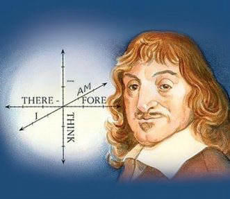
Rene Descartes AD(CE)159 6-1650)
Difficulty each difficulty into as many parts as is feasible and necessary to resolve it. - Rene Descartes
The French Mathematician Rene Descartes(pronounced “DAY-CART”) developed a new branch of Mathematics known as Analytical Geometry or Coordinate Geometry which combined all arithmetic, algebra and geometry of the past ages in a single technique of visualising as points on a graph and equations as geometrical shapes. The fixing of a point position in the plane by assigning two numbers, coordinates, giving its distance from two lines perpendicular to each other, was entirely Descartes’ invention.
Learning Outcomes
How do you write your address? Here is one.
Sarakkalvilai Primary School
135, Sarakkalvilai,
Sarakkalvilai Housing Board Road,
Keezha Sarakkalvilai,
Nagercoil 629002, Kanyakumari Dist.
Tamil Nadu, India.
Somehow, this information is enough for anyone in the world from anywhere to locate the school one studied. Just consider there are crores and crores of buildings on the Earth. But yet, we can use an address system to locate a particular person’s place of study, however interior it is.
How is this possible? Let us work out the procedure of locating a particular address. We know the World is divided into countries. One among them is India. Subsequently India is divided into States. Among these States we can locate our State Tamilnadu.
Further going deeper, we find our State is divided into Districts. Districts into taluks, taluks into villages proceeding further in this way, one could easily locate “Sarakkalvilai” among the villages in that Taluk. Further among the roads in that village, ‘Housing Board Road’ is the specific road which we are interested to explore. Finally, we end up the search by locating Primary School building bearing the door number 135 to enable us precisely among the buildings in that road.
In New York city of USA, there is an area called Manhattan. The map shows Avenues run in the North – South direction and the Streets run in the East – West direction. So, if you know that the place you are looking for is on 57th street between 9th and 10th Avenues, you can find it immediately on the map. Similarly, it is easy to find a place on 2nd Avenue between 34th and 35th streets. In fact, New Yorkers make it even simpler. From the door number on a street, you can actually calculate which avenues it lies between, and from the door number on an avenue, you can calculate which streets it stands.
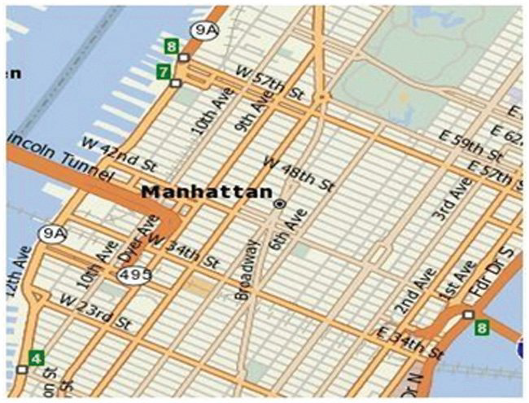
All maps do just this for us. They help us in finding our way and locate a place easily by using information of any landmark which is nearer to our search to make us understand whether we are near or far, how far are we, or what is in between etc. We use latitudes(east – west, like streets in Manhattan) and longitudes (north – south, like avenues in Manhattan) to pinpoint places on Earth. It is interesting to see how using numbers in maps helps us so much.
This idea, of using numbers to map places, comes from geometry. Mathematicians wanted to build maps of planes, solids and shapes of all kinds. Why would they want such maps? When we work with a geometric figure, we want to observe whether a point lies inside the region or outside or on the boundary. Given two points on the boundary and a point outside, we would like to examine which of the two points on the boundary is closer to the one outside, and how much closer and so on. With solids like cubes, you can imagine how interesting and complicated such questions can be.
Mathematicians asked such questions and answered them only to develop their own understanding of circles, polygons and spheres. But the mathematical tools and techniques were used to find immense applications in day-to-day life. Mapping the world using latitudes and longitudes would not have been developed at all in 18th century, if the co-ordinate system had not been developed mathematically in the 17th century.
You already know the map of the real number system is the number line. It extends infinitely on both directions. In between any two points, on a number line, there lies infinite number of points. We are now going to build a map of the plane so that we can discuss about the points on the plane, of the distance between the points etc. We can then draw on the plane all the geometrical shapes we have discussed so far, precisely.
Arithmetic introduced us to the world of numbers and operations on them. Algebra taught us how to work with unknown values and find them using equations. Geometry taught us to describe shapes by their properties. Co-ordinate geometry will teach us how to use numbers and algebraic equations for studying geometry and beautiful integration of many techniques in one place. In a way, that is also great fun as an activity. Can’t wait? Let us plunge in.
You ask your friend to draw a rectangle on a blank sheet of paper comma 5 cm by 3 cm. He says, “Sure, but where on this sheet question mark How would you answer him?
Now look at the picture. How will you describe it to another person?
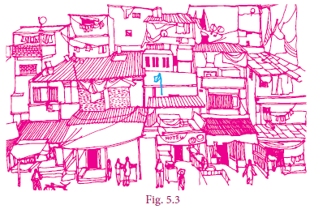
Let us analyse the given picture (Fig. 5.3). Just like that a particular house is to be pointed out, it is going to be a difficult task. Instead, if any place or an object is fixed for identification then it is easy to identify any other place or object relative to it. For example, you fix the flag and talk about the house to the left of it, the hotel below it, the antenna on the house to right of it etc.
As shown in Fig. 5.4 draw two perpendicular lines in such a way that the flag is pointed out at near the intersection point. Now if you tell your friend the total length and width of the picture frame, keeping the flagpole as landmark, you can also say 2 cm to the right, 3 cm above etc. Since you know directions, you can also say 2 cm east, 3 cm north.
This is what we are going to do. A number line is usually represented as horizontal line on which the positive numbers always lie on the right side of zero, negative on the left side of zero. Now consider another copy of the number line but drawn vertically: the positive integers are represented above zero and the negative integers are below zero bracket open figure 5.5 bracket close
Where do the two number lines meet? Obviously at zero for both lines. That will be our location where the “flag” is fixed. We can talk of other numbers relative to it, on both the lines. But now you see that we talk not only of numbers on the two number lines but lots more !.
Suppose we go 2 to the right and then 3 to the top. We would call this place (→2, ↑ 3).
XlYlAll this vertical, horizontal, up, down etc is all very cumbersome. We simply say open 2 comma 3 close bracket and understand this as 2 to the right and then 3 up. Notice that we would reach the same place if we first went 3 up and then 2 right, so for us, the instruction (2,3) is not the same as the instruction open 3 comma2 close What about open minus 2 comma 3 bracket close question mark It would mean 2 left and 3 up. From where? Always from open0 comma 0 close What about the instruction open 2 comma minus3 bracket close question mark It would mean 2 right and 3 down. We need names for horizontal and vertical number lines too. We call the horizontal number line the x-axis and the vertical number line the y-axis. To the right we mark it as X, to the left as , to the top as Y, to the bottom as.
The x-co-ordinate is called the abscissa and the y-co-ordinate is called the ordinate. We call the meeting point of the axes (0,0 close bracket the origin.
Note
Whether we place (0, camma 0) at the centre of the sheet, or somewhere else does not matter, (0, camma 0) is always the origin for us, and all “instructions” are relative to that point. We usually denote the origin by the letter ‘O’
Now we can describe any point on a sheet of paper by a pair open x,y close bracket However, what do open 1, 2 close bracket etc mean on our paper? We need to choose some convenient unit and represent these numbers. For instance, we can choose 1 unit to be 1 centimeterm. Thus open 2, camma 3 close bracket is the instruction to move 2 cm to the right of open 0, camma 0 close bracket and then to move 3 centimeter up. Please remember that the choice of units is arbitrary: if we fix 1 unit to be 2 cm, our figures will be larger, but the relative distances will remain the same.
In fact, we now have a language to describe all the infinitely many points on the plane, not just our sheet of paper !
Since the x-axis and the y-axis divide the plane into four regions, we call them quadrants. (Remember, quadrilateral has 4 sides, quadrants are 4 regions. close bracket They are usually numbered as I, II, III and IV, with I for upper east side, II for upper west side, III for lower west side and IV for lower east side, thus making an anti-clockwise tour of them all.
Note
Why this way (anti-clockwise) and not clockwise, or not starting from any of the other quadrants? It does not matter at all, but it is good to follow some convention, and this is what we have been doing for a few centuries now.
Region |
Quadrant |
Nature of x,y |
Signs of the coordinates |
XOY |
I |
x>0, y>0 X greater than 0, y greater than 0 |
(+,+) bracket of plus ,plus |
X’OY X dash OY |
II |
x<0, y>0 X less than 0, y greater than 0 |
(–,+) bracket of minus ,plus |
X’O Y’ X dash O Y dash |
III |
x<0, y<0 X less than0, y less than 0 |
(–,–) bracket of minus ,minus |
XO Yl’ XOY dash |
IV |
x>0, y<0 X greater than 0, y less than0 |
(+,–) bracket of plus ,minus |
Note
For any point P on the x axis, the value of y coordinate (ordinate) is zero that is, camma P (x, camma 0).
For any point Q on the y axis, the value of x coordinate (abscissa) is zero. that is, camma Q camma (0, camma y)
(x, camma y) ≠ is not equal to (y, camma x) unless x= is equal toy bracket of x, camma y is not equal to bracket of y comma x unless x equal y A plane with the rectangular coordinate system is called the Cartesian plane.
To plot the points (4, camma 5) in the Cartesian coordinate plane. We follow the x – axis until we reach 4 and draw a vertical line at x = equal4.
Similarly, we follow the y – axis until we reach 5 and draw a horizontal line at y =equal 5.
The intersection of these two lines is the position of (4, camma 5) in the Cartesian plane.
This point is at a distance of 4 units from the y-axis and 5 units from the x-axis. Thus, the position of (4, camma 5) is located in the Cartesian plane.
Example 5.1 In which quadrant does the following points lie?
(a) (3, camma –minus8) (b) (–minus1, camma –minus3) (c) (2, camma 5) (d) (–minus7, camma 3)
bracket of 3 comma minus 8 close bracket of minus 1 comma minus 3 close bracket of bracket of 2 comma 5 bracket of bracket of minus 7 ,3 close
Solution
(a) The x- coordinate is positive and y – coordinate is negative. So comma point open 3 comma minus 8 close bracket lies in the IV quadrant.
(b) The x-coordinate is negative and y – coordinate is negative. So comma point open minus 1 comma minus 3 close bracket lies in the III quadrant.
(c) The x-coordinate is positive and y – coordinate is positive. So comma point open 2 comma 5 close bracket lies in the I quadrant.
(d) The x-coordinate is negative and y – coordinate is positive. So comma point open bracket minus7 comma 3 close lies in the II quadrant
Example 5.2 Plot the points A(2, camma 4), B(–minus3, camma 5), C(–minus 4, camma –minus 5), D(4, camma – minus 2) A bracket of 2 comma 4 , B bracket of minus 3 comma 5 close , C bracket of minus 4 comma minus 5 close bracket , camma and D bracket of 4, camma minus 2 close bracket in the Cartesian plane.
Solution
1. To plot (2, camma 4), A bracket of 2 comma 4 close bracket draw a vertical line at x equal to 2 and draw a horizontal line at y equal to 4. The intersection of these two lines is the position of 2, camma 4 in the Cartesian plane. Thus, the Point A (2, camma 4) A bracket of 2 comma 4 is located in the I quadrant of Cartesian plane.
(ii) To plot (–minus3, camma5), bracket of minus 3 comma 5 close comma draw a vertical line at x equal minus 3 and draw a horizontal line at y equal 5. The intersection of these two lines is the position of bracket minus3 comma 5 close bracket in the Cartesian plane. Thus, the Point B bracket of minus 3 comma 5 close is located in the II quadrant of Cartesian plane.
(iii) To plot (–minus4, camma –minus5), bracket of minus 4 comma minus 5 close bracket commadraw a vertical line at x =–4 and draw a horizontal line at y = equal–minus5. The intersection of these two lines is the position of (-minus4, camma 5) in the Cartesian plane. Thus, the Point C (–4, camma –minus5) is located in the III quadrant of Cartesian plane.
(iv) To plot (4, camma –minus2), draw a vertical line at x = equal 4 and draw a horizontal line at y = –minus2. The Intersection of these two lines is the position of (4, camma –minus2) in the Cartesian plane. Thus, the Point D (4, camma –minus2) is located in the IV quadrant of Cartesian plane.
Example 5.3 Plot the following points A(2, camma 2), B(–minus2, camma 2), C(–minus2, camma –minus1), D(2, camma –minus1) in the Cartesian plane. Discuss the type of the diagram by joining all the points taken in order.
Solution
Point |
A |
B |
C |
D |
Quadrant |
I |
II |
III |
IV |
Point |
A |
B |
C |
D |
Quadrant |
roman letter I |
roman letter II |
roman letter III |
roman letter IV |
ABCD is a rectangle. Can you find the length, breath and area of the rectangle?
Exercise 5.1
P bracket of minus 7, camma 6) , Q bracket of 7, camma minus 2) ,R bracket of minus 6, minus 7) , S bracket of 3, camma 5) and T bracket of 3, camma 9)
2. Write down the abscissa and ordinate of the following from fig 5.11.
(i) P
(ii) Q
(iii) R
(iv) S
3. Plot the following points in the coordinate plane and join them. What is your conclusion about the resulting figure?
(i) (–5,3) (–1,3) (0,3) (5,3)
(ii) (0,–4) (0,–2) (0,4) (0,5)
bracket of i) bracket of minus 5, camma 3) bracket of minus 1, camma 3) bracket of 0, camma 3) bracket of 5, camma 3) bracket of ii) bracket of 0, camma minus 4) bracket of 0, camma – minus 2) bracket of 0 camma,4) bracket of 0 camma,5)
4. Plot the following points in the coordinate plane. Join them in order. What type of geometrical shape is formed?
(i) (0,0) (–4,0) (–4,–4) (0,–4)
(ii) (–3,3) (2,3) (–6,–1) (5,–1)
bracket of i) bracket of 0,0) bracket of minus 4, camma 0) bracket of minus 4, camma – minus 4) bracket of 0, camma – minus 4) bracket of ii) bracket of minus 3, camma 3) bracket of 2, camma 3) bracket of minus 6, camma minus 1) bracket of 5, camma minus 1)
1. P (–minus7 camma,6) =equal equal II Quadrant; Q(7, camma –minus2) =equal IV Quadrant; R(–minus6, camma –minus 7) = III Quadrant; S(3, camma 5) = I Quadrant; and T (3, camma 9) = I Quadrant
2. (i) P = (–minus 4, camma 4) (ii) Q = equal (3, camma 3) (iii) R=equal (4, camma –minus2) (iv) S = (–minus5, camma –3)
3. (i) Straight line parallel to x -axis (ii) Straight line which lie on y -axis.
4. (i) Square (ii) Trapezium
Activity - 1
Plot the following points on a graph sheet by taking the scale as 1cm =equal 1 unit.
Find how far the points are from each other?
A (1, camma 0) and D (4, camma 0). Find AD and also DA. Is AD =equal DA?
You plot another set of points and verify your Result.
Akila and Shanmugam are friends living on the same street in Sathyamangalam. Shanmugam’s house is at the intersection of one street with another street on which there is a library. They both study in the same school, and that is not far from Shanmugam’s house. Try to draw a picture of their houses, library and school by yourself before looking at the map below.
Consider the school as the origin. (We can do this ! That is the whole point about the co-ordinate language we are using.)
Now fix the scale as 1 unit = equal 50 metres. Here are some questions for you to answer by studying the given figure (Fig 5.13).
1. How far is Akila’s house from Shanmugam’s house?
2. How far is the library from Shanmugam’s house?
3. How far is the school from Shanmugam’s and Akila’s house?
4. How far is the library from Akila’s house?
5. How far is Shanmugam’s house from Akila’s house?
Question 5 is not needed after answering question 1. Obviously, the distance from point A to B is the same as the distance from point B to A, and we usually call it the distance between points A and B. But as mathematicians we are supposed to note down properties as and when we see them, so it is better to note this too: distance (A, camma B) = equal distance (B, camma A). This is true for all points A and B on the plane, so of course question 5 is same as question 1.
Note
The equation distance(A, camma B)=distance(B,A) is not always obvious. Suppose that the road from A to B is a one-way street on which you cannot go the other way? Then the distance from B to A might be longer ! But we will avoid all these complications and assume that we can go both ways
What about the other questions? They are not the same. Since we know that the two houses are on the same street which is running north – south, the y-distance tells us the answer to question 1. Similarly, we know that the library and Shanmugam’s house are on the same street running east – west, we can take the x-distance to answer question 2.
Questions 3 and 4 depend on what kind of routes are available. If we assume that the only streets available are parallel to the x and y axes at the points marked 1, 2, 3 etc then we answer these questions by adding the x and y distances. But consider the large field east of Akila’s house.
If she can walk across the field, of course she would prefer it. Now there are many ways of going from one place to another, so when we talk of the distance between them, it is not precise. We need some way to fix what we mean. When there are many routes between A and B, we will use distance(A,B) to denote the distance on the shortest route between A and B.
Once we think of distance(A, camma B) as the “straight line distance” between A and B, there is an elegant way of understanding it for any points A and B on the plane. This is the important reason for using the co-ordinate system at all ! Before that, 2 more questions from our example.
1.With the school as origin, define the coordinates of the two houses, the school and the library.
2. Use the coordinates to give the distance between any one of these and another.
The “straight line distance” is usually called “as the crow flies”. This is to mean that we don’t worry about any obstacles and routes on the ground, but how we would get from A to B if we could fly. No bird ever flies on straight lines, though.
We can give a systematic answer to this: given any two points A = (x, camma y) and B =equal ( yl, ) on the plane, find distance(A, camma B). It is easy to derive a formula in terms of the four numbers x, camma y, and. This is what we set out to do now.
Points on x – axis: If two points lie on the x- axis, then the distance between them is equal to the difference between the x- coordinates.
Consider two points A (x1, camma 0) and B (x2, camma 0) on the x-axis.
The distance of B from A is
AB = equal OB – minus OA =equal x2– minusx1 if x2> greater than x1 or
equal= x1–minusx2 if x1> greater than x2
AB = |x2– minus x1|
AB is equal to OB minus OA
is equal to x two minus x one because x two greater than x one or
is equal to x one minus x two because x one greater than x two
AB is equal to |x2 minus x1|
(Read as modulus or absolute value of x2–minusx1)
Points on y – axis: If two points lie on y-axis then the distance between them is equal to the difference between the y-coordinates.
Consider two points P(0, commay1) and Q(0, camma y2)
The distance Q from P is
PQ =equal OQ – minus OP.
=equal y2 – y1 if y2> greater thany1 or
= equal y1–minusy2 if y1> smaller than y2
PQ =equal |y2– minusy1|
(Read as modulus or absolute value of y2–minus y1)
Consider the points A(x1, camma y1) and B(x2, camma y1). Since the y - coordinates are equal the points lie on a line parallel to x- axis. From A and B draw AP and BQ perpendicular to x- axis respectively. Observe the given figure (Fignure 5.16), it is obvious that the distance AB is same as the distance PQ
Distance AB = Distance between PQ = equal|x2–x1|
[The difference between x coordinates]
Similarly consider the line joining the two points
A(x1, camma y1) and B(x1, camma y2), parallel to y – axis.
Then the distance between these two points is
|y2 – minus y1|
[The difference between y coordinates]
Let P(x1, camma y1 ) and Q(x2, camma y2) be two points in the Cartesian plane (or xy – plane), at a distance ‘d’ apart that is d =equal PQ.
OM is equal to x1; MP is equal to y1 ON is equal to x2; NQ is equal to y2
Thinking Corner
A man goes 3 km towards north and then 4 km towards east. How far is he away from the initial position?
Step 1
By the definition of coordinates,
OM equal x1 MP equal y1
ON equal x2 NQ equal y2
Now, (PR NQ)
PR equal MN (Opposite sides of the rectangle MNRP)
= ON – OM (Measuring the distance from O)
= x2 minus x1 ……..(1)
And RQ = equal NQ – NR
= NQ minus MP (Opposite sides of the rectangle MNRP)
= y2 minus y1 ………..(2)
Step 2
Triangle PQR is right angled at R. (PR NQ)
PQ2 equal PR2 plus RQ2 (By Pythagoras theorem)
d2 = (x2 minus x1) multiply2 + (y2 minus y1 ) multipy2
d = (Taking positive square root)
d is equal to bracket of x2 minus x1) 2 plus bracket of y2 minus y1) whole power 2
Note
Distance between two points
Given two points P (x1, y1) and Q (x2, y2), the distance between these points is given by the formula d =√(x2-x1)2+(y2-y1)2.
The distance between PQ = The distance between QP example square root of √(x power 2 minusx1)2+plus (y2-minus y1)2==square root of √(x1-minus x2)2+plus (y1- minus y2)2.
The distance of a point P (x1, y1) from the origin O (0,0) is OP = √x12+y12
We have already seen that distance (A,B) = distance (B camma,A) for any points A, B on the plane. What other properties have you noticed? In case you have missed them, here are some:
distance (A, camma B) =equal 0 exactly when A and B denote the identical point: A =equal B.
distance (A, camma B) > greater than 0 for any two distinct points A and B.
Now consider three points A, B and C. If we are given their co-ordinates and we find that their x-co-ordinates are the same then we know that they are collinear and lie on a line parallel to the y-axis. Similarly, if their y-co-ordinates are the same then we know that they are collinear and lie on a line parallel to the x-axis. But these are not the only conditions. Points (0 camma,0), camma (1, camma 1) and (2, camma 2) are collinear as well. Can you think of what relationship should exist between these coordinates for the points to be collinear?
The distance formula comes to our help here. We know that when A, camma B and C are the vertices of a triangle, we get, distance(A, camma B) +plus distance(B,C) > smaller than distance(A, camma C) (after renaming the vertices suitably). camma
When do three points on the plane not form a triangle? When they are collinear, of course. In fact, we can show that when, distance(A, camma B) +plus distance(B, camma C) =equal distance(A, camma C), the points A, camma B and C must be collinear.
Similarly, when A, B and C are the vertices of a right-angled triangle, = we know that: distance(AB)2+ distance BC squad = equal distance AC squad
with appropriate naming of vertices. We can also show that the converse holds: whenever the equality here holds for A camma B and C camma they must be the vertices of a right-angled triangle.
The following examples illustrate how these properties of distances are useful for answering questions about specific geometric shapes.
Example 5.4
Find the distance between the points (–minus4, camma 3), (2, camma –minus3).
Solution
The distance between the points (–minus4, camma 3), (2, camma –minus3).
) is
d=equal square root of √((x2 minus x1)whole squad +(y2-y1) whole squad)
= equal square root of √(2 plus 4) squad plus (-minus 3-minus3) squad
= equal square root of √(6 power 2 +(-minus 6) squad) =equal square root of √(36 plus 36)
= equal square root of √(36 multiply 2)
= equal square root of 6 root 2
bracket of minus 4, 3) , bracket of 2, minus 3) between two points formula
d is equal to whole root of x two minus x one whole square plus y two minus y one whole square
is equal to whole root of 2 plus 4 whole square plus bracket of minus 3 minus 3 whole square
is equal to 6 square plus minus 6 of whole square
is equal to root of 36 plus 36
is equal to root of 36 multiply 2
is equal to 6 root of 2
Example 5.5
Show that the following points A(3, camma 1) , B(6, camma 4) and C(8, camma 6) lies on a straight line.
Solution
Using the distance formula, we have
AB = √(6-3)2+(4-1)2=√9+9=√18=3√2
BC = √(8-6)2+(6-4)2=√4+4=√8=2√2
AC = √(8-3)2+(6-1)2=√25+25=√50=5√2
AB + BC =3√2+2√2=5√2=AC
AB is equal to root of 6 minus 3 whole square plus 4 munus 1 whole square is equal to root of 9 plus 9 is equal to root of 18 is equal to 3 root 2
BC is equal to root of 8 minus 6 whole square plus 6 minus 4 whole square is equal to root of 4 plus 4 is equal to root of 8 is equal to 2 root 2
AC is equal to root of 8 minus 3whole square plus 6 minus 1 whole square is equal to root of 25 plus 25 is equal to root of 8 is equal to 5 root 2
AB plus BC is equal to root of 3 root 2 plus 2 root 2 is equal to root of 4 plus 5 root 2 is equal to A
Therefore, the points lie on a straight line.
Collinear Points
To show the collinearity of three points, we prove that the sum of the distance between two pairs of points is equal to the third pair of points.
In other words, points A, B, C are collinear if AB plus BC = equalAC
Example 5.6
Show that the points A(7,camma10), B(-minus 2, camma 5), C(3, camma -minus4) are the vertices of a right-angled triangle.
Solution
Here A = (7, camma 10), B = (-2, camma 5), C = (3, camma -4)
AB = √((x2-x1)²+(y2-y1)²)
=√(-2-7)2+(5-10)2
=√(-9)2 +(-5)2
=√(81 + 25)
= √106
AB2 = 106 ... (1)
BC =√((x2-x1)²+(y2-y1)²)
=√(3-(-2))2+(-4-5)2
= √√(5)2+(-9)2
= √106
BC2 = 106 ... (2)
AC =√((x2-x1)²+(y2-y1)²)
=√(3-7)2+(-4-10)2
=√(-4)2+(-14)2
AC2 = 212 ... (3)
From (1), (2) & (3) we get,
Since AB2+BC2=AC2
∆ABC is a right-angled triangle, right angled at B.
Right angled triangle
We know that the sum of the squares of two sides is equal to the square of the third side, which is the hypotenuse of a right-angled triangle.
A is equal to bracket of 7, camma 10) , B is equal to bracket of minus 2, 5) , C is equal to bracket of 3, equal square root of minus 4)
AB is equal to whole root of x two minus x one whole square plus y two minus y one whole square
is equal to whole root of minus two minus 7 whole square plus 5 minus 10 whole square
is equal to whole root of minus 9 whole square plus y minus 5 whole square
is equal to whole root of 81 plus 25
is equal to whole root of 106
AB square is equal to 106 equation 1
BC is equal to whole root of x two minus x one whole square plus y two minus y one whole square
is equal to whole root of 3 minus of minus 2 whole square plus minus 4 minus 5 whole square
is equal to whole root of 5 whole square plus minus 9 whole square
is equal to whole root of 25 plus 81
is equal to whole root of 106
BC square is equal to 106 equation 2
AC is equal to whole root of x two minus x one whole square plus y two minus y one whole square
is equal to whole root of 3 minus 7 whole square plus minus 4 minus 10 whole square
is equal to whole root of minus 4 whole square plus minus 14 whole square
is equal to whole root of 16 plus 196
is equal to whole root of 212
AC square is equal to 212 equation 3
From (1), (2) & (3) we get,
Since AB power 2 plus BC power 2= equalAC power 2
Triangle ABC is a right-angled triangle, right angled at B.
Example 5.7
Show that the points A(–4,–3), B(3,1), C(3,6), D(–4,2) taken in that order form the vertices of a parallelogram.
Parallelogram
We know that opposite sides are equal
Solution
Let A(–4, –3), B(3, 1), C(3, 6), D(–4, 2) be the four vertices of any quadrilateral ABCD. Using the distance formula,
Let d=√((x2-x1)²+(y2-y1)²)
AB = =√(3+4)2+(1+3)2
=√49+16=√65
BC =√(3-3)2+(6-1)2
=√0+25 =√25=5
CD = √(-4-3)2+(2-6)2
=√(-7)2+(-4)2=√49+16=√65
AD = √(-4+4)2+(2+3)2=√(0)2+(5)2=√25=5
AB = CD = and BC = AD = 5
d is equal to whole root of x two minus x one whole square plus y two minus y one whole square
AB is equal to whole root of 3 plus 4 whole square 1 plus 3 whole square
is equal to whole root of 49 plus 16
is equal to root 65
BC is equal to whole root of 3 minus 3 whole square plus 6 minus1 whole square
is equal to whole root of 0 plus 25 is equal to roo t 25
is equal to 5
CD is equal to whole root of minus 4 minus 3 whole square plus 2 minus 6 whole square
is equal to whole root of minus 7 whole square plus minus 4 square is equal to root of 49 plus 16 is equal to root 65
AD is equal to whole root of minus 4 plus 4 whole square plus 2 plus 3 whole square
is equal to whole root of zero square plus 5 square is equal to root of 25 is equal to 5
AB is equal to CD is equal to root 65 and BC is equal to AD is equal to 5
Here, the opposite sides are equal. Hence ABCD is a parallelogram.
Example 5.8 Calculate the distance between the points A (7, 3) and B which lies on the x-axis whose abscissa is 11.
Solution
Since B is on the x-axis, the y-coordinate of B is 0.
So, the coordinates of the point B is (11, camma 0)
By the distance formula the distance between the points A (7, camma 3), B (11, camma 0) is
d =equal square root of √((x2 minus x1power 2plus (y2 minusy1) power 2
AB = square root of √(11 minus 7) squad +(0 minus 3) squad= square root of √(4) power 2+(-minus3)power 2)= √16+9=√25 = 5
Example 5.9
Find the value of ‘a’ such that PQ =equal QR where P, Q, and R are the points whose coordinates are (6, camma minus–1), (1, camma 3) and (a, camma 8) respectively.
Solution
Given P (6, camma –1), Q (1, camma 3) and R (a, camma 8)
PQ equal= whole root of √(1-minus 6) squad +plus (3plus1) squad equal square root of √(-5) squad plus (4) squad equal√41
QR =equal root of √(a-1) squad +(8-3) squad =equal√(a-minus1) squad +plus(5) squad
Given PQ =equal QR
Therefore square root of √41 =equal (a –minus1) squad plus 25 [Squaring both sides]
(a–minus1) squad plus 25 =equal 41
(a–minus 1) squad =equal 41 -minus 25
(a–minus1) squad = equal16
(a–minus 1) =equal plus or minus+ 4 [taking square root on both sides]
a = equal1 + plus or minus 4
a =equal 1 +plus 4 or a = 1 –minus 4
a =equal 5 or a = –minus3
a value five or minus 3
the value of ‘a’ such that PQ =equal QR where P, Q, and R are the points whose coordinates are (6 camma –minus1), (1, camma 3) and (a, camma 8) respectively are a value five or minus 3
Example 5.10
Let A(2, 2), B(8, –4) be two given points in a plane. If a point P lies on the X- axis (in positive side), and divides AB in the ratio 1: 2, then find the coordinates of P.
Solution
Given points are A all in bracket (2, 2) and B(8, –4) and let P = (x, 0) [P lies on x axis]
By the distance formula
d equal√(x2-x1)2+(y2-y1)2
AP==√(x-2)2+(0-2)2equal√x2-4x+4+4=√x2-4x+8
BPequal√(x-8)2+(0+4)2==√x2-16x+64+16==√x2-16x+80
Given AP : PB = 1 : 2
i.e., AP/BPequal1/2equal (BP = PB)
2AP = BP
squaring on both sides,
4AP2 = BP2
4(x2 – 4x + 8) = (x2 – 16x + 80)
4x2 – 16x + 32 = x2 – 16x + 80
3x2 – 48 = 0
3x2 = 48
x2 = 16
x = + 4
x is equal to plus or minus 4
As the point P lies on x-axis (positive side), its x- coordinate cannot be –4.
Hence the coordinates of P is(4, 0)
Example 5.11
Show that (4, 3) is the centre of the circle passing through the points (9, 3), (7,–1), (–1,3). Also find its radius.
Solution
Let P all in bracket (4, camma 3), A(9, camma 3), B(7, camma –minus1) and C(–minus1, camma 3)
If P is the centre of the circle which passes through the points A, B, and C, then P is equidistant from A, B and C (i.e.) PA equal PB equal PC
By distance formula,
d equal √(x2-x1)2+(y2-y1)2
AP = PA equal√(4-9)2+(3-3)2=√(-5)2+(0)2=√25 = 5
BP equal PB equal √(4-7)2+(3+1)2=√(3)2+(4)2=√9+16=√25=5
CP = PC equal √(4+1)2+(3-3)2=√(5)2+(0)2equal√25= 5
PA equalPB = PC equal 5, Radius equal 5
Therefore, P is the centre of the circle, passing through A, B and C
Exercise 5.2
1. Find the distance between the following pairs of points.
(i) (1, 2) and (4, 3)
(ii) (3,4) and (– 7, 2)
(ii) (a, b) and (c, b)
(iv) (3,– 9) and (–2, 3)
Answer 1. (i) √10 units (ii) 2√ 26 units (iii) c–a (iv)13 units
2. Determine whether the given set of points in each case are collinear or not.
(i) (7,–2),(5,1),(3,4)
(ii) (a,–2), (a,3), (a,0)
Answer (i) Collinear (ii) Collinear 7. 5 or 1
3. Show that the following points taken in order form an isosceles triangle.
(i) A (5,4), B(2,0), C (–2,3)
(ii) A (6,–4), B (–2, –4), C (2,10)
4. Show that the following points taken in order form an equilateral triangle in each case.
(i) A(2, 2), B(–2, –2), (ii) , B (0,1), C(0,3)
5. Show that the following points taken in order form the vertices of a parallelogram.
(i) A(–3, 1), B(–6, –7), C (3, –9), D(6, –1) (ii) A (–7, –3), B(5,10), C(15,8), D(3, –5)
6. Verify that the following points taken in order form the vertices of a rhombus.
(i) A(3, camma –2), B (7 camma,6),C (–1, camma 2), D (–5, camma –6) (ii) A (1,1), B(2,1),C (2,2), D(1,2)
7. A (–1, camma 1), B (1, 3) and C (3 camma, a) are points and if AB = BC, then find ‘a’.
8. The abscissa of a point A is equal to its ordinate, and its distance from the point B(1, 3) is 10 units, What are the coordinates of A?
Answer 8. Coordinates of A (9, 9) or (–5, –5) 9. y = 4x+9 10. Coordinates of P (2,0)
9. The point (x, y) is equidistant from the points (3,4)and(–5,6). Find a relation between x and y.
10. Let A(2, 3) and B(2 camma –4) be two points. If P lies on the x-axis, such that AP =3/7 AB, find the coordinates of P.
11. Show that the point (11,2) is the centre of the circle passing through the points (1,2), (3,–4) and (5, camma –6)
12. The radius of a circle with centre at origin is 30 units. Write the coordinates of the points where the circle intersects the axes. Find the distance between any two such points.
Answer 12. 30 root 2

Imagine a person riding his two-wheeler on a straight road towards East from his college to village A and then to village B. At some point in between A and B, he suddenly realises that there is not enough petrol for the journey. On the way there is no petrol bunk in between these two places. Should he travel back to A or just try his luck moving towards B? Which would be the shorter distance? There is a dilemma. He has to know whether he crossed the halfway mid-point or not.
 s
s
The above Fig. 5.21 illustrates the situation. Imagine college as origin O from which the distances of village A and village B are respectively and. Let M be the mid-point of AB then x can be obtained as follows.
AM = MB and so, x -x1 = x2 -x1
and this is simplified to x=x1+x2/2
AM is equal to MB AND x one minus x 2 is equal to x2 minus x
, x is equal to x one plus x two divided by 2.
A bracket of ) ,B bracket of )
Now it is easy to discuss the general case. If A(x1,y1)B(x2,y2) are any two points and M(x,y) is the mid-point of the line segment AB, then is the mid-point of AC (in the Fig. 5.22). In a right triangle the perpendicular bisectors of the sides intersect at the mid-point of the hypotenuse. (Also, this property is due to similarity among the two-coloured triangles shown; In such triangles, the corresponding sides will be proportional).

Another way of solving
(Using similarity property)
Let us take the point M as M(x,y)
Now, ∆AMM’ =∆MBD are similar. Therefore,
AM’/MD=MM’/BD=AM/MB
X-X1/X2-X1=Y-Y1/Y2-Y1=1/1 (AM = MB)
Consider, X-X1/X2-X1 = 1
2x= X2+X1
X=X2+X1/2
Similarly, y=y2+y1/2
AM dash divided by MD is equal to M M tase divided by BD is equal to AM divided by MB
x minus x 1 divided by x 2 minus x is equal to y minus y 1 divided by y 2 minus y is equal to
x minus x 1 divided by x 2 minus x is equal to 1
2x is equal to x 2 plus x 1 gives x equal to x2 plus x1 divided by 2
similarly y2 plus y1 divided by 2
2x is equal to
,
Y is equal to y2 plus y1 divided by 2
x-coordinate of M=the average of x-coordinates of A and C=x1x2/2 and similarly,
y-coordinate of M=the average of y-coordinates of B and C=y1y2/2
The mid-point of the line segment joining the points A(x1,y1)and B(x2,y2) is
M(x1+x2/2,y1+y2/2)
For example, The mid-point of the line segment joining the points(-8,10)and (4,-2 is given by where(x1+x2/2,y1+y2/2) , where x1=-8,x2=4 = 4,
y1= 10 and y2=- 2. The required mid-point is (-8+4/2,-10- 2/2) , or (-2,-6).
Let us now see the application of mid-point formula in our real-life situation, consider the longitude and latitude of the following cities.

Name of the city |
Longitude |
Latitude |
Chennai (Besant Nagar) |
80.27° E |
13.00° N |
Mangaluru (Kuthethoor) |
74.85° E |
13.00° N |
Bengaluru (Rajaji Nagar) |
77.56° E |
13.00° N |
Let us take the longitude and latitude of Chennai (80.27° E, 13.00° N) and Mangaluru (74.85° E , 13.00° N) as pairs. Since Bengaluru is located in the middle of Chennai and Mangaluru, we have to find the average of the coordinates, that is (80.27+74.85/2,13.00+13.00/2) Th is gives (77.56°E, 13.00°N) which is the longitude and latitude of Bengaluru. In all the above examples, the point exactly in the middle is the mid-point and that point divides the other two points in the same ratio.
Example 5.12 Th e point (3,- 4) is the centre of a circle. If AB is a diameter of the circle and B is (5,- 6), find the coordinates of A.
Solution

Let the coordinates of A be (x1,y1 ) and the given point is B (5,-6 ). Since the centre is the mid-point of the diameter AB, we have
X1plus x2/by2equal 3
x1 plus5 equal6
x1= 6- minus5
x1= 1
y1+y 2/ 2equal minus4
y1 minus6 equal minus8
y1 equal minus 8+ 6
y1 equal minus 2
Therefore, the coordinates of A is (1,- 2).
Progress Check
(i) Let X be the mid-point of the line segment joining Q(,) 82−and (, ) 3xand Y be the mid-point of the line segment joining A(,) 85−and B(,) −211. Find the mid-point of the line segment XY.
(ii) If is the mid-point of the line segment joining the points and then find the value of ‘x ’.
Example 5.13

If all in brackets (x,3), (6,y), (8,2) and (9,4) are the vertices of a parallelogram taken in order, then find the value of x and y.
Solution Let A(x,3), B(6,y), C(8,2) and D(9,4) be the vertices of the parallelogram ABCD. By definition, diagonals AC and BD bisect each other.
Mid-point of AC = Mid-point of BD

(x+8/2,3+2/2)=(6+9/2,y+4/2)
Equating the coordinates on both sides, we get
Hence,,x=7 and y=1.
X+8/2=15/2 and 5/2=y+4/2
X+8=15 5=y+4
Xequal7 yequal1
Thinking Corner
A(6,1), B(8,2) and C(9,4) are three vertices of a parallelogram ABCD taken in order. Find the fourth vertex D. If (x1,y1 ), (x2,y2), (x3,y3) and (x4,y4) are the four vertices of the parallelogram, then using the given points, find the value of (x1+x3-x2,y1+y3-y2 ) and state the reason for your result.
Example
Find the points which divide the line segment joining A(−11,4) and B(9,8) into four equal parts.

Solution
Let P, Q, R be the points on the line segment joining A(−11,4) and B(9,8) such that AP=PQ=PR=RB
Here Q is the mid-point of AB, P is the mid-point of AQ and R is the mid-point of QB.
Q is the mid-point of AB = (−11 +9/2, 4+8/ 2) =( -2/2,12/2)= (-1,6),
P is the mid-point of AQ = (−11 -1/2, 4+6/ 2) =( -12/2,10/2)= (-6,5)
R is the mid-point of QB = (−1+9/2, 6+8/ 2) =( 8/2,14/2)=(4,7)
Hence the points which divides AB into four equal parts are P(–6, 5), Q(–1, 6) and R(4, 7).
Example 5.15
The mid-points of the sides of a triangle are all in brackets (5,1),(3,-5)and(-5,-1). Find the coordinates of the vertices of the triangle.

Solution Let the vertices of the ∆ABC be A(x1,y1), B(x2,y2) and C(x3,y3) the given mid-points of the sides AB, BC and CA are (5,1)(3,-5)and(-5,-1) respectively. Therefore,
X1+x2/2=5
X1+x2 = 10 ...(1)
X2+x3/2=3
X2+x3 = 6 ...(2)
X3+x1/2=-5
X3+x1 = -10...(3)
Adding (1), (2) and (3) y1+y2/2=1
y1+y2 = 2 …(5)
y2+y3/2=-5
y2+y3 = –10 …(6)
y3+y1/2=-1
y3+y1 = –2 …(7)
Adding (5), (6) and (7),
2y1+2y2+2y3=6 2y1+2y2+2y3=6
y1+y2+y3=3 ...(4) y1+y2+y3=3 ...(8)
(4)-(2) x1=3-6=-3 (8)-(6) y1=_5+10=5
(4)-(3) x2=3+10=13 (8)-(7) y2=_5+2=-3
(4)-(1) x3=3-10=-7 (8)-(5) y3=-5-2=-7
bracket of 1) , bracket of 2) and bracket of 3) add
2x1plus 2x2plus 2x3 is equal to 6
divided by2
X1plus X2plus X3 is equal to 3 …………… bracket of 4)
bracket of 4) − bracket of 2) ⇒X1 is equal to 3−6 is equal to −3
bracket of 4) − bracket of 3) ⇒X2 is equal to 3plus 10 is equal to 13
bracket of 4) − bracket of 1) ⇒X1 is equal to 3−10 is equal to −7
bracket of 5) , bracket of 6) மற்றும் bracket of 7 ADD,
2Y1plus 2Y2plus 2Y3 is equal to −10
divided by2
Y1plus Y2plus Y3 is equal to −5 …………… bracket of 8)
bracket of 8) − bracket of 6) ⇒Y1 is equal to −5plus 10 is equal to 5
bracket of 8) − bracket of 7) ⇒Y2 is equal to −5plus 2 is equal to −minus3
bracket of 8) − bracket of 5) ⇒Y1 is equal to −5−2 is equal to −minus15
Therefore, the vertices of the triangles are A(-minus3, camma 5),B(13, camma -3) and C(-minus7 camma,7)
Thinking Corner
If (a1,b1),( a2,b2) and (a3,b3) are the mid-points of the sides of a triangle, using the mid-points given in example 5.15 find the value of (a1+a3-a2,b1+b3-b2 ), (a1+a2-a3,b1+b2-b3 ) and (a2+a3-a1,b2+b3-b1 ). Compare the results. What do you observe? Give reason for your result?

Exercise 5.3
1.Find the mid-points of the line segment joining the points A(,)−54B(,) −−12
(i) (−2, camma 3) and (−6, camma −5) (ii) (8, camma −2) and (−8, camma 0)
(iii) (a, camma b) and (a+2b camma,2a−b) (iv) (1/2, camma 3/7) and (3/2 camma,-11/7)
2.The centre of a circle is (−4 camma,2). If one end of the diameter of the circle is (−3, camma 7), then find the other end.
3.If the mid-point (x, camma y) of the line joining (3, camma 4) and (p, camma 7) lies on B(,) 07, then what will be the value of p?
4.The mid-point of the sides of a triangle are (2, camma 4), (−2, camma 3) and (5, camma 2). Find the coordinates of the vertices of the triangle.
5.O(0,0) is the centre of a circle whose one chord is AB, where the points A and B are (8,6) and (10,0) respectively. OD is the perpendicular from the centre to the chord AB. Find the coordinates of the mid-point of OD.
6.The points A(-5, camma 4) 1, B(-1 camma,-2) and C(5, camma 2) are the vertices of an isosceles right-angled triangle where the right angle is at B. Find the coordinates of D so that ABCD is a square.
7.The points A(-3 camma,6), B(0,7) and C(1, camma 9) are the mid-points of the sides DE, EF and FD of a triangle DEF. Show that the quadrilateral ABCD is a parallelogram.
8.A(-3 camma,2), B(3, camma 2) and C(-3,- camma 2) are the vertices of the right triangle, right angled at A. Show that the mid-point of the hypotenuse is equidistant from the vertices.
Answer Exercise 5.3
1.(i) (-4, -1)(ii) (0,-1) (iii) (a+b,a) (iv) (1,-1)
2. (-5, camma -3) 3. P = −15 4. (9, camma 3) (-5 camma,5) and (1, camma 1)
5. (9/2, camma 3/2) 6. (1, camma 8)
The mid-point of a line segment is the point of bisection, which means dividing into two parts of equal length. Suppose we want to divide a line segment into three parts of equal length, we have to locate points suitably to effect a trisection of the segment.
For a given line segment, there are two points of trisection. Th e method of obtaining this is similar to that of what we did in the case of locating the point of bisection (i.e., the mid-point). Observe the given Fig. 5.31. Here P and Q are the points of trisection of the line segment AB where A is ( x1,y1) and B is (x2,y2 ). Clearly we know that P is the mid-point of AQ and Q is the mid-point of PB. Now consider the ∆ACQ and ∆PDB (Also, can be verified using similarity property of triangles which will be dealt in detail in higher classes).
Note that when we divide the segment into 3 equal parts, we are also dividing the horizontal and vertical legs into three equal parts.
If P is (a, b), then a= OP’=OA’+AP’
=x1+(x2-x1/3)=x2+2x1/3 ;
b =PP’=OA’’+A’’P’’
=y1+(y2-y1/3)=y2+2y1/3 Thus we get the point P as (x2+2x1/3,y2+2y1/3)
If Q is (c, d), then c= OB’-Q’B’
=x2-(x2-x1/3)=2x2+2x1/3 ;
D =OQ’’=OB’’-q’’B’’=’y2-(y2-y1/3)=2y2+2y1/3 Thus we get the point P as (x2+2x1/3,y2+2y1/3)
Thus, the required point Q is (2x2+x1/3,2y2+y1/3)
Progress Check
(i) Find the coordinates of the points of trisection of the line segment joining (4,-1) and (-2,-
(ii) Find the coordinates of points of trisection of the line segment joining the point (6,-9)and the origin.
We studied bisection and trisection of a given line segment. These are only particular cases of the general problem of dividing a line segment joining two points and in the ratio m : n.
Given a segment AB and a positive real number r.
We wish to find the coordinate of point P which divides AB in the ratio r :1.
This means AP/ PB=equal r/by 1 or AP=equal r( PB).
This means that x –minus x1 = equal r(x2 –minus x)
Solving this, x =equal r x2+plus x1/r+plus1….. (1)
We can use this result for points on a line to the general case as follows.
Taking , AP:PB=r:1,we get A’P’:P’B’=r:1.
Therefore A’P’=r(P’B’)
Thus, (x-x1)=r(x2-x)
which gives x=rx2+x1/r+1 … [see (1)]
Precisely in the same way we can have y = ry2+plus y1/by r+plus1
If P is between A and B, and AP/PB=r, then we have the formula,
P is (rx2+plus x1by /rplus+1 , ry2+plus y1/by r+plus1 ).
If r is taken as m/n, then the section formula is(mx2+nx1/m+n,my2+ny1/m+n) which is the standard form.
Thinking Corner
(i) What happens when m =equal n =equal 1? Can you identify it with a result already proved?
(ii) AP : ratio PB = 1 : ratio 2 and AQ ratio QB = 2:1. What is AP : AB? What is AQ : AB?
Note
Example 5.17
Find the coordinates of the point which divides the line segment joining the points (3,5) and (8,−10) internally in the ratio 3:2.
Solution
Let A(3,5), B(8,−10) be the given points and let the point P(x,y) divides the line segment AB internally in the ratio 3:2.
By section formula,
P (x, y)= P (mx2+ nx1/ m+ n, my2+ ny1/ m +n )
Here x1 =3 , y1= 5 ,x2= 8 ,y2= -10 and m= 3,
Therefore P(x,y)=P(3(8)+2(3)/3+2,3(-10)+2(5)/3+2)=p(24+6/5,-30+10/5)=p(6,-4)
P bracket of x,y) is equal to P
Let , x1 is equal to 3,y1 is equal to 5,x2 is equal to 8,y2 is equal to minus10 and m is equal to 3, n is equal to 2
but
P bracket of x,y) is equal to P
is equal to P is equal to P bracket of 6, Equating x-coordinates, we get
minus 4)
Example 5.18
In what ratio does the point P(–minus2, camma 4) divide the line segment joining the points
A(–minus3, camma 6) and B(1, camma –minus2) internally?
Solution
Given points are A(–minus3, 6) and B(1, –minus2). P(–2, 4) divide AB internally in the ratio m : n.
By section formula, P (x, y)= P (mx2+ nx1/ m+ n, my2+ ny1/ m +n )
P=(2,4)-------(1)
Here x1=-3,y1=6,x2=1,y2=-2
(1)-----(m(1)+n(-3)/m+n,m(-2)+n(6)/m+n)=p(-2,4)
Equating x-coordinates, we get
m-3n/m+n=-2 or m-3n=-2m-2n
3m=n
m/n=1/3
m:n=1:3
Hence P divides AB internally in the ratio 1:3.
P bracket of x,y) is equal to P multiply (m into x2 plus n into x1 by m plus n, m intoy2 plus ny1 by m plus n )
is equal to p bracket of −minus 2, camma4) ……….. bracket close equation 1)
x1 is equal to −3, y1 is equal to 6, x2 is equal to 1, y2 is equal to −2
P bracket of x,y) is equal to P
Equating x-coordinates, we get
3m is equal to n
M ratio n is equal to 1 ratio 3
Hence P divides AB internally in the ratio 1:3.
Note
We may arrive at the same result by also equating the y-coordinates. Try it.
Example 5.19
In what ratio does the point P(–2, camma 3) divide the line segment joining the points A(–3, camma 5) and B internally in the ratio 1:ratio6?
Solution
Let A(–3, camma 5) and B(x2, camma y2) be the given two points.
Given P(−minus2,camma3) divides AB internally in the ratio 1: ratio 6.
By section formula, P (mx2 plusnx1 by mplus n, my2+plus ny1/by m +plusn ) =p(-minus2, camma3)
P(1(x2)+plus6(-minus3) by1plus6 camma1(y2)plus6(5) by 1+plus 6)=p(-2, camma3)
Equating the coordinates
X2 minus18 by7=equal minus-2
X2 minus 18 equal minus-14
X2equal 4
y2 plus30 by7mius3
y power 2 plus 30 mins21
y2=equal-minus9
Therefore, the coordinate of B is (4equal minus 9)
Exercise 5.4
1.Find the coordinates of the point which divides the line segment joining the point A(4, camma - minus 3) and B(9, camma 7) in the ratio 3:2
2.In what ratio does the point P(2, minus -5) divide the line segment joining A(-minus 3, camma 5) and B(4, camma - minus 9)
3.Find the coordinates of a point P on the line segment joining A(1, camma 2) and B96,70 in such a way that AP=2 by 5AB.
4.Find the coordinates of the points of trisection of the line segment joining the points
A(-minus 5, minus 6) and B(4, minus - minus 3)
5.The line segment joining A(6, camma 3) and B(-1, camma - minus 4) is doubled in lengthy by adding half of AB to each end.Find the coordinates of the new end points.
6.Using section formula, show that the points A(7,- minus 5) B(-1, camma - minus 4) and C(13, camma 1) are collinear.
7.A-line segment AB is increased along its length by 25% by producing it it C on the side of B. If A and B have the coordinates (-2, camma - minus 3) and (2, camma 1) respectively, then find the coordinates of C.
Answer Exercise 5.4
1. (7,3) 2. 5:2 3. (3, camma 4)
4. (-2,3), (1,0) 5. (19/ 2) ( 13/ 2) ,( 9 /2 )(15/ 2) 7. (3, camma 2)
Consider a ∆ABC whose vertices are A(x1 camma,y1) B(x2 camma,y2)and C(x3, camma y3)
Let AD, BE and CF be the medians of the ∆ABC
The mid-point of BC is D(x2+x3/2, y2 plus y3/2)
The centroid G divides the median AD internally in the ratio 2:1 and therefore by section formula, the centroid
G(x,y) is (2(x2+x3)+1(x1)/2+1, 2(y2+y3)+1(y1)/2+1)
=(x1 plus x2 plus x3 by 3, y1plus y2plus y3 by3)
The centroid G of the triangle with vertices A(x1 camma,y1) B(x2, camma y2)and C(x3, camma y3) is G=(x1plusx2 plus x3 by 3, y1plus y2plus y3 by3)
Activity - 2
1.DABC with vertices A(x1,x2), B(y1,y2 ) and C(x3,y3) on the graph sheet.
2.Draw medians and locate the centroid of DABC
Observation
(i) The coordinates of the vertices of DABC where A(x1,y1) DASH , B(x2,y2) DASH and c(x3,y3) DASH
(ii) The coordinates of the centroid G= DASH
(iii) Use the formula to locate the centroid, whose coordinates are = DASH.
(iv) Mid-point of AB is DASH.
(v) Find the point which divides the line segment joining and the mid-point of AB internally in the ratio 2:1 is DASH.
Note
• The medians of a triangle are concurrent and the point of concurrence, the centroid G, is one-third of the distance from the opposite side to the vertex along the median.
• The centroid of the triangle obtained by joining the mid-points of the sides of a triangle is the same as the centroid of the original triangle.
• If (a1, b1), (a2, b2) and (a3, b3) are the mid-points of the sides of a triangle ABC then its centroid G is given by
G equal (a1 plus a2 plus a3/3, b1 plus b2 plus b3 by 3)
Example 5.20
Find the centroid of the triangle whose vertices are A(6 camma-1), B(8, camma 3) ,C(10, camma -5).
Solution
The centroid G (x,y ) of a triangle whose vertices are
G(x camma,y)=G(x1 plus x2 plus x3/3, y1 plus y2 plus y3/3)
We have (x1 camma,y1)=(6,-1); (x2, camma y2)=(8,3);(x3, camma y3)=(10, camma -5);
The centroid of the triangle
G(x,y) equal G(6 plus 8+10 by/3, -1 plus +3 plus -5 by/3)
=G(24 by 3,-camma minus 3 by 3) equal G(8,minus-1)
Note
Example 5.21
If the centroid of a triangle is at (-minus 2, camma1),and two of its vertices are (1, camma - minus 6) and (-minus5 camma,2 ), then find the third vertex of the triangle.
Solution
Let the vertices of a triangle be A(1, camma -6), B(-5,2 camma) and C (x3, camma y3 )
Given the centroid of a triangle as (-2,1),we get,
x1 plus x2 plus x3 by 3 plus -2
1 minus 5+X3/ by 3=minus-2
- minus 4+plusX3 equal minus-6
X3 equal -2
y1+plusy2+y3/ by 3 equal 1
minus-6plus 2 plus Y3/ by 3 equal 1
minus-4 plus Y3 equal -6
Y3 equal 7
Therefore, third vertex is (−minus2, camma7)
Thinking Corner
(i)Master gave a triangular plate with vertices A(5 camma,8) B(2, camma 4) C(8, camma 3) and stick to a student. He wants to balance the plate on the stick. Can you help the boy to locate that point which can balance the plate?
(ii)Which is the centre of gravity for this triangle?
Exercise 5.5
1.Find the centroid of the triangle whose vertices (i)(2,4)(minus3 camma minus -7)and(7,2)
(ii)(-minus 5,- minus 5)(1,- minus 4)and(-minus 4,-2 minus)
2.If the centroid of a triangle at(4,- minus 2) and two of its vertices are (3, camma -2) and (5, camma 2) then find the third vertex of the triangle.
3.Find the length of median through A of a triangle whose vertices are A(-minus 1,3) B(1, camma-1)and C(5,1)
4. Th vertices of a triangle are (1,2) (h,- minus 3) and (-minus 4,k). If the centroid of the triangle is at the point (5, camma -1) then find the value square root of √( h +k)2 +(h+3k)2.
5 Orthocentre and centroid of a triangle are A( minus -3, camma 5) and B (3, camma 3) respectively If C is the circumcentre and AC is the diameter of this circle, then find the radius of the circle.
6. ABC is a triangle whose vertices are A(3,4), B(-minus 2,- minus 1) and C(5,3). If G is the centroid and BDCG is a parallelogram then find the coordinates of the vertex D.
7. If (3 by 2, 5) ,(7,9 by 2) and (13 by2,-13 by2) are mid-points of the sides of a triangle, then find the centroid of the triangle.
Answer Exercise 5.5
1. (2, minus -3) (ii) )- minus 8 by 3 comma 11 by3) 2. (4, minus -6) 3. 5 units
4. 20 5. 3 root of 5 by2 units 6. (1, camma0) 7. (5, camma minus -2)
Exercise 5.6
Multiple Choice Questions
1. If the y-coordinate of a point is zero, then the point always lies DASH
(1)in the I quadrant (2) in the II quadrant
(3)on x-axis
(4) on y-axis
2. Th e points (–minus 5, 2) and (2, minus –5) lie in the DASH
(1) same quadrant
(2) II and III quadrant respectively
(3) II and IV quadrant respectively
(4) IV and II quadrant respectively
3. On plotting the points O(0, camma 0), A(3, camma – minus 4), B(3, camma 4) and C(0, camma 4) and joining OA camma, AB, BC and CO, which of the following figure is obtained?
(1) Square
(2) Rectangle
(3) Trapezium
(4) Rhombus
4. If P( –minus 1, camma 1), Q( 3, camma – minus 4), R( 1, camma – minus 1), S(–minus 2, camma –3) and T( – minus 4, camma 4) are plotted on a graph paper, then the points in the fourth quadrant are DASH
(1) P and T
(2) Q and R
(3) only S
(4) P and Q
5. Th e point whose ordinate is 4 and which lies on the y-axis is DASH
(1)( 4, camma 0 )
(2) (0, camma 4)
(3) (1, camma 4)
(4) (4, camma 2)
6. Th e distance between the two points ( 2, camma 3 ) and ( 1, camma 4 ) is DASH
(1) 2
(2) 56
(3) 10
(4) 2
7. If the points A (2 camma0), B (-6, camma 0), C (3, a–3) lie on the x-axis then the value of a is DASH
(1) 0
(2) 2
(3) 3
(4) –minus6
8. If ( x plus2, 4) = (5, yminus2), then the coordinates (x,y) are DASH
(1) (7, 12)
(2) (6, 3)
(3) (3, 6)
(4) (2, 1)
9. If Q 1, Q2, Q3, Q4 are the quadrants in a Cartesian plane then Q2 intersectionQ2 is DASH
(1) Q1 ∪nion Q2
(2) Q2 ∪nion Q3
(3) Null set
(4) Negative x-axis.
10. Th e distance between the point ( 5 camma –1 ) and the origin is DASH
(1) 24
(2) 37
(3) 26
(4) 17
11. The coordinates of the point C dividing the line segment joining the points P(2,4) and Q(5,7) internally in the ratio 2:1 is
(1) (7/2, camma 11/2)
(2) (3, camma 5)
(3) (4, camma 4)
(4) (4, camma 6)
12. If P(a/3,b/2) is the mid-point of the line segment joining A(−4,3) and B(−2,4) then (a,b) is
(1) (− minus9,7)
(2) (-minus3,7/2)
(3) (9, camma −7)
(4) bb1 2 :
13. In what ratio does the point Q(1,camma6) divide the line segment joining the points P(2, camma7) and R(−2,3 camma)
(1) 1 ratio 2
(2) 2 ratio 1
(3) 1 ratio 3
(4) 3 ratio 1
14. If the coordinates of one end of a diameter of a circle is (3,4) and the coordinates of its centre is (minus3,2), then the coordinate of the other end of the diameter is
(1) (0,− minus 3)
(2) (0,9)
(3) (3,0)
(4) (−minus 9,0)
15. The ratio in which the x-axis divides the line segment joining the points A(a1,b1) and B(a2,b2) is
(1) b1 ratio b2
(2) -b1: ratio b2
(3) a1: ratio a2
(4) -a1: ratio a2
16. The ratio in which the x-axis divides the line segment joining the points (6,4) and (1, −7) is
(1) 2:3
(2) 3:4
(3) 4:7
(4) 4:3
1.bracket of 1) 2: ratio 3
2. bracket of 2) 3: ratio 4
3. bracket of 3) 4: ratio 7
4.bracket of 4) 4: ratio 3
17. If the coordinates of the mid-points of the sides AB, BC and CA of a triangle are (3,4), (1,1) and (2,−3) respectively, then the vertices A and B of the triangle are
(1) (3,2), (2,4)
(2) (4,0), (2,8)
(3) (3,4), (2,0)
(4) (4,3), (2,4)
1. bracket of 1) bracket of 3, , camma 2) , bracket of 2, , camma 4)
2.bracket of 2) bracket of 4, , camma 0) , bracket of 2, , camma 8)
3. bracket of 3) bracket of 3, , camma 4) , bracket of 2, , camma 0)
4. bracket of 4) bracket of 4, , camma 3) , bracket of 2, , camma 4)
18. The mid-point of the line joining (−a,2b) and (−3a,−4b) is
(1) (2a,3b)
(2) (−2a, −b)
(3) (2a,b)
(4) (−2a, −3b)
1. bracket of 1) bracket of 2a, camma 3b)
2,bracket of 2) bracket of minus 2a, , camma minus b)
3. bracket of 3) bracket of 2a, , camma b)
4. bracket of 4) bracket of minus 2a, , camma minus 3b)
19. In what ratio does the y-axis divides the line joining the points (−5,1) and (2,3) internally
(1) 1:3
(2) 2:5
(3) 3:1
(4) 5:2
1.bracket of 1) 1:3
2, bracket of 2) 2:5
3, bracket of 3) 3:1
4. bracket of 4) 5:2
20. If (1,−2), (3,6), (x,10) and (3,2) are the vertices of the parallelogram taken in order, then the value of x is
(1) 6
(2) 5
(3) 4
(4) 3
Answer Exercise 5.6
1. (3) 2. (3) 3. (3) 4. (2) 5. (2) 6. (4) 7. (3) 8. (3) 9. (3) 10. (3)
11. (4) 12. (1) 13. (3) 14. (4) 15. (2) 16. (3) 17. (2) 18. (2) 19. (4) 20. (2)
Points to remember
Distance between the two points ( x1, y1 ) and (x2, y2) is √(x2-x1)2+(y2-y1)2
my2 plus ny1 by m plus n,)
Activity
Plot the points A( 1, 0), B ( –7, 2), C (–3, 7) on a graph sheet and join them to form a triangle.
Plot the point G ( –3, 3).
Join AG and extend it to intersect BC at D.
Join BG and extend it to intersect AC at E.
What do you infer when you measure the distance between BD and DC and the distance between CE and EA?
Using distance formula find the lengths of CG and GF, where F in on AB.
Write your inference about AG: GD, BG: GE and CG: GF.
Note: G is the centroid of the triangle and AD, BE and CF are the three medians of the triangle.
There is perhaps nothing which so occupies the middle position of mathematics as Trigonometry.- J. F. Herbart
Leonhard Euler
(AD (CE) 1707 - 1783)
Learning Outcomes
• To understand the relationship among various trigonometric ratios.
• To recognize the values of trigonometric ratios and their reciprocals.
• To use the concept of complementary angles.
• To understand the usage of trigonometric tables.
Trigonometry (which comes from Greek words trigonon means triangle and metron means measure) is the branch of mathematics that studies the relationships involving lengths of sides and measures of angles of triangles. It is a useful tool for engineers, scientists, and surveyors and is applied even in seismology and navigation.
Observe the three given right-angled triangles; in particular scrutinize their measures. The corresponding angles shown in the three triangles are of the same size. Draw your attention to the lengths of “opposite” sides (meaning the side opposite to the given angle) and the “adjacent” sides (which is the side adjacent to the given angle) of the triangle.
What can you say about the ratio opposite side adjacent side DASH in each case? Every right-angled triangle given here has the same ratio 0.7 ; based on this finding, now what could be the length of the side marked ‘x’ in the Figure 6.2? Is it 15?
Such remarkable ratios stunned early mathematicians and paved the way for the subject of trigonometry.
There are three basic ratios in trigonometry, each of which is one side of a right-angled triangle divided by another.
The three ratios are:
Example 6.1 For the measures in the figure, compute sine, cosine and tangent ratios of the angle q.
Solution
In the given right-angled triangle, note that for the given angle q , PR is the ‘opposite’ side and PQ is the ‘adjacent’ side.
sinθ equal opposite side by hypotenuse equal PR by QR equal 35 by 37
sin dida equal to opposite side by hypotenuse equal PR by QR equal 35 by 37
cosθ = adjacent side/ hypotenuse= PQ/ QR equal 12/ 37
cos dida equal to adjacent side by hypotenuse equal PQ by QR equal 12 by 37
tanθ = opposite side/ adjacent side equal PR/ PQ equal 35/ 12
tan dida equal to opposite side by adjacent side equal PR by PQ equal 35 by 12
It is enough to leave the ratios as fractions. In case, if you want to simplify each ratio neatly in a terminating decimal form, you may opt for it, but that is not obligatory.
Note
Reciprocal ratios
We defined three basic trigonometric ratios namely, sine, cosine and tangent. The reciprocals of these ratios are also often useful during calculations. We defi ne them as follows:
Basic Trigonometric ratios |
Its reciprocal |
Short form |
sin dida is equal to opposite side by hypotenuse equal 7 by 25
|
Cosecant dida is equal to hypotenuse by opposite side
|
Cosec dida is equal to hypotenuse by opposite side
|
cos dida is equal to adjacent side by hypotenuse |
secant dida equal to hypotenuse by adjacent side
|
sec dida is equal to hypotenuse by adjacent side
|
tan dida is equal to opposite side by adjacent side
|
cotangent dida equal to adjacent by side opposite side |
cot dida is equal to adjacent by side opposite side |
From the above ratios we can observe easily the following relations:
cosec θ equal 1 by sin θ
sec θ equal 1 by cos θ
cot θ equal 1 by tanq
sinθ equal 1 by cosec θ
cos θ equal 1 by sec θ
tan θ equal 1 by cot θ
(sin θ) m(cosec θ)=1. We usually write this as sin θ cosec θ equal 1.
All in brackets (cos θ)(sec θ) equal 1. We usually write this as cos θ sec θ equal 1.
All in brackets (tan θ)(cot θ) equal 1. We usually write this as tan θ cot θ equal 1.
Example 6.2 Find the six trigonometric ratios of the angle q using the given diagram. Solution
By Pythagoras theorem,
AB equal whole root of BC2- AC2 AB equal to whole root of B C power 2 minus A C power 2
=√ (25)2 -72=√625 49 =√576= 24 square root of 25 power 2 minus 7 power 2 is equal to 24
Example 6.2 By Pythagoras theorem solution of this sum is 24
The six trigonometric ratios are
sin θ is equal to opposite side by hypotenuse is equal to 7 by 25
cos θ is equal to adjacent side by hypotenuse is equal to 24 by 25
tan θ is equal to opposite side by adjacent side is equal to 7 by 24
cosec θ is equal to hypotenuse by opposite side is equal to 25 by 7
sec θ is equal to hypotenuse by adjacent side is equal to 25 by 24
cot θ is equal to adjacent by side opposite side is equal to 24 by 7
Example 6.3 If tan A is equal to 2 by 3 , then find all the other trigonometric ratios. opposite side of angle Solution
tan A is equal to opposite side by adjacent side 2 by 3 By Pythagoras theorem,
AC is equal to square root b of AB power 2 plus B C Power 2 IS equal to root squad plus 2 squad equal 13
AC is equal to root of 13
sin A equal opposite side by hypotenuse equal 2 by root 13
cos A equal adjacent side/ hypotenuse equal 3 by root 13
cosec A equal hypotenuse/ opposite side equal 13 by root 2
sec A equal hypotenuse /adjacent side equal 13 by root 3
cot A equal adjacent side/ opposite side equal 3 by root 2
Example 6.3 Solution By Pythagoras theorem Write all the other trigonometric ratios in terms of dita replace A we find out the value AC equal to root of 13.
Example 6.4 If sec θ= 13 by 5 then show that 2sin θ minus 3 cos θ by 4sin θ minus 9 cos θ equal 3
Solution: Let BC equal 13 and AB equal 5
sec θ equal hypotenuse by adjacent side by BC by AB by 13 by 5
By the Pythagoras theorem, AC equal whole root of bcpower 2 minus ab power 2
AC equal to whole root of B C power 2 minus A B power 2
Equal whole root of 13 power 2 minus -5 power 2
Equal whole root of 169 minus 25 equal root 144 equal 12
Therefore, sinθ equal AC by BC Equal 12 by 13 ; cosθ equal AB by BC Equal 5 by 13
LHS equal 2sin θ minus 3cos θ by 4 sin θ minus 9 cos θ equal 2 x(12 by 13) minus 3x (5 by 13) by 4 x(12 by 13) minus 9x( 5 by 13) equal (24 minus 15) by 13 by (48 minus 45) by 13 equal 9 by 3 equal 3 Equal RHS
sec Dita equal 13 by 5
if 2 sin dita minus 3 cos dita equal to 4 sin d minus 9 cos dita
solution By the Pythagoras theorem AC equal to whole root of B C power 2 minus A B power 3 we find LHS equal RHS
Note: We can also take the angle ‘θ ’ at the vertex ‘C’ and proceed in the same way.
Exercise 6.1
(i) sin B
(ii) sec B
(iii) cot B
(iv) cos C
(v)tan C
vi) cosec C
(
3.If 2cos θ equal root 3, then find all the trigonometric ratios of angle θ.
4.If cosθ equal l3 equal 5, then find the value of sin A minus cos A by 2tanA
5.IfcosA equal 2x/1 plus x power 2 , then find the values of sin A and tan A in terms of x.
6.If sin θ equal a by square root a power 2 plus b power 2 then show that b sin θ equal a cos θ.
7.If 3cotA equal 2, then find the value of 4sin A minus 3cosA by 2sinA plus 3cosA
8.If cos θ:sin θ equal 1:2 then find the value of 8cos θ minus 2sin θ by4cos θ plus 2sin θ
9. From the given figure, prove that θ plus ∅ equal 90'. Also prove that there are two other right-angled triangles. Find sin alpha, cos pitta and tan ∅.
10.A boy standing at a point O finds his kite flying at a point P with distance OP=25m. It is at a height of 5m from the ground. When the thread is extended by 10m from P, it reaches a point Q. What will be the height QN of the kite from the ground? (use trigonometric ratios)
Exercise 6.1
10 sums above given
ANSWERS
Exercise 6.1
1. sin B equal 9 by 41; cos B equal 40 by 41; tan B equal 9 by 40; cosec B equal 41 by 9; sec B equal 41 by 40; cot B equal 40 by 9
2. (i) sin B equal 12 by 13 (ii) sec B equal 13 by 5 (iii) cot B equal 5 by 12 (iv) cos C equal 4 by 5
(v) tan C equal 3 by 4 (vi) cosec C equal 5 by 3
3. sin θ equal 1 by 2; cos θ equal √3/2; tanθ equal 1 by 3; cosecθ=2 by 1; sec θ equal 2 by 3; cot θ equal √3
4. 3/ 40
5. sin A equal (1-x2) by (1+x2); tan A equal 1-x2/2x
7. 1 by 2
8. ½
9. sin alpha equal 4 by 5; cos β=4 by 5; tan∅ equal 4 by 3
10. 7m
The values of trigonometric ratios of certain angles can be obtained geometrically. Two special triangles come to help here.
Consider a triangle ABC with angles 45degree,45degree , and 90 degree shown in the figure 6.9.
It is the shape of half a square, cut along the square’s diagonal. Note that it is also an isosceles triangle (both legs have the same length, a units).
Use Pythagoras theorem to check if the diagonal is of length a root 2.
Now, from the right-angled triangle ABC,
sin45 degree equal opposite side by hypotenuse equal BC by AC equal a by a root 2 equal 1 by √ 2
cos45 degree equal adjacent side by hypotenuse equal AB by AC equal a by a root 2 equal 1 by √ 2
tan45 degree equal opposite side by adjacent side= BC by AB equal a by a equal 1
The reciprocals of these ratio can be easily found out to be
cosec 45 degree equal root 2;
sec 45 degree equal root2and
cot 45 degree equal 1
Consider an equilateral triangle PQR of side length 2 units.
Draw a bi sector of angle P. Let it meet QR at M.
PQ equal QR equal RP equal 2 units.
QM equal MR equal 1 unit (Why?)
Knowing PQ and QM, we can find PM, using Pythagoras theorem,
we find that PM equal 3 units.
Now, from the right-angled triangle PQM,
Sin30 degree equal opposite side by hypotenuse equal QM by PQ equal 1 by2
cos30 degree equal adjacent side by hypotenuse equal PM by PQ equal root 3 by2
tan30 degree equal opposite side by adjacent side equal QM by PQ equal 1 by3
The reciprocals of these ratio can be easily found out to be
cosec 30 degree equal 2;
sec 30 degree equal 2 by root 3and
cot 30 degree equal root 3
We will use the same triangle but the other angle of measure 60° now.
Sin60 degree equal opposite side by hypotenuse equal PM by PQ equal root 3 by 2
Cos60 degree equal adjacent side by hypotenuse equal QM by PQ equal 1 by2
tan60 degree equal opposite side by adjacent side equal PM by QM equal root 3 by 1 equal root 3
The reciprocals of these ratio can be easily found out to be
cosec 60° equal 2 by root 3;
sec 60° equal 2 and
cot 60° equal 1 by root 3
To find the trigonometric ratios of 0 degree and 90 degree we take the help of what is known
as a unit circle.
A unit circle is a circle of unit radius that is of radius 1 unit), centred at the origin.
Why make a circle where the radius is 1unit?
This means that every reference triangle that we create here has a hypotenuse of 1unit, which makes it so much easier to compare angles and ratios.
We will be interested only in the positive values since we consider ‘lengths’ and it is hence enough to concentrate on the first quadrant.
We can see that if P(x,y) be any point on the unit circle in the first quadrant and ∠POQ θ=
sin θ equal PQ by OP equal y by 1 equal y; cos θ equal OQ by OP equal x by 1 equal x ; tan θ equal PQ by OQ equal y y by x
When θ equal 0°, OP coincides with OA, where A is (1,0) giving x equal 1, y equal 0.
We get thereby,
sin0 degree equal 0 ; cosec0 degree equal not defined (why?)
cos0 degree equal 1 ; sec0 degree equal 1
tan0 degree equal = 0 by 1= 0 ; cot 0 degree equal not defined (why?)
When θ equal 90 degree, OP coincides with OB, where B is (0,1) giving x equal 0, y equal 1.
Hence,
sin90 degree equal 1; cosec90 degree equal 1
cos90 degree equal 0; sec90 degree equal not defined
tan90°equal 1 by 0 equal not defined ; cot90 degree equal 0
Let us summarise all the results in the table given below:
θ |
0° |
30° |
45° |
60° |
90° |
Trigonometric ratio |
|||||
Sin Θ |
0 |
1 by 2 |
1 by root 2 |
Root 3 by 2 |
1 |
Cos Θ |
1 |
Root 3 by 2 |
1 by √2 |
1 by 2 |
0 |
tan Θ |
0 |
1 by root 3 |
1 |
Root 3 |
not defined |
Cosec Θ |
not defined |
2 |
Root 2 |
2 by root 3 |
1 |
Sec Θ |
1 |
2 by root3 |
Root 2 |
2 |
not defined |
tan θ |
not defined |
√3 |
1 |
1 by root3 |
0 |
Example 6.5 Evaluate: 1. sin30 degree plus cos30 degree (ii) tan60 degree cot 60 degree (iii) tan45 degree by tan30 degree plus tan 60 degree (iv) sin squad 45 degree plus cos squad 45 degree
Solution
equal √ 3/ 4
Example 6.5 4 sums are above given
Note
1. sin θ squad is written as sin squad θ equal sin θ multiplysinθ
(ii) (sin θ) squad is not written as sin θ power 2 , because it may mean as sin (θ x θ).
Thinking Corner
The set of three numbers are called as Pythagorean triplets as they form the sides of a right-angled triangle.
For example, 1 camma 3, 4, 5 (ii) 5, 12, 13 (iii) 7, 24, 25
Multiply each number in any of the above Pythagorean triplet by a non-zero constant. Verify whether each of the resultant set so obtained is also a Pythagorean triplet or not.
Example 6.6 Find the values of the following:
(ii) tan squad 60 degree minus 2tan squad 45 degree minus cot squad 30 degree plus 2sin squad 30 degree plus 3 by 4cosec squad 45 degree
Solution
(i)(cos0 degree plus sin 45 degree plus sin30 degree (sin 90 degree minus cos 45 degree plus cos60 degree)
=(1 plus 1 by root 2 plus 1 by 2)(1 minus 1 by root 2 plus 1 by 2)
=(2 root 2 plus 2 root 2 by 2 root 2) (2 root 2 minus 2 root 2 by 2 root 2)
=(3 root 2 plus 2 by 2 root 2) (3 root 2 minus 2 by 2 root 2)
=18 minus 4 by 4( root 2) whole squad equal 14 by (4 multiply 2) equal 7 by 4
(ii) tan squad 60 degree minus 2 tan squad 45 degree minus cot squad 30 degree plus 2sin squad 30 degree plus 3 by 4cosec squad 45 degree
equal (√ 3) squad minus 2(1) squad minus (√ 3) squad plus 2(1 by 2) squad plus 3 by 4(√ 2) squad
equal 3 minus 2 minus 3 plus 1/2 plus 3/2
equal -2 plus 4/2 equal minus2 plus 2 equal0
Note
1 In a right-angled triangle, if the angles are in the ratio 45°:45°:90° , then the sides are in the ratio 1 ratio 1 ratio root 2.
(ii) Similarly, if the angles are in the ratio 30°:60°:90°, then the sides are in the ratio 1 ratio ratio 3 ratio 2.
(The two set squares in your geometry box is one of the best example for the above two types of triangles).
Exercise 6.2
1.Verify the following equalities:
1. sin squad 60 degree plus cos squad 60 degree equal 1 (iii) cos squad 90° equal 1 minus 2 sin squad 45 degree equal 2 cos squad 45 degree minus 1
(ii)1 plus tan squad 30 equal sec squad 30 degree (iv) sin squad 30 degree cos squad 60 degree plus cos squad 30 degree sin squad 60 degree equal sin squad 90 degree
2.Find the value of the following: 1. tan by cosec sin30 degree plus sec 60 degree by cot 45 degree minus 5 sin90 degree by 2cos0 degree
(ii) (sin90 degree plus cos60 degree plus cos45 degree
multiply
(sin30 degree plus cos0 degree minus cos45 degree)
(iii) sin squad 30 degree minus 2 cos cube 60 degree plus 3 tan power 4 45 degree
3.Verify cos cube A equal 4cos cube A minus 3 cos A, when A equal 30 degree
4.Find the value of 8 sin2 x cos 4x sin6x, when x equal 15 degree
ANSWERS Exercise 6.2
2.(i) 0 (ii) 74 (iii) 3 4. 2
Recall that two acute angles are said to be complementary if the sum of their measures is equal to 90°.
What can we say about the acute angles of a right-angled triangle?
In a right-angled triangle, the sum of the two acute angles is equal to 90°. So, the two acute angles of a right-angled triangle are always complementary to each other
.
In the above figure 6.13, the triangle is right-angled at B. Therefore, if ∠C is θ , then ∠A=90° − θ. We find that
We find that Similarly for the angle , We have 7 2
Comparing (1) and (2), we get
To get Trigonometric Ratios for Complementary Angles We find that Similarly for the angle bracket open 90 degree minus dita equation 1 ang equation 2 simplify and compare we get
Sin dita equal cos 90 degree minus dita
cos dita equal sin 90 degree minus dita
tan dita equal cot 90 degree minus dita
cosec dita equal sec 90 degree minus dita
Sec dita equal cosesec 90 degree minus dita
cot dita equal tan 90 degree minus dita
Example 6.7 Express
(i) sin74 degree in terms of cosine
(ii) tan12 degree in terms of cotangent
(iii)cosec39 degree in terms of secant
Solution
RHS is of the form sin(90 degree minus θ) equal cos90
Therefore sin74 degree equal cos16 degree
(ii) tan12 degree equal tan(90 degree minus 78 degree ) (since, 12 degree =90 degree -78 degree)
RHS is of the form tan(90 degree - θ)= cot θ
Therefore tan12 degree =cot78 degree
(iii) cosec39 degree equal cosec(90 degree -51 degree ) (since 39 degree =90degree -51 degree)
RHS is of the form cosec(90 degree minus θ)= sec θ
Therefore cosec 39 degree = sec 51 degree
Example 6.8 Evaluate:
(i) sin 49 degree by cos 41 degree
Solution
sin49 degree equal sin(90 degree 41 degree) equal cos41 degree since 49 degree +41 degree =90 degree (complementary),
Hence on substituting sin49 degree equal cos41 degree we get, cos41 degree by cos41 degree = 1
sec63 degree equal sec(90 degree -27 degree) equal cosec27 degree, here 63 degree and 27 degree are complementary angles. we have sec63 degree /cosec 27 degree =cosec 27 degree by cosec 27 degree = 1
Example 6.9 Find the values of (i) tan7 degree tan23 degree tan60 degree tan67 degree tan83 degree (ii) cos35 degree by sin55 degree + sin12 degree by cos78 degree - cos18 degree by sin72 degree
Solution 1. tan7 degree tan23 degree tan60 degree tan67 degree tan83 degree
= tan7 degree tan83 degree tan23 degree tan67 degree tan60 degree (Grouping complementary angles) = = tan7°tan(90 degree -7 degree)tan23 degree tan(90 degree -23 degree)tan60 degree =(tan7 degree.cot7 degree)(tan23 degree.cot23 degree)tan60 degree
equal (1)x(1)xtan60°
equal tan60°=√3
=cos( 90 degree -55 degree)/ sin55 degree + sin(90 degree -78 degree) by cos78 degree - cos(90 degree -72 degree)/ sin72 degree
=sin55° by sin55°+ cos78° by cos78° plus sin72° by sin72°==1 plus 1-1=1
Since
cos35 degree equal cos(90 degree minus 55 degree)
sin12 degree equal sin(90 degree minus 78 degree)
cos18 degree equal cos(90 degree minus 72 degree)
Example 6.10
Solution
sec(90 degree -A) =sec(34 degree)
90 degree - A= 34 degree
We get A=90 degree -34 degree
A=56 degree
(ii) We know that tan B=cot(90 degree -B)
cot(90 degree -B) =cot47 degree
90°- B= 47 degree We get B=90 degree -47 degree
B=43 degree
Exercise 6.3 Find the value of the following: (i) (cos47°/sin43°) + (sin72°/ cos18°)-2 cos245° (ii) cos70 degree / sin20 degree + cos59 degree / sin31 degree + cos θ sin (90°-θ) -8cos260 degree tan15 degree tan30 degree tan45 degree tan60 degree tan90 degree (iv) cot θ/ tan (90 degree - θ) +cos (90 degree - θ) tan θ sec (90 degree - θ) /sin(90 degree - θ )cot( 90 degree - θ)(cosec90 degree - θ)
Thinking Corner
We have learnt to calculate the trigonometric ratios for angles 0 degree, 30 degree, 45 degree, 60 degree and 90 degree. But during certain situations we need to calculate the trigonometric ratios of all the other acute angles. Hence we need to know the method of using trigonometric tables.
One degree (1 degree) is divided into 60 minutes ( 60′ ) and one minute ( ′ 1) is divided into 60 seconds ( 60′′ ). Thus, 1° = 60′ and 1’=60’’.
The trigonometric tables give the values, correct to four places of decimals for the angles from 0 degree to 90 degree spaced at intervals of 60′. A trigonometric table consists of three parts.
A column on the extreme left which contains degrees from 0° to 90°, followed by ten columns headed by ′ 0, ′ 6, 12′ , 18′ , 24′ , 30′ , 36′ , 42′ , 48′ and 54′.
Five columns under the head mean difference has values from 1,2,3,4 and 5.
For angles containing other measures of minutes (that is other than ′ 0, ′ 6, 12 minutes , 18′ minutes , 24′ minutes, 30′ minutes, 36′ minutes, 42′ minutes , 48′ minutes and 54′ minutes), the appropriate adjustment is obtained from the mean difference columns.
The mean difference is to be added in the case of sine and tangent while it is to be subtracted in the case of cosine.
Now let us understand the calculation of values of trigonometric angle from the following examples.
Example 6.11 Find the value of sin 64°34’
Solution
|
0’ minutes |
6’ minutes |
12’ minutes |
18’ minutes |
24’ minutes |
30’ minutes |
36’ minutes |
42 minutes’ |
48’ minutes |
54’ minutes |
Mean Difference |
||||
|
0.0 degree |
0.1° degree |
0.2° degree |
0.3° degree |
0.4° degree |
0.5° degree |
0.6° degree |
0.7° degree |
0.8° degree |
0.9° degree |
1 |
2 |
3 |
4 |
5 |
64° |
|
|
|
|
0.9026 |
|
|
|
|
|
|
|
|
4 |
|
Write 64 degree 34 minutes=64 degree 30 degree+4 minutes
From the table we have, sin64 degree 30 degree = 09026.
Mean difference for 4 dash= 5(Mean difference to be added for sine)
-----------------------
sin64 degree 34’ minutes = 09031.
-----------------------
Example 6.12 Find the value of cos19 degree 59 minutes
Solution
|
0’ minutes |
6’ minutes |
12’ minutes |
18’ minutes |
24’ |
30’ minutes |
36’ minutes |
42’ minutes |
48 minutes’ |
54’ minutes |
Mean Difference |
||||
|
0.0° degree |
0.1° degree |
0.2° degree |
0.3° degree |
0.4° degree |
0.5° degree |
0.6° degree |
0.7° degree |
0.8° degree |
0.9° degree |
1 |
2 |
3 |
4 |
5 |
19° |
|
|
|
|
|
|
|
|
|
0.9403 |
|
|
|
|
5 |
Write 19°59’=19°54’+5
From the table we have, cos19°54’= 0.9403.
Mean difference for 5’= 5 (Mean difference to be subtracted for
cosine)
-------------------------
cos19°59’=0.9398.
--------------------------
Example 6.13 Find the value of tan70 degree13 minutes
Solution
|
0’ |
6 minutes |
12 minutes |
18’ minutes |
24’ minutes |
30’ |
36’ minutes |
42’ |
48’ minutes |
54’ |
Mean Difference |
||||
|
0.0° |
0.1° degree |
0.2° degree |
0.3° degree |
0.4° degree |
0.5 degree ° |
0.6° degree |
0.7 degree ° |
0.8° degree |
0.9° |
1 |
2 |
3 |
4 |
5 |
70° |
|
|
2.7776 |
|
|
|
|
|
|
|
26 |
|
|
|
|
Write 70 degree13 minutes=70 degree 12’+1 minutes
From the table we have, tan70°12 minutes = 2.7776.
Mean difference for 1’ dash= 26 (Mean difference to be added for tan)
--------------------------
tan70 degree 13 minutes
= 2 point7802.
Example 6.14
Find the value of (i) sin38 degree tan36 minutes
+tan12 degree 12 minutes
(ii)tan60°cos25 minutes-cos49 degree 20 minutes
Solution 1. sin83 degree 6 minutes
+tan12 degree 12 minutes
Equal sin38 degree 36’= 0.6239
tan12 degree 12’= 0.2162
sin38 degree 36 minutes
+ tan12 degree 12 minutes
Equal 0 point 8401
tan60 degree 25’=1.7603+ 0.0012=1.7615.
cos 49 degree 20’=0.6521=0.0004= 0.6517.
tan60 degree25’-cos49 degree 20’=1.1098.
Example 6.15 Find the value of θ if romen letter 1 sin. θ equal 09858 romen letter 2 cos. θ equal 07656
Solution romen letter sin. θ equal 0.9858 equal 0.9857+ 0.0001
From the sine table 0.9857 equal 80°18’
Mean difference 1 equal 2’
0.9858 equal 80°20’
sin.θ equal 0.9858= sin80°20’
θ equal 80°20’
romen letter 2 cos θ equal 0.7656 equal 0.7660- 0.0004
From the cosine table 0.7660 equal 40° 0’
Mean difference 4 equal 2’
0.7656 equal 40° 2’
cosθ equal 0.7656 equal cos 40°2’
θ equal 40°2’
Example 6.16
Find the area of the right-angled triangle with hypotenuse 5cm and one of the acute angle is 48°30’
Solution
From the figure, sinθ equal AB by AC equal sin48°30’ equal A by 5
0.7490 equal AB by 5
5x0.7490 equal AB
AB equal 3 point 7450 cm
cosθ equal BC by AC
cos 48°30’ equal BC by 5
0.6626 equal BC by 5
0.66265 ×5= equal BC
BC by 3.313 centimetre
Area of right triangle equal 1 by 2 bh
=1 by 2x BCx AB = 1 by 2x 3. 3130 x3.7450 =1.6565x3.7450 = 62035925 centimeter square
Example 6.16 solution
Find the area of the right-angled triangle with hypotenuse 5cm and one of the acute angle is 48°30’ is equal to 1 by 2 multiply bc multiply ab equal 1 by 2 multiply 3 point 3130 multiply 3point7450 equal 1point 6565 multiply 3 point 7450 equal 62035925 cm power 2
Activity Observe the steps in your home. Measure the breadth and the height of one step. Enter it in the following picture and measure the angle (of elevation) of that step.
Exercise 6.4
1.Find the value of the following: (i) sin49 degree (ii) cos74 degree 39’ (iii) tan54 degree 26’ (iv) sin21 degree 21’(v) cos33 degree 53’ (vi) tan70 degree 17’
romen letter 2 cos74°39' romen letter 3 tan54°26′ romen letter 4 sin21°21' romen letter 5 cos 33°53′ romen letter 6 tan70 degree 17 minutes
romen letter 1 sinθ equal 0.9975 romen letter 2 cosθ equal 0.6763 romen letter 3 tanθ equal 0.0720
romen letter 4 cosθ equal 0.0410 romen letter 5 tanθ equal 7.5958
3. Find the value of the following: (i) sin65°39’cos24°57’tan10°10’
(ii) tan70°58’cos15°26’sin84°59’
romen letter 1 sin65 degree 39′+cos24 degree 57'+tan10°10′ romen letter 2 tan70°58 minutes+cos15 degree 26'-sin84°59 minutes
4. Find the area of a right triangle whose hypotenuse is 10cm and one of the acute angle is 24°24’
5. Find the angle made by a ladder of length 5m with the ground, if one of its end is 4m away from the wall and the other end is on the wall.
6. In the given figure, HT shows the height of a tree standing vertically. From a point P, the angle of elevation of the top of the tree (that is ∠P ) measures 42° and the distance to the tree is 60 metres.
ANSWER Exercise 6.4
1.(i) 0.7547 (ii) 0.2648 (iii) 1.3985 (iv) 0.3641
(v) 0.8302 (vi) 2.7907
2.(i) 85 degree 57’ (or) 85 degree 58’ (or) 85°59’ 52 minutes
(ii) 47 degree 27’52 minutes (iii) 4°7’52 minutes (iv) 87°39’52 minutes (v) 82°30’ 52 minutes
3. 1 1 point 9970 (ii) 2point 8659
4. 18.81 cm2
5. 36 degree 52 minutes
6. 54.02 metre
Find the height of the tree.
Exercise 6.5
Multiple choice questions
1. If sin30 deree equal x sin 30 degree equal to x and cos60 degree equal y camma cos 60 degree equal y then x2+y2 x power 2 plus y power 2 is
1 1 /2 (2 0 (3) sin90 degree (4) cos90 degree
2. If tanθ=cot37 degree comma then the value of θ is
1 37° degree (2) 53° degree (3) 90° degree (4) 1° degree
3. The value of tan72 degree tan 18 degree is
1 camma 0 (2) 1 (3) 18 degree (4) 72 degree
4. The value of 2tan30 degree by 1 minus tan power 2 30 degree is equal to
1 . cos60 degree 2 .sin60 degree 3. tan60° degree 4.sin30° degree
5.If 2sin2 dita equal root 3 camma then the value of dida is
1 90 degree 2. 30 degree 3. 45degree 4. 60 degree
6.The value of 3sin70 degree sec20 degree plus 2sin49 degree sec51 degree is
(1) 2 (2) 3 (3) 5 (4) 6
7.The value of 1 minus tan squad 45 degree by 1 plus tan squad 45 degree is
1 . 2 (2) 1 (3) 0 (4) . 12
8.The value of cosec(70 degree plus θ)- minus sec(20 degree degree θ)plus tan(65 degree + θ) minus cot(25 degree minus θ) is
1 ) 0 (2) 1 (3) 2 (4) 3
9.The value of tan1 degree tan2 degree tan3 degree...tan89 degree is
(1) 0 (2) 1 (3) 2 (4)
10.Given that sin alpha equal to 1by2 sin alpha equal 1 by2 and cos b equal 12 , then the value of ∝+b alpha plus b b is
1 0 degree 2 90 degree 3 30 degree 4 60 degree
ANSWER Exercise 6.5
1. (1) 2. (2) 3. (2) 4. (3) 5. (2) 6. (3) 7. (3) 8. (1) 9. (2) 10. (2)
Points to Remember
•Trignometeic ratios are
Sinθ equal to opposite side by hypotenuse cosecθ equal to hypotenuse by opposite side
Cosθ equal to adjacent side by hypotenuse Secθ equal to hypotenuse by adjacent side
Tanθ equal to opposite side by adjacent side cotθ equal to adjacent side by opposite side
Recriprocal trigonometric ratios
Sinθ equal 1 by cosecθ
Cosθ equal 1 by secθ
Tanθ equal 1 by cotθ
Cosecθ equal 1 by sinθ
Secθ equal 1 by cosθ
Cotθ equal 1 by tanθ
Complementary angles
Sin dita equal sec in bracket 90 degree minus dida
cos dita equal sin in bracket 90 degree minus dida
tan dita equal cot in bracket 90 degree minus dida
cosec dita equal sec in bracket 90 degree minus dida
sec dita equal cosec in bracket 90 degree minus dida
cot dita equal tan in bracket 90 degree minus dida


The most beautiful plane figure is the circle and the most beautiful solid figure is the sphere. - Pythagoras.

Heron
A.D (C.E) 10-75
Heron of Alexandria was a Greek mathematician. He wrote books on mathematics, mechanics and physics. His famous book ‘Metrica’ consists of three volumes. This book shows the way to calculate area and volume of plane and solid figures. Heron has derived the formula for the area of triangle when three sides are given.
Learning Outcomes


Mensuration is the branch of mathematics which deals with the study of areas and volumes of different kinds of geometrical shapes. In the broadest sense, it is all about the process of measurement.
Mensuration is used in the field of architecture, medicine, construction, etc. It is necessary for everyone to learn formulae used to find the perimeter and area of two-dimensional figures as well as the surface area and volume of three-dimensional solids in day-to-day life. In this chapter we deal with finding the area of triangles (using Heron’s formula), surface area and volume of cuboids and cubes.
For a closed plane figure (a quadrilateral or a triangle), what do we call the distance around its boundary? What is the measure of the region covered inside the boundary?
In general, the area of a triangle is calculated by the formula
Area = 1 divided by 2 multiply Base multiply Height square units
That is, A= 1/ 2 x b x h sq. units
A is equal to one divided by 2 multiply b multiply h square units
where, b is base and h is height of the triangle. From the above, we know how to find the area of a triangle when its ‘base’ and ‘height’ (that is altitude) are given.


How will you find the area of a triangle, if the height is not known but the lengths of the three sides are known?
For this, Heron has given a formula to find the area of a triangle.
If a, b and c are the sides of a triangle, then the area of a triangle is equal to whole square root of s bracket open s difference a bracket close bracket open s difference b bracket close bracket open s difference c bracket close square units
s is equal to a plus b plus c divided by 2 ‘s’ is the semi-perimeter (that is half of the perimeter) of the triangle.
Figure 7.3

Note
If we assume that the sides are of equal length that is a = b = c, then Heron’s formula will be root 3 divided by 4 a power 2 square Units, which is the area of an equilateral triangle.
Example 7.1
The lengths of sides of a triangular field are 28 m, 15 m and 41 m. Calculate the area of the field. Find the cost of levelling the field at the rate of ₹ 20 per m2.
Solution Let a = 28 metre, b = 15 metre and c = 41 metre
Then, s is equal to a plus b plus c divided by 2 equal to 28 plus 15 plus 41 divided by 2 equal to 84 divided by 2 is equal to 42 metre
Area of triangular field = √s(s- a)(s- b)(s- c)
=√42 (42- 28)( 42- 15)( 42-41 )
= √42x 14x 27x 1
=√2x3x7x7x2x3x3x3x1
=2x3x7x3
=126 metre power 2
Area of the triangle field is equal to square root of s multiply bracket open (s minus a) multiply (s minus b) multiply by (s minus c)
is equal to square root of 42 multiply (42 minus 28) multiply (42 minus 15) multiply (42 minus 41)
is equal to square root of (42 multiply 14 multiply 27 multiply 1)
is equal to root (2 multiply 3 multiply 7 multiply 7 multiply 2 multiply 3 multiply 3 multiply 3 multiply 1)
is equal to 2 multiply 3 multiply 7 multiply 3
is equal to 126 square centimeter
Given the cost of levelling is ₹ rupees 20 per m power 2.
The total cost of levelling the field = 20 multiply 126 = ₹ rupees 2520.
Example 7.2
Three different triangular plots are available for sale in a locality. Each plot has a perimeter of 120 metre. The side lengths are also given:
Shape of plot |
Perimeter |
Length of sides |
Right angled triangle |
120 meter |
30 meter, 40 meter, 50 meter |
Acute angled triangle |
120 meter |
35 meter, 40 meter, 45 meter |
Equilateral triangle |
120 meter |
40 meter, 40 meter, 40 meter |
m Help the buyer to decide which among these will be more spacious.
Solution For clarity, let us draw a rough figure indicating the measurements:


Figure7.5, s =35+ 40+ 45/2= 60 m
Figure 7.6, s = 40+ 40+ 40/ 2= 60m
Figure 7.4 area of triangle is equal to root (60 (60 minus 30) (60minus 40) (60 minus 50) )
is equal to root (60 multiply 30 multiply 20 multiply 10)
is equal to root (30 multiply 2 multiply 30 multiply 2 multiply 10 multiply 10)
is equal to 600 square centimeters
Figure 7.5 area of triangle is equal to root (60(60 minus 35) (60 minus 40) (60 minus 45) )
is equal to root (60 multiply 25 multiply 20 multiply 15)
is equal to root (20 multiply 3 multiply 5 multiply 5 multiply 20 multiply 3 multiply 5)
is equal to 300 root of 5 ( if root 5 is equal to 2.236)
is equal to 670 Point 8 square metre
In Figure 7.6 area of triangle is equal to whole root of ( 60 bracket of ( 60 minus 40 ) ( 60 minus 40 ) (60 minus 40) )
is equal to root ( 60 multiply 20 multiply 20 multiply 20 )
is equal to root (3 multiply 20 multiply 20 multiply 20 multiply 20)
is equal to 400 root 3 (if root 3 is equal to 1 point 732)
is equal to 692.8 square metre
Note that all the semi-perimeters are equal.
In Fig.7.4, Area of triangle = √60( 60- 30) (60- 40)( 60-50 )
= √60x 30 x20x 10
=√30x2x30x2x10x10
=600m2
In Fig.7.5, Area of triangle = √60(60- 35)(60- 40)(60-45)
= √60x25 x20x 15
= √20x 3x 5x 5x 20 x3 x5
= 300√ 5 ( Since √5= 2.236)
= 6708 metre squad
In Fig.7.6, Area of triangle = √60(60-40)(60- 40)(60- 40)
= √60x20x 20x 20
= √3x 20 x20 x20x 20
= 400 √3 ( Since √3 =1.732)
= 692.8m squad
We find that though the perimeters are same, the areas of the three triangular plots are different. The area of the triangle in Fig 7.6 is the greatest among these; the buyer can be suggested to choose this since it is more spacious.
Note
If the perimeter of different types of triangles have the same value, among all the types of triangles, the equilateral triangle possess the greatest area. We will learn more about maximum areas in higher classes.
A plane figure bounded by four-line segments is called a quadrilateral.
Let ABCD be a quadrilateral. To find the area of a quadrilateral, we divide the quadrilateral into two triangular parts and use Heron’s formula to calculate the area of the triangular parts.

In Fig 7.7,
Area of quadrilateral ABCD = Area of triangle ABC + Area of triangle ACD
Example 7.3 A farmer has a field in the shape of a rhombus. The perimeter of the field is 400m and one of its diagonal is 120m. He wants to divide the field into two equal parts to grow two different types of vegetables. Find the area of the field.

Solution
Let ABCD be the rhombus.
Its perimeter = 4 × side = 400 m
Therefore, each side of the rhombus = 100 m
Given the length of the diagonal AC = 120 m
In △ABC, let a =100 m, b =100 m, c =120 m
s = a +b+ c/ 2= 100 +100+ 120 /2 = 160 m
Area of triangleABC = √160 (160- 100)( 160 -100)( 160 - 120 ) = √160 x60 x60 x40
=√ 40x 2x 2x 60x 60x 40 =√ 40x 2x 60= 4800 m2
.Therefore, Area of the field ABCD= 2 x Area of triangle ABC = 2 x4800= 9600 m2
Exercise 7.1
1. Using Heron’s formula, find the area of a triangle whose sides are
(i) 10 cm, 24 cm, 26 cm (ii) 1.8m, 8 m, 8.2 m
2. The sides of the triangular ground are 22 m, 120 m and 122 m. Find the area and cost of levelling the ground at the rate of ₹ 20 per m2.
3. The perimeter of a triangular plot is 600 m. If the sides are in the ratio 5:12:13, then find the area of the plot.
4. Find the area of an equilateral triangle whose perimeter is 180 cm.
5. An advertisement board is in the form of an isosceles triangle with perimeter 36m and each of the equal sides are 13 m. Find the cost of painting it at ₹ 17.50 per square metre.
6. Find the area of the unshaded region.

7. Find the area of a quadrilateral ABCD whose sides are AB cm= 13, BC cm= 12, CD cm= 9, AD cm = 14and diagonal BD cm= 15.
8. A park is in the shape of a quadrilateral. Th e sides of the park are 15 m, 20 m, 26 m and 17 m and the angle between the first two sides is a right angle. Find the area of the park.
9. A land is in the shape of rhombus. The perimeter of the land is 160 m and one of the diagonal is 48 m. Find the area of the land.
10. The adjacent sides of a parallelogram measures 34 m, 20 m and the measure of one of the diagonal is 42 m. Find the area of parallelogram.
Exercise 7.1
1.(i) 120 cm2 (ii) 7.2 m2 2. 1320 m2, ₹26400 3. 12000 m2
4. 1558.8 cm2
5. ₹ 1050
6. 240 cm2
7. 138 cm2
8. 354m2
9. 1536 m2
10. 672 m2

We have learnt in the earlier classes about 3-Dimension structures. The 3D shapes are those which do not lie completely in a plane. Any 3D shape has dimensions namely length, breadth and height.
Cuboid: A cuboid is a closed solid figure bounded by six rectangular plane regions. For example, match box, Brick, Book.
A cuboid has 6 faces, 12 edges and 8 vertices. Ultimately, a cuboid has the shape of a rectangular box.
Total Surface Area (TSA) of a cuboid is the sum of the areas of all the faces that enclose the cuboid. If we leave out the areas of the top and bottom of the cuboid we get what is known as its Lateral Surface Area (LSA).


In the Fig 7.10, l, b and h represents length, breadth and height respectively.
(i) Total Surface Area (TSA) of a cuboid
Top and bottom 2 × lb
Front and back 2 × bh
Left and Right sides 2 × lh
= 2 (lb + bh + lh ) squareunits.
Equal 2 all in bracket lb plus bh plus lh square units
Front and back 2 × bh
Left and Right sides 2 × lh
= 2 (l+b)h square units.
Equal 2 all in bracket l plus b square units
We are using the concept of Lateral Surface Area (LSA) and Total Surface Area (TSA) in real life situations. For instance, a room can, be cuboidal in shape that has different length, breadth and height. If we require to find areas of only the walls of a room, avoiding floor and ceiling then we can use LSA. However, if we want to find the surface area of the whole room then we have to calculate the TSA.
If the length, breadth and height of a cuboid are l, b and h respectively. Then (i)Total Surface Area = 2 (lb + bh + lh ) square Units. (ii) Lateral Surface Area = 2 (l+b)h square Units.
Note
Example 7.4 Find the TSA and LSA of a cuboid whose length, breadth and height are

7.5 m, 3 m and 5 m respectively.
Solution Given the dimensions of the cuboid; that is length (l) = 7.5 m, breadth (b) = 3 m and height (h) = 5 m.
TSA = 2 (lb + bh + lh ) = 2[(7.5x 3)+( 3x 5)+( 7. 5x5)]
=2(22.5+15+37.5) = 2× 75 = 150 m2
LSA = 2(l+ b)xh = 2(7.5 +3)x5
= 2 X10.5 X5 = 105 m2
cuboid length, breadth and height are (l) is equal to 7.5 metre , breadth (b) is equal to 3 metre and (h) is equal to 5 metre
tsa is equal to 2(lb plus bh plus lh)
is equal to 2[(7.5 multiply 3) plus (3 multiply 5) plus (7.5 multiply 5) ]
is equal to 2 multiply of (22.5 plus 15 plus 37.5)
is equal to 2 multiply 75
is equal to 150 square meter
LSA is equal to 2 multiply (l plus b) multiply h
is equal to 2(7.5 plus 3) multiply 5
is equal to 2 multiply 10.5 multiply 5
is equal to 105 meter square
Example 7.5
The length, breadth and height of a hall are 25 m, 15 m and 5 m respectively. Find the cost of renovating its floor and four walls at the rate of ₹80 per m2.

Solution
Here, length (l ) = 25 m, breadth (b) =15 m, height (h) = 5 m.
Area of four walls = LSA of cuboid
= 2(l+b) xh
= 2(25+15)X5
= 80X 5 = 400
is equal to 2(l plus b) multiply h
is equal to 2(25 plus 15) multiply 5
is equal to 80 multiply 5 is equal to 400 m2
Area of the floor equal lx b = 25x 15 equal 375 m squad
Total renovating area of the hall = (Area of four walls + Area of the floor)
Equal (400 plus 375)m2 equal 775 m squad
Therefore, cost of renovating at the rate of ₹80 per m power 2 equal 80 x775 equal rupees₹ 62,000
Cube: A cuboid whose length, breadth and height are all equal is called as a cube. That is a cube is a solid having six square faces. Here are some real-life examples.


A cube being a cuboid has 6 faces, 12 edges and 8 vertices.
Consider a cube whose sides are ‘a’ units as shown in the Figure 7.14. Now,
Total Surface Area of the cube = sum of area of the faces is equal to (ABCD plus EFGH plus AEHD plus BFGC plus A BFE plus CDHG) is equal to (a square plus a square plus a square plus a square plus a square plus a square)
Lateral Surface Area of the cube = sum of area of the faces
is equal to (a square plus a square plus a square plus a square plus a square plus a square)
is equal to 4 a square units
If the side of a cube is a units, then,
1 The Total Surface Area = 6 into a power 2 square Units (ii) The Lateral Surface Area = 4 a2 sq. Units
Thinking Corner Can you get these formulae from the corresponding formula of Cuboid?

Example 7.6 Find the Total Surface Area and Lateral Surface Area of the cube, whose side is 5 cm.
Solution The side of the cube (a) equal 5 cm
Total Surface Area = 6a power 2 =6 multiply (5)equal 150 square cm
Lateral Surface Area = 4 into a power 2 equal 4 multiply (5) squad is 100 square cm
A cube as h Total Surface Area of 486 cm power 2
Find its lateral surface area.
Solution
Here, Total Surface Area of the cube equal 486 cm power 2
6a power 2 equal 486
a power 2 equal 486 by 6 and so a power 2 equal 81.This gives a equal 9
The side the cube equal 9cm
Lateral Surface Area equal 4 into a power 2 is equal to 4 multiply 9 power 2 = 4x 81 equal 324 cm power 2
Example 7.8 Two identical cubes of side 7 cm are joined end to end. Find the Total and Lateral surface area of the new resulting cuboid.

Solution
Side of a cube equal 7 centimetre
Now length of the resulting cuboid (l) equal 7+7 =14 centimetre
Breadth (b) equal 7 cm, Height (h) equal 7 centimetre
So, Total Surface Area= 2(lb+ bh+ lh) equal 2((14x 7)+( 7x 7)+( 14 x7))
= 2 all in bracket 98 plus 49 plus 98 equal 2 x245 equal 490 cm power 2
Lateral Surface Area equal 2(l+ b)xh equal 2(14+ 7+x7 ) equal 2 x21x7 = 294 cm power 2
Exercise 7.2
1. Find the Total Surface Area and the Lateral Surface Area of a cuboid whose dimensions are: length = 20 cm, breadth = 15 cm and height = 8 cm
2. The dimensions of a cuboidal box are 6 m × 400 cm × 1.5 m. Find the cost of painting its entire outer surface at the rate of ₹22 per m2.
3. The dimensions of a hall is 10 m × 9 m × 8 m. Find the cost of whitewashing the walls and ceiling at the rate of ₹8.50 per m2.
4. Find the TSA and LSA of the cube whose side is (i) 8 m (ii) 21 cm (iii) 7.5 cm
5. If the total surface area of a cube is 2400 cm2 then, find its lateral surface area.
6. A cubical container of side 6.5 m is to be painted on the entire outer surface. Find the area to be painted and the total cost of painting it at the rate of ₹24 per m2.
7. Three identical cubes of side 4 cm are joined end to end. Find the total surface area and lateral surface area of the new resulting cuboid.
ANSWER
Exercise 7.2
1. 1160cm2, 560cm2
2. ₹1716
3. ₹3349
4.(i) 384 m2, 256 m2 (ii) 2646 cm2, 1764 cm2 (iii) 337.5 cm2, 225 cm2
5. 1600 cm2
6. 253.50m2, ₹6084
7. 224cm2, 128cm2

All of us have tasted 50 ml and 100 ml of ice cream. Take one such 100 ml ice cream cup. This cup can contain 100 ml of water, which means that the capacity or volume of that cup is 100 ml. Take a 100 ml cup and find out how many such cups of water can fill a jug. If 10 such 100 ml cups can fill a jug then the capacity or volume of the jug is 1 litre (10x 100ml = 1000l=1 l). Further check how many such jug of water can fill a bucket. That is the capacity or volume of the bucket. Likewise, we can calculate the volume or capacity of any such things.
Volume is the measure of the amount of space occupied by a three dimensional solid. Cubic centimetres (cm3) , cubic metres (m3) are some cubic units to measure volume.

Volume of the solid is the product of ‘base area’ and ‘height’. This can easily be understood from a practical situation. You might have seen the bundles of A4 size paper. Each paper is rectangular in shape and has an area (=lb). When you pile them up, it becomes a bundle in the form of a cuboid; h times lb make the cuboid.
Let the length, breadth and height of a cuboid be l, b and h respectively. Then, volume of the cuboid V = (cuboid’s base area) × height
= (lx b)xh = lbh cubic units

Note
The units of length, breadth and height should be same while calculating the volume of a cuboid.
Example 7.9
The length, breadth and height of a cuboid is 120 mm, 10 cm and 8 cm respectively. Find the volume of 10 such cuboids.
Solution Since both breadth and height are given in cm, it is necessary to convert the length also in cm. So, we get, l = 120 mm= = 120/ 10= 12 cm and take b = 10 cm, h = 8 cm as such.
Volume of a cuboid =
lx bx h = 12 x10 x8 = 960 cm3
Volume of 10 such cuboids= 10 x960 = 9600 cm3
Example 7.10 The length, breadth and height of a cuboid are in the ratio 7:5:2. Its volume is 35840 cm3.Find its dimensions.


Solution
Let the dimensions of the cuboid be
l = 7x, b = 5 x and h = 2 x.
Given that volume of cuboid = 35840 cm3
l x b x h = 35840
(7 x)(5 x)(2 x)= 35840
70 x3= 35840
x3 = 35840 70
x3 = 512
x = 3√8x 8x 8 = 8 cm
Length of cuboid= 7× =7x8=56cm
Breadth of cuboid= 5x=5x 8= 40 cm
Height of cuboid= 2x=2 x8= 16 cm
Side of cuboid l is equal to 7x, b is equal to 5x
h is equal to 2x
Volume of cuboid is equal to 35840 qubic centimeter
l multiply b multiply h is equal to 35840
(7x) (5x) (2x) is equal to 35840
70x cube is equal to 35840
X cube is equal to 35840 by 70
X cube is equal to 512
x is equal to cube root of (8 multiply 8 multiply 8)
x is equal to 8 centimeter
length is equal to 7 x is equal to 7 multiply 8 is equal to 56 centi meter
cuboid breath is equal to 5x is equal to 5 multiply 8 is equal to 40 centi meter
cuboid heights equal to 2x is equal to 2 multiply 8 is equal to 16
Example 7.11 The dimensions of a fish tank are 3.8 m × 2.5 m × 1.6 m. How many litres of water it can hold?

Solution Length of the fish tank l is equal to 3.8 m
Breadth of the fish tank b is equal to 2.5 2.5 m ,
Height of the fish tank h is equal to 1.6 1.6 m
Volume of the fish tank is equal to l multiply b multiply h
is equal to 3.8 multiply 2.5 multiply 1.6
is equal to 15.2 cube meter
is equal to 15.2 multiply 1000 litre
is equal to 15200 15200 litresNote
A few important conversations
1cm3=1ml,
1000 cm3=1 litre,
1m3=1000 litres
Example 7.12 The dimensions of a sweet box are 22 cm × 18 cm × 10 cm. How many such boxes can be packed in a carton of dimensions 1 m × 88 cm × 63 cm?

Solution
Here, the dimensions of a sweet box are Length (l) = 22cm, breadth (b) = 18cm, height (h) = 10 cm.
Volume of a sweet box = l × b × h = 22 x18 x10 cm3
The dimensions of a carton are Length (l) = 1m= 100 cm, breadth (b) = 88 cm, height (h) = 63 cm.
Volume of the carton = l × b × h = 100x 88x 63 cm3
The number of sweet boxes packed = volume of the carton /volume of a sweet box = 100x 88x 63/ 22x 18x 10 = 140 boxes
The dimensions of a sweet box are 22 cm × 18 cm × 10 cm. How many such boxes can be packed in a carton of dimensions 1 m × 88 cm × 63 cm?
Example 7.12 solution is equal to The number of sweet boxes packed = volume of the carton /volume of a sweet box = 100 multiply 88 multiply 63 by 22 multiply 18 multiply 10 is equal to 140 boxes
7.5.2 Volume of a Cube
It is easy to get the volume of a cube whose side is a units. Simply put l = b = h = a in the formula for the volume of a cuboid. We get volume of cube to be a3 cubic units.

If the side of a cube is ‘a’ units then the Volume of the cube (V) = a3 cubic units.
Note
For any two cubes, the following results are true.
Example 7.13 Find the volume of cube whose side is 10 cm.

Solution Given that side (a) = 10 cm
volume of the cube = a3 = 10 x10 x10 = 1000 cm power 3
Example 7.14 A cubical tank can hold 64,000 litres of water. Find the length of its side in metres.
Solution
Let ‘a’ be the side of cubical tank.
Here, volume of the tank = 64,000 litres
i.e., a power 3 equal 64,000 equal 64000 by 1000 [since,1000 litres equal 1m3 ]
a power 3 equal 64 m power 3
a equal 3 root 64
a equal 4 m
Therefore, length of the side of the tank is 4 metres.
Example 7.15
The side of a metallic cube is 12 cm. It is melted and formed into a cuboid whose length and breadth are 18 cm and 16 cm respectively. Find the height of the cuboid.

Solution
Cube
Side (a) h equal 6 cm
Cuboid
length (l) equal 18cm
breadth (b) = equal 16cm
height (h) equal what
Here, Volume of the cuboid = volume of the cube
lx bx h equal a3
18x 16 x12 equal 12 x12x 12
h equal 12x 12x 12 by 18x 16
h=6cm
Therefore, the height of the cuboid is 6 cm.
Activity
Take some square sheets of paper / chart paper of given dimension 18 cm × 18 cm. Remove the squares of same sizes from each corner of the given square paper and fold up the flaps to make a open cuboidal box. Then tabulate the dimensions of each of the cuboidal boxes made. Also find the volume each time and complete the table. The side measures of corner squares that are to be removed is given in the table below.

Observe the above table and answer the following:
(i) What is the greatest possible volume?
(ii) What is the side of the square that when removed produces the greatest volume?
Exercise 7.3
1. Find the volume of a cuboid whose dimensions are (i) length = 12 cm, breadth = 8 cm, height = 6 cm (ii) length = 60 m, breadth = 25 m, height = 1.5 m
2. The dimensions of a match box are 6 cm × 3.5 cm × 2.5 cm. Find the volume of a packet containing 12 such match boxes.
3. The length, breadth and height of a chocolate box are in the ratio 5:4:3. If its volume is 7500 cm3, then find its dimensions.
4. The length, breadth and depth of a pond are 20.5 m, 16 m and 8 m respectively. Find the capacity of the pond in litres.
5. The dimensions of a brick are 24 cm × 12 cm × 8 cm. How many such bricks will be required to build a wall of 20 m length, 48 cm breadth and 6 m height?
6. Th e volume of a container is 1440 m3. Th e length and breadth of the container are 15 m and 8 m respectively. Find its height.
7. Find the volume of a cube each of whose side is (i) 5 cm (ii) 3.5 m (iii) 21 cm
8. A cubical milk tank can hold 125000 litres of milk. Find the length of its side in metres. 9. A metallic cube with side 15 cm is melted and formed into a cuboid. If the length and height of the cuboid is 25 cm and 9 cm respectively then find the breadth of the cuboid.
ANSWERS
Exercise 7.3
1.(i) 576 cm cube (ii) 2250 m cube
2. 630 cm3
3. 25 cm, 20 cm, 15 cm 4. 2624000 litres 5. 25000
6. 12 m 7. (i) 125 cm3 (ii) 42.875 m3 (iii) 9261 cm cube
8. 5 m 9. 15 cm
Exercise 7.4

Multiple choice questions
2. If the sides of a triangle are 3 cm, 4 cm and 5 cm, then the area is
(1) 3 cm2 (2) 6 cm2 (3) 9 cm2 (4) 12 cm power 2
3. The perimeter of an equilateral triangle is 30 cm. The area is
(1) 10 √3 cm2 (2) 12√ 3 cm2 (3) 15√ 3 cm2 (4) 25 √3 cm power 2
4. The lateral surface area of a cube of side 12 cm is
(1) 144 cm2 (2) 196 cm2 (3) 576 cm2 (4) 664 cm power 2
5.If the lateral surface area of a cube is 600 cm power 2, then the total surface area is
(1) 150 cm2 (2) 400 cm2 (3) 900 cm2 (4) 1350 cm2
6.The total surface area of a cuboid with dimension 10 cm multiply 6 cm multiply 5 cm is
(1) 280 cm power 2 (2) 300 cm power 2 (3) 360 cm power 2 (4) 600 cm power 2
7.If the ratio of the sides of two cubes are 2:3, then ratio of their surface areas will be
(1) 4:6 (2) 4:9 (3) 6:9 (4) 16:36
8.The volume of a cuboid is 660 cm3 and the area of the base is 33 cm2. Its height is
9.The capacity of a water tank of dimensions 10 m × 5 m × 1.5 m is
(1) 75 litres (2) 750 litres (3) 7500 litres (4) 75000 litres
10.The number of bricks each measuring 50 cm × 30 cm × 20 cm that will be required to build a wall whose dimensions are 5 m × 3 m × 2 m is
ANSWERS Exercise 7.4
1. (3) 2. (2) 3. (4) 4. (3) 5. (3) 6. (1) 7. (2) 8. (3) 9. (4) 10. (1)
Points to remember
• If a, b and c are the sides of a triangle, then the area of a triangle = √s(s- a)(s- b)(s- c) sq. Units, where s= (a+ b+ c) by2. If the length, breadth and height of the cuboid are l, b and h respectively, then
Total Surface Area(TSA) equal 2 (lb plus bh equal lh) square Units
Lateral Surface Area(LSA) equal 2(l plus b)h square Units
•If the side of a cube is ‘a’ units, then
Total Surface Area(TSA) equal 6a power 2 square units
•Lateral Surface Area(LSA) is equal 4 a power 2square units
•If the length, breadth and height of the cuboid are l, b and h respectively, then the Volume of the cuboid (V) equal lbh cube units
•If the side of a cube is ‘a’ units then, the Volume of the cube (V) equal a power3 cube units.


Lack of statistics is to hide inconvenient facts.” - Albert Bertilsson
Sir Ronald Aylmer Fisher (AD (CE) 1890 - 1962)
Sir Ronald Aylmer Fisher was a British Statistician and Biologist. Also, he was known as the Father of Modern Statistics and Experimental Design. Fisher did experimental agricultural research, which saved millions from starvation. He was awarded the Linnean Society of London’s prestigious Darwin-Wallace Medal in 1958.
Learning Outcomes
Statistics is the science of collecting, organising, analysing and interpreting data in order to make decisions. In everyday life, we come across a wide range of quantitative and qualitative information. These have profound impact on our lives.
Data means the facts, mostly numerical, that are gathered; statistics implies collection of data. We analyse the data to make decisions. The methods of statistics are tools to help us in this.
Primary data are first-hand original data that we collect ourselves.
Primary data collection can be done in a variety of ways such as by conducting personal interviews (by phone, mail or face-to-face), by conducting experiments, etc.,
Secondary data are the data taken from figures collected by someone else. For example, government- published statistics, available research reports etc.,
Progress Check Identify the primary data (i) Customer surveys (ii) Medical researches (iii) Economic predictions (iv) School results (v) Political polls (vi) Marketing details (vii) Sales forecasts (viii) Price index details
When data are initially collected and before it is edited and not processed for use, they are known as Raw data. It will not be of much use because it would be too much for the human eye to analyse.
For example, study the marks obtained by 50 students in mathematics in an examination, given below:
61 60 44 49 31 60 79 62 39 51 67 65 43 54 51 42 52 43 46 40 60 63 72 46 34 55 76 55 30 67 44 57 62 50 65 58 25 35 54 59 43 46 58 58 56 59 59 45 42 44
Activity - 1 Prepare an album of pictures, tables, numeric details etc that exhibit data. Discuss how they are related to daily life situations.
In this data, if you want to locate the five highest marks, is it going to be easy? You have to search for them; in case you want the third rank among them, it is further complicated. If you need how many scored less than, say 56, the task will be quite time consuming.
Hence arrangement of an array of marks will make the job simpler.
With some difficulty you may note in the list that 79 is the highest mark and 25 is the least. Using these you can subdivide the data into convenient classes and place each mark into the appropriate class. Observe how one can do it.
Class Interval |
Marks |
25 to 30 |
30, 25 |
31 to 35 |
31, 34, 35 |
36 to 40 |
39, 40 |
41 to 45 |
44, 43, 42, 43, 44, 43, 45, 42, 44 |
46 to 50 |
49, 46, 46, 50, 46 |
51 to 55 |
51, 54, 51, 52, 55, 55, 54 |
56 to 60 |
60, 60, 60, 57, 58, 59, 58, 58, 56, 59, 59 |
61 to 65 |
61, 62, 65, 63, 62, 65 |
66 to 70 |
67, 67 |
71 to 75 |
72 |
76 to 80 |
79, 76 |
From this table can you answer the questions raised above? To answer the question, “how many scored below 56”, you do not need the actual marks. You just want “how many” were there. To answer such cases, which often occur in a study, we can modify the table slightly and just note down how many items are there in each class. We then may have a slightly simpler and more useful arrangement, as given in the table.
This table gives us the number of items in each class; each such number tells you how many times the required item occurs in the class and is called the frequency in that class.
The table itself is called a frequency table.
We use what are known as tally marks to compute the frequencies. (Under the column ‘number of items’, we do not write the actual marks but just tally marks). For example, against the class 31-35, instead of writing the actual marks 31, 34, 35 we simply put You may wonder if for the class 56-60 in the example one has to write making it difficult to count. To avoid confusion, every fifth tally mark is put across the four preceding it, like this
. For example, 11 can be written as. The frequency table for the above illustration will be seen as follows:
Class Interval |
Number of items |
25-30 |
2 |
31-35 |
3 |
36-40 |
2 |
41-45 |
9 |
46-50 |
5 |
51-55 |
7 |
56-60 |
11 |
61-65 |
6 |
66-70 |
2 |
71-75 |
1 |
76-80 |
2 |
Class Interval |
Tally Marks |
Frequency |
25-30 |
|| |
2 |
31-35 |
||| |
3 |
36-40 |
||| |
2 |
41-45 |
|||| |
9 |
46-50 |
5 |
|
51-55 |
|| |
7 |
-60
|
| |
11 |
61-65 |
| |
6 |
66-70 |
|| |
2 |
71-75 |
| |
1 |
76-80 |
|| |
2 |
|
Total |
50 |
Note
Consider any class, say 56- 60; then 56 is called the lower limit and 60 is called the upper limit of the class.
Progress check
Form a frequency table for the following data:
23 |
44 |
12 |
11 |
45 |
55 |
79 |
20 |
52 |
37 |
77 |
97 |
82 |
56 |
28 |
71 |
62 |
58 |
69 |
24 |
12 |
99 |
55 |
78 |
21 |
39 |
80 |
65 |
54 |
44 |
59 |
65 |
17 |
28 |
65 |
35 |
55 |
68 |
84 |
97 |
80 |
46 |
30 |
49 |
50 |
61 |
59 |
33 |
11 57 |
|
||||||
It often becomes necessary in everyday life to express a quantity that is typical for a given data. Suppose a researcher says that on an average, people watch TV serials for 3 hours per day, it does not mean that everybody does so; some may watch more and some less. The average is an acceptable indicator of the data regarding programmes watched on TV.
Averages summarise a large amount of data into a single value and indicate that there is some variability around this single value within the original data.
A mathematician’s view of an average is slightly different from that of the commoner. There are three different definitions of average known as the Mean, Median and Mode. Each of them is found using different methods and when they are applied to the same set of original data they often result in different average values. It is important to figure out what each of these measures of average tells you about the original data and consider which one is the most appropriate to calculate.
The Arithmetic Mean of a data is the most commonly used of all averages and is found by adding together all the values and dividing by the number of items.
For example, a cricketer, played eight (T20) matches and scored the following scores 25, 32, 36, 38, 45, 41, 35, 36.
Then, the mean of his scores (that is the arithmetic average of the scores) is obtained by
X = Σx /n = 25+ 32+ 36+ 38+ 45 +41 +35 +36/ 8= 288/8= 36.
X bar is equal to summation x by n is equal to 25plus 32plus 36plus 38plus 45plus 41plus 35plus 36 by 8 is equal to 288 by 8 is equal to 36
In general, if we have n number of observations x1, x2, x3, …, xn x one , x two , x three , …, x then their arithmetic mean denoted by X (read as X bar) is given by
We express this as a formula:
X bar equal to sum of all the observation by number of observations
X bar is equal to 1 by n summation of I value limit 1 to n x down i
X bar equal to summation of x by n
Note It does not matter which number is chosen as the assumed mean; we need a number that would make our calculations simpler. Perhaps a choice of number that is closer to most of the entries would help; it need not even be in the list given.
Assumed Mean method: Sometimes we can make calculations easy by working from an entry that we guess to be the right answer. This guessed number is called the assumed mean.
In the example above on cricket scores, let us assume that 38 is the assumed mean. We now list the differences between the assumed mean and each score entered:
25–38 = –13, 32–38 = –6, 36–38 = –2, 38–38 = 0,
45–38 = 7, 41–38 = 3, 35–38 = –3, 36–38 = –2
25 to 38 is equal to minus 13, 32 to 38 is equal to minus 6, 36 to 38 is equal to minus 2, 38 to 38 is equal to 0, 45 to 38 is equal to 7, 41 to 38 is equal to 3, 35 to 38 is equal to minus 3, 36 to 38 is equal to minus 2
Difference in mean is equal to minus 13 minus 6minus 2plus zero plus 7plus 3minus 3minus 2 bar 8 is equal to minus 16 bar 8 is equal to minus 2
The average of these differences is -13- 6- 2+ 0 +7+ 3- 3- 2/ 8= -16/ 8=- 2 We add this ‘mean difference’ to the assumed mean to get the correct mean. Thus, the correct mean = Assumed Mean +Mean difference = 38 – 2 = 36. This method will be very helpful when large numbers are involved.
Consider the following list of heights (in cm) of 12 students who are going to take part in an event in the school sports.
140, 142, 150, 150, 140, 148, 140, 147, 145, 140, 147, 145. How will you find the Mean height?
There are several options. (i) You can add all the items and divide by the number of items.
140 +142+ 150+ 150+ 140+ 148+ 140+ 147+ 145+ 140+ 147+ 145/12=1734/12=144.5.
140plus 142plus 150plus 150plus 140plus 148plus 140plus 147plus 145plus 140plus 147plus 145 ன் by 12 is equal to 1734 by 12 is equal to 144.5
(ii) You can use Assumed mean method. Assume, 141 as the assumed mean.
Then the mean will be given by
= 141+((-1)+(1) +(9) +(9) +(-1) +(7) +(-1) +(6) +(4) +(-1) +(6) +(4)/12)
=141+(-4+46/12)=141+(42/12)=141+3.5=144.5
is equal to 141 plus (minus 1) plus (1) plus (9) plus (9) plus (minus 1) plus (7) plus (minus 1) plus (6) plus (4) plus (minus 1) plus (6) plus (4) bar 12
is equal to 141 plus minus 4plus 46 ன் கீழ் 12 is equal to 141plus 42ன் கீழ் 12 is equal to 141plus 3.5 is equal to 144.5
(iii) A third method is to deal with an ungrouped frequency distribution. You find that 140 has occurred 4 times, (implying 4 is the frequency of 140), 142 has occurred only once (indicating that 1 is the frequency of 142) and so on. This enables us to get the following frequency distribution.
Height(cm) |
140 |
142 |
150 |
148 |
145 |
147 |
No. of students |
4 |
1 |
2 |
1 |
2 |
2 |
You find that there are four 140s; their total will be 140 multiply 4 equal 560
There is only one 142; so, the total in this case is 142 multiply 1 equa 142
There are two 150s; their total will be 150 multiply 2 equa 300 etc.
These details can be neatly tabulated as follows:
Height (x) |
Frequency (f) |
fx |
|
140 |
4 |
560 |
|
142 |
1 |
142 |
|
150 |
2 |
300 |
|
148 |
1 |
148 |
|
145 |
2 |
290 |
|
147 |
2 |
294 |
|
|
12 |
1734 |
|
Mean = Sum of all fx/ Number. of items
= 1734 /12 =1445.cm
is equal to 1734 by 12 is equal to 144.5 centimetre
Note
Study each step and understand the meaning of each symbol.
Looking at the procedure in general terms, you can obtain a formula for ready use. If x1, x2, x3, … xn are n observations whose corresponding frequencies are f1, f2, f3, … fn then the mean is given by
= =/=Ʃfx/Ʃf
X bar is equal to f one x one plusf two x two plus anso on plus f n sn divided by f one plus f two plus fn equal to summation I equal to 1 to n f I xi divided by summation I equal to 1 to n fi equal to summation fo fx divided by summation f
Can you adopt the above method combining with the assumed mean method? Here is an attempt in that direction:
(iv) Let the assumed mean be 145. Then we can prepare the following table:
Height(x) |
d = deviation from the assumed mean |
Frequency (f) |
fd |
||
140 |
One forty to 145 is equal to minus 5 |
4 |
minus20 |
||
142 |
142 to 145 is equal to minus 3 |
1 |
minus3 |
||
150 |
150 to 145 is equal to plus 5 |
2 |
plus10 |
||
148 |
148 to 145 is equal to plus 3 |
1 |
plus3 |
||
145 (Assumed) |
c145 to 145 is equal to 0 |
2 |
0 |
||
147 |
147 to 145 is equal to plus 2 |
2 |
plus4 |
||
Total |
Summation f is equal to 12 |
fd Σ= –23 +17 = –6 Summation fd is equal to minus 23 plus 17 is equal to minus 6 |
|||
height (x) |
D is equal to deviation from the assumed mean |
Frequency (f) |
fd |
One forty |
One forty to 145 is equal to minus 5 |
4 |
minus 20 |
142 |
142 to 145 is equal to minus 3 |
1 |
Minus 3 |
150 |
150 to 145 is equal to plus 5 |
2 |
plus 10 |
148 |
148 to 145 is equal to plus 3 |
1 |
plus 3 |
145 (ஊகச்சராசரி) |
145 to 145 is equal to 0 |
2 |
0 |
147 |
147 to 145 is equal to plus 2 |
2 |
plus 4 |
மொத்தம் |
|
Summation f is equal to 12 |
Summation fd is equal to minus 23 plus 17 is equal to minus 6 |
Arithmetic mean = Assumed mean + Average of the sum of deviations
= A+∑ fd/∑f = 145 +(-6/ 12) = 145.0 – 0.5 = 144.5
is equal to A plus SUMMATION fd by SUMMATION f is equal to 145 plus (minus 6 by 12) is equal to 145.0 minus 0.5 is equal to 144.5
When large numbers are involved, this method could be useful.
When data are grouped in class intervals and presented in the form of a frequency table, we get a frequency distribution like this one:
Age (in years) |
10 to 20 |
20 to 30 |
30 to 40 |
40 to 50 |
50 to 60 |
Number of customers |
80 |
120 |
50 |
22 |
8 |
The above table shows the number of customers in the various age groups. For example, there are 120 customers in the age group 20 – 30, but does not say anything about the age of any individual. (When we form a grouped frequency table the identity of the individual observations is lost). Hence we need a value that represents the particular class interval. Such a value is called mid value (mid-point or class mark) The mid-point or class mark can be found using the formula given below.
Mid Value = UCL – Upper Class Limit plus – Lower Class Limit
By 2 , UCL – Upper Class Limit, LCL – Lower Class Limit
In grouped frequency distribution, arithmetic mean may be computed by applying any one of the following methods.
Romen leter 1 Direct Method (ii) Assumed Mean Method (iii) Step Deviation Method
Direct Method When direct method is used, the formula for finding the arithmetic mean is X = Ʃfx/Ʃf Xbar is equal to SUMMATION fx by SUMMATION f
Where x is the mid-point of the class interval and f is the corresponding frequency
Steps
(i) Obtain the mid-point of each class and denote it by x
(ii) Multiply those mid-points by the respective frequency of each class and obtain the sum of fx
(iii)Divide SUMMATION fx by SUMMATION f
Σfx by Σf to obtain mean
Example 8.1 The following data gives the number of residents in an area based on their age. Find the average age of the residents.
Age |
0 to10 |
10 to 20 |
20 to 30 |
30 to 40 |
40-50 |
50 to 60 |
Number of Residents |
2 |
6 |
9 |
7 |
4 |
2 |
Solution
Age |
Number of Residents(f) |
Mid value (x) |
fx |
0 to10 |
2 |
5 |
10 |
10 to -20 |
6 |
15 |
90 |
20 to 30 |
9 |
25 |
225 |
30 to 40 |
7 |
35 |
245 |
40 to 50 |
4 |
45 |
180 |
50 to 60 |
2 |
55 |
110 |
|
f Σ= 30 SUMMATION f is equal to 30 |
|
Σ fx=860 SUMMATION fx is equal to 860 |
Mean = Σ fx/ Σ f = 860 /30 = 28.67
Mean is equal to X bar is equal to SUMMATION fx by SUMMATION f is equal to 860 by is equal to 28.67
Hence the average age = 28.67.
Assumed Mean Method
We have seen how to find the arithmetic mean of a grouped data quickly using the direct method formula. However, if the observations are large, finding the products of the observations and their corresponding frequencies, and then adding them is not only difficult and time consuming but also has chances of errors. In such cases, we can use the Assumed Mean Method to find the arithmetic mean of grouped data. Steps
1. Assume any value of the observations as the Mean (A). Preferably, choose the middle value.
2. Calculate the deviation d =x -A d is equal to x minus A for each class
3. Multiply each of the corresponding frequency ‘f ’ with ‘d’ and obtain ∑fd
4. Apply the formula = A+∑ fd/∑ f X¯ x bar is equal to A plus SUMMATION fd by SUMMATION f
Example 8.2
Find the mean for the following frequency table:
Class Interval |
100 to 120 |
120 to 140 |
140 to 160 |
160 to 180 |
180 to 200 |
200 to 220 |
220 to 240 |
Frequency |
10 |
8 |
4 |
4 |
3 |
1 |
2 |
Solution
Let Assumed mean A =170
Class Interval |
Frequency (f) |
Midvalue(x) |
d=x-A d=x-170 d is equal to x minus A d is equal to x minus 170 |
fd |
100 to 120 |
10 |
110 |
minus60 |
-600 |
120 to 140 |
8 |
130 |
minus40 |
-320 |
140 to -160 |
4 |
150 |
minus20 |
-80 |
160 to 180 |
4 |
170 |
0 |
0 |
180 to 200 |
3 |
190 |
20 |
60 |
200 to 220 |
1 |
210 |
40 |
40 |
220 to 240 |
2 |
230 |
60 |
120 |
|
f Σ= 32 |
|
|
Σ fx=-780
|
Mean = A+ ∑fd/ Σ f =170+(- 780/ 32)
Therefore , = 170–24.375 = 145.625
Step Deviation Method
In order to simplify the calculation, we divide the deviation by the width of class intervals (i.e., calculate x -A/ c ) and then multiply by c in the formula for getting the mean of the data. The formula to calculate the Arithmetic Mean is
=A+[],where d=x-A/c
X bar is equal to A plus [SUMMATION fd by SUMMATION f) *multiply c], d is equal to x minus A by c
Example 8.3 Find the mean of the following distribution using Step Deviation Method.
Class Interval |
0 to 8 |
8 to 16 |
16 to 24 |
24 to 32 |
32 to 40 |
40 to 48 |
Frequency ( f ) |
10 |
20 |
14 |
16 |
18 |
22 |
Solution Let Assumed mean A =28, class width c =8
Class interval |
Mid value x |
Frequency f |
d=x-A/c |
fd |
0 to 8 |
4 |
10 |
-3 |
minus30 |
8 to 16 |
12 |
20 |
-2 |
minus40 |
16 to 24 |
20 |
14 |
-1 |
minus14 |
24 to 32 |
28 |
16 |
0 |
0 |
32 to 40 |
36 |
18 |
1 |
18 |
40-48 |
44 |
22 |
2 |
44 |
|
|
∑f=100 SUMMATION f is equal to 100 |
|
∑fd=-22 SUMMATION fd is equal to minus 22 |
Mean X = A+ Σ fd/ Σ f ×c= 28+(-22/100)x8 =28 -1.76= −26.24
mean X bar is equal to A plus [( SUMMATION fd bar SUMMATION f) multiply * c] is equal to 28 plus (minus 22 bar100) *multiply 8 is equal to 28 minus 1.76 is equal to 26.24
Note
1. The sum of the deviations of the entries from the arithmetic mean is always zero
If x1,x2,x2,….,xn are n observations taken from the arithmetic mean then (x1-)+( x2-)+ (x3-+…..+( xn-)=0.Hence
2. If each observation is increased or decreased by k (constant) then the arithmetic mean is also increased or decreased by k respectively.
3. If each observation is multiplied or divided by k, k ¹ 0, then the arithmetic mean is also multiplied or divided by the same quantity k respectively.
Example 8.4
Find the sum of the deviations from the arithmetic mean for the following observations: 21, 30, 22, 16, 24, 28, 18, 17
Solution
=
=21+ 30+ 22+ 16+ 24+ 28+ 18 +17 +17/8=176/8=22
x bar equal to summation I equal to 1 to 8 is equal to xi by n is equal to 21 plus 30 plus 22 plus 16 plus 24 plus 28plus 18 plus 17 by 8 is equal to 176 by 8 is equal to 22
Deviation of an entry xi from the arithmetic mean X is xi-, i = 1, 2, ...8. Sum of the deviations
= (21-22)+(30-22)+(22-22)+(16-22)+(24-22)+(28-22)+(18-22)+(17-22) = 16–16 = 0. or equivalently, =0
is equal to (21 minus 22) plus (30 minus 22) plus (22 minus 22) plus (16 minus 22) plus (24 minus 22) plus (28 minus 22) plus (18 minus 22) plus (17 minus 22)
is equal to 16 minus 16 is equal to 0. Or summation I equal to 1 to 8 is equal to xi minus bar is equal to 0
Hence, we conclude that sum of the deviations from the Arithmetic Mean is zero.
Example 8.5 The arithmetic mean of 6 values is 45 and if each value is increased by 4, then find the arithmetic mean of new set of values.
Solution
Let x1, x2, x3, x4, x5, x6 be the given set of values then =45.
If each value is increased by 4, then the mean of new set of values is New A.M.
=
=(x1+4)+ (x2+4)+ (x3+4)+ (x4+4)+ (x5+4)+ (x6+4)/6
==+4
x1, x2, x3, x4, x5, x 6
mean summation I equal to 1 t0 7 is equal to xi by 6 is equal to 45
if u add 4 new average
X bar is equal to summation I equal to 1 t0 6 x plus 4 divided by 6
is equal to [(x1 plus 4) plus (x2 plus 4) plus (x3 plus 4) plus (x4 plus 4) plus (x6 plus 4) ] by 6
is equal to summation I equal to 1 t0 6 is equal to xi plus 24 whole divided by 6 is equal to summation I equal to 1 to 6 is equal to xi- by 6 plus 4
X bar is equal to 45 plus 4 is equal to 49.
Progress Check Mean of 10 observations is 48 and 7 is subtracted to each observation, then mean of new observation is DASH
Progress check
1.The mean of 12 numbers is 20.if each number is multiplied by 6, then the new mean is DASH
2. The Mean of 30 numbers is 16 If each number is divided by 4,then the new mean is DASH
Example 8.6
If the arithmetic mean of 7 values arithmetic mean of new set of values
Solution Let X represent the set of seven values x1,x2,x3,x4,x5,x6,x7.
Then
=30 or =210
If each value is divided by 3, then the mean of new set of values is
=(x1/3+ x2/3+ x3/3+ x4/3+ x5/3+ x6/3+ x7/3)/7
=
Aliter If Y is the set of values obtained by dividing each value of X by 3. Then, Y= X /3= = 30 /3 =10.
Progress Check There are four numbers. If we leave out any one number, the average of the remaining three numbers will be 45, 60, 65 or 70.
X put x one , x two , x three , x four , x five , x six , x seven 7 data included if
X bar is equal to summation I equal to 1 t0 7 is equal to xi by 7 is equal to 30 or summation I equal to 1 t0 7 is equal to xi is equal to 210
Each number 3 divided new mean
[] summation I equal to 1 t0 7 is equal to xi by3 whole divided by 7 is equal to (x1 by 3 plus x2 by3 plus x3 by 3 plus x4 by3 plus x5 by3 plus x6 by 3 plus x7 by 3) by 7
is equal to summation I equal to 1 t0 7 is equal to xi by 21 is equal to 210 by 21 is equal to 10
மாற்றுமுறை
Y means X each number of x is 3 divided value by Y bar is equal to X¯ bar by 3 is equal to 30 by 3 is equal to 10.
Example 8.7 The average mark of 25 students was found to be 78.4. Later on, it was found that score of 96 was misread as 69. Find the correct mean of the marks.
What is the average of all four numbers?
Solution Given that the total number of students n= 25, = 784 ,.So, Incorrect ∑x= xn =78.4x25= 1960.
Correct ∑x =incorrect ∑x wrong entry+ correct entry =1960- 69 +96= 1987
Correct =correct∑ x/ n = 1987 /25 = 79. 48.
n is equal to 25, X bar is equal to 78.4
wrong summation x is equal to X bar * multiply n is equal to 78.4 multiply 25 is equal to 1960
summation x is equal to summation x minus wrong answer plus right answer
is equal to 1960 to 69 plus 96 is equal to 1987
X¯ bar is equal to summation x bar n is equal to 1987 bar 25 is equal to 79 point 48
Exercise 8.1
1. In a week, temperature of a certain place is measured during winter are as follows 26 degree Celcius, 24 degree Celcius, 28 degree Celcius, 31 degree Celcius, 30 degree Celcius, 26 degree Celcius, 24 degree Celcius Find the mean temperature of the week.
2. The mean weight of 4 members of a family is 60kg.Three of them have the weight 56kg, 68kg and 72kg respectively. Find the weight of the fourth member.
3. In a class test in mathematics, 10 students scored 75 marks, 12 students scored 60 marks, 8 students scored 40 marks and 3 students scored 30 marks. Find the mean of their score.
4. In a research laboratory scientists treated 6 mice with lung cancer using natural medicine. Ten days later, they measured the volume of the tumour in each mouse and given the results in the table.
Mouse marking |
1 |
2 |
3 |
4 |
5 |
6 |
Tumour Volume(mm cube) |
145 |
148 |
142 |
141 |
139 |
140 |
5. If the mean of the following data is 20.2, then find the value of p
Marks |
10 |
15 |
20 |
25 |
30 |
No. of students |
6 |
8 |
p |
10 |
6 |
6. In the class, weight of students is measured for the class records. Calculate mean weight of the class students using Direct method.
Weight in kg |
15 to 25 |
25 to 35 |
35 to 45 |
45 to 55 |
55 to 65 |
65 to 75 |
No. of students |
4 |
11 |
19 |
14 |
0 |
2 |
7. Calculate the mean of the following distribution using Assumed Mean Method:
Class Interval |
0 to 10 |
10 to 20 |
20 to 30 |
30 to 40 |
40 to 50 |
Frequency |
5 |
7 |
15 |
28 |
8 |
8. Find the Arithmetic Mean of the following data using Step Deviation Method:
Age |
15 to 19 |
20 to 24 |
25 to 29 |
30 to 34 |
35 to 39 |
40 to 44 |
No. of persons |
4 |
20 |
38 |
24 |
10 |
9 |
Statistics
Answer Exercise 8.1
1. 27 degree Celcius
2. 44kg
3. 56.96 (or) 57 (approximately)
4. 142.5 mm cube
5. p = 20
6. 40.2
7. 29.29
8. 29.05
The arithmetic mean is typical of the data because it ‘balances’ the numbers; it is the number in the ‘middle’, pulled up by large values and pulled down by smaller values.
Suppose four people of an office have incomes of ₹5000, ₹6000, ₹7000 and ₹8000. Their mean income can be calculated as 5000 +6000+ 7000+ 8000/ 4 which gives ₹6500. Income is equal to 5000 plus 6000plus 7000plus 8000 by 4 is equal to RS. 6500 If a fifth person with an income of ₹ 29000 is added to this group, then the arithmetic mean of all the five would be 5000+ 6000+ 7000+ 8000+ 29000/ 5 = 55000/ 5 = ₹11000. Mean of all five income is equal to 5000plus 6000plus 7000plus 8000plus 29000 by 5 is equal to 55000 by 5 is equal to rs.11000 Can one say that the average income of ₹11000 truly represents the income status of the individuals in the office? Is it not, misleading? The problem here is that an extreme score affects the Mean and can move the mean away from what would generally be considered the central area.
In such situations, we need a different type of average to provide reasonable answers.
Median is the value which occupies the middle position when all the observations are arranged in an ascending or descending order. It is a positional average.
For example, the height of nine students in a class are 122 centimetre, 124 centimetre, 125 centimetre 135 cm, 138 cm, 140 centimetre, 141centimetre, 147 centimetre, and 161 centimetre
Example 8.8
The following are scores obtained by 11 players in a cricket match 7, 21, 45, 12, 56, 35, 25, 0, 58, 66, 29. Find the median score.
Solution Let us arrange the values in ascending order.
0,7,12,21,25,29,35,45,56,58,66
The number of values = 11 which is odd
Median = (11 +1/ 2) th value = (12/ 2)th value = 6th value = 29
Median is equal to (11plus 1 by 2) th value
is equal to (12 by 2) th value is equal to 6 th value is equal to 29
Example 8.9
For the following ungrouped data 10, 17, 16, 21, 13, 18, 12, 10, 19, 22. Find the median.
Solution Arrange the values in ascending order. 10, 10, 12, 13, 16, 17, 18, 19, 21, 22. The number of values = 10
Median = Average of (10/ 2)th and (10/2+ 1)th values
= Average of 5th and 6th values
= 16 +17 /2 =33/2= 16.5
median is equal to (10 by 2) th value and (10 by 2 plus 1) th value mean
is equal to Average of 5th and 6th values
is equal to 16plus 17 by 2 is equal to 33 by 2 is equal to 16.5
Example 8.10 The following table represents the marks obtained by a group of 12 students in a class test in Mathematics and Science.
Marks (Mathematics) |
52 |
55 |
32 |
30 |
60 |
44 |
28 |
25 |
50 |
75 |
33 |
62 |
Marks (Science) |
54 |
42 |
48 |
49 |
27 |
25 |
24 |
19 |
28 |
58 |
42 |
69 |
Indicate in which subject, the level of achievement is higher?
Solution Let us arrange the marks in the two subjects in ascending order.
Marks (Mathematics) |
25 |
28 |
30 |
32 |
33 |
44 |
50 |
52 |
55 |
60 |
62 |
75 |
Marks (Science) |
19 |
24 |
25 |
27 |
28 |
42 |
42 |
48 |
49 |
54 |
58 |
69 |
Since the number of students is 12, the marks of the middle-most student would be the mean mark of 6th and 7th students.
Therefore , Median mark in Mathematics equal open bracket 44 plus50 by 2 equal47
Median mark in Science equal bracket open42 plus 42 bracket close by 2 equal 42
Here the median mark in Mathematics is greater than the median mark in Science. Therefore, the level of achievement of the students is higher in Mathematics than Science.
(i) Arrange the data in ascending ( or) descending order of magnitude.
(ii) Construct the cumulative frequency distribution. Let N be the total frequency.
If N is odd, median = (N + 1/ 2)th observation.
If N is odd, median is equal to N plus 1 by 2 th value
If N is even, median = ((N /2)th observation + (N /2+1)th /2) i
If N is even, median s equal to [(N by 2) th value plus (N by 2 plus 1) th value by 2]
Example 8.11 Calculate the median for the following data:
Height (cm) |
160 |
150 |
152 |
161 |
156 |
154 |
155 |
No. of Students |
12 |
8 |
4 |
4 |
3 |
3 |
7 |
Solution Let us arrange the marks in ascending order and prepare the following data:
Height (cm) |
No. of Students(f) |
Cumulative frequency (cf) |
150 |
8 |
8 |
152 |
4 |
12 |
1544 |
3 |
15 |
155 |
7 |
22 |
156 |
3 |
25 |
160 |
12 |
37 |
161 |
4 |
41 |
Here N = 41
Median = size of (N + 1/ 2)th value = size of (41+ 1/ 2)th value = size of 21st value.
here N is equal to 41
median is equal to (N plus 1 by 2) th value is equal to (41 plus 1 by 2) th value
If the 41 students were arranged in order (of height), the 21st student would be the middle most one, since there are 20 students on either side of him/her. We therefore need to find the height against the 21st student. 15 students (see cumulative frequency) have height less than or equal to 154 cm. 22 students have height less than or equal to 155 cm. This means that the 21st student has a height 155 cm.
Therefore, Median is equal to 155 cm
In a grouped frequency distribution, computation of median involves the following Steps (i) Construct the cumulative frequency distribution.
1) Find (N/2)th N by 2 th term
2)The class that contains the cumulative frequency N/2 is called the median class. (iv) Find the median by using the formula: Median = l +(N/2- m)/f×c
Median is equal to l plus [(N by 2 minus m) by f] *multiply c
Where l = Lower limit of the median class, f = Frequency of the median class c = Width of the median class, N = The total frequency (∑f)
m = cumulative frequency of the class preceding the median class
Example 8.12
The following table gives the weekly expenditure of 200 families. Find the median of the weekly expenditure.
Weekly expenditure (₹) |
0-1000 |
1000-2000 |
2000-3000 |
3000-4000 |
4000-5000 |
Number of families |
28 |
46 |
54 |
42 |
30 |
Solution
Weekly expenditure |
Number of families(f) |
Cumulative frequency(cf) |
0-1000 |
28 |
28 |
1000-2000 |
46 |
74 |
2000-3000 |
54 |
128 |
3000-4000 |
42 |
170 |
4000-5000 |
30 |
200 |
|
N=200 |
|
Median class = (N/2)th value = (200/ 2)th value = 100 th value
Median class = 2000 – 3000
N/2 = 100 l = 2000 m = 74, c = 1000, f = 54
Median = l+ (N/2- m)/ f xc
median is equal to (N by 2) th value is equal to (200 by 2) th value
is equal to 100 th value
median is equal to 2000 to 3000
N bar2 is equal to 100 l is equal to 2000
m is equal to 74, c is equal to 1000, f is equal to 54
median is equal to l plus [(N by 2 minus m) by multiply c
is equal to 2000 plus (100minus 74 bar 54) multiply 1000
is equal to 2000 plus (26 bar 54) multiply 1000 is equal to 2000 plus 481point 5
is equal to 2481 point5
Progress Check
1. The median of the first four whole numbers DASH.
2. If 4 is also included to the collection of first four whole numbers then median value is DASH.
3. The difference between two median is DASH.
= 2000 + (100-74)/54x 1000 = 2000 + (26/54)x 1000 = 2000 + 481.5 = 2481.5
Example 8.13 The Median of the following data is 24. Find the value of x.
Class Interval (CI) |
0-10 |
10-20 |
20-30 |
30-40 |
40-50 |
Frequency (f) |
6 |
24 |
X |
16 |
9 |
Solution
Class Interval (CI) |
Frequency (f) |
Cumulative frequency(cf) |
0-10 |
6 |
6 |
10-20 |
24 |
30 |
20-30 |
X |
30+x |
30-40 |
16 |
46+x |
40-50 |
9 |
55+x |
|
N=55+x |
|
Since the median is 24 and median class is 20 – 30
l = 20 N = 55 + x, m = 30, c = 10, f = x
Median = l +(N/2- m)/ f x c
24 = 20+( 5x-25/2-30)/x X 10
4 = 5x- 25/x (after simplification)
4x = 5x – 25
5x – 4x = 25
x = 25
median 24 division of median 20 to 30
l is equal to 20 N is equal to 55 plus x, m is equal to 30, c is equal to 10, f is equal to x
median is equal to l plus [(N by 2 minus m) bar f] * multiply c
24 is equal to 20 plus [(55 plus x bar2 – 30) bar x] * multiply 10
4 is equal to 5xminus 25 bar x (simply)
4x is equal to 5x minus 25
5x – 4x is equal to 25
X is equal to 25
Note
The median is a good measure of the average value when the data include extremely high or low values, because these have little influence on the outcome.
Exercise 8.2
1. Find the median of the given values : 47, 53, 62, 71, 83, 21, 43, 47, 41.
2. Find the Median of the given data: 36, 44, 86, 31, 37, 44, 86, 35, 60, 51
3.The median of observation 11, 12, 14, 18, x+2, x+4, 30, 32, 35, 41 arranged in ascending order is 24. Find the values of x.
4. A researcher studying the behaviour of mice has recorded the time (in seconds)taken by each mouse to locate its food by considering 13 different mice as 31, 33, 63, 33, 28, 29, 33, 27, 27, 34, 35, 28, 32. Find the median time that mice spent in searching its food.
5. The following are the marks scored by the students in the Summative Assessment exam
Class |
0-10 |
10-20 |
20-30 |
30-40 |
40-50 |
50-60 |
No. of Students |
2 |
7 |
15 |
10 |
11 |
5 |
Calculate the median.
6. The mean of five positive integers is twice their median. If four of the integers are 3, 4, 6,9 and median is 6, then find the fifth integer.
Answer
Exercise 8.2
1. 47
2. 44
3. 21
4. 32
5. 31
6. 38
(i) The votes obtained by three candidates in an election are as follows:
Name of the Candidate |
Votes Polled |
Mr. X |
4, 12, 006 |
Mr. Y |
9, 87, 991 |
Mr. Z |
7, 11, 973 |
Total |
21, 11, 970 |
Who will be declared as the winner? Mr. Y will be the winner, because the number of votes secured by him is the highest among all the three candidates. Of course, the votes of Mr. Y do not represent the majority population (because there are more votes against him). However, he is declared winner because the mode of selection here depends on the highest among the candidates.
(ii) An Organisation wants to donate sports shoes of same size to maximum number of students of class IX in a School. The distribution of students with different shoe sizes is given below.
Shoe Size |
5 |
6 |
7 |
8 |
9 |
10 |
No. of Students |
10 |
12 |
27 |
31 |
19 |
1 |
If it places order, shoes of only one size with the manufacturer, which size of the shoes will the organization prefer?
In the above two cases, we observe that mean or median does not fit into the situation. We need another type of average, namely the Mode.
The mode is the number that occurs most frequently in the data.
When you search for some good video about Averages on You Tube, you look to watch the one with maximum views. Here you use the idea of a mode.
For an individual data mode is the value of the variable which occurs most frequently.
Example 8.14 In a rice mill, seven labours are receiving the daily wages of ₹500, ₹600, ₹600, ₹800, ₹800, ₹800 and ₹1000, find the modal wage.
Solution
In the given data ₹800 occurs thrice. Hence the mode is ₹ 800.
Example 8.15 Find the mode for the set of values 17, 18, 20, 20, 21, 21, 22, 22.
Solution
In this example, three values 20, 21, 22 occur two times each. There are three modes for the given data!
Note
• A distribution having only one mode is called unimodal.
• A distribution having two modes is called bimodal.
• A distribution having Three modes is called trimodal.
• A distribution having more than three modes is called multimodal.
In a ungrouped frequency distribution, the value of the item having maximum frequency is taken as the mode.
Example 8.16
A set of numbers consists of five 4’s, four 5’s, nine 6’s,and six 9’s. What is the mode.
Solution
Size of item |
4 |
5 |
6 |
9 |
Frequency |
5 |
4 |
6 |
9 |
6 has the maximum frequency 9. Therefore 6 is the mode.
In case of a grouped frequency distribution, the exact values of the variables are not known and as such it is very difficult to locate mode accurately. In such cases, if the class intervals are of equal width, an appropriate value of the mode may be determined by
Mode= l +()xc
The class interval with maximum frequency is called the modal class. Where l - lower limit of the modal class; f - frequency of the modal class f1 - frequency of the class just preceding the modal class f2 - frequency of the class succeeding the modal class c - width of the class interval
Example 8.17 Find the mode for the following data.
Marks |
1-2 |
6-10 |
11-15 |
16-20 |
21-25 |
No. of students |
7 |
10 |
16 |
32 |
24 |
Solution
Marks |
F |
0.5-5.5 |
7 |
5.5-10.5 |
10 |
10.5-15.5 |
16 |
15.5-20.5 |
32 |
20.5-25.5 |
24 |
Modal class is 16 -20 since it has the maximum frequency.
l = 15.5, f = 32, f1 = 16, f2=24, c = 20.5–15.5 = 5
Mode= l +()xc
= 15.5+ ((32- 16)/64- 16-24)X5
= 15.5 + (16/24)X5 = 15.5 + 3.33 =18.83.
l is equal to 15.5, f is equal to 32, f1 is equal to 16, f2 is equal to 24, c is equal to 20.5 minus 15.5 is equal to 5
mode is equal to l plus [(f minus f1) bar (2f minus f1 – minus f2) ] * multiply c
is equal to 15.5 plus [(32 minus 16) bar (64minus 16minus 24) ] multiply * 5
is equal to 15.5 plus (16 bar 24) *multiply 5 is equal to 15.5 plus 3.33 is equal to 18.83.
Note To convert discontinuous class interval into continuous class interval, 0.5 is to be subtracted at the lower limit and 0.5 is to be added at the upper limit for each class interval.
8.6.4 An Empirical Relationship between Mean, Medan and Mode
We have seen that there is an approximate relation that holds among the three averages discussed earlier, when the frequencies are nearly symmetrically distributed.
Mode≈3 Median – 2 Mean
Example 8.18
In a distribution, the mean and mode are 66 and 60 respectively. Calculate the median.
Solution Given, Mean = 66 and Mode = 60.
Using, Mode≈ 3 Median – 2 Mean
60 ≈3 Median – 2(66)
3 Median ≈60 +132
Therefore, Median≈ 192 /3 ≈64
average is equal to 66 mode is equal to 60
mode approximately 3 median minus 2 average
60 approximately 3 median– minus 2 of (66)
3 median approximately 60 plus 132
median approximately 192 bar 3 approximately 64
Exercise 8.3
1. The monthly salary of 10 employees in a factory are given below : ₹5000,
₹7000, ₹5000, ₹7000, ₹8000, ₹7000,₹7000,₹8000, ₹7000, ₹5000 Find the mean, median and mode.
2. Find the mode of the given data : 3.1, 3.2, 3.3, 2.1, 1.3, 3.3, 3.1
3. For the data 11, 15, 17, x+1, 19, x–2, 3 if the mean is 14 , find the value of x. Also find the mode of the data.
4. The demand of track suit of different sizes as obtained by a survey is given below:
Size |
38 |
39 |
40 |
41 |
42 |
43 |
44 |
45 |
No. of Persons |
36 |
15 |
37 |
13 |
26 |
8 |
6 |
2 |
Which size is in greater demanded?
5. Find the mode of the following data:
Marks |
0 to 10 |
10 to 0 |
20 to 30 |
30 to 40 |
40 to 50 |
Number of students |
22 |
38 |
46 |
34 |
20 |
6. Find the mode of the following distribution:
Weight(in kgs) |
25 to 34 |
35 to44 |
45 to54 |
55 to 64 |
65 to74 |
75-84 |
Number of students |
4 |
8 |
10 |
14 |
8 |
6 |
Exercise 8.4
Answer Exercise 8.3
1. 6600, 7000, 7000
2. 3.1 and
3.3 (bimodal) 3. 15
4. 40
5. 24
6. 58.5
Multiple choice questions
1. Let m be the mid-point and b be the upper limit of a class in a continuous frequency distribution. The lower limit of the class is
(1) 2m - b
(2) 2m+b
(3) m-b
(4) m-2b.
2. The mean of a set of seven numbers is 81. If one of the numbers is discarded , the mean of the remaining numbers is 78. The value of discarded number is
(1) 101
(2) 100
(3) 99
(4) 98.
3. A particular observation which occurs maximum number of times in a given data is called its
(1) Frequency
(2) range
(3) mode
(4) Median.
4. For which set of numbers do the mean, median and mode all have the same values?
(1) 2,2,2,4
(2) 1,3,3,3,5
(3) 1,1,2,5,6
(4) 1,1,2,1,5.
5. The algebraic sum of the deviations of a set of n values from their mean is
(1) 0
(2) n-1
(3) n
(4) n+1.
6. The mean of a,b,c,d and e is 28. If the mean of a, c and e is 24 , then mean of b and d is_
(1) 24
(2) 36
(3) 26
(4) 34
7. If the mean of five observations x, x+2 , x+4 , x+6 , x+8 , is 11 , then the mean of first three observations is
(1) 9
(2) 11
(3) 13
(4) 15.
8. The mean of 5, 9, x, 17, and 21 is 13, then find the value of x
(1) 9
(2) 13
(3) 17
(4) 21
9. The mean of the square of first 11 natural numbers is
(1) 26
(2) 46
(3) 48
(4) 52.
10. The mean of a set of numbers is X. If each number is multiplied by z, the mean is
(1) +z
(2) - z
(3) z
(4)
Exercise 8.4 answers
1.(1) 2. (3) 3. (3) 4. (2) 5. (1) 6. (4) 7. (1) 8. (2) 9. (2) 10. (3)
Project
1. Prepare a frequency table of the top speeds of 20 different land animals. Find mean, median and mode. Justify your answer.
2. From the record of students particulars of the class,
(i) Find the mean age of the class ( using class interval)
(ii) Calculate the mean height of the class( using class intervals)
Points to remember
Direct Method |
Assumed Mean Method |
Step-Derivation Method |
=Ʃfx/Ʃf X bar is equal to SUMMATION fx bar SUMMATION f
|
=A+Ʃfd/Ʃf Xbar is equal to A plus SUMMATION fd bar SUMMATION f |
=A+[Ʃfd/Ʃf X c] X bar is equal to A plus square root of [( SUMMATION fd bar SUMMATION f) multiply of * c] |
The cumulative frequency of a class is the frequency obtained by adding the frequency of all up to the classes preceding the given class.
Formula to find the median for grouped data: Median =l +(N/2- m)/ fX c.
Formula to find the mode for grouped data: Mode = l+ ((f -f1)/2 f- f1- f2)X c.
Probability theory is nothing more than common sense reduced to calculation. - Pierre Simon Laplace.
Richard Von Mises
(AD (CE) 1883-1953)
The statistical or empirical, attitude towards probability has been developed mainly by R.F.Fisher and R.Von Mises. The notion of sample space comes from R.Von Mises. This notion made it possible to build up a strictly mathematical theory of probability based on measure theory. Such an approach emerged gradually in the last century under the influence of many authors.
Learning Outcomes
• To understand the basic concepts of probability.
• To understand the classical and empirical approach of probability.
• To familiarise the types of events in probability.
To understand the notion of probability, we look into some real-life situations that involve some traits of uncertainty.
A life-saving drug is administered to a patient admitted in a hospital. The patient’s relatives may like to know the probability with which the drug will work; they will be happy if the doctor tells that out of 100 patients treated with the drug, it worked well with more than 80 patients. This percentage of success is illustrative of the concept of probability; it is based on the frequency of occurrence. It helps one to arrive at a conclusion under uncertain conditions. Probability is thus a way of quantifying or measuring uncertainty.
You should be familiar with the usual complete pack of 52 playing cards. It has 4 suits(Hearts ♥, Clubs ♣, Diamonds ♦, Spades♠), each with 13 cards. Choose one of the suits or cards, say spades. Keep these 13 cards facing downwards on the table. Shuffle them well and pick up any one card. What is the chance that it will be a King? Will the chances vary if you do not want a King but an Ace? You will be quick to see that in either case, the chances are 1 in 13 (Why?). It will be the same whatever single card you choose to pick up. The word ‘Probability’ means precisely the same thing as ‘chances’ and has the same value, but instead of saying 1 in 13 we write it as a fraction 1 13. (It would be easy to manipulate with fractions when we combine probabilities). It is ‘the ratio of the favourable cases to the total number of possible cases’.
Have you seen a ‘dice’ ? (Some people use the word ‘die’ for a single ‘dice’; we use ‘dice’ here, both for the singular and plural cases). A standard dice is a cube, with each side having a different number of spots on it, ranging from one to six, rolled and used in gambling and other games involving chance.
NOTE
In a fair die the sum of the numbers turning on the opposite sides will always be equal to 7.
If you throw a dice, what is the probability of getting a five? a two? a seven?
In all the answers you got for the questions raised above, did you notice anything special about the concept of probability? Could there be a maximum value for probability? or the least value? If you are sure of a certain occurrence what could be its probability? For a better clarity, we will try to formalize the notions in the following paragraphs.
When we carry out experiments in science repeatedly under identical conditions, we get almost the same result. Such experiments are known as deterministic. For example, the experiments to verify Archimedes principle or to verify Ohm’s law are deterministic. The outcomes of the experiments can be predicted well in advance.
But there are experiments in which the outcomes may be different even when performed under identical conditions. For example, when a fair dice is rolled, a fair coin is flipped or while selecting the balls from an urn, we cannot predict the exact outcome
{H,T}
of these experiments; these are random experiments. Each performance of a random experiment is called a trial and the result of each trial is called an outcome. (Note: Many statisticians use the words ‘experiment’ and ‘trial’ synonymously.)
Now let us see some of the important terms related to probability.
Trial : Rolling a dice and flipping a coin are trials. A trial is an action which results in one or several outcomes.
Outcome : While flipping a coin we get Head or Tail. Head and Tail are called outcomes. The result of the trial is called an outcome.
Sample point : While flipping a coin, each outcome H or T are the sample points. Each outcome of a random experiment is called a sample point.
Sample space : In a single flip of a coin, the collection of sample points is given by S
If two coins are tossed the collection of sample points S={HH,HT,TH,TT}. S is equal to set of HH comma HT comma TH comma TT
The set of all possible outcomes bracket open or Sample points close bracket of a random experiment is called the Sample space. It is denoted by S. The number of elements in it are denoted by n(S).
Event : If a dice is rolled, it shows 4 which is called an outcome open bracket since, it is a result of a single trial close bracket . In the same experiment the event of getting an even number is {2,4,6}. So, any subset of a sample space is called an event. Hence an event can be one or more than one outcome.
For example
(i) Random experiment: Flipping a coin
Possible outcomes: Head ( H ) or Tail(T )
Sample space : S = {H,T} S is equal to set of {H,T}.
Subset of S : A={H} or A={T} A is equal to set of {H} or A is equal to set of {T}
Thus, in this example A is an event.
(ii) When we roll a single dice, the collection of all sample points is S = {1,2,3,4,5,6}. (iii) When we select a day in a week the collection of sample points is S = {Sunday, Monday, Tuesday, Wednesday, Thursday, Friday, Saturday}.
Activity – 1
Perform the experiment of tossing two coins at a time. List out the following in the above experiment. |
Perform the experiment of throwing two dice at a time. List out the following in this experiment also. |
Random experiment: Possible outcomes: Sample space: Any three subsets of S : Open bracket or any 3 events close bracket |
Random experiment: Possible outcomes: Sample space: Any three subsets of S : Open bracket or any 3 events close bracket |
Activity – 2
Each student is asked to flip a coin 10 times and tabulate the number of heads and tails obtained in the following table.
Number of tosses Number of times head comes up Number of times tail comes up
Romen letter 1 Fraction 1 :
Number of times head comes up/ Total number of times the coin is tossed
Romen letter 2 Fraction 2 :
Number of times tail comes up by Total number of times the coin is tossed
Repeat it by tossing the coin 20, 30, 40, 50 times and find the fractions.
Group Number of times head comes up
Number of times tail comes up Number of times head comes up
Total Number of times the coin is tossed
Number of times tail comes up by
Total Number of times the coin is tossed
The chance of an event happening when expressed qualitatively is probability.
For example,
An urn contains 4 Red balls and 6 Blue balls. You choose a ball at random from the urn. What is the probability of choosing a Red ball?
The phrase ‘at random’ assures you that each one of the 10 balls has the same chance (that is, probability) of getting chosen. You may be blindfolded and the balls may be mixed up for a “fair” experiment. This makes the outcomes “equally likely.”
The probability that the Red Bakk us chosen is 4 by10 open bracket You may also give it as 2/5 2 by 5 or o point 4 close bracket
What would be the probability for choosing a Blue Ball? It is 6 by1 0 open 0r 3by5 or 0point close bracket
Note that the sum of the two probabilities is 1. This means that no other outcome is possible.
The approach we adopted in the above example is classical. It is calculating a priori probability. open bracket he Latin phrase a priori means ‘without investigation or sensory experience ‘close bracket. Note that the above treatment is possible only when the outcomes are equally likely.
Classical probability is so named, because it was the first type of probability studied formally by mathematicians during the 17th and 18th centuries.
Let S be the set of all equally likely outcomes of a random experiment. (S is called the sample space for the experiment.)
Let E be some particular outcome or combination of outcomes of an experiment. (E is called an event.)
The probability of an event E is denoted as P(E).
Number of favourable outcomes denoted by n of E
Total number of outcomes denoted by n of s
P(E) = Number of favourable outcomes by Total number of outcomes =n (E)/ n (S) n of (E) by n of (S)
The empirical approach (relative frequency theory) of probability holds that if an experiment is repeated for an extremely large number of times and a particular outcome occurs at a percentage of the time, then that particular percentage is close to the probability of that outcome.
For example, A manufacturer produces 10,000 electric switches every month and1,000 of them are found to be defective. What is the probability of the manufacturer producing a defective switch every month?
Note
The number of trials has to be large to decide this probability. The larger the number of trials, the better will be the estimate of probability.
The required probability, according to relative frequency concept, is nearly 1000 out of 10000, which is 0 point 1
Let us formalize the definition: “If, the total number of trials, say n, we find r of the outcomes in an event E, then the probability of event E, denoted by P(E), is given by
P (E)= r/n p of E is equal to r by n
Is there a guarantee that this value will settle down to a constant value when the number of trials gets larger and larger? One cannot say, the concept being experimental, it is quite possible to get distinct relative frequency each time the experiment is repeated.
Thinking Corner
For a question on probability the student’s answer was 32.
The teacher told that
the answer was wrong. Why question mark
However, there is a security range: the value of probability can at the least take the value 0 and at the most take the value 1. We can state this mathematically as
Let us look at this in a little detail.
rn <1. r down n less than 1 that is probability of an event less than 1
First, we know that r cannot be larger than n.
This means r by n less than 1. That is P(E) < 1. … (1) P of (E) less than 1. Equation 1
Next, if r = 0, it means either the event cannot happen or has not occurred in a large number of trials. (Can you get a 7, when you roll a dice?).
Thus, in this case r by n equal to n by 0 equal to 0 equation 2
Lastly, if r = n, the event must occur open bracket in every trial or in a large number of trials close bracket
In such a situation r by n equal to n by n equal to 1 equation 3
(getting any number from 1 to 6 when you roll a dice)
From (1), (2) and (3) we find 0 less than equal to probability of an event E less than equal to 1
Progress Check A random experiment was conducted. Which of these cannot be considered as a probability of an outcome?
1/5 (ii) - 1/7 (iii) 0.40 (iv) - 0.52 (v) 0 (vi) 1.3 (vii) 1 (viii) 72% (ix) 107%
i. 1 by 5 (ii) minus 1 by 7 (iii) 0.40 (iv) minus 0.52 (v) 0 (vi) 1.3 (vii) 1 (viii) 72% percentage (ix) 107 percentage
Example 9.1 When a dice is rolled, find the probability to get the number which is greater than 4?
Solution
Sample space S = {1,2,3,4,5,6}
S is equal to set bracket of 1,2,3,4,5,6
Let E be the event of getting a number greater than 4
E = {5,6}
E is equal to set bracket of {5,6}
P(E) equal Number of favourable outcomes byTotal number of outcomes
P(E) equal n (E) by n (S) equal2
P of probability of an event E is equal to n of probability of an event E by n of S is equal to 2 by 6 is equal to 0.333…
Example 9.2 In an office, where 42 staff members work, 7 staff members use cars, 20 staff members use two-wheelers and the remaining 15 staff members use cycles. Find the relative frequencies.
Solution
Total number of staff members is equal to 42.
The relative frequencies:
Car users equal 7 by 42 equal 1 by 6
Two-wheeler users equal 20 by 42 equal 10 by21
Cycle users equal 15 by 42 equal 5 by 14
In this example note that the total probability does not exceed 1 that is, 1 by 6 plus 10 by 21 plus 5by 14 equal 7 by 42plus 20 by 42plus 15 by 42 equal1
Example 9.3 Team I and Team II play 10 cricket matches each of 20 overs. Their total scores in each match are tabulated in the table as follows:
Match numbers |
1 |
2 |
3 |
4 |
5 |
6 |
7 |
8 |
9 |
10 |
Team I |
200 |
122 |
111 |
88 |
156 |
184 |
99 |
199 |
121 |
156 |
Team II |
143 |
123 |
156 |
92 |
164 |
72 |
100 |
201 |
98 |
157 |
What is the relative frequency of Team I winning question mark
Solution
In this experiment, each trial is a match where Team one faces Team two
We are concerned about the winning status of Team one
There are 10 trials in total; out of which Team one wins in the 1st, 6th and 9th matches.
The relative frequency of Team one winning the matches = 3/10 or 0.3. 3 by 10 or o point 3
(Note: The relative frequency depends on the sequence of outcomes that we observe during the course of the experiment).
Exercise 9.1
1 camma equal to 1 2 comma equal to 4 3 comma less than 13
7.A manufacturer tested 7000 LED lights at random and found that 25 of them were defective. If a LED light is selected at random, what is the probability that the selected LED light is a defective one.
8.In a football match, a goalkeeper of a team can stop the goal, 32 times out of 40 attempts tried by a team. Find the probability that the opponent team can convert the attempt into a goal.
9.What is the probability that the spinner will not land on a multiple of 3?
10.Frame two problems in calculating probability, based on the spinner shown here.
Exercise 9.1 ANSWER
1. 1/7
2. 3 /13
3. ½
4. (i) 5/ 24
(ii) 1/8 (iii) 2/3
5. 1/4
6. (i) 0
(ii) 1 /12 (iii) 1
7. 1/ 280
8. 1/5
9. 3/4
We have seen some important cases of events already.
When the likelihood of happening of two events are same, they are known as equally likely events.
If we toss a coin, getting a head or a tail are equally likely events.
If a dice is rolled, then getting an odd number and getting an even number are equally likely events, whereas getting an even number and getting 1 are not equally likely events.
When probability is 1, the event is sure to happen. Such an event is called a sure or certain event. The other extreme case is when the probability is 0, which is known as an impossible event. _ E
If P(E) = 1 P of an event(E) is equal to1 then E is called Certain event or Sure event.
If P(E’) = 0 Probability of an event E dash is equal to 0 then E is known is an Impossible event.
Consider a “coin flip”. When you flip a coin, you cannot get both heads and tails simultaneously. (Of course, the coin must be fair; it should not have heads or tails on both sides!). If two events cannot occur simultaneously (at the same time), in a single trial they are said to be mutually exclusive events. Are rain and sunshine mutually exclusive? What about choosing Kings and Hearts from a pack of 52 cards?
A dice is thrown. Let E be the event of getting an “even face”. That is getting 2, 4 or 6. Then the event of getting an “odd face” is complementary to E and is denoted by Ec or E’. In the above sense E and are complementary events.
Note
Since P (E)+P(E’) = 1, . Probability of an event E plus Probability of an event E complement is equal to 1
Progress Check
Which among the following are mutually exclusive?
S.No. |
Trial |
Event 1 |
Event 2 |
1 |
Roll a dice |
getting a 5 |
getting an odd number |
2 |
Roll a dice |
getting a 5 |
getting an even number |
3 |
Draw a card from a standard pack |
getting a Spade Card |
getting a black |
4 |
Draw a card from a standard pack |
getting a Picture Card |
getting a 5 |
5 |
Draw a card from a standard pack |
getting a Heart Card |
getting a 7 |
Example 9.4
The probability that it will rain tomorrow is 91 by 100. What is the probability that it will not rain tomorrow question mark
Solution Let E be the event that it will rain tomorrow. Then E’ is the event that it will not rain tomorrow.
Since P(E) = 0.91 probability of an event E equal to 0.91 we have Probability of an event (E’) = 1−0.91 P(Edash ’) is equal to 1 minus 0 point91
(how?)
Probability of an event E Equal 0point 91 we have 1minus o point nine one in bracket question mark how
Equal 0 point09
Therefore, the probability that it will not rain tomorrow equal 0.09
P of probability of an event E is equal to 91 by 100
P of probability of an event E is equal to 0. Point 1
P probability of an event E dash is equal to 1 minus 0 point91
is equal to 0 point09
Example 9.5 In a recent year, of the 1184 centum scorers in various subjects in tenth standard public exams, 233 were in mathematics. 125 in social science and 106 in science. If one of the student is selected at random, find the probability of that selected student, (i) is a centum scorer in Mathematics (ii) is not a centum scorer in Science
Solution
Total number of centum scorers =1184
Therefore n = 1184
n(E1) = 233 That is, r1= 233
P(E1) = r1/ n = 233/ 1184
n probability of an event E1 is equal to 233, that is r1 is equal to 233
P probability of an event E1 is equal to r1 by n is equal to 233 by 1184
That is, r2 =106 P(E2’) = r2/ n = 106/ 1184
P (E2’) = 1 -P(E2) =1 − 1106 /1184 = 1078 /1184
n probability of an event E1 is equal to 233, that is r1 is equal to 233
P probability of an event E1 is equal to r1 by n is equal to 233 by 1184
(ii) probability of an event E2 event of getting a centum scorer in science.
n of probability of an event E2 is equal to 106, if, r2 is equal to 106
P of probability of an event E2 is equal to r2 by n is equal to 106 by 1184
event of getting a centum scorer in science.P of probability of an event Dash 2 is equal to 1 minus P of probability of an event E2 is equal to 1 minus 106 by 1184 is equal to 1078 by 1184
Exercise 9.2
1. A company manufactures 10000 Laptops in 6 months. Out of which 25 of them are found to be defective. When you choose one Laptop from the manufactured, what is the probability that selected Laptop is a good one.
2. In a survey of 400 youngsters aged 16 to 20 years, it was found that 191 have their voter ID card. If a youngster is selected at random, find the probability that the youngster does not have their voter ID card.
3. The probability of guessing the correct answer to a certain question is x/3. X by 3 If the probability of not guessing the correct answer is x/5, x by 5 camma then find the value of x.
4. If a probability of a player winning a particular tennis match is 0 point72. 0 point seven two What is the probability of the player loosing the match?
5. 1500 families were surveyed and following data was recorded about their maids at homes
Type of maids |
Only part time |
Only full time |
Both |
Number of families |
860 |
370 |
250 |
A family is selected at random. Find the probability that the family selected has Romen letter 1Both types of maids Romen letter 2 Part time maids Romen letter 3 No maids
ANSWERS Exercise 9.2
1. 09975.
2. 209 /400
3. 15 /8
4. 0.28
5.(i) 1/6 (ii) 43 /75 (iii) 1 /75
Exercise 9.3
Multiple choice questions
1. A number between 0 and 1 that is used to measure uncertainty is called
1. Random variable
2. Trial
3 .Simple event
4 .Probability
2. Probability lies between
1. −1 and +1 ) minus 1 and plus 1
2 . 0 and 1
3. 0 and n
4. 0 and ∞ infinity
3. The probability based on the concept of relative frequency theory is called
1. Empirical probability
2 .Classical probability
3. Both (1) and (2)
4 .Neither (1) nor (2)
4. The probability of an event cannot be
1. Equal to zero
2. Greater than zero
3. Equal to one
4. Less than zero
5. The probability of all possible outcomes of a random experiment is always equal to
1. One
2. Zero
3. Infinity
4 .Less than one
6. If A is any event in S and its complement is A’ then, PA () _is equal to
1.1
2. 0
3. 1−A 1 minus A
4. 1 -P(A) 1 minus probability of an event A
7. Which of the following cannot be taken as probability of an event?
1. 0
2. 0.5
3. 1
4. −1
8.A particular result of an experiment is called
1. Trial
2. Simple event
3. Compound event
4. Outcome
9.A collection of one or more outcomes of an experiment is called
1. Event
2. Outcome
3. Sample point
4. None of the above
10.The six faces of the dice are called equally likely if the dice is
1. Small
2. Fair
3. Six-faced
4. Round
ANSWERS Exercise 9.3
1.(4) 2. (2) 3. (1) 4. (4) 5. (1) 6. (4) 7. (4) 8. (4) 9. (1) 10. (2)
Points to Remember
P(E) +P(E)= 1. Probability of an event E plus Probability of an event E complement is equal to 1
ANSWERS
Set Language
Exercise 1.1
2. (i) {I, N, D, A} (ii) {P, A, R, L, E, O, G, M} (iii) {M, I, S, P} (iv) {C, Z, E, H, O, S, L, V, A, K, I}
3. (a) (i) True (ii) True (iii) False (iv) True (v) False (vi) False (b) (i) A (ii) C (iii) g (iv)!
4. (i) A = {2, 4, 6, 8, 10, 12, 14, 16, 18} (ii) B = {1/2, 1/4 , 1/6 , 1/8 , 1/10 } (iii) C = {64, 125} (iv) D = { -4,-3,-2,-1, 0,1, 2}
5. (i) B = {x: x is an Indian player who scored double centuries in One Day International}
(ii) C =: { x : x= n/ n + 1, n∊N. (iii) D = {x : x is a Tamil month in a year}
6. (i) P = The set of English months starting with letter ‘J’
(ii) Q = The set of Prime numbers between 5 and 31
(iii) R = The set of natural numbers less than 5
Exercise 1.2
1. (i) n(M) = 6 (ii) n(P) =5 (iii) n(Q) = 3 (iv) n(R) = 10 (v) n(S) =5
2. (i) finite (ii) infinite (iii) infinite (iv) finite
3. (i) Equivalent sets (ii) Unequal sets (iii) Equal sets (iv) Equivalent sets
4. (i) null set (ii) null set (iii) singleton set (iv) null set
5. (i) overlapping (ii) disjoint (iii) overlapping
6. (i) {square, rhombus} (ii) {circle} (iii) {triangle} (iv) { }
7. { }, {a}, {a, b}, {a, {a, b}}
8. (i) {{ }, {a}, {b}, {a, b}}
(ii) {{ }, {1}, {2}, {3}, {1, 2}, {1, 3}, {2, 3}, {1, 2, 3}}
(iii) {{ }, {p}, {q} {r}, {s}, {p, q}, {p, r}, {p, s}, {q, r}, {q, s}, {r, s}, {p, q, r}, {p, q, s}, {p, r, s}, {q, r, s}, {p, q, r, s}} (iv) P(E)= {{ }}
9. (i) 8, 7 (ii) 1024, 1023
10. (i) 16 (ii) 1 (iii) 8
Exercise 1.3
1. (i) {2, 4, 7, 8, 10} (ii) {3, 4, 6, 7, 9, 11} (iii) {2, 3, 4, 6, 7, 8, 9, 10, 11}
(iv) {4, 7} (v) {2, 8, 10} (vi) {3, 6, 9, 11}
(vii) {1, 3, 6, 9, 11, 12} (viii) {1, 2, 8, 10, 12}
2. (i) {2, 5, 6, 10, 14, 16}, {2, 14}, {6, 10}, {5, 16}
(ii) {a, b, c, e, i, o, u}, {a, e, u}, {b, c}, {i, o}
(iii) {0, 1, 2, 3, 4, 5, 6, 7, 8, 9, 10}, {1, 2, 3, 4, 5}, {6, 7, 8, 9, 10,}, {0}
(iv) {m, a, t, h, e, i, c, s, g, o, r, y}, {e, m, t,}, {a, h, i, c, s}, {g, o, r, y}
3. (i) {a, c, e, g} (ii) {b, c, f, g} (iii) {a, b, c, e, f, g} (iv) {c, g} (v) {c, g}
(vi) {a, b, c, e, f, g} (vii) {b, d, f, h} (viii) {a, d, e, h}
4. (i) {0, 2, 4, 6} (ii) {1, 4, 6} (iii) {0, 1, 2, 4, 6} (iv) {4, 6} (v) {4, 6}
(vi) {0, 1, 2, 4, 6} (vii) {1, 3, 5, 7} (viii) {0, 2, 3, 5, 7}
5. (i) {1, 2, 7} (ii) {m, o, p, q, j} (iii) {6, 9, 10}
6. (i) Y–X (ii) (X∪ Y)’h(iii) (X -Y) ∪(Y- X)
(vii) (A∩B) ′ = A′∪B′
Exercise 1.4
1. (i) {1,2,3,4,5,7,9,11} (ii) {2,5} (iii) {3,5}
Exercise 1.5
1. (i) {3,4,6} (ii) {-1,5,7} (iii) {-3,0,1,2,3,4,5,6,7,8}
(iv) {-3,0,1,2} (v){ 1,2,4,6} (vi) {4,6} (vii) {-1,3,4,6}
2. (i) {a,b,c,d,e,f } (ii) {a,b,d } (iii) { a,b,c,d,e,f } (iv) {a, b, d }
Exercise 1.6
1. (i) 15, 65 (ii) 250, 600 4. (i) 17 (ii) 22 (iii) 47
5. (i) 10 (ii) 10 (iii) 25 6. 1000 7. 8 8. Not correct
9. (i) 185 (ii) 141 (iii) 326 10. 70
11. x = 20, y = 40 , z = 30
12. (i) 5 (ii) 7 (iii)8
13. 5
Exercise 1.7
1. (2) 2. (1) 3. (3) 4. (2) 5. (4) 6. (1) 7. (2) 8. (4) 9. (3) 10. (4)
11. (2) 12. (1) 13. (1) 14. (3) 15. (4) 16. (1) 17. (4) 18. (3) 19. (3) 20. (1)
Exercise 2.1
1. D 2. - 6/ 11, -5/ 11, 4 /11,……. 1/11
3. (i) 9/40,19/80,39/160,79/ 320,159/640; The given answer is one of the answers. There can be many more answers
(ii) 0.101, 0.102, ... 0.109 The given answer is one of the answers. There can be many more answers
Exercise 2.2
1. (i) 0.2857142..., Non terminating and recurring (ii) -5., Non terminating and recurring
(iii) 7. Non terminating and recurring (iv) 1.635, Terminating
2. 0.076293, 6
3. 0.0303, 2.15
4. (i) 24/99 (ii) 2325/999 (iii) 1283/250 (iv) 143/45 (v) 5681/330
(vi)-190924/ 9000
5. (i) Terminating (ii) Terminating (iii) Non terminating (iv) Non terminating
Exercise 2.3
2. (i) 0.301202200222..., 0.301303300333... (ii) 0.8616611666111 ..., 0.8717711777111 ... (iii) 1.515511555..., 1.616611666...
3. 2.2362, 2.2363
Exercise 2.4
1.(i) 54 (ii) 5-1 (iii) 51/2 (iv) 53/2
2.(i) 42 (ii) 43/2 (iii) 45/2
3.(i) 7 (ii) 9 (iii) 1 27 (iv) 25 16
4.(i) 51/2 (ii) 71/2 (iii) 710/ 3 (iv) 10 -14/ 3
5.(i) 2 (ii) 3 (iii) 10 (iv) 45
Exercise 2.5
1.(i) 21 √3 (ii) 33√5 (iii) 26 √3 (iv) 83 √5
2. (i) √30 (ii) √5 (iii) 30 (iv) 49a-25b (v) 5/16
3.(i) 1.852 (ii) 23.978
4. (i) 3√5> 6√3> 9√4 (ii) √√3 >2√3√5>3√4√ 7
5. (i) yes (ii) yes (iii) yes (iv) yes
6. (i) yes (ii) yes (iii) yes (iv) yes
Exercise 2.6
1.(i) √2/ 10 (ii) √5 /3 (iii) 5 √6/ 6 (iv) √30/ 2
2. (i) 4/3 (5+ 2 √6) (ii) 13-4 √6 (iii) 9+ 4 √30/ 21 (iv) -2 √5
3. a= b = −4/3, b = 11 /3 , 4. X2 +1/x2 = 18 5. 5.414
Exercise 2.7
1. (i) 56943x1011 (ii) 200057x103 (iii) 60x10-7 (iv) 9000002x104
2. (i) 3459000 (ii) 56780 (iii) 0.0000100005 (iv) 0.0000002530009
3. (i) 144x1028 (ii) 80x10-60 (iii) 2.5x1036
4.(i) 7.0x109 (ii) 9.4605284x1015km (iii) 9.1093822x10-31kg
5. (i) 1.505x108 (ii) 1.5522x1017 (iii) 1.224x107 (iv) 1.9558x10-1
Exercise 2.8
1. (4) 2. (3) 3. (2) 4. (1) 5. (4) 6. (2) 7. (2) 8. (2) 9. (4) 10. (1)
11. (4) 12. (4) 13. (4) 14. (2) 15. (2) 16. (3) 17. (2) 18. (4) 19. (2) 20. (3)
Exercise 3.1
1. (i) not a polynomial (ii) polynomial (iii) not a polynomial
(iv) polynomial (v) polynomial (vi) not a polynomial
2. Coefficient of x2 Coefficient of x
(i) 52 –3
(ii) –2-√ 7
(iii) –1
(iv) 3 2
(v) 1 -7/2
3. (i) 7 (ii) 4 (iii) 5 (iv) 6 (v) 4
4. Descending order Ascending order
(i) √7x3+6x2+x-9 -9+x+6x2+ √7x3
(ii) -7/ 2x4-5x3+2√2x2+x x+2√2x2-5x3-7/ 2x4
(iii) 7x3-6/5x2+4x-1 -1+4x-6/5x2+7x3
(iv) 9y4+√5y3+y2-7/3y-11 -11-7/3y+y2+√5y3+9y4
5. (i) 6x3+6x2–14x+17, 3 (ii) 7x3+7x2+11x–8, 3 (iii) 16x4–6x3–5x2+7x–6, 4
6. (i) 7x2+8, 2 (ii) –y3+6y2–14y+2, 3 (iii) z5–6z4–6z2–9z+7, 5
7. x3–8x2+11x+7
8. 2x4–3x3+5x2–5x+6
9. (i) 6x4+ 7x3–56x2–63x+18, 4 (ii) 105x2–33x–18, 2 (iii) 30x3–77x2+54x–7, 3
10. x2+y2+2xy, ₹225
11. 9x2–4,3596 sq. units
12. cubic polynomial or polynomial of degree 3
Exercise 3.2
1. (i) 6 (ii) –6 (iii) 3 2. 1 3. (i) 3 (ii) 25 - (iii) 23 (iv) 0 (v) 0 (vi) -b/a
4. (i) 6/5 (ii) –3 (iii) -9/10 (iv) 4/9
6. (i) 2 (ii) 3 (iii) 0 (iv) 1 (v) 1
Exercise 3.3
1. p(x) is not a multiple of g(x)
2. (i) Remainder: 0 (ii) Remainder : 3/2 (iii) Remainder : 62
3. Remainder: –143 4. Remainder: 2019 5. K = 8
6. a = –3, Remainder: 27 7. (i) (x -1) is a factor (ii) (x -1)is not a factor
8. (x -5)is a factor of p(x) 9. m = 10 11. k = 3 12. Yes
Exercise 3.4
1. (i) x2+4y2+9z2+4 xy+12yz+6xz (ii) p2+4q2+9r2-4pq+12qr-6pr
(iii) 8p3-24p2-14p+60 (iv) 27a3+27a2-18a-8
2.(i) 18,107,210 (ii) −32, −6, +90
3. (i) 14 (ii) 59/70 (iii) 78 (iv) 78/70
4. (i) 27a3 – 64b3 – 108a2b + 144ab2 (ii) x3+1/y3+3x2/y+ 3x/y2
5.(i) 941192 (ii) 1003003001
6. 29
7. 280
8. 335
9. 198
10. +5, +110
11. 36
12. (i) 8a3+27b3+64c3-72abc (ii) x3-8y3+27z3+18xyz
13.(i) −630 (ii) -9/4
14. 72xyz
Exercise 3.5
1.(i) 2a2(1+2b+4c) (ii) (a-m) (b-c)
2.(i) (x+2)2
(ii) 3 (a-4b)2
(iii) x(x+2) (x-2)(x2+4)
(iv) (m+1/m+5)( m+1/m-5)
(v) 6(1+6X) (1-6x)
(vi) (a-1/ a+4) (a-1/ a-4)
3. (i) (2x+3y+5Z)2
(ii)(-5x+2y+3z)2 (or)( 5x-2y-3z)2
4. (i) (2x+5y) (4x2-10xy+25y2)
(ii) (3x-2y) (9x2+6xy+4y2) (iii) (a+2)(a-2)(a2+4-2a)(a2+4+2a)
5. (i) (x+2y-1) (x2+4y2+1-2xy-2y+x)
(ii) (l-2m-3n) (l2+4m2+9n2+2lm-6mn-3ln)
Exercise 3.6
1.(i) (x+6) (x+4)
(ii) (Z+6) (Z-2)
(iii) (p-8) (p+2)
(iv) (t-9) (t-8)
(v) (y-20) (y+4)
(vi) (a+30) (a-20)
2. (i) (2a+5) (a+2)
(ii) (x-7y) (5x+6y)
(iii) (2x-3)(4x-3)
(iv) 2(3x+2y)(x+2Y)
(v)3x2(3y+2)2
(vi) (a+b+6) (a+b+3)
3. (i) (p-q-8) (p-q-2)
(ii) (m+6n) (m-4n) ( iii) (a+√5)( √5a-3)(iv) (a+1)(a-1)(a2-2)
(v) m(4m+5n) (2m-3n)
(vi) (1/x+1/y)2
Exercise 3.7
1. (i) Quotient: 4x2–6x–5, Remainder : 33 (ii) Quotient : 4y2–6y+5, Remainder : –10
(iii) Quotient: 4x2+2x+1, Remainder : 0 (iv) Quotient : 8z2–6z+2, Remainder : 10
2. Length: x+4
3. Height: 5x–4
4. Mean: x2–5x+25
5. (i) x2+ 4x+5,12 + +, (ii) (x2-1),-2 (iii) 3x2-11x+40, -125 (iv)2x3- x2/2-3x/8 +51 /32, 109/ 32
6. 4x3-2x2+3, p=-2,q=0,remainder=−10
7. a=20, b=94, & remainder=388
Exercise 3.8
1.(i) (x-2) (x+3)(x-4) (ii) (x+1)(x-2)(2x-1)
(iii) (x-1) (2x-1)(2x+3) (iv) (x+2)(x+3)(x+4)
(v) (x-1) (x-2)(x+3) (vi) (x-1)(x-10)(x+1)
Exercise 3.9
1. (i) p5 (ii) 1 (iii) 3 a2b2c3(iv) 16 x6
(v) abc (vi) 7 xyz2 (vii) 25ab (viii) 1
2. (i) 1 (ii) am+1 (iii) (2a+1) (iv) 1
(v) (X+1) (X-1) (vi) (a-3x)
Exercise 3.10
2. (i) (5,2) (ii) Infinite number of solutions (iii) no solution
(iv) (−3, −3) (v) (1,3) (vi) (−3, 3)
3. 75km/hr, 25km/hr
Exercise 3.11
1.(i) (2, −1) (ii) (4,2) (iii) (40,100) (iv) (√8, √3)
(2) 45
(3) 409
Exercise 3.12
1.(i) (2,1) (ii) (7,2) (iii) (80,30) (iv) (1, 3/2)
(v) (1/3, 1) (vi) (2,4)
(2) ₹30000, ₹40000
(3) 75, 15
Exercise 3.13
1.(i) (3,4) (ii) (3, −1) (iii) (– ½,1/3)
(2) Number of 2-rupee coins 60; Number of 5 rupee coins 20
(3) Larger pipe 40 hours; Smaller pipe 60 hours
Exercise 3.14
1. 64
2. 57
3. ∠A=120 °, ∠B= 70°, ∠c = 60°, ∠D = 110°
4. Price of TV = ₹20000; Price of fridge = ₹10000
5. 40, 48
6. 1 Indian – 18 days; 1 Chinese – 36 days
Exercise 3.15
1. (4) 2. (3) 3. (4) 4. (4) 5. (2) 6. (1) 7. (4) 8. (4) 9. (4) 10. (3)
11. (2) 12. (3) 13. (3) 14. (2) 15. (3) 16. (3) 17. (4) 18. (2) 19. (3) 20. (2)
21. (4) 22. (3) 23. (2) 24. (1) 25. (2) 26. (3) 27. (1) 28. (3) 29. (2)
Geometry
Exercise 4.1
1. (i) 70° (ii) 288° (iii) 89° 2. 30°, 60°, 90° 5. 80°, 85 °, 15 °
Exercise 4.2
1. (i) 40°, 80°, 100°, 140° 2. 62°, 114°, 66° 3. 44° 4. 10cm
7. (i) 30° (ii) 105° (iii) 75° (iv) 105° 8. 122°, 29o
9. Ratios are equal 10. d = 7.6
Exercise 4.3
1. 24cm 2. 17cm 3. 8cm, 4545°°,
4. 18cm 5. 14 cm 6. 6 cm
7. (i) 45° (ii) 10° (iii) 55° (iv) 120° (v) 60°
8. ∠BDC=25 °, ∠DBA=65°,∠COB=50°
Exercise 4.4
1. 30° 2. (i) ∠ACD =55° (ii) ∠ACB = 50° (iii) ∠DAE = 25°
3. ∠A = 64°; ∠B = 80°; ∠C = 116°; ∠D = 100°
4.(i) ∠CAD = 40° (ii) ∠BCD = 80° 5. Radius=5cm 6. 3.25m
7. ∠0AC = 30° 8. 5.6m 9. ∠RPO = 60°
Exercise 4.7
1. (2) 2. (3) 3. (1) 4. (4) 5. (4) 6. (3) 7. (2) 8. (2) 9. (4) 10. (2)
11. (3) 12. (3) 13. (1) 14. (1) 15. (4) 16. (2) 17. (2) 18. (3) 19. (2) 20. (4)
Exercise 5.1
1. P (–7,6) = II Quadrant; Q(7,–2) = IV Quadrant; R(–6, –7) = III Quadrant; S(3,5) = I Quadrant; and T (3,9) = I Quadrant
2. (i) P = (– 4,4) (ii) Q = (3,3) (iii) R= (4,–2) (iv) S = (–5,–3)
3. (i) Straight line parallel to x -axis (ii) Straight line which lie on y -axis.
4. (i) Square (ii) Trapezium
Exercise 5.2
1. (i) √10 units (ii) 2√ 26 units (iii) c–a (iv)13 units
2. (i) Collinear (ii) Collinear 7. 5 or 1
8. Coordinates of A (9, 9) or (–5, –5) 9. y = 4x+9 10. Coordinates of P (2,0)
12. 30 √2
Exercise 5.3
1.(i) (-4, -1)(ii) (0,-1) (iii) (a+b,a) (iv) (1,-1)
2. (-5, -3) 3. P = −15 4. (9,3) (-5,5) and (1,1)
5. (9/2, 3/2) 6. (1,8)
Exercise 5.4
1. (7,3) 2. 5:2 3. (3,4)
4. (-2,3), (1,0) 5. (19/ 2) ( 13/ 2) ,( 9 /2 )(15/ 2) 7. (3,2)
Exercise 5.5
1.(i) (2, -3) (ii) )-8/ 3, 11 /3) 2. (4, -6) 3. 5 units
4. 20 5. 3√ 5/2 units 6. (1,0) 7. (5, -2)
Exercise 5.6
1. (3) 2. (3) 3. (3) 4. (2) 5. (2) 6. (4) 7. (3) 8. (3) 9. (3) 10. (3)
11. (4) 12. (1) 13. (3) 14. (4) 15. (2) 16. (3) 17. (2) 18. (2) 19. (4) 20. (2)
Exercise 6.1
1. sin B=9/41; cos B=40/41; tan B=9/40; cosec B=41/9; sec B=41/40; cot B= 40/ 9
2. (i) sin B = 12 /13 (ii) sec B = 13/ 5 (iii) cot B = 5/ 12 (iv) cos C = 4/5
(v) tan C = 3/4 (vi) cosec C = 5/3
3. sin θ=1/2; cosθ=√3/2; tanθ= 1/3; cosecθ=2/ 1; sec θ=2/3; cot θ= √3
4. 3/ 40
5. sin A=(1-x2)/ (1+x2); tan A =1-x2/2x 7. 1/2
8. ½ 9. sin∝=4/5; cos β=4/5; tan∅= 4/3 10. 7m
Exercise 6.2
2.(i) 0 (ii) 74 (iii) 3 4. 2
Exercise 6.3
1.(i) 1 (ii) 1 (iii) 1 (iv) 2
Exercise 6.4
1.(i) 0.7547 (ii) 0.2648 (iii) 1.3985 (iv) 0.3641
(v) 0.8302 (vi) 2.7907
2.(i) 85°57’ (or) 85°58’ (or) 85°59’
(ii) 47°27’ (iii) 4°7’(iv) 87°39’ (v) 82°30’
3.(i) 1.9970 (ii) 2.8659
4. 18.81 cm2
5. 36°52’
6. 54.02 m
Exercise 6.5
1. (1) 2. (2) 3. (2) 4. (3) 5. (2) 6. (3) 7. (3) 8. (1) 9. (2) 10. (2)
Exercise 7.1
1.(i) 120 cm2 (ii) 7.2 m2 2. 1320 m2, ₹26400 3. 12000 m2
4. 1558.8 cm2
5. ₹ 1050
6. 240 cm2
7. 138 cm2
8. 354m2
9. 1536 m2
10. 672 m2
Exercise 7.2
1. 1160cm2, 560cm2
2. ₹1716
3. ₹3349
4.(i) 384 m2, 256 m2 (ii) 2646 cm2, 1764 cm2 (iii) 337.5 cm2, 225 cm2
5. 1600 cm2
6. 253.50m2, ₹6084
7. 224cm2, 128cm2
Exercise 7.3
1.(i) 576 cm3 (ii) 2250 m3
2. 630 cm3
3. 25 cm, 20 cm, 15 cm 4. 2624000 litres 5. 25000
6. 12 m 7. (i) 125 cm3 (ii) 42.875 m3 (iii) 9261 cm3
8. 5 m 9. 15 cm
Exercise 7.4
1. (3) 2. (2) 3. (4) 4. (3) 5. (3) 6. (1) 7. (2) 8. (3) 9. (4) 10. (1)
Statistics
Exercise 8.1
1. 27°C
2. 44kg
3. 56.96 (or) 57 (approximately)
4. 142.5 mm3
5. p = 20
6. 40.2
7. 29.29
8. 29.05
Exercise 8.2
1. 47
2. 44
3. 21
4. 32
5. 31
6. 38
Exercise 8.3
1. 6600, 7000, 7000
2. 3.1 and
3.3 (bimodal) 3. 15
4. 40
5. 24
6. 58.5
Exercise 8.4
1.(1) 2. (3) 3. (3) 4. (2) 5. (1) 6. (4) 7. (1) 8. (2) 9. (2) 10. (3)
Exercise 9.1
1. 1/7
2. 3 /13
3. ½
4. (i) 5/ 24
(ii) 1/8 (iii) 2/3
5. 1/4
6. (i) 0
(ii) 1 /12 (iii) 1
7. 1/ 280
8. 1/5
9. 3/4
Exercise 9.2
1. 09975.
2. 209 /400
3. 15 /8
4. 0.28
5.(i) 1/6 (ii) 43 /75 (iii) 1 /75
Exercise 9.3
1.(4) 2. (2) 3. (1) 4. (4) 5. (1) 6. (4) 7. (4) 8. (4) 9. (1) 10. (2)
|
|
MATHEMATICAL TERMS |
|||
Abscissa |
X-அச்சின் தொலைவு (கிடைஅச்சுத் தொலைவு) |
||
Acute triangle |
குறுங்கோண முக்கோணம் |
||
Adjacent angles |
அடுத்துள்ள கோணங்கள் |
||
Algebraic expression |
இயற்கணிதக்கோவை |
||
Alternate angles |
ஒன்றுவிட்டகோணங்கள் |
||
Altitudes of a triangle |
முக்கோணத்தின் குத்துக்கோடுகள் |
||
Angle |
கோணம் |
||
Angle of elevation |
ஏற்றக்கோ ணம் |
||
Arithmetic mean |
கூட்டுச் சராசரி |
||
Associative property |
சேர்ப்புப் பண்பு |
||
Assumed mean |
ஊகச் சராசரி |
||
Binomial expression |
ஈருறுப்புக்கோவை |
||
Binomial surds |
ஈருறுப்பு முறுடுகள் |
||
Cardinal number of a set |
கணத்தின் ஆதி எண் |
||
Cartesian plane |
கார்டீசியன் தளம் |
||
Cartesian coordinate system |
கார்டீசியன் அச்சுத் தொகுப்பு |
||
Centre |
மையம் |
||
Centroid |
நடுக்கோட்டு மையம் |
||
Chord |
நாண் |
||
Circum radius |
முக்கோணத்தின் சுற்றுவட்டஆரம் |
||
Circumcentre of a triangle |
முக்கோணத்தின் சுற்றுவட்டமையம் |
||
Circumcircle |
சுற்றுவட்டம் |
||
Circumference |
பரிதி |
||
Classical probability |
தொன்மைநிகழ்தகவு |
||
Ordinate |
Y-அச்சின் தொலைவு (செங்குத்து அச்சுத்தொலைவு) |
||
Co-efficient |
கெழு |
||
Coinciding lines |
ஒன்றின் மீது ஒன்று பொருந்தும் கோடுகள் |
||
Collections |
தொகுப்பு |
||
Commutative property |
பரிமாற்றுப் பண்பு |
||
Compound surds |
கூட்டு முறுடுகள் |
||
Complement of a set |
நிரப்புக்கணம் |
||
Complementary angles |
நிரப்புக்கோணங்கள் |
||
Complementary events |
நிரப்பு நிகழ்ச்சிகள் |
||
Concentric circle |
பொதுமைய வட்டங்கள் |
||
Concurrent lines |
ஒரு புள்ளி வழிக்கோடுகள் |
||
Congruent circle |
சர்வசமவட்டங்கள் |
||
Congruent triangles |
சர்வசமமுக்கோணங்கள் |
||
Conjugate |
இணை |
||
Consistent |
ஒருங்கமைவன |
||
Constant |
மாறிலி |
||
Coordinate axes |
ஆய அச்சுகள் |
||
Corresponding angles |
ஒத்தகோணங்கள் |
||
Cube |
கனச் சதுரம் |
||
Cubic polynomial |
முப்படி பல்லுறுப்புக்கோவை |
||
Cuboid |
கனச் செவ்வகம் |
||
Cyclic Quadrilateral |
வட்டநாற்கரம் |
||
Decimal expansion |
தசமவிரிவாக்கம் |
||
Decimal representation |
தசமகுறியீடு |
||
Degree of polynomial |
பல்லுறுப்புக்கோவையின் படி |
||
Denseness property |
அடர்த்திப் பண்பு |
||
Descriptive form |
விவரித்தல் முறை |
||
Deterministic Experiment |
உறுதியான சோதனை |
||
Diagonal |
மூலைவிட்டம் |
||
Diameter |
விட்டம் |
||
Dice |
பகடைகள் |
||
Difference of two sets |
கணங்களின் வித்தியாசம் |
||
Disjoint sets |
வெட்டாக்கணங்கள் |
||
Division algorithm |
வகுத்தல் படிமுறை |
||
Division Algorithm of polynomial |
பல்லுறுப்புக்கோவையின் வகுத்தல் படிமுறை |
||
Edge |
விளிம்பு |
||
Empirical probability |
சோதனைநிகழ்தகவு |
||
Empty set/Null set |
வெற்றுக்கணம் |
||
Equal sets |
சமகணங்கள் |
||
Equally likely event |
சமவாய்ப்பு நிகழ்ச்சி |
||
Equiangular triangle |
சமகோண முக்கோணம் |
||
Equilateral triangle |
சமபக்கமுக்கோணம் |
||
Equilibrium |
சமநிலை |
||
Equivalent sets |
சமான கணங்கள் |
||
Event |
நிகழ்ச்சி |
||
Excentre |
வெளிவட்டமையம் |
||
Externally |
வெளிப்புறமாக |
||
Face of a solid |
ஒரு திண்மத்தின் முகப்பு |
||
Factor theorem |
காரணித் தேற்றம் |
||
Factorisation |
காரணிப்படுத்துதல் |
||
Finite set |
முடிவுறு கணம் |
||
Frequency table |
நிகழ்வெண் பட்டியல் |
||
Greatest Common Divisor (G.C.D) |
மீப்பெரு பொது வகுத்தி |
||
Grouped data |
தொகுக்கப்பட்டதரவுகள் |
||
Hypotenuse |
கர்ணம் |
||
Identities |
முற்றொருமைகள் |
||
Impossible event |
இயலாநிகழ்ச்சி |
||
Incentre |
உள்வட்டமையம் |
||
Incircle |
உள்வட்டம் |
||
Inconsistent |
ஒருங்கமையாத |
||
Indices |
அடுக்குகள் |
||
Infinite set |
முடிவிலி கணம் |
||
Inradius |
உள்வட்டஆரம் |
||
Interior angles |
உட்கோணங்கள் |
||
Internally |
உட்புறமாக |
||
Intersecting lines |
வெட்டும் கோடுகள் |
||
Intersection of two sets |
கணங்களின் வெட்டு |
||
Irrational numbers |
விகிதமுறாஎண்கள் |
||
Isosceles Trapezium |
இருசமபக்கசரிவகம் |
||
Isosceles triangles |
இருசமபக்கமுக்கோணம் |
||
Lateral surface area |
பக்கப் பரப்பு |
||
Linear equations |
நேரியச் சமன்பாடுகள் |
||
Linear pair of angles |
நேரிய கோணச் சோடிகள் |
||
Linear polynomial expression |
நேரியப் பல்லுறுப்புக்கோவை |
||
Major sector |
பெரிய வட்டக்கோணப்பகுதி |
||
Mean difference |
பொது வித்தியாசம் |
||
Measures of central tendency |
மையப்போக்கு அளவைகள் |
||
Median |
இடைநிலை |
||
Median of a triangle |
முக்கோணத்தின் நடுக்கோடு |
||
Mid-point |
நடுப்புள்ளி |
||
Minor sector |
சிறிய வட்டக்கோணப்பகுதி |
||
Mixed surds |
கலப்பு முறுடுகள் |
||
Mode |
முகடு |
||
Monomial expression |
ஓருறுப்புக்கோவை |
||
Mutually exclusive events |
ஒன்றையொன்று விலக்கும் நிகழ்ச்சிகள் |
||
Negative integers |
குறைமுழுக்கள் |
||
Non-terminating decimals |
முடிவுறாதசமஎண்கள் |
||
Obtuse triangle |
விரிகோண முக்கோணம் |
||
Opposite side |
எதிர்ப்பக்கம் |
||
Ortho centre of a triangle |
முக்கோணத்தின் செங்கோட்டு மையம் |
||
Outcome |
விளைவு |
||
Overlapping sets |
வெட்டும் கணங்கள் |
||
Parallel lines |
இணைகோடுகள் |
||
Period of decimals |
தசமஎண்களின் காலமுறைமை |
||
Polygon |
பலகோணம் |
||
Polynomial equation |
பல்லுறுப்புக்கோவைச் சமன்பாடு |
||
Positive integers |
மிகைமுழுக்கள் |
||
Power set |
அடுக்குக்கணம் |
||
Primary data |
முதல்நிலைத் தரவுகள் |
||
Probability |
நிகழ்தகவு |
||
Proper subset |
தகு உட்கணம் |
||
Pure surds |
முழுமையான முறுடுகள் |
||
Quadrant |
காற்பகுதி |
||
Quadratic polynomial |
இருபடி பல்லுறுப்புக்கோவை |
||
Quadrilateral |
நாற்கரம் |
||
Radical |
மூலக்குறியீடு |
||
Radicand |
மூலஅடிமானம் |
||
Random Experiment |
சமவாய்ப்பு சோதனை |
||
Rational numbers |
விகிதமுறு எண்கள் |
||
Rationalisation |
விகிதப்படுத்துதல் |
||
Raw data |
செப்பனிடப்படாததரவுகள் |
||
Real number |
மெய்யெண்கள் |
||
Recurring decimals |
சுழல் தன்மையுள்ள தசமஎண்கள் |
||
Remainder theorem |
மீதித் தேற்றம் |
||
Right triangle |
செங்கோண முக்கோணம் |
||
Roots of a polynomial |
பல்லுறுப்புக்கோவையின் மூலங்கள் |
||
Sample point |
கூறுபுள்ளி |
||
Sample space |
கூறுவெளி |
||
Scientific notation |
அறிவியல் குறியீடு |
||
Secondary data |
இரண்டாம்நிலைத் தரவுகள் |
||
Section formula |
பிரிவு வாய்ப்பாடு |
||
Sector |
வட்டக்கோணப்பகுதி |
||
Segment |
வட்டத்துண்டு |
||
Semi-circle |
அரைவட்டம் |
||
Set complementation |
கண நிரப்பி |
||
Set difference |
கண வித்தியாசம் |
||
Set operations |
கணச்செயல்கள் |
||
Sets |
கணங்கள் |
||
Singular set/Singleton set |
ஓருறுப்புக்கணம் |
||
Square root |
வர்க்கமூலம் |
||
Step-deviation method |
படி விலக்கமுறை |
||
Substitution method |
பிரதியிடும் முறை |
||
Subset |
உட்கணம் |
||
Surds |
முறுடுகள் |
||
Sure event |
உறுதியான நிகழ்ச்சி |
||
Symmetric difference of sets |
கணங்களின் சமச்சீர் வித்தியாசம் |
||
Synthetic division |
தொகுமுறைவகுத்தல் |
||
Terminating Decimals |
முடிவுறு தசமஎண்கள் |
||
Total surface area |
மொத்தப் பரப்பு (அல்லது) மொத்தப் புறப்பரப்பு |
||
Transversal |
குறுக்குவெட்டி |
||
Trapezium |
சரிவகம் |
||
Trial |
முயற்சி |
||
Trigonometry |
முக்கோணவியல் |
||
Trinomial expression |
மூவுறுப்புக்கோவை |
||
Uncertainty |
உறுதியற்ற (அ) நிச்சயமற்ற |
||
Ungrouped data |
தொகுக்கப்படாததரவுகள் |
||
Union of sets |
கணங்களின் சேர்ப்பு |
||
Universal set |
அனைத்துக்கணம் |
||
Venn Diagram |
வென்படம் |
||
Vertically opposite angles |
குத்தெதிர் கோணங்கள் |
||
Vertex |
முனை |
||
Volume |
கன அளவு |
||
Well defined |
நன்கு வரையறுக்கப்பட்ட |
||
Zero / Factor |
பூச்சியம் / காரணி |
||
Zeros of polynomial |
பல்லுறுப்புக்கோவையின் பூச்சியங்கள் |
||
Secondary
Mathematics - Class 9
Textbook Development Team
Professor,
Institute of Mathematical Sciences, Taramani, Chennai.
Assistant Professor, Homi Bhabha Centre for Science Education, Mumbai.
Mathematics Educational Consultant,
Association of Mathematics Teachers of India, Chennai -05
Domain Expert
Associate Professor,
R.K.M. Vivekanandha college, Chennai.
Associate Professor, A.M. Jain college, Chennai.
Academic Coordinator
Deputy Director,
SCERT, Chennai.
E. Rajkamal
Junior Lecturer, SCERT, Chennai – 06
B.T. Asst., TEM Govt. (G) HSS
Sholinghur, Vellore.
Content Writers
Lecturer, DIET,
Kilpennathur, Tiruvannamalai Dt.
B.T. Asst, Manbaul Uloom HSS,
Fort, Coimbatore.
B.T. Asst,
GHSS, Thiruthuraiyur, Cuddalore Dt.
B.T. Asst, Model School,
Karimangalam, Dharmapuri.
B.T. Asst,
Avvaiyar GGHSS, Dharmapuri
PGT, Sri Gopal Naidu HSS,
Peelamedu, Coimbatore.
B.T. Asst Govt. ADW High School,
Idayankulam, Virudhunagar Dt.
PGT, Sir M Venkata Subba Rao MHSS, T. Nagar, Chennai.
B.T.Asst, JG Garodia National HSS, Tambaram(E).
B.T. Asst, GHSS, Theethipalayam, Coimbatore.
Headmistress, VSA GHS, Uthukkadu, Kancheepuram Dt.
B.T. Asst, Sethupathi HSS, Madurai.
B.T. Asst, GHSS, Thirukandalam, Tiruvallur Dt.
B.T. Asst, ORGN GBHSS, Redhills, Tiruvallur Dt.
B.T. Asst, GHS, Egattur, Tiruvallur Dt.
Content Readers
L.N. Govt College, Ponneri – 601 204
Bharathi Women’s College, Chennai - 601108
Content Reader’s Coordinator
Koovathur, Kanchipuram.
ICT Coordinators
Kosappur, Puzhal Block, Tiruvallur
QR Management Team
Polur, Thiruvannamalai.
G.H. S, N.M.kovil, Vellore.
Art and Design Team
Illustration
Shanmugam B Art Teacher, PUMS,
Thirumalai Kuppam, Madhanur Block, Vellore Dt.
Layout Artist
In-House QC
Co-ordination
Typist
A. Palanivel, Typist, SCERT, Chennai.
Kanimozhi T Computer Teacher, GBHSS, SSA, Avadi.
This book has been printed on 80 GSM
Elegant Maplitho paper
Printed by offset at:


 s
s